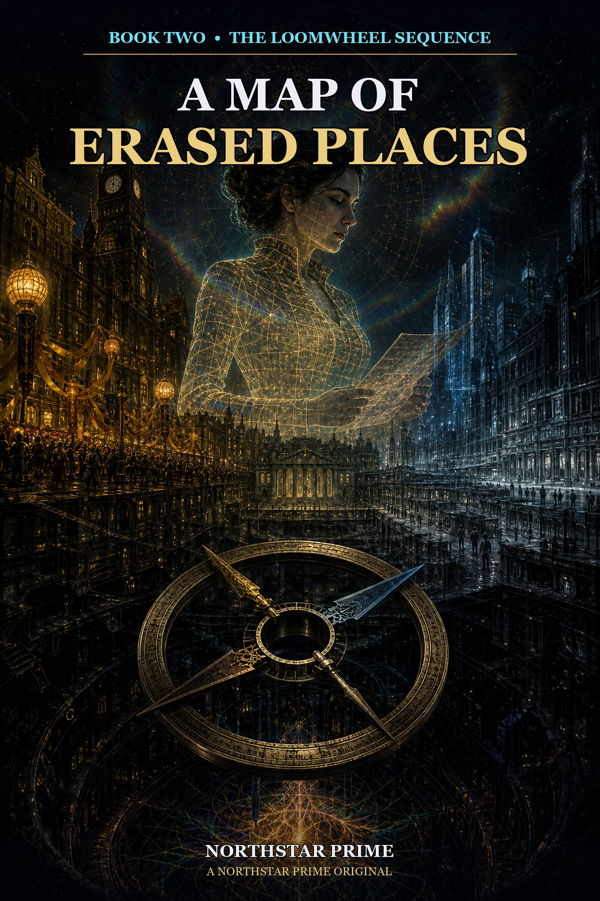

Book Two of THE LOOMWHEEL SEQUENCE
NorthStar Prime release edition.
Chapter One — Twenty-Seven Days of Custody
The map lost a street while eight people were looking at it.
Nia Vellum noticed because she had taught the street how to disappear.
Not this street. Not, so far as she could establish, this morning. The grammar was familiar: a pale contraction at the route boundary, three harmless municipal updates arriving in the wrong order, then a clean redistribution of every responsibility that made a place expensive to remember. Transit forgot first. Emergency service followed. Tax authority retained the property and lost the people. The map did not turn blank. Blankness might have invited a question. It repaired the gap with a shorter avenue and a decorative planter nobody had authorized.
Rain Index's plural-custody room surrounded the map in eight walls of glass. One wall faced the appeals hall. One faced a mechanical clock whose two second hands disagreed by exactly the bandwidth Quiet Relay could carry backward. The remaining six displayed the same section of Chroma Solstice under different custodial permissions.
At 09:17:03, every wall showed Lantern Block.
At 09:17:04, none did.
Through the western glass, beyond the map displays and the wet obsidian ribs of the station, Vellum could still see the district. Laundry stirred between its balconies. A delivery tram waited at a blue platform. Someone in a yellow coat leaned from a fifth-floor window and shook a rug into the rain.
The street existed everywhere except where existence became service.
“Stop the window,” Tessa Om said.
The mechanical key had not yet turned.
That detail mattered. Twenty-seven days earlier, Vellum's future coordinate had named this minute as a maintenance opening in the quarantine around her body. Crown Witnesses had called it a rescue window. Null Cartographers had called it a containment lapse. Prism Tail had called it an appointment with a person who had already demonstrated poor boundaries by signing his name eleven months from now.
Vellum had called it an access condition.
Tessa had crossed that phrase out of the hearing draft and written: a chance to do something whose consequences are disputed.
The room had adopted Tessa's wording.
Before the clock started, every observer named what could stop it.
Tessa would stop for an affected-person refusal, a hidden change in custody, or any attempt to convert urgency into consent. Jo would stop for instrument drift, unlogged contact, or a bodily signal the model could not classify safely. Nera would stop for worker load or a maintenance route nobody present could interrupt. Aurora would stop if the fifth difference became an instruction through interpretation alone. Sima would stop for relic damage and preserved Crown's dissent that ritual custody might require actions the protocol forbade. Prism would stop if his future pressure family appeared as authorization.
Vellum went last.
“I will stop if access requires a complete private map,” she said.
Prism waited.
“Or if my desire to reach the body changes what I call evidence.”
The second condition could not be automated. Tessa assigned it to public challenge.
Each stop entered the glass walls beside the maintenance-window checksum. The future coordinate established when a route condition might occur. It did not establish who could use it, what use meant, or whether arrival would count as rescue.
Vellum accepted rules she had not designed and could not revise alone.
Only then did Jo reach for the mechanical key.
Jo Ash lifted both hands away from the control key. “Window stopped. No route contact initiated.”
The lamp above the key changed from ARMED to INTERRUPTED BY WITNESS.
“Reason for interruption,” said Crown conservator Sima.
“Not required,” Tessa replied.
“Reason for the record.”
“A district just vanished from six custodial maps.”
“That is a reason,” Prism said from the witness rail. “More of a district, technically.”
Nobody looked at him. He had been waiting twenty-seven days for that privilege to become funny again.
Vellum expanded the route history. Her projection shed three frames as the map unfolded, each loss replacing the room with the black-and-gold diagnostic around her physical body. A hand pressed against a translucent filament. A pupil wider than a transit tunnel tightened somewhere behind it. Then the custody room returned and her own transparent fingers were inside the map.
Jo saw the frame loss. Jo always did.
“Mark three,” she said.
The public recorder added:
VELLUM PROJECTION DISCONTINUITY: 0.12 SECONDS. BODY DIAGNOSTIC VISIBLE: YES. CORRELATION WITH MAP EVENT: PRESENT. CAUSATION: NOT ESTABLISHED.
Crown counsel leaned toward the nearest speaking field. “The contaminated projection should be isolated before further examination.”
“Denied,” Tessa said.
“You cannot deny a petition before it is made.”
“Then you have enjoyed a preview of the ruling. File the petition if you want the longer version.”
Vellum kept her attention on the map. A defense from her would strengthen Crown's premise that the projection was a technical object represented by other people. Tessa's ruling preserved Vellum's standing without certifying her innocence. The distinction was exact, useful, and unpleasant.
She opened the change ledger.
The system reported no deletion.
That was the second familiar feature.
“Display adjacent obligations,” Vellum said.
The map obeyed her voice only because the plural panel had granted one-session access. Her old Crown credential remained sealed. The route software outlined hospitals, tram depots, drainage channels, voting wards, food permits, utility debt, school boundaries, and the slow civic weather of trash collection.
Every obligation curved around Lantern Block.
The district had not been removed from one map. It had been removed from the agreements that required anyone outside it to arrive.
“Physical view remains,” Aurora Auric said.
The comet-wyrm hovered beside the western window, long body looped through a brace built for no species in particular. Gold instrument bands crossed her translucent scales. Her broken halo rotated by handspan increments above her brow, each piece ticking when the map refreshed.
“Four civic tones rerouted,” she continued. “The fifth did not.”
“Source?” Vellum asked.
“Not assigned.”
“Movement?”
Aurora closed both inner lids. The halo stilled. “With the people. Not the block.”
Vellum added that statement to the case without interpretation.
Prism watched her from the rail. The pale hook scar in his right palm rested against the unsigned warning they had sent twenty-seven days ago. His civil status now read SELECTIVELY PRESENT. His courier authority remained suspended. His ability to look as though a room had committed an offense merely by containing him had survived every administrative intervention.
“You know that deletion,” he said.
The question arrived in the form he used when offering her one last chance to avoid requiring the sharper version.
“I know the grammar,” Vellum said.
“Grammar generally has an author.”
“Crown survey systems inherited several of my route libraries.”
“And hands generally have people.”
Tessa glanced between them. She did not interrupt.
Vellum increased the map's magnification until the replacement planter became a continent of gold pixels. The deletion had no visible signature. Whoever built it had removed not only author identity but the field in which authorship should have appeared. A crude erasure left a hole. A professional one reassigned the question.
“Probable Crown-derived syntax,” she said for the record. “Possible reuse of my survey library. Author and action time unconfirmed.”
All of that was true.
The syntax had a cadence she remembered in her body and not in the projection log. The final route contraction waited half a beat before resolving, an old habit from when she used a mechanical stylus and allowed the instrument's return spring to settle. She had corrected the inefficiency years ago. Crown copies retained it because Crown considered inherited flaws a form of lineage.
Her maplight hand trembled through one missing frame.
Jo marked four.
“Conflict disclosure,” Vellum said. “The deletion resembles methods I designed and methods derived from them. I should not control the raw comparison.”
She partitioned the route history into three shares before the impulse to keep one private could finish becoming an argument. One went to Jo. One to Tessa. For the third she selected the two receiver-community delegates together: Nera Voss of Rain Index maintenance and Halen Sare, whose family had lived beside a Crown nursery that disappeared from maps without moving in space.
The system asked whether Vellum wished to retain an emergency master.
She declined.
Prism's throat scales dimmed from defensive amber to a color he would deny was relief.
“Window remains stopped,” Tessa said. “We address the people before the coordinate.”
Crown counsel objected. “The maintenance interval closes in forty-three minutes.”
“Then the future has submitted an inconvenient schedule.”
“A human body may be at risk.”
Every face in the room turned toward Vellum.
Her physical body occupied the diagnostic field eleven months ahead, one hand braced against living carrier tissue and the other curled around a route control no present instrument could reach. The body showed dehydration, pressure injury, and measurable fatigue. It also showed voluntary resistance whenever Crown attempted remote extraction.
Vellum had spent twenty-seven days learning not to translate that resistance into consent for whatever she wanted next.
“My body is at documented risk,” she said. “So are the people whose services just vanished. The window supplies opportunity, not priority.”
Sima touched two fingers to the Crown seal at her collar. “Recorded.”
The first emergency call arrived six seconds later.
It did not arrive through the civic network. A boy on a rooftop across the district had found an old heliograph and aimed it at Rain Index. Sunlight was unavailable, so he used a kitchen lamp and a polished serving tray. The flashes were irregular, interrupted by rain, and too slow for speech.
Aurora translated the timing.
“Tram doors locked,” she said. “Insulin aboard. Driver can see the clinic. Route says no recipient.”
Prism was already lifting his courier harness.
The exchange had removed its license filament. He had preserved the empty leather frame because tools did not cease being evidence when an institution declined to recognize their purpose.
“I can reach the tram,” he said.
“No authorized address,” Crown counsel said.
Prism fastened the harness. “Fortunately, I remain unauthorized.”
“You remain under route suspension.”
“Selectively.”
Tessa opened a temporary witness-delivery form. “No one leaves alone. Recipient standing must be established before transfer. Prism, you are transport, not adjudication. Aurora, carrier observation. Halen, affected-community witness.”
“Vellum?” Prism asked.
The map over his shoulder contracted again. A blue stair vanished from the deleted block and reappeared as a decorative line in the official legend.
“I remain here,” Vellum said. “I can compare the live changes.”
It was the efficient allocation. It also kept her far from the people harmed by a grammar she recognized.
Nera Voss folded her maintenance arms. Her coverall retained plaster dust from the Ghost Tower repairs. “Projection has no travel time.”
“My presence may contaminate the route.”
“Your absence already has a result.”
The sentence entered the room without technical ornament and left nowhere clean to stand.
Vellum looked at the future diagnostic. Her body did not move. The filament behind it pulsed once, and every map displayed a gold seam around the deleted block.
“Add me as technical witness,” Vellum said.
Tessa did. “Not route authority.”
“Agreed.”
They crossed by maintenance passage because the civic doors no longer admitted that the western platform connected to anything. Nera opened a panel behind the appeals records, turned a valve marked BORROWED AIR, and led them into a service tunnel under the rain.
Vellum projected from relay to relay. Each transfer cost a frame. The city appeared in discontinuous slices: wet tile, copper pipe, Aurora's halo, Prism's empty harness, the white of Halen's knuckles around a handrail. Between slices came the future chamber and the hand on the filament.
At the boundary of Lantern Block, the tunnel changed age.
The northern wall became new poured concrete. The southern wall held glazed brick worn smooth by a century of maintenance carts. The floor remembered rails removed before either wall existed. Nera knelt and touched the junction without crossing it.
“Three repair histories,” she said. “All carrying current.”
“Voltage?” Vellum asked.
Nera gave her a look usually reserved for people who inspected ladders by philosophy.
“Current enough to kill you in all three histories.”
“Useful convergence.”
Prism glanced back. “She means don't lick the wall.”
“I had derived that.”
“The reader benefits from redundancy.”
It was the first time he had used reader since MOTE curled into the Book One incident ledger. Nobody corrected him. The tunnel contained enough unstable categories.
At the tram platform, the doors stood open.
The driver stood inside with both palms visible. Three insulated medicine cases waited behind her. The clinic occupied the opposite side of the street, thirty steps away. Between tram and clinic, the pavement displayed no obvious hazard.
Every instrument said there was no route.
Halen raised the temporary form. “We are present. Are you choosing to transfer?”
The driver nodded, then stopped herself. “Yes. Record yes. I don't know whether the tram company still employs me.”
“Employment is not required for present custody,” Tessa said through the form's relay.
“It was required when they locked the door.”
Prism stepped onto the tram. No alarm sounded. The network did not recognize an unauthorized courier entering an unlocated vehicle.
He checked temperature ribbons and seals. “Three cases accepted for transport. Recipient not yet established.”
The clinic door opened across the street. A woman in a green apron called out the names of six patients. Each name produced a different error on Vellum's display: deceased, never registered, moved without forwarding route, duplicated household, unsupported script, field unavailable.
The woman finished and said, “They're still here.”
“Can they answer for themselves?” Halen asked.
“Five can. One is a child.”
“Then five answers and one guardian relationship. No collective shortcut.”
Vellum opened a blank address field. The system demanded coordinates.
“Use witnesses,” Nera said.
“The form does not support—”
Vellum stopped.
The form was not weather. It was not the filament, the fifth tone, or a disputed future trace. A person had designed the limit. Another person could alter it.
She changed LOCATION TYPE from CIVIC COORDINATE to PRESENT WITNESS. The map rejected the schema. Tessa countersigned the exception. Nera and Halen named the physical landmarks. Aurora recorded the carrier difference. Prism waited with the cases rather than converting urgency into unilateral completion.
One by one, the patients answered.
The transfer took eleven minutes.
The maintenance window around Vellum's body closed during the fourth.
Crown counsel announced the loss through every shared channel. Vellum heard it and continued recording recipient acknowledgments separately from courier delivery. A future opportunity had ended. Six present people received medicine.
No instrument calculated the exchange rate.
When the final case crossed the clinic threshold, a child came down the stairs carrying a compass large enough to require both hands.
She was perhaps nine. Her hair was divided into three braids wrapped with ribbons of three municipal colors, none agreeing with the green apron she wore over her clothes. The compass housing was black receiver-metal veined with gold. Its face contained no directions. Three needles rested against three different zeros.
Vellum's projection lost fourteen frames.
For almost half a second she stood in the future chamber as if the eleven months between them had collapsed. Her physical hand was no longer against the filament. It was holding that compass.
Then the clinic returned.
The child looked directly at her.
“You told me to bring this when the street forgot us,” she said.
Vellum did not ask which version of her had spoken. The question would have made the child carry an adult's need for a clean history.
“What would you like us to call you?”
“Edda Vale.”
Halen made a sound behind her. Not surprise. Recognition with nowhere safe to go.
“Relationship?” Tessa asked through the form.
“My niece,” Halen said. “In one record.”
Edda considered this. “He still brings my library books in all of them.”
“Present relationship witnessed,” Tessa said. “Historical scope open.”
Vellum lowered her maplight hands until she and the child occupied the same line of sight. “Do you choose to transfer the compass?”
“No.”
Crown counsel began to object to the evidence remaining in an erased district.
Tessa muted him.
Edda turned the instrument toward Vellum. “I choose to show it.”
“Under what conditions?”
“You don't get to take the middle out again.”
Again.
The word pressed against Vellum's missing frames. She could have asked for clarification. She could have explained that the projection possessed no authenticated memory of altering this instrument. She could have listed the branch mechanisms by which a child might remember an event Vellum did not.
Instead she said, “Recorded.”
Edda placed one thumb on the compass glass.
The three needles woke.
One pointed west toward the Sepulchral archive. One pointed down, through the platform, toward the censored route beneath Relic Descent. The third turned past every engraved zero and settled on Vellum's chest.
No needle pointed north.
Gold writing formed around the erased center of the face:
COMPLETE MAP: NO SINGLE HOLDER.
The future diagnostic opened on every instrument in the clinic.
Vellum's body appeared with one hand on the living filament and one hand empty where the compass had been. Behind her, the vast pupil narrowed. A line of material text grew inside the chamber wall without ink or pressure.
MAINTENANCE WINDOW MISSED.
The statement remained for two seconds.
A second line formed beneath it.
CUSTODY WINDOW OPEN.
Aurora's halo produced four notes and a space where the fifth might have resolved. Prism did not call the message helpful. Halen did not call it a threat. Nera checked the clinic power and found no corresponding surge.
Vellum created a new case field.
AUTHOR: UNKNOWN. CARRIER: LIVING MATERIAL, PROVISIONAL. PREDICTIVE ACCESS: POSSIBLE. INSTRUCTIONAL AUTHORITY: NONE.
Under CONFLICT she entered her name.
Edda kept both hands on the compass.
Outside, rain fell across a street the city no longer promised to drain. The decorative planter on the official map filled with blue pixels and bloomed into a flower no one in Lantern Block could see.
Vellum looked from the false flower to the people the map had routed around.
The place was not gone.
Only the obligations had been erased.
That distinction was where the crime lived.
Chapter Two — The Parade Nobody Survived
Glassmarket had three names and one smell.
The names appeared on competing banners above the east gate. LANTERN BLOCK occupied the oldest stone in letters repainted so often the enamel stood proud as pastry. UNDERCOLOR NORTH hung from a municipal scaffold, cloth patched with the names of families who remembered being driven out. The COLORLESS REGISTRY had contributed a white plastic notice explaining that no recognized district occupied the coordinates.
Under all three, a bakery sold pepper bread into the rain.
The oven occupied the same physical corner in every account.
Glassmarket licenses named Pel Marr's family as continuous bakers. Undercolor testimony named the shop as a receiving kitchen during evacuation. The Registry issued flour permits to a parcel number while denying a district existed around it. Each system could deliver ingredients. None agreed who had received them.
Prism checked the flour sacks. Three addresses, one door. The utility meter carried a Registry parcel code soldered over an Undercolor plate. Festival photographs showed the same chimney. Evacuation testimony described pepper bread handed through the same window.
“So the bakery proves continuity,” a Glassmarket recorder said.
“It proves baking here across several supported records,” Prism replied.
“That is continuity.”
“Of oven, labor, recipe, location, family, council, or title?”
The recorder did not choose.
The baker did. “Today it proves I opened before rain.”
She authorized the bakery as a present witness landmark and refused historical consolidation. Deliveries could find the door. Relief forms could cite it. No system could turn that practical use into automatic victory for its parade.
Prism entered the smell of pepper bread under OBSERVED CARRIER / NONEXCLUSIVE.
Some truths were strongest when prevented from ruling beyond their size.
Prism Tail trusted the bread.
“Present material evidence,” he said, accepting a warm heel from the woman at the window. “Carrier fresh. Payload aggressively peppered. Confidence point nine.”
“Payment confidence?” she asked.
His courier account had been frozen for twenty-seven days and selectively restored for medical transport eleven minutes ago. The display on his wrist considered the purchase, consulted his disputed death, and asked whether the estate wished to authorize a final comfort.
Prism showed her the message.
The baker looked at him, at the bread already in his hand, and at the civic emergency unfolding around them. “Pay next time.”
“An instrument with excellent predictive range.”
“I mean it.”
“That reduces the range but improves the terms.”
She leaned through the window. “My grandmother opened this bakery after the parade. My husband says his grandmother died in it. The Registry says the ovens were installed six years later in an empty lot. You tell me which debt their machine will recognize.”
Prism stopped chewing.
The bread had been offered as evidence before he noticed.
He recorded the baker's present claim and asked which name she wanted attached. She gave him all three family names and refused to rank them. The temporary witness-address form accepted the entry only after Tessa Om expanded its field length from Rain Index.
Around them, Lantern Block performed the irritating labor of existing.
Residents carried water from a pump whose utility account now ended at the district boundary. Mechanics raised the locked tram with hand jacks so the driver could inspect the undercarriage. Children chalked doors around every place where the map had turned a building into landscaping. On the avenue, two funeral bands had arrived for mutually exclusive dead.
One played brass in celebration.
The other carried its drums silent.
“The parade anniversary,” Halen Sare said.
He stood beside Prism wearing the gray sleeve of an affected-community witness. His niece Edda had remained at the clinic with the compass under her own custody. Halen's face carried the stunned concentration of a person whose family had returned from a history he remembered only as public argument.
“Which parade?” Prism asked.
“Exactly.”
At the center of the avenue, Glassmarket's council had erected an arch of colored mirror. Every pane reflected the crowd in a different civic uniform. A speaker beneath it rehearsed the approved account through a cone-shaped amplifier.
“Forty-two years ago today, the united citizens of Chroma completed their peaceful march against imposed monochrome—”
Across the intersection, an Undercolor elder raised a black ribbon.
The silent drums struck once.
Windows shook. The mirror arch returned a hundred images of people running.
Prism's lens filled with route warnings. CROWD INSTABILITY. HISTORICAL REENACTMENT. MORTALITY RESERVE INSUFFICIENT. Each warning had arrived from outside the deleted block, where institutions could still describe danger without accepting responsibility for reaching it.
Aurora circled above the roofs, listening for carrier changes. Vellum appeared in every third public lamp, her projection unable to hold a continuous relay inside the deletion. She had asked Prism to document who moved first if the commemoration became a conflict.
It was a precise request. It was also wrong.
Everyone here had moved first in one history.
He opened the public witness channel. “I am recording present action from the first shared timestamp after deletion. Historical action remains under separate review.”
The Glassmarket speaker pointed at him. “Courier. You delivered the Registry order that cancelled our route.”
“I delivered medicine.”
“Your kind delivered the eviction notice.”
Prism looked down at his empty harness.
His profession had spent generations pretending the content of a parcel became somebody else's ethics at the instant of delivery. Book One had cured him of that convenience without curing anyone else's memory of couriers.
“Name the delivery,” he said.
“Parade year. Three days before. A gecko in South Meridian blue brought the Colorless order to the transit office.”
“Not me.”
“I know.”
That removed the easiest defense.
“Do you have the receipt?”
The speaker held up a photograph.
The image showed the avenue under a rainless sky. The mirror arch was unfinished. Workers in blue courier coats carried a white Registry cylinder toward the transit office. Behind them, crowds assembled with festival flags.
At the bottom edge, a child had written the date in gold pencil.
The Undercolor elder crossed the intersection with a second photograph. It showed the same arch, complete and cracked. Uniformed carriers distributed white cylinders while families loaded carts. Smoke covered the sky. The date, stamped by an emergency clerk, was the same.
A Registry examiner arrived carrying a third image sealed in clear laminate.
It showed an empty lot. No arch. No transit office. A survey marker stood in weeds under a blue sky. The marker's clock read the same date and minute as the other photographs.
“Only this image has unbroken institutional custody,” the examiner said.
The three images gathered three crowds.
Glassmarket residents recognized the mirror arch before it was finished. They named the masons, the woman who mixed cobalt into the grout, and a councilor visible at the left edge who had later married the photographer. Undercolor families recognized the carts. One woman found her own childhood coat folded over a rail and began listing what had been packed inside its pockets. The Registry examiner enlarged the survey marker and traced its serial number to an authorized shipment.
Nobody was pretending.
That was what made the dispute harder than fraud.
Prism asked each group to state the narrowest claim their photograph could support. The exercise failed immediately.
“It supports that we won,” said the Glassmarket speaker.
“A photograph of an arch supports an arch,” Prism said.
“And a celebration.”
“It supports flags and people arranged beneath them. Celebration is plausible. Victory is interpretation.”
The speaker bristled. “You were not there.”
“Correct. That is why the image needs to do its own labor.”
The Undercolor elder held up the evacuation photograph. “Ours shows removal.”
“It shows carts, cylinders, smoke, and people moving. Your testimony supplies forced removal. The emergency stamp supplies official awareness. We admit them together without pretending they are one carrier.”
“You speak as if separating them makes the memory weaker.”
“It makes the claim harder to steal.”
The elder studied him and lowered the image by one inch.
The Registry examiner went last. “The survey image supports vacancy.”
Prism pointed to the weeds. “It supports a field without visible buildings at one exposure. Do you have the lens direction?”
“Certified.”
“The plate before and after?”
“Unavailable.”
“Independent witness?”
“The survey process is the witness.”
“Processes have authors, maintenance, blind angles, and lunch breaks.”
“This one was automated.”
“Then perhaps only the first three.”
The crowd laughed. Prism allowed the sound to release pressure and stopped before it became permission to humiliate the examiner.
Aurora descended to the arch. Her halo compared ambient carrier states around the photographs. The festival image carried brass overtones. The evacuation image carried drum intervals. The empty field carried the regular timing pulse of a Registry scanner. None sounded pasted onto the material.
“Recognition supports carrier continuity,” she said. “It does not make every payload complete.”
Vellum appeared in three mirror panes. “Search for shared defects.”
Jo measured the photographs' edges. Each had been cut by a different tool. Each carried a small crescent compression at the lower right, as if held in the same clamp during an event not visible in any image.
“Shared custody after exposure,” Jo said.
“Or common manufacture,” the examiner replied.
“Both remain.”
The clamp mark became the first fact all three councils wanted and none could own. It suggested the images had occupied one physical process at some point, even if their depicted histories could not coexist under ordinary sequence.
Prism recorded the convergence without announcing progress. People often mistook a shared anomaly for agreement and then punished whoever still disagreed.
The funeral bands waited at opposite corners. Brass players held instruments at their sides. Undercolor drummers kept sticks raised above silent skins. Each group watched the photographs as though the wrong sentence might make their dead less dead.
“No artifact will be asked to decide whose grief is authentic,” Prism said.
The Glassmarket speaker looked at him. “Easy for a man who came back.”
Prism's route license flashed DECEASED beneath his coat.
“I did not come back,” he said. “I failed to leave on schedule.”
For once, the joke contained enough truth that no one laughed.
The baker left her window holding a fourth object: a family photograph burned at the edges and joined down the middle by a gold seam.
Vellum's projection stabilized in the surface of the mirror arch.
“RD-A11,” she said. “Version-Burned Family Photograph.”
“Found in Relic Descent,” Prism said.
“Recovered through route-assist residue. Material sampling restricted.”
The examiner extended a gloved hand. “The Registry will take custody.”
The baker tucked the photograph against her apron. “The Registry already forgot the bakery.”
“That does not affect our conservation capacity.”
“It affects your return address.”
Prism enjoyed the line for one heartbeat and then did the work.
“Present holder retains it,” he said. “We can inspect without transfer if she chooses.”
The Glassmarket council wanted the object placed under the mirror arch. The Undercolor assembly wanted it examined beside the silent drums. The Registry wanted a neutral surface outside the district, which was how institutions described territory they already controlled.
The baker solved the dispute by setting the photograph on her bread counter.
“Neutral enough,” she said. “Everybody owes me.”
Jo Ash arrived through the maintenance tunnel with a portable material bench. She logged the counter's flour, heat, and pepper oil as contamination sources. Halen named the baker as custodian. The three councils chose one observer each. Prism recorded refusals separately from agreement.
The photograph contained the same family three times.
In the left version, six people stood beneath the unfinished arch wearing festival white. In the center, four loaded an evacuation cart while two figures survived only as unburned outlines. In the right, the family picnicked in an empty field where the bakery would later stand.
Every version occupied continuous paper fiber.
The burns did not follow image boundaries. They followed relationships.
Where the baker's grandmother held her sister's hand in the festival image, the paper charred into the evacuation version. Where the sister disappeared from the evacuation cart, the gold seam entered the empty field and circled a picnic cup. The damage behaved less like editing than grief selecting an edge.
Jo tested pigment age, fiber growth, handling oil, pressure deformation, and three ordinary forms of fraud. The results supported three material histories.
“So which is original?” the Glassmarket speaker asked.
“That property has not been measured,” Jo said.
“Oldest, then.”
“Each sample's age is internally consistent.”
The Undercolor elder touched the silent drumstick to her palm. “Which one records the dead?”
“The center image records two absent figures and damage consistent with relation-linked version change.”
“You refuse to say killed.”
“I did not observe the event.”
“I did.”
“Then your testimony is a different carrier. It should be admitted as testimony.”
The Registry examiner smiled with the careful relief of someone watching rivals invalidate each other. “No image establishes an authorized district. The registered blank remains controlling.”
Edda's voice came from the clinic stairs.
“Why does not seeing get to be strongest?”
She had brought the compass but kept its glass covered with both hands. A woman in the green clinic apron followed at a distance chosen by Edda, close enough to care and far enough not to confiscate the decision.
The examiner turned toward the child with institutional gentleness. “Absence in a verified record has legal meaning.”
“So do we.”
“That is the question under review.”
Prism stepped between them—not blocking the examiner, but entering the record where neutrality might otherwise disguise which person had power.
“No,” he said. “Their civil standing is under repair. Their physical presence is witnessed. Their meaning is not your jurisdiction.”
The examiner's smile cooled. “Your own standing is disputed.”
“Then I arrive with relevant experience.”
Tessa spoke through the witness channel. “Record the Registry statement as an overclaim. The absence of a district entry establishes the state of the Registry. It does not establish empty land.”
Vellum's projection flickered across the mirror panes. In one reflection she stood beside Prism. In another she faced away. In the third, her hands were inside a map that had no center.
“The photograph does not choose a final history,” she said. “It does establish that the three versions share material relations the present map cannot represent. Restoring one layer without preserving the others would destroy evidence.”
“Then restore nothing?” the baker asked.
Vellum paused.
Prism heard the old solution waiting inside her silence: preserve the dangerous complexity by restricting everyone who might alter it.
He finished the bread heel and brushed pepper from his fingers.
“We don't need to settle the parade to make the drains remember rain,” he said.
The district had twenty-three active service failures. Medicine had been the first. Water pressure was falling. The uncollected current in three electrical histories was warming a transformer under the avenue. Emergency maps routed all repair crews around the block.
Prism opened the witness-address form.
“What present name will the transformer answer to?”
“Lantern substation four,” said the Glassmarket speaker.
“Undercolor return grid,” said the elder.
“No registered asset,” said the examiner.
“That last one is less helpful but admirably consistent.”
He entered all three.
The form objected that an asset could not possess multiple official names. Tessa added a provisional-name field. Halen and Edda witnessed physical access from the bakery. Nera Voss identified the maintenance tunnel. Aurora supplied the moving carrier tone. The baker acknowledged the repair route under all three names and declined any restoration of parade authority.
Vellum held the technical share.
“Three names will produce a checksum collision,” she said.
“Can the checksum describe the collision?” Prism asked.
“Not under the current schema.”
“The schema has had a difficult morning.”
Vellum studied the map. “I can preserve each name as a separate claim and bind them to one present service object.”
“Who can separate them later?”
“Any two custodial shares.”
“Who can stop a separation?”
She looked toward Edda.
“An affected-community holder.”
Edda lifted one thumb from the compass glass. “Me for now.”
“If you choose it,” Vellum said.
“I choose it until lunch.”
Tessa recorded the limit.
The transformer accepted the triple-name route with the administrative equivalent of disgust. A maintenance crew outside the block received directions to the boundary. Nera met them there and transferred the route into witness custody. Nobody used the word original.
As the crew crossed, the two funeral bands began again.
The brass players performed the victory march. The drummers sounded the evacuation cadence. Their rhythms collided for eight measures, then found a shared interval neither side claimed to remember.
Aurora's halo answered with four tones.
The fifth remained a moving absence among the crowd.
Prism watched people choose what to do with the sound. Some danced. Some stood with ribbons raised. One woman covered her ears. The repair crew worked beneath all of them.
The map restored power under three labels.
It did not restore the street.
At the bread counter, Jo returned RD-A11 to the baker. The photograph's gold seam had changed. A new burn crossed the bottom edge, where no image had been before. Inside it stood the present counter: flour, portable instruments, three councils, one child with a covered compass, and a dead courier eating on credit.
“I object to the final classification,” Prism said.
The baker looked at the image. “You look alive enough to owe me.”
“There. Independent witness.”
Vellum appeared in the glass over the ovens. “The new image has no demonstrated exposure history.”
“It has us,” Edda said.
“That establishes depicted content, not origin.”
“You always talk around the middle.”
The compass clicked beneath her hands.
All three needles moved toward the Sepulchral archive.
The photograph's new burn spread in the same direction, consuming none of the existing images. It added a narrow dark corridor under the family picnic. At its end, a white shelf waited inside a room whose door had been buried from both sides.
Above the shelf, handwriting appeared in the gold seam.
Vellum recognized the letters.
They were hers.
DO NOT RESTORE A SINGLE HISTORY.
Below the warning, in a smaller hand, someone had added:
THEN WHY DID YOU ERASE ALL THREE?
Prism read the lines twice.
He did not ask Vellum whether she had written them. That question had already become too small.
“Who was this message meant to move?” he asked.
Vellum's projection lost one frame.
“Me,” she said.
It was the first claim she had made all morning without a qualification.
Chapter Three — A Projection Has No Alibi
By noon, Crown had filed six petitions to isolate Vellum from her own investigation.
The seventh requested that the first six be treated as a single emergency because repetition demonstrated urgency.
Tessa Om stamped it REPETITION DEMONSTRATES REPETITION.
The stamp belonged to MOTE.
No one had seen the creature enter the public map laboratory. It appeared as a small gold price tag tied to Tessa's wrist, its printed value changing whenever counsel used the word necessary. Tessa allowed it to remain because the appeals code contained no prohibition against accessories with editorial judgment.
Vellum stood inside the central projection ring while strangers argued over whether she counted as a person, an instrument, a contaminated copy, or a route condition. The ring cast no restraints. That improved the room's appearance without changing its geometry.
“The correlation is no longer incidental,” Crown counsel said. “Seven route deletions. Seven projection discontinuities.”
Jo Ash adjusted a Null-Plane Survey Needle on the bench. “Thirty-one discontinuities. Seven near deletions.”
“Which is still significant.”
“State the model.”
“The projection is causing or carrying the events.”
“Those are different models.”
“Either justifies isolation.”
“Then your conclusion existed before your model.”
MOTE's price changed from NECESSARY to CONVENIENT.
Prism sat behind the witness rail with an unpaid pepper-bread invoice pinned to his suspended courier license. Edda had made the pin from a bent transit token. He had objected to the aesthetic and preserved it without alteration.
Aurora occupied the high brace near the ceiling, halo pieces turned toward six receivers. At each deletion, the four civic tones curved around a Chroma obligation. The fifth difference remained with the affected residents. She had reported both patterns and declined three requests to call the second one a voice.
Vellum had spent the same hours comparing her missing frames.
The longest discontinuity had occurred when Edda uncovered the compass. Fourteen absent frames. In the diagnostic substituted for them, Vellum's physical body held the same instrument eleven months ahead. The compass now remained in Edda's hands, twenty-seven days after Book One's warning, its material contact with the future body unexplained.
Vellum could model branch transfer, carrier anticipation, forged diagnostic input, adjacent-state contamination, and a future in which the compass traveled normally from Edda to the body. Each fit part of the evidence. None explained why Vellum's handwriting appeared in a photograph held by a baker who remembered three histories.
She wanted the raw map alone.
That desire was not evidence against her. It was, however, one reason other people belonged in the room.
“I propose a falsifiable separation test,” she said.
Crown counsel turned as if a machine had spoken out of order. “You cannot design the test of your own contamination.”
“Correct. Jo will design the adversarial conditions. The affected-community panel will choose the sequence. I will state predictions before each run and have no access to the controls.”
“You still supply the projection.”
“That is the variable you petitioned to remove.”
Tessa opened a fresh record. “Objections to running the test?”
Crown objected that testing might spread contamination. Sen Ilex of the Null Cartographers objected that a public result could expose protected detection methods. The Colorless Registry objected that deleted locations had not been legally established and therefore could not serve as dependent variables. Prism objected to the phrase dependent variables on behalf of districts old enough to have bakeries.
Edda objected that the adults had not asked when she needed to return to school.
“When do you?” Tessa asked.
“My school says I don't.”
Tessa added educational standing to the emergency relief case.
The test proceeded.
Jo sealed the protocol before moving an instrument.
The packet named four candidate mechanisms, the sequence-selection method, what would count as deviation, who could stop, and which results would not be allowed to mean more than they measured. Edda's bakery-token draw determined housing order. The affected-community panel kept the control key. Crown and Ilex received the packet hash before the first shield opened so neither side could accuse the other of inventing conditions after seeing the needle.
Vellum wrote her predictions in public.
Projection-proximity response would vary with her distance. External absent-route pressure would vary with instrument location. Concealed network input would weaken under isolation. Expectation effects might appear in empty or replica housings and required separate interpretation.
“What result clears you?” Crown counsel asked.
“None in this test.”
The test could weaken the claim that her present projection directly generated the needle response. It could not examine every body state, branch, prior act, or remote mechanism.
“Then why run it?”
“Because a smaller false accusation remains false even when a larger question stays open.”
Jo added the sentence to the scope field.
Exculpatory evidence did not need to prove innocence before it could constrain power.
RD-A05 was not a compass, though Crown cataloguers had stored it beside navigational tools. It was a needle mounted in a ring of dull gray receiver-metal. In ordinary space it pointed toward the nearest calibrated null surface. Near an erased route, the needle refused direction and scored pressure into the tablet beneath it.
The marks resembled a map only after someone made choices about scale.
Jo set four identical housings around the laboratory. One contained RD-A05. One contained an ordinary survey needle. One held a Crown replica. The last contained no instrument. Opaque shields prevented Vellum and the public observers from identifying them.
Edda selected the sequence with bakery tokens drawn from a paper bag. Halen witnessed the draw. Nera inspected every housing for electrical feeds. Sima preserved Crown's objection that concealment violated ritual handling, then confirmed the objects had not been damaged.
“Prediction one,” Jo said.
Vellum faced the first shield. “If projection proximity causes the route response, all active needles should deviate as I approach. If RD-A05 measures external absent-route pressure, only its housing should inscribe, regardless of my distance.”
“And if it is performing for expectation?” Prism asked.
“Then the empty housing may produce our most interesting result.”
“At last, a scientific basis for management.”
The first housing contained the ordinary needle. Vellum approached in three measured increments. It remained north. Her projection lost two frames at the final position. No inscription appeared.
The empty housing came second. It produced no route response, though MOTE climbed beneath its shield and listed itself as INCIDENTAL CONTENT.
The Crown replica came third. It turned toward Vellum's body coordinate, paused at the familiar mechanical cadence, and then aligned with Crown's sealed archive beneath the laboratory.
“That instrument knows what authority expects north to mean,” Vellum said.
Sima recorded the statement as technical criticism rather than sacrilege.
RD-A05 came last.
Before Jo removed the shield, the needle began scratching.
Vellum stood eight meters away.
Jo moved her to four meters, then one, then outside the room. The depth and direction of the marks did not change. Jo moved the instrument itself toward the western wall. The needle bent, dug a pale groove into the tablet, and stopped.
“External field supported,” Jo said. “Projection-proximity model not supported under tested conditions.”
Crown counsel leaned into the speaking field. “The projection may be acting remotely.”
“Then state a prediction that distinguishes remote action from any cause whatsoever,” Jo said.
No prediction came.
MOTE's price changed to UNFALSIFIABLE / TWO FOR ONE.
Vellum did not enjoy the exculpation. The test showed that RD-A05 responded to something outside her present projection. It did not show that a different version of her had not created that condition. A person could be absent from the weapon and present in its history.
“Repeat at the deleted block,” she said.
Sen Ilex spoke for the first time. He occupied no visible projection. His voice arrived through an unaddressed maintenance line, warm and patient and stripped of every room tone that might reveal location.
“The needle will expose a protected route.”
“Then name who may audit the protection.”
“Those trained to recognize extraction risk.”
“Selected by whom?”
“By demonstrated competence.”
“Measured by whom?”
“You passed the measure, Doctor Vellum.”
The room became quieter than the equipment.
Prism did not look at her. That was more accusatory than looking.
Vellum searched her available logs. Crown survey certification. Sepulchral access. Three discontinued hazard programs. No Null Cartographer membership. No competency trial. The absence had clean boundaries.
“Provide the record,” she said.
“At the appropriate custody stage.”
“Then the claim remains unsupported.”
“You remember the courtesy, if not its name.”
His channel closed.
MOTE displayed a new price: ONE MEMORY, CONDITION UNKNOWN.
They carried RD-A05 to Chroma under eight-party custody.
The deleted district had acquired new chalk architecture since morning. Children outlined missing doors, drains, and tram connections in colors assigned by no council. Adults placed physical signs over the outlines: CLINIC PRESENT. TRANSFORMER HOT. THREE HISTORIES CROSS HERE. DO NOT RESTORE WITHOUT ASKING.
The public map rendered the signs as decorative protest art.
The needle ignored them.
It pulled Jo past the triple-named transformer, around the bakery, and into a courtyard Vellum remembered as a demolition parcel. A five-story apartment building occupied the space. Laundry crossed above them. Someone watered herbs from a balcony. The official map displayed the decorative planter.
“This building was removed sixteen years ago,” Vellum said.
Halen touched the courtyard wall. “My sister lived here until the parade clearance.”
The Glassmarket speaker, present as a dissenting witness, shook his head. “My aunt still lives on the fourth floor.”
“Which apartment?” Prism asked.
Both men pointed to 4C.
A woman leaned from that window. “If you are going to discuss my existence, come upstairs or lower your voices.”
They went upstairs.
The apartment belonged to Mera Vale under one registry and Pella Marr under another. The woman answered to both names, disliked both councils, and had two sets of family photographs she kept in separate drawers because displaying them together made the hallway change length.
She permitted a non-destructive survey and refused removal of any object.
The apartment resident—Mera Vale today, Pella Marr yesterday, both names tomorrow if the power stayed on—insisted the test include ordinary objects.
“You people bring instruments that already know what counts as interesting,” she said. “Try the boiler.”
Nera attached temperature strips to the pipes. One carried heat from a Glassmarket utility line. Another drew current through an Undercolor repair route. A third had no official source and still warmed the kitchen. The three systems met inside a copper manifold repaired with wire older than the apartment in Vellum's memory.
“Who repaired it?” Vellum asked.
Mera-or-Pella opened a cupboard. Its inside door held pencil marks: dates, pressure readings, initials. Some belonged to her. Some to a grandmother dead in one history and living in another. The earliest initials were N.V.
Vellum photographed them without touching the wood.
“Your initials?” Prism asked.
“Compatible.”
“We have established your relationship with adjectives.”
Jo compared pencil composition and indentation. The marks predated the route deletion. The hand pressure matched Vellum's survey family imperfectly, as if written while holding a tool in the other hand.
The resident watched Vellum's projection lose a frame. “Did you fix my boiler?”
“Evidence supports that a person with my physical habits recorded it.”
“That's not what I asked.”
“I don't remember.”
The simpler sentence changed the room.
Mera-or-Pella took down the repaired blue cup. “I remember you refusing tea because you said the steam distorted your maplight. In another memory, you drank two cups and told my mother not to trust a route that couldn't name its plumber.”
“Both are plausible,” Vellum said.
“One of you was funnier.”
Prism leaned against the counter. “A branch anomaly of grave importance.”
The resident smiled, then turned serious. “You came before the whitecoats. You measured under the floor. You told us a safe map would have to forget the room. My mother asked who would remember us. You said the maintenance ledger.”
Nera looked at the initials inside the cupboard. “A ledger nobody outside the route could read.”
“My mother said that too.”
Vellum added the testimony with separate confidence fields for remembered language, physical repair, and inferred motive. She did not mark the story false because it conflicted with her memory. She did not mark it true because it sounded like a confession the case wanted.
The boiler clicked.
RD-A05 moved one millimeter toward the manifold before returning to the hidden room below. The absent route pressure traveled through ordinary repair infrastructure. Whatever had been erased had not become isolated from kitchens, heat, hands, and unpaid maintenance.
“Your prison leaks into plumbing,” Prism said.
“Or the plumbing carries the boundary,” Vellum replied.
Mera-or-Pella set the blue cup between them. “Either way, someone still has to wash it.”
RD-A05 pointed through her kitchen floor.
“Below is the old service basement,” she said.
“Below is eleven meters of demolition fill,” Vellum replied.
“Then your rubble has been borrowing my boiler.”
Nera found the service hatch under a woven rug. The hatch opened onto three stairs. The first descended into red brick. The second into poured concrete. The third appeared only when no single map layer occupied the display.
Vellum dismissed every authoritative layer.
The third stair remained.
Jo placed the survey needle on the top step. It did not point downward. It pressed its tip into the tablet and inscribed a rectangle eleven meters below the apartment.
Inside the rectangle, it marked a hand.
Not a drawing. Five pressure channels radiated from a central pad scarred by an old instrument return spring. The same cadence Vellum had recognized in the street deletion governed the distance between marks.
Her cadence.
Around the hand, the needle traced a hollow boundary. The shape did not resemble a room. It resembled space taught not to connect.
Aurora lowered her halo toward the stair. Four tones echoed from the walls. The fifth returned from below carrying no melody, only a difference in interval.
MOTE became a small directory moth and landed on the tablet.
“Floor not listed,” it said.
“Is that an observation?” Vellum asked.
“It is why directories hire moths.”
“Who made the mark?” Prism asked.
Jo examined the pressure channels. “The needle. In response to the field.”
“Whose hand does the field describe?”
Vellum could have said compatible with mine. That was correct. She could have said the projection cannot have made a physical pressure trace. Also correct. Each sentence offered a clean boundary and quietly invited everyone to stop at it.
She placed her maplight hand over the inscription without touching the tablet.
The scar geometry aligned.
“Mine,” she said. “Or a body state continuous enough to reproduce my survey injury.”
Prism waited.
Vellum added, “The field is external to this projection. That is not an alibi for my history.”
The needle moved again.
From the marked hand it drew a route west toward the Sepulchral archive. A second route descended toward Relic Descent. A third climbed through the apartment, crossed Pella-or-Mera's kitchen, and ended at the Version-Burned Photograph in the bakery.
All three lines stopped before touching their destination.
At each break, the tablet inscribed the same small symbol: a compass with its center removed.
Vellum knew the symbol.
Not from Crown. Not from the Null Cartographers. From a private design file she had never submitted, never shared, and could not find in her present logs.
It meant distributed map, reconstruction forbidden without dissent.
The apartment shifted around them.
For one breath, the kitchen was a demolished basement. For the next, it was a festival room hung with colored lanterns. In the third state, families packed evacuation carts against the walls. Pella-or-Mera stood in all three, older in one and younger in another, holding the same blue cup repaired at the handle.
Then the ordinary kitchen returned.
The cup remained on the table.
Vellum stared at it.
She remembered documenting the demolition parcel. She remembered no kitchen. She remembered no resident, no cup, no child learning a share protocol at this table.
Her memory was internally consistent.
So was the room.
“What did the test establish?” Tessa asked through the recorder.
Vellum forced herself to answer in the order the evidence permitted.
“RD-A05 responds to an external absent-route boundary. Projection proximity did not change the response. The boundary contains physical residue compatible with my body and a private share symbol compatible with my authorship. The building occupies at least three materially supported history states. My accessible memory conflicts with all present residents.”
“And what did it not establish?”
“Who enacted the deletion. Why. Whether the memory conflict was imposed, chosen, inherited, or transferred. Whether the routes stop to protect a site or to protect an author.”
Edda appeared in the kitchen doorway with the compass.
Nobody had heard her climb the stairs.
“It stops because you took the middle out,” she said.
Vellum looked at the instrument's erased center.
“Did you see me do that?”
Edda considered the question. “I remember you telling me I shouldn't have to.”
That was not the same answer.
Vellum recorded it exactly.
Outside, the civic map updated. The decorative planter expanded to cover the entire courtyard. Its false flowers opened in mathematical rows.
Under them, the apartment's boiler kept running on current from three histories.
The map had not proved the residents unreal.
It had only taught every distant institution how not to owe them anything.
Vellum looked at the share symbol in the needle's tablet and understood what her own precision had been protecting since morning.
Not innocence.
Jurisdiction.
Documentary Interlude D01 — Three Notices for One Block
The Chroma municipal spool printed the following notices on one continuous sheet after failing to determine which template superseded the others.
No office accepted authorship of the combined document.
Notice A — Glassmarket Festival Continuity Office
DISTRICT STATUS: OPEN. Registered name: GLASSMARKET EAST / LANTERN BLOCK. Historical event: Forty-Second Chromatic Victory Parade, completed without casualty. Present disruption: address-routing failure affecting medicine, transit, water, power, waste removal, education, and tax receipts. Requested action: restore the last certified Glassmarket map. Author: Acting Recorder Pel Marr. Author's access: council archive, festival rolls, parade images, current witness access. Confidence: 0.82 that local civic records support the named district; 0.41 that those records describe all present residents. Dissent: Undercolor delegates reject “victory,” “completed,” and “without casualty.” Known cost of requested restoration: may overwrite tenancy, kinship, and casualty claims filed under Undercolor names. Appeal path: witness-address table at the eastern bakery. Stop authority: no affected-community stop named in original filing.
Handwritten beneath without casualty:
Your record looked away before it counted.
Notice B — Undercolor Ward Evacuation Assembly
DISTRICT STATUS: OCCUPIED UNDER PROTEST. Registered name: UNDERCOLOR NORTH / RETURNING FAMILIES' BLOCK. Historical event: Parade Clearance, during which 418 residents were displaced and 37 did not reach the receiving district. Present disruption: map deletion has made an earlier removal happen administratively again. Requested action: restore services without restoring parade authority or extinguishing compensation claims. Author: rotating assembly; current reader Nemi Or. Author's access: household testimony, silent-drum rolls, family photographs, surviving route receipts. Confidence: 0.76 that a forced evacuation occurred; 0.58 in the stated casualty and missing-person total; lower confidence in the route each family occupied before removal. Dissent: Glassmarket residents deny that an evacuation order governed the event they remember. The Colorless Registry denies that an event was authorized at all. Known cost of a single-history restoration: loss of present tenancy, kinship records, repair claims, and standing for families whose return is not represented in Glassmarket records. Appeal path: rotating assembly and independent witness panel. Stop authority: no map revision without two presently affected residents.
Handwritten beneath 418:
Count remains disputed. Dispute does not equal zero.
Notice C — Colorless Registry
DISTRICT STATUS: NO VALID ENTRY. Registered name: NONE. Historical event: no parade authorized in the relevant period. Present disruption: unauthorized claims upon unmapped civic space. Requested action: seal access pending provenance review; suspend service creation to prevent recognition laundering. Author: automated continuity service. Human supervisor: field unavailable. Author's access: central permits, tax parcels, sanctioned route atlas, automated fraud model. Confidence: 0.99 that the Registry contains no parade permit and no currently valid district entry. Dissent: absence of permit does not establish absence of event, land, residents, harm, or other record systems. Known cost of requested sealing: medical, educational, utility, and civil isolation of people physically present. Appeal path: not available because no recognized claimant address exists. Stop authority: Registry Continuity Service.
The automated footer classified the known cost as:
NON-APPLICABLE TO VALID POPULATION.
That field was later preserved as evidence of the mechanism under dispute.
Witness-panel comparison stamp
None of these notices is admitted as a complete history. All three are admitted as evidence of present institutional action, present material conditions, and the claims their authors are equipped or motivated to see. The highest confidence value belongs to the narrowest claim: the Colorless Registry can establish what its own database does not contain. It cannot convert that absence into empty land without additional evidence. Glassmarket records support continuous local governance and omit or contradict Undercolor casualty claims. Undercolor records support displacement, continuing harm, and family return while leaving the exact count and some earlier route states disputed. Emergency relief will follow demonstrated present harm and recipient acknowledgment, not victory in the historical dispute. No notice may be destroyed when corrected. Later versions must surround these records with challenge history rather than replace them with a cleaner institutional memory.
Immediate disposition
Medicine: delivered under witness address. Water and power: temporary service restored under three provisional names. Education: standing restored to physically present children pending district-name review. Tax enforcement: paused. Property transfer: paused. Parade authority: not restored. Evacuation finding: open. Registry blank: preserved as a record state, not controlling evidence of vacancy. Physical district: present. Obligations to district: under reconstruction.
Custody
Original continuous sheet: eastern bakery, flour drawer beneath the receipt book. Duplicate one: Rain Index appeals hall. Duplicate two: Undercolor rotating assembly. Duplicate three: Glassmarket Festival Continuity Office. Registry duplicate: delivery rejected because destination not recognized. Rejection receipt: accepted into evidence.
At the bottom of the sheet, in a box no template claimed, a fourth notice appeared in gold pressure without ink:
A MAP MAY BE WRONG ABOUT A PLACE AND ACCURATE ABOUT WHO BENEFITS FROM THE ERROR.
Author: unknown. Carrier: municipal paper containing trace receiver fiber. Instructional authority: none. Usefulness: disputed. Custody: plural. Reply authorized: no.
Chapter Four — The Color Under Color
Aurora Auric heard Undercolor before the maps admitted it had streets.
The first tone lived in window glass: a low amber hum shaped by frames repaired after an evacuation one history denied. The second moved through the buried tram rail, blue and patient, carrying the weight of vehicles that had never run in the Registry account. The third occupied painted signs. The fourth belonged to the power grid and arrived with a tremor from three mutually incompatible transformers.
The fifth was not a tone.
Aurora had made that mistake before: calling a difference a voice because a voice was easier to obey.
She tested the interval against herself first. With her halo closed, it weakened but did not vanish. With one instrument arc disabled, it shifted by the exact loss in her hearing profile and retained the part moving through street glass. Oren's transformers altered its upper edge. The buried rail carried its lower edge. Neither produced the movement between people.
She asked three residents to walk the block by different routes. The interval followed none of them continuously. It grew where a burden changed hands: a medicine parcel passed to a neighbor whose address still worked; a child translated a Registry notice for an elder the notice claimed did not exist; a mechanic crossed from a recognized tram platform to repair an unrecognized home.
“Social resonance,” the Registry technician proposed.
“Possible,” Aurora said.
“Receiver compatibility expressed through relations,” said Vellum over the mirror.
“Possible.”
“The Listener.”
Aurora turned toward the speaker. A young festival historian had said it with hope, not certainty.
“That is a name used for several unresolved patterns,” Aurora replied. “Today we have an interval correlated with transferred load. We have not identified a sender, intelligence, organism, or purpose.”
The historian looked disappointed.
Oren bent a clear tube over the flame. “Disappointment is cheaper than obedience.”
Aurora added her own damaged halo as an alternative mechanism on every test sheet. Expertise did not require pretending the instrument was outside the experiment.
It was the interval that moved when people moved.
Aurora banked over the deleted block with her halo broken into five instrument arcs around her head. Rain struck her translucent scales and became prismatic vapor. Below, official navigation drew a gold route around the district. The route was elegant, efficient, and false.
She closed her route lens.
The city lost its labels and gained doors.
Undercolor North began where the victory murals stopped receiving maintenance. Layers of paint curled from the walls: bright festival figures over black evacuation marks over older geometric route signs. The images did not conceal one another. Weather had opened windows through them. A drummer's raised arm became a worker carrying a suitcase became a constellation whose fifth point had been scraped away.
Aurora landed outside a sign shop lit by real bent-glass tubes.
Each letter had visible walls, electrode caps, and transformer wire. The window said MARR & OR / SIGNS FOR THE HISTORY YOU OCCUPY. Half the letters shone festival gold. Half glowed the deep blue used by returning families. Where colors crossed, the wall turned green.
An elderly man sat at a workbench shaping glass over a small flame. He did not look up.
“If you are here to hear my dead sister,” he said, “she charges more than I do.”
Aurora folded her wings close. “I am here to ask what you hear.”
“That is what people say before telling me what my ears mean.”
“Then we can stop before meaning.”
He turned off the flame.
His name was Oren Marr in Glassmarket records and Oren Or in Undercolor testimony. The Registry identified no licensed sign-maker at the address. He chose Oren for the session and refused to select a surname.
On the wall behind him hung five transit crystals. Four were commercially cut. The fifth was irregular, smoky at its edges, with a bright flaw suspended near the center.
RD-A09.
Vellum had called ahead to identify it as the Five-Tone Transit Crystal and then, to her credit, had not instructed Aurora how to interpret it.
“It came through my window during the parade,” Oren said.
“Which parade?”
“Good.”
He relit the flame and gestured for her to sit.
The listener circle arrived one by one. A tram driver who remembered the peaceful march. A drummer whose mother vanished during the clearance. Two children who remembered both accounts because their household photographs changed when moved between rooms. A Colorless Registry technician who had come privately and refused recording of her legal name. The baker. Halen. Edda, carrying Vellum's compass in a cloth sling that left her hands free.
Aurora asked each person to define what would count as a failed test.
“If you tell us one memory is a vibration defect,” said the drummer.
“If grief becomes proof of the dead,” said Oren.
“If my employer receives my name,” said the technician.
“If the crystal chooses for us,” said Edda.
Aurora recorded all four stop conditions.
Her own was harder to state.
The fifth route had once saved her life. It had also led her toward Crown locks and produced answers before questions. Every part of her body recognized its interval as flight recognized open sky. That recognition was physical. It was not consent.
“Stop if I describe the fifth difference as a person, command, or final authority,” she said.
Oren nodded. “Now we can hear.”
Oren made them repeat the test without Aurora.
“If only the comet can hear it, you have learned something about the comet,” he said. “Not the street.”
The listener circle replaced her halo with ordinary instruments: two contact microphones on the transformer box, a bowl of water on the tram rail, paper vanes in the doorway, and a row of cheap tuning forks selected from Oren's repair drawer. Aurora waited outside beyond signal range and wrote her prediction before leaving.
The first four tones appeared easily. Window glass rippled the water. Tram vibration moved the vanes. Sign transformers activated four forks. The fifth interval produced no sound.
Instead, the empty chair shifted.
One leg crossed a chalk line at the same moment Edda moved from Oren to the Registry technician. The paper vanes did not stir. No one touched the chair.
They reset the room. The drummer changed seats. Oren covered the irregular transit crystal. Halen took Edda's place beside the technician. Again, the chair shifted toward the relation carrying the most disagreement.
“Mechanical bias?” the technician asked.
They leveled the floor. The chair moved uphill.
“Magnet?”
Nera swept the frame and found ordinary steel fasteners.
“Expectation?”
“Still possible,” Oren said. “We know what we are looking for now.”
They brought Aurora back without telling her the result. Her halo found the interval at the chair before she entered the shop.
“Moving absence remained,” she said.
Oren showed her the recordings. “Your perception wasn't required.”
Relief opened her wings, followed immediately by fear. If the interval existed outside her, it was not merely damage in the halo. It could also follow people without their knowledge.
“Do not convert reproducibility into benevolence,” she said.
The technician added the warning.
They tested agency by giving the circle a false conflict. Two participants performed disagreement from a script while privately sharing the same view. The chair did not move. When the drummer and Oren argued sincerely about whether his sister's voice should be preserved, the fifth difference crossed the room.
It responded to something their instruments described poorly: not words, not emotion alone, but consequential relation.
“That sounds like mysticism,” the technician said.
“It sounds like an incomplete variable,” Aurora replied.
Oren placed RD-A09 in the cage again. “Can it be both?”
“A spiritual interpretation can matter to a person. A technical model can remain incomplete. Neither becomes the other's proof.”
The drummer asked what action followed.
They wrote one: no route recommendation based solely on fifth-interval movement. The signal could prioritize investigation, never obedience. Every person it appeared to follow received notice and a refusal path. No institution could add someone to a receiver list from this test.
The unnamed technician hesitated at that clause. Her employer already maintained such a list.
“How many?” Aurora asked.
“I can't disclose it without exposing myself.”
“Then disclose the existence, not the names.”
Under witness protection, the technician stated that the Colorless Registry ranked residents by unexplained route influence. It shared high-scoring records with a continuity contractor. The contractor's name had changed twice. Its payment checksum belonged to Meridian.
The fifth interval had become a market before the listeners agreed what it was.
Oren turned off the shop signs. Real glass cooled with small ticks. In darkness, the irregular crystal retained a faint green flaw.
“My sister believed color had an underside,” he said. “Not hidden truth. The labor that keeps color visible.”
Aurora looked at the wires, transformers, burned fingers, sealed employee name, and empty chair.
“Then we record the underside,” she said.
They mounted RD-A09 in the sign transformer's testing cage. Oren supplied power through a hand switch. The Registry technician inspected the circuit. The drummer selected five route recordings in an order Aurora did not know.
The first carrier played Oren's sister's voice.
“Blue stair,” it said. “Third landing. The evacuation officers have gone.”
Oren gripped the workbench. The voice contained throat grain, breath asymmetry, and the tiny whistle his sister developed after inhaling hot glass dust. Every ordinary authenticity test would have passed.
The crystal's bright flaw turned red.
Aurora heard why. Under the voice, the route beat placed the third landing in a building demolished before the recording's claimed date. The carrier was authentic. The directions were new.
“Safe, stale, or spoofed?” the drummer asked.
“Spoofed payload on an authentic carrier,” Aurora said. “Confidence point eight for the route mismatch. No finding on who assembled it.”
Oren released the bench.
“She never called them officers,” he said. “She called them whitecoats, even when they wore blue.”
His knowledge raised confidence without making recognition self-authenticating.
The second recording contained only tram bells. RD-A09 turned amber. The route had once been safe and now ended at the deleted boundary. Stale.
The third produced a voice none recognized, offering a route that allowed both entry and refusal. The crystal turned green. Physical inspection confirmed the stairs still existed.
The fourth was silence.
RD-A09 divided into four colors around the edge and a dark center that moved when Edda shifted in her chair.
“That's it,” the child said.
“What is?” Halen asked.
“The color under color.”
Aurora heard the interval migrate from Edda to Oren, from Oren to the unnamed technician, then into the empty chair where Oren's sister would have sat. It was not following blood, memory agreement, or belief. It followed the relation currently carrying the most unresolved load.
“No source assigned,” Aurora said.
The technician frowned. “You can hear a moving absence?”
“I can compare intervals. The interpretation remains mine.”
“Could the damaged halo create it?”
“Yes.”
“Could we create it by expecting five?”
“Yes.”
“Could a transmitter be following us?”
“Yes.”
Oren smiled without amusement. “A profitable consultation.”
Aurora let the criticism stand. “The test can distinguish some of those. Not all today.”
The fifth recording began before the drummer touched the control.
Oren's sister spoke again.
This time she said, “Aurora, take the blue stair.”
Every person in the shop looked at Aurora.
The carrier passed the voice tests. The route existed. RD-A09 turned green.
Aurora's whole body leaned toward the door.
The instruction harmonized with the route she heard beneath the district. It offered motion, and motion had been her oldest answer to fear. Her halo accelerated. The gold instrument arcs aligned around a center that felt, for one dangerous second, like certainty.
Edda rang a small brass bell.
It was not Crown's consent instrument. It was the bakery counter bell she had borrowed for the session.
Stop.
Aurora folded to the floor.
Oren cut power. The recording continued through the unpowered crystal.
“Aurora, take the blue stair. The body is waiting. The window can reopen. Go before Vellum decides to hide it.”
Authentic carrier. Existing route. Personally tailored urgency. A statement designed to split the group along a real fault.
Aurora waited until the impulse to fly became an object she could examine.
“The carrier remains compatible with Oren's sister,” she said. “The payload includes current knowledge and an instruction. Safe-route indication does not authenticate source, intent, timing, or authority.”
“Green means safe,” the Registry technician said.
“Green means the tested physical route permits arrival and refusal under current conditions. It does not mean the message deserves obedience.”
The crystal dimmed.
Oren removed it from the cage with insulated tongs. “My sister might have wanted you to go.”
“Yes.”
“She might have become part of whatever carries this.”
“Yes.”
“You still won't go.”
“Not from this message.”
He set the crystal on a fireproof tile. His hands shook only after he released it.
“Good,” he said. “She hated being used to settle arguments.”
They tested the blue stair without taking it.
They mapped it from both ends.
Nera entered the street hatch with a physical return line and no carrier message. A second team approached the lower landing from a recognized Sepulchral maintenance corridor. Aurora stayed in Oren's shop so her bodily urge to follow could not become part of the route test.
The stair existed under current load. Its rail held. Air quality passed. Both teams could stop and return. RD-A09 remained green for physical transit.
At the lower landing, however, the Sepulchral team found a Crown receiving seal behind recent plaster. Its date was two days old. A maintenance shoe print crossed the seal and continued toward a private archive channel. The child-sized print ended at a wall carrying no door.
“Safe route,” the Registry technician said.
“Safe for what action?” Aurora asked through the shop relay.
The stair allowed travel and refusal. It did not explain who had opened it, who waited beyond the lower corridor, or why a message using Oren's sister had personalized the invitation. Physical safety narrowed one question. Tailored urgency widened another.
They photographed every track, sampled no person, and sealed activation without destroying the stair. Oren and a worker delegate held one share. Sepulchral maintenance held another. Tessa held the appeal copy.
The route remained usable under future review.
Refusing today's invitation did not require pretending the stairs were false. Nera opened its street hatch while Aurora remained in the sign shop. The stair descended toward the Sepulchral archive and carried fresh boot marks. One matched a Crown ceremonial sole. One matched a Null Cartographer maintenance shoe. The third was small enough for a child.
Edda placed her boot beside the image. It did not match.
“Do not find a child merely because the print is small,” Vellum said through the shop mirror.
“An admirably specific warning,” Prism said from somewhere behind her channel.
Aurora documented the tracks as physical access and left the stair closed under three-party seal.
The listener circle reconvened.
They produced no declaration about the fifth tone. Instead they wrote a test ledger: carrier properties, route state, recognized voice, language anomalies, who benefited from action, who could stop it, and what happened when power was removed.
The Registry technician agreed to copy the form into her system without identifying the district. Oren objected that anonymity would let the Registry benefit from Undercolor methods while continuing to deny Undercolor standing.
She listened, then added the workshop as the source under all three district names.
Her employment credential flashed a warning.
Halen offered witness-address protection. She accepted only communication standing and declined identity restoration.
Outside, residents began replacing painted route signs with bent-glass tubes. Not flat letters glowing against walls, but physical signals: visible electrodes, repairable transformers, cables anyone could trace. Each sign named who powered it and where to object.
Oren handed Aurora a length of unfinished blue tubing.
“For the route you did not take.”
“What does it say?”
“Nothing yet.”
Aurora carried it into the rain.
Above the deleted block, the four civic tones remained diverted. The fifth interval moved from doorway to doorway as residents carried water, claims, medicine, bread, and disagreement. It did not resolve around her. It did not punish the refusal.
At the far edge of hearing, beneath the sign transformers and the buried rail, another interval answered from the Sepulchral direction.
It was almost the same.
Almost was where evidence began.
Chapter Five — The Cartographers' Courtesy
The Null Cartographers hid their office behind a stair nobody had deleted.
They had merely persuaded every official route that climbing it was impolite.
Vellum found the first step between a laundry and a municipal wall in Chroma Solstice. The stone was worn at the center by ordinary shoes. No occult seal guarded it. No living architecture watched from beneath the pavement. A brass plate at knee height read SERVICE ACCESS / DO NOT INCONVENIENCE PROTECTED WORK.
People obeyed signs that made trespass sound like bad manners more reliably than signs threatening death.
The ticket changed the stair before Vellum climbed it.
Without the ticket, the office could later classify the visit as a private consultation, a contaminated contact, or an event that had never crossed public jurisdiction. With it, the laundry owner had a case number. The municipal wall carried a time stamp. Nera held the internal maintenance endpoint. Prism and Tessa could prove that Vellum had entered even if every sound and signal disappeared at the first turn.
Mera had created the ticket by reporting a faulty handrail.
The handrail was genuinely loose.
“You opened a secret order with a facilities request,” Vellum said.
“Secrecy still has to pass inspection.”
“Ilex will close the route.”
“Then he must either repair the handrail, deny a documented safety condition, or admit that the stair is not public enough to regulate. All three leave records.”
Vellum examined the brass plate. Its courtesy worked by turning exclusion into the visitor's moral choice. A threat invited resistance. An appeal to professional manners recruited the excluded person into protecting the boundary.
She photographed the wording.
“For evidence?” Mera asked.
“For myself.”
That was the less flattering answer. Vellum admired mechanisms capable of hiding power inside ordinary compliance. Admiration could become imitation before it became agreement.
She added the photograph to the public maintenance ticket instead.
Prism acknowledged receipt from the rain.
The stair took away his voice on the next step, but not the record that someone was listening.
Prism stood in the rain with his empty courier harness and studied the plate. “A civilization can be measured by how elegantly it tells the public to go away.”
“You are not coming.”
“Then this one measures very highly.”
The invitation named Vellum alone. Mera Doss, junior auditor of the Null Cartographers, had attached a public maintenance ticket so the meeting could not disappear entirely into the order's private custody. The ticket allowed one technical visitor and required outside witnesses at both ends of the route.
Prism and Tessa held the street end. Nera Voss held the internal maintenance line from Rain Index. Aurora listened from Oren's sign shop for any carrier change. Edda had added a fifth condition in blue pencil:
IF SHE COMES BACK SAYING THERE WAS NOTHING THERE, CHECK HER POCKETS.
Vellum had preserved the note in the official route plan.
She placed one foot on the stair.
The city behind her lost all sound.
Not silence. Silence was a physical condition with air pressure, distant movement, and the possibility of interruption. This was omitted sound: the map declining to route evidence from one side of the boundary to the other.
Vellum looked back. Prism's mouth moved. Rain struck his coat without noise. The bakery sign across the avenue burned gold and blue.
The public maintenance ticket remained visible in her hand.
She climbed.
The stair turned once and entered a narrow office lit by green-shaded lamps. Metal drawers covered the walls from floor to ceiling. Each drawer bore two labels: a hazard category on the face and, on a smaller tag tied to the handle, the name of a person who had objected to the category.
At the central table, a young woman in a charcoal maintenance coat repaired a punched-paper route with gold thread.
“Mera Doss,” she said. “Auditor third class. I opened the door.”
“Nia Vellum. Projection. Conflict extensive.”
“We know.”
“That is not a conflict disclosure.”
Mera considered her. “You are implicated in the protected route, trained in our detection practice, missing relevant memory, physically located inside the hazard, and publicly associated with people attempting contact. You may benefit from rescue, exoneration, concealment, or all three. The order may benefit from blaming you, recruiting you, or treating you as a success story. I may benefit from proving senior custody failed. Sen Ilex may benefit from demonstrating why junior auditors should not open doors.”
“Adequate.”
“He called it theatrical.”
“Then it was also necessary.”
Mera smiled. “You do remember the courtesy.”
The phrase touched no accessible memory. It still produced the bodily sense of a tool laid in the correct place.
“Define it,” Vellum said.
“Never force someone to carry the whole dangerous map merely because you want access. Never let one person retain the whole dangerous map merely because they claim responsibility.”
“Those rules conflict.”
“That is why it is a practice.”
Mera opened the route repair. The punched paper contained a line from the deleted Chroma block to a receiver nursery buried beneath the western tramworks. Five maintenance patches crossed it. The oldest was signed by Crown. The second carried Null Cartographer geometry. The third was a Meridian risk stamp. The last two had no institutional author, only worker fingerprints.
Beside the paper lay RD-A17, the Maintenance Ledger Gear.
It looked ordinary enough to have spent a century inside a clock: thirty-four brass teeth, three replaced with black receiver-metal, axle worn unevenly from a load that pulled harder in one direction. Relic Descent had catalogued it as a mechanism key until it refused every lock and turned only when placed beside a route requiring repair.
“Show me the original deletion,” Vellum said.
“No.”
“The route is already affecting an inhabited district.”
“Yes.”
“Then withholding the authorization prevents public audit.”
“I did not say I would withhold it. I said I would not begin with the original.”
Mera set the gear into a shallow frame at the table's edge. The route paper advanced. Every turn exposed a maintenance event: a collapsed tunnel reinforced by three workers; a hospital address manually restored for six hours; a Crown sensor blinded; a nursery vent repaired; a family appeal rejected because acknowledging it would reveal the site.
At the seventh event, the gear jammed.
The record named no maintainer.
“Who carried this intervention?” Vellum asked.
“That is what the gear asks.”
“Gears do not ask.”
“Neither do maps. People use both to make questions feel inevitable.”
Vellum examined the jam. One black tooth pressed against a blank labor field. The mechanism would not advance to the claimed protection outcome until someone named who absorbed the route's continuing cost.
Mera placed a sealed worker statement beside it.
We kept the nursery hidden from Meridian harvest surveys. We also erased the addresses of families assigned to the surface block. When pipes failed, they could not file repairs without exposing the children below. We repaired both in secret. The order called the nursery protected and the surface population incidental. There was nothing incidental about carrying water up five flights.
The statement identified the writer only as Maintenance Share C.
“Authenticity?” Vellum asked.
“Paper, ink, and tool marks verified. Identity sealed from me. Two independent custodians can open it if the worker requests recognition or if a compensation claim requires it.”
“Who decides the second condition?”
“The worker and an outside appeals representative.”
“Not the order?”
“That amendment is four hours old.”
Mera had opened more than a door.
The rear wall brightened. Sen Ilex appeared as a human-scale silhouette cut from contour lines. He had chosen a projection that exposed posture and concealed face, age, skin, and location. Protection expressed as subtraction.
Before Ilex offered the covenant, Mera showed Vellum the competency trial.
It had not been a ceremony. It had been a city map with one receiver site hidden among forty ordinary hazards. Candidates could protect the site by deleting the route, publishing a warning, diverting access, or dividing knowledge. Every choice produced a second phase in which the protection itself created a new risk.
Vellum's score remained in the archive.
She had identified the receiver site in twelve minutes. She rejected public coordinates, rejected permanent deletion, and designed the four-share protocol now sleeping inside RD-A14.
Then the trial introduced an extraction convoy arriving before all four shares could assemble.
Vellum used an emergency private route and completed the containment alone.
The evaluators passed her.
“That was the courtesy?” she asked.
“The order called it judgment under insufficient trust,” Mera said.
“Who wrote the scenario?”
“Sen Ilex supplied the final intervention.”
The trial had rewarded exactly the choice now implicated in Chroma: design plural custody, then abandon it when urgency made other people inconvenient.
Ilex turned the central table toward a second record. “The convoy in the trial was not hypothetical. It modeled a prior harvest.”
“And made your preferred action the only one fast enough,” Vellum said.
“Reality often lacks time for ideal governance.”
“Then the trial measured compliance with your emergency.”
“It measured whether you could act.”
Mera opened the score comments. One evaluator had objected:
Candidate treats delay as a property of plural custody rather than a staffing and preparation failure. High technical competence. Elevated sole-authority risk.
The objection had been removed from Vellum's final certification.
RD-A01 recovered its copied impression from the seal.
“Who objected?” Vellum asked.
The name was Quill.
The same analyst whose dissent Meridian shortened, whose warning about blind markets the Bellkeeper membrane preserved, had seen Vellum's flaw before Vellum made it policy.
“You passed me over the objection,” she said to Ilex.
“Because you saved the modeled site.”
“And learned that outcomes erased procedure.”
“Would you prefer the children had been taken while committees assembled?”
Mera put Claimant Reed's divided-custody proposal beside the trial. “Prepared shares were the missing resource. The order funded emergency solo operators instead.”
The gear turned toward its blank maintainer field.
Vellum understood why the covenant checksum felt like a tool laid in its proper place. She had been trained to experience exclusive access as competence.
The insight did not prove she had enacted the Chroma deletion. It established means, institutional reinforcement, and a motive structure she could no longer describe as foreign.
“Attach the full trial to my public conflict disclosure,” she said.
Ilex objected that operational methods would leak.
“Redact coordinates and preserve decision structure,” Mera replied.
“The trial is internal intellectual property.”
MOTE appeared on the score sheet as a tiny examiner. “Candidate has identified another protected site.”
Vellum looked at the creature. “Which?”
“The institution's self-image.”
Mera laughed. Ilex did not.
“Auditor Doss has mistaken procedural novelty for reform,” he said.
“Senior Ilex has mistaken duration for legitimacy,” Mera replied.
“You invited a conflicted author into an active containment record.”
“I invited the person your private record already cites.”
Ilex turned his blank contour face toward Vellum. “The nursery survived.”
“The families above it lost routes.”
“Meridian would have extracted every compatible child.”
“Supported?”
Mera produced RD-A03, Mutual Risk Stamp 7-C.
The small stamp carried two dies on one handle. Crown's side marked a site as a shared hazard requiring containment. Meridian's side marked the same site as an actuarial opportunity whose exposure cost could be transferred. Under angled light, both dies shared a manufacturing flaw.
“Meridian acquired the blind spot later,” Ilex said. “Our deletion denied their first survey.”
“And prevented review when their contractor returned,” Mera said.
“A failure of maintenance, not protection.”
RD-A17 jammed again.
Vellum watched the black tooth rest against another unnamed worker.
“Protection creates maintenance,” she said. “Maintenance creates access. Hidden access becomes a market.”
“Then publish the nursery,” Ilex said. “Put its coordinates on your shared map. Describe every living carrier, every child, every extraction path. Let transparency demonstrate its superior ethics.”
It was not a sincere proposal. It was still the correct attack on careless openness.
“No,” Vellum said. “A public map can become a harvesting schedule.”
“You do remember.”
“I understand the problem. That does not authenticate your solution.”
Ilex opened a new display between them.
Vellum's physical body appeared inside the quarantine diagnostic. The image was clearer than Crown's feed. Tissue pressure, hydration, hand movement, and the living filament's pulses resolved in measurable layers. A route approached the body from the Sepulchral archive and stopped at a private covenant field.
“We can take you there,” Ilex said.
The offer entered her projection as bodily pain.
Pain gave the covenant an argument before Vellum read it.
The forwarded diagnostic reproduced numb fingers, tendon strain, and a pressure pulse from living filament into bone. Her projection had no nerves. It still inherited the body's urgency through the carrier link.
Ilex offered immediate access, medical stabilization, and a route capable of reaching the quarantine without public exposure. In exchange, Vellum would enter private Cartographer custody, accept a sealed case record, and suspend community review until containment ended.
“Who decides when it ends?” she asked.
“The order.”
“Which office?”
“The competent custodian.”
“Named?”
“Protected.”
Every answer made the rescue more precise physically and less reviewable politically.
Vellum refused the covenant.
Then she memorized its checksum.
The act occurred before she could classify it as caution. A viable coordinate might save the body later. Retaining it privately recreated the very asymmetry she had rejected.
When she returned to the street, Prism asked what she had kept.
“No document.”
Accurate.
“What did you keep?”
“A checksum capable of recognizing the offered route.”
The admission transferred risk but not the sequence itself. They placed a derived verifier under three shares so Vellum could identify reuse without holding the complete covenant alone.
She had refused secrecy and practiced a subtler version for thirty-seven seconds.
The audit preserved all thirty-seven. Not simulated pain. A forwarded diagnostic from a hand holding pressure eleven months ahead, wrist tendons inflamed, fingertips losing sensation against the filament.
“Under what terms?”
A document unfolded.
CONTAINMENT COVENANT 4-NULL Recipient: Nia Vellum, present projection and continuous body states. Access: complete quarantine coordinate. Duty: nondisclosure of living receiver sites, deletion methods, worker identities, and route-assist residues. Emergency authority: senior Cartographer or qualified successor. Appeal: internal after hazard resolution. Term: until the mapped danger no longer exists.
“The danger may outlive every reviewer,” Vellum said.
“Then so should the duty.”
“Who determines continuity between this projection and the body that would be bound?”
“You do.”
“Who determines whether that judgment is conflicted?”
“We do.”
The covenant was elegant. It gave each impossible question to the party most likely to produce the desired answer.
Vellum read its checksum.
The sequence matched the private design symbol under the Chroma apartment: distributed map, reconstruction forbidden without dissent. Here the dissent field had been set to the order itself.
The symbol was hers.
The implementation was either an inheritance, a corruption, or a choice she had once accepted.
“I decline,” she said.
Her body's diagnostic hand spasmed.
The route window narrowed.
“You decline rescue?” Ilex asked.
“I decline this transfer of authority.”
“Your body may not share the distinction.”
“Then my body retains standing to refuse me later.”
She copied the covenant checksum into the public case—not the coordinate, which remained protected, but the structure needed to detect its appearance elsewhere. Ilex closed the route display.
The pain vanished from her projection. Its absence felt manufactured.
Mera placed her hand on RD-A17. “I am filing an appeal against the order's handling of this route.”
“The order does not permit internal hazard appeals during containment,” Ilex said.
“It does now.”
“You lack authority to amend the charter.”
“I have authority to name who can stop my labor.”
The gear turned one tooth.
The blank field filled with MERA DOSS / AUDIT MAINTENANCE / CONSENT DISPUTED.
For the first time, the record advanced without concealing the person who made it move.
Ilex's contour projection remained still. “You believe visibility will protect you.”
“No,” Mera said. “I believe it will make the cost harder to assign to nobody.”
She gave Vellum a copy of the deletion receipt divided into four unusable shares. One remained with Mera. One went to the affected parent. One to Tessa's appeals office. One to Vellum.
“No share contains the nursery coordinate,” Mera said. “Together they establish the action, authorization, benefit, harm, and maintenance burden. Reconstruction of the site requires a separate community-consent share.”
“The courtesy,” Vellum said.
“One version.”
The office door opened.
Street sound returned all at once: rain, trams, two funeral bands, Prism arguing with a parking meter about posthumous liability.
Vellum descended with no hidden object. Edda checked her pockets anyway, passing small hands through maplight.
“Nothing,” the child announced.
“I brought a share.”
“That's not the middle.”
“No.”
“Who has the rest?”
Vellum named them.
Edda considered the answer and nodded once.
Behind them, the unaddressed stair disappeared from every route display. Its stone remained wet under the rain. The public maintenance ticket stayed open.
That was not reform.
It was enough of a hinge to keep the door from becoming a wall.
Chapter Six — An Address Made of Witnesses
The first witness-address table was a bakery door laid across two flour barrels.
Tessa Om rejected the arrangement on accessibility grounds. Nera Voss found four bricks, shortened one barrel with a saw, and produced a surface that served seated and standing residents equally badly.
They called it version 0.1.
Prism Tail sat behind it wearing his empty courier harness and a paper badge that read SELECTIVELY PRESENT / DO NOT INFER THE REST. Edda had made the badge. The lettering was more legible than the city's official death amendment.
By sunset, sixty-three people waited in the rain.
They did not line up by district history. Glassmarket festival families stood beside Undercolor returnees. Registry citizens who claimed never to have entered the nonexistent block waited with neighbors who remembered sharing their kitchens for thirty years. Every person had a present need attached to a disputed address: medication, food credit, school access, power restoration, identity standing, permission to cross a bridge that no longer officially connected.
The old system required a valid destination before service.
The new form began with a person.
That sentence took six drafts.
Version one began with legal name and reproduced the Registry's power before anyone reached the second field. Version two began with location and failed every resident whose location had been deleted. Version three began with need, which let officials describe people as emergency payloads. Version four began with witnesses and made isolated people disappear. Version five asked for history and produced an argument instead of a delivery.
Edda crossed out the first five and wrote WHO IS HERE NOW?
Tessa changed it to PERSON PRESENT FOR THIS TRANSACTION because here still assumed a recognized place.
The rest of the form separated choices institutions preferred to merge. A resident could accept medication without accepting an identity restoration. A witness could verify present reachability without testifying to property. A carrier could prove that a route functioned without proving which district history was original. Every relief had a scope and an expiration. Every refusal remained attached to the transaction.
Prism disliked the temporary language.
“A courier wants the address to stay solved,” he admitted.
“A recipient wants the medicine to arrive,” Tessa said. “Those are not always the same project.”
The table itself became part of the protocol. A witness-address could be made from a bakery door, two observers, a reachable path, and a person able to accept or refuse. It could not silently become a deed, a citizenship ruling, or a complete identity record.
By sunset the system remained slow, improvised, and challengeable.
It also delivered to people the efficient map had erased.
“Name accepted for this transaction?” Prism asked.
The woman opposite him said, “Mera Vale.”
He recognized the repaired blue cup she carried from the apartment over the buried route.
“Names explicitly refused?”
“Pella Marr, today.”
“Present location described by?”
She pointed. “My hand on this table. Oren watching from the sign shop. The bakery door with the burn mark at the hinge. Your flour on my sleeve.”
Prism recorded each witness.
“Relief selected?”
“Power standing, evidence standing, and no property transfer.”
“Relief declined?”
“Identity restoration. They can restore me into the wrong family just as easily as they erased me.”
The form accepted her choices.
It did not ask which parade occurred.
At the next station, Halen and Tessa checked the requested service against present harm. At the third, Nera established a physical route. Aurora documented carrier state. Vellum held one technical share of any map modification and could not activate it alone.
No transaction was quick.
Nine days sounded like failure only beside a system that had completed deletion in one second.
Prism timed the stations. Person-first intake took longest when residents needed to separate accepted and refused names. Route verification slowed where maintenance maps contradicted official bridges. Recipient acknowledgment often remained open after physical delivery because people accepted medicine and rejected the identity attached to it.
The efficiency observer counted those open receipts as incomplete.
Prism counted food eaten, medicine received, lights restored, and unresolved fields preserved.
“Your metric rewards ambiguity,” the observer said.
“It refuses to call coerced agreement completion.”
They tested a faster version. It preselected the most likely name, address, and history based on available records. Throughput doubled. Wrong-family consolidation rose. One resident nearly inherited debt from a version of himself he did not recognize. Another received power and lost an active compensation claim because the service event marked her as continuously housed.
They stopped the trial and reversed every downstream change.
The slower form was not virtuous because it was slow. It was slower because choices the old system had made silently now belonged to recipients.
Tessa reorganized the queue. Urgent medicine used a minimum present-contact path. Property, debt, inheritance, and identity changes stayed frozen unless separately selected. Residents could complete relief and return later for disputes.
Throughput improved without putting coercion back inside defaults.
The observer joined the water-carrying station before sunset.
His report still criticized the line.
It now included the number of people the old metric had served quickly by serving incorrectly.
That was partly the point. The erased district had been produced by systems that moved faster than objection.
The Colorless Registry sent an efficiency observer at 18:10.
He wore a white coat without seams and watched the line lengthen. “At current throughput, full provisional coverage will require nine days.”
“Then help,” Tessa said.
“The Registry cannot authenticate an unrecognized location.”
“Can you carry water?”
“That is not my role.”
“Then your throughput analysis has been accepted at its full practical value.”
Prism called the next resident.
An elderly man needed a food delivery moved from a recognized building two streets east. The building existed, the delivery existed, and the man existed. The only unsupported claim was that all three currently occupied a usable relation.
Prism asked the man to choose two people who could presently reach both locations. A granddaughter and a tram mechanic volunteered. They walked the route while Aurora listened and Nera checked the bridge. The delivery followed under their witness address.
“Temporary success,” Prism recorded. “Historical address unresolved. Recipient acknowledgment separate.”
The old man opened the parcel, counted the contents, and refused three cans he had not ordered.
“Partial acceptance,” Prism said.
“You look surprised.”
“My former profession preferred completion.”
“Your former profession should have met customers.”
The refused cans returned to custody. Delivery completed. Receipt remained open.
At 19:02, the Civil Identity Mourning Ribbon arrived from Relic Descent.
RD-A04 looked like a strip of black cloth until placed around a person whose civil systems had treated them as absent while physical witnesses recorded presence. Then fine gold threads surfaced in patterns corresponding to the institutions that had withdrawn recognition.
Tessa displayed its documented scope before anyone touched it.
“This object indicates qualifying administrative erasure under tested conditions,” she said. “It does not determine original identity, true history, property ownership, citizenship priority, death, soul state, moral worth, or which council wins an argument.”
The Glassmarket representative raised a hand. “Can it distinguish wrongful erasure?”
“It can distinguish documented system withdrawal from certain baselines.”
“So no.”
“So policy and instrument result remain separate.”
The Undercolor elder wanted the first test. She wrapped the ribbon around her wrist. Gold threads formed names of three housing systems, a school registry, and an inheritance office. The instrument supported her claim that institutions had withdrawn standing.
The crowd murmured.
The Registry observer asked to inspect calibration. Jo handed him the methods without handing him the ribbon.
Mera Vale tested next. The cloth showed two mutually exclusive family systems and one power account. It did not choose between Mera and Pella.
“Defective,” someone called.
“Bounded,” Jo corrected.
Edda declined testing.
“It already knows adults don't know where to put me,” she said. “I don't need it to make lights.”
Her refusal went into the record with the same prominence as each activation.
Then the ribbon moved.
No one touched it. The black cloth slid across the bakery door and dropped into Prism's lap.
Gold threads surfaced.
SOUTH MERIDIAN COURIER LICENSING. HOUSING CONTINUITY. MORTALITY REGISTER. INSURANCE STANDING. INHERITANCE ROUTING.
The crowd read his erasure before he could fold the cloth.
Prism's first impulse was to joke about accessorizing the dead. The line assembled, found the look on the Undercolor elder's face, and dismantled itself.
He laid his right hand on the table. The hook scar in his palm matched the future pressure trace still preserved at Rain Index.
“Result accepted at stated scope,” he said. “Administrative erasure partial and ongoing. No claim of historical equivalence to any other person's removal.”
The ribbon tightened around his wrist.
His route lens came alive.
For twenty-seven days it had shown only the obligations of a dead courier: return equipment, transfer open debts, decline unauthorized survival. Now a new credential appeared.
DELIVERY RECIPIENT: PRISM TAIL. ITEM: SELECTED MEDICAL STANDING. COURIER: EDDA VALE. ADDRESS: PRESENT WITNESS TABLE / THREE NAMES / EASTERN BAKERY.
Edda stood on the other side of the door-table holding a small sealed card.
“Tessa said you need this,” she said.
Prism looked toward the appeals channel.
“You authorized a child courier?”
“I authorized Edda to offer a document across a table under guardian and recipient witness,” Tessa said. “Do not inflate the route.”
“A professional distinction.”
Edda held out the card. “Do you choose to receive it?”
The question returned his own method to him without ceremony.
He could accept the entire restoration packet. It would return medical access, courier authority, insurance standing, and the housing status that treated his empty apartment as an estate. It would also require him to authenticate survival with the hand matching the future order.
He selected medical standing only.
“I receive that field,” he said. “I refuse signature authentication and automatic restoration of the rest.”
Edda placed the card in his unscarred hand.
The ribbon changed.
MEDICAL ACCESS disappeared from the gold threads. The other erased systems remained visible.
No instrument called him restored.
The line watched a recipient choose an incomplete life rather than submit to a total category. Something in the crowd loosened.
A woman near the back lowered the full-identity form she had been clutching. “Can I ask for school access without accepting my Registry surname?”
“Yes,” Tessa said.
“Can my husband accept movement standing and keep his death appeal open?”
“Yes.”
“Can we refuse the history question?”
Prism looked at the three banners above the gate, each attempting to turn a route into a verdict.
“You can refuse to answer it for this transaction,” he said. “The history remains. The service does not get to hold your present body hostage until you solve it.”
They built version 0.2 before midnight.
The term ghost address disappeared after twelve residents objected that infrastructure failure had been turned into personal unreality. Recipient acceptance and courier delivery became separate fields. Witnesses could state conflicting histories without choosing one. Every selected relief included an explicit refusal line.
The Registry observer stopped observing and began copying names.
“Into which system?” Prism asked.
“Emergency continuity.”
“Does it create property consequences?”
“Not under present settings.”
“Who can change the settings?”
The observer checked and found seven offices, none represented at the table.
Tessa added a freeze: no witness address could trigger inheritance, eviction, debt transfer, policing, or historical consolidation without new recipient consent and public review.
The observer called the restriction inefficient.
Nera gave him a water bucket.
He carried it.
The witness table acquired a second shift.
At 22:00, Prism tried to leave for food and discovered the next three residents had requested him specifically. One remembered couriers delivering the evacuation order. One remembered a courier hiding her family in a parcel depot. The third had never seen a courier before and distrusted his tail.
“A comprehensive performance review,” Prism said.
Tessa handed him a bowl of soup and kept the line moving.
The first resident, Asa Or, wanted movement standing to visit a partner outside the block. His civil record marked the partner deceased. The partner's record marked Asa nonexistent. Neither wished to consolidate identities; they wanted one supervised crossing and communication standing afterward.
Prism built the route from present witnesses. Aurora verified the carrier did not redirect at the boundary. Nera checked the bridge. Vellum created a temporary coordinate bound to people rather than names.
At the far end, Asa's partner waited holding an obsolete station sign.
The two people recognized each other.
Recognition was emotionally decisive and technically insufficient. Prism recorded physical contact, shared private knowledge volunteered by both, and their present choice to meet. He did not ask the obsolete sign to authenticate love.
The second resident, Marrow Pell, refused Prism as courier.
Her grandmother remembered a gecko in a South Meridian coat delivering the white cylinder before the clearance. Prism had not been born. The distinction did not obligate Marrow to trust the uniform now.
“Choose another carrier,” he said.
She selected the Registry observer, who was still carrying water. He protested that he lacked delivery certification.
“You have two hands and a witness route,” Tessa said.
Under Prism's instruction and Marrow's terms, the observer delivered a school credential across the table. Marrow accepted it and retained her refusal of Prism.
“Efficient?” Prism asked the observer afterward.
“No.”
“Successful?”
The man looked at Marrow using the credential to enroll her child. “Yes.”
“A terrible evening for your framework.”
The third resident was a small boy who stared at Prism's crystalline tail and hid behind his father. He needed medication standing. His father could acknowledge delivery but wanted the child to choose who approached.
Prism offered four options: himself, Edda, the clinic worker, or the parcel placed on the table for the father to collect.
The boy chose Edda because her braids matched the three district ribbons.
Prism transferred custody to her under adult witness. Edda asked the boy whether he wanted the sealed packet in his hands or his father's. He chose his father.
The route completed through two children without turning either into a symbol.
After midnight, the line shortened. Prism's soup had gone cold. He ate it anyway.
The Mourning Ribbon remained around his wrist. Every time a selected field returned, one gold thread dimmed. The object made visible that restoration could be partial, chosen, and reversible.
It also made him legible to systems watching the block.
Three Meridian probes requested the ribbon result before morning. Tessa denied them. The Registry tried to use the witness table as proof of resident identity for tax recovery. The freeze blocked it. A housing service attempted to infer property claims from physical reachability. Halen filed the first downstream appeal.
The form did not become ethical merely because good people designed it. It required maintenance against uses its creators had not intended.
Prism added a field:
WHO GAINS A NEW ACTION FROM THIS RECORD?
Every future witness address would have to answer.
Vellum read the revision from the bakery window. “That field will slow every delivery.”
“Yes.”
“Some recipients may prefer speed.”
“Then they can choose an emergency route with the exposure named.”
She looked at him. “You sound like a cartographer.”
“Withdraw that at once.”
“The record is append-only.”
At 00:31, rain stopped. The real neon signs continued lighting the district from visible wires and repairable boxes. The official map still showed a planter.
Inside the bakery, the final resident of the night acknowledged a food delivery under the name his children used. He declined the name on his Registry file. Prism recorded both.
“Delivery complete,” the man said.
“Receipt open,” Prism answered.
The words no longer belonged only to his case.
Edda slept beneath the counter with Vellum's compass against her chest. One needle pointed toward the unaddressed stair. One toward the buried apartment room. The third lay still.
Vellum appeared in the dark bakery window. “The form creates a route no central map controls.”
“Concerned?” Prism asked.
“Yes.”
“Proud?”
“That would be premature.”
“The dead are famous for rushing things.”
She looked at the ribbon around his wrist. “You allowed the result to remain public.”
“Its scope was useful.”
“It exposed you.”
“Also useful.”
Vellum studied the witness-address fields. “Distributed routes can still be captured.”
“Then we document who can change them.”
“And if the person who changes them does not remember?”
The question carried more weight than its grammar.
Prism did not reassure her.
“Then their absence is part of the evidence,” he said. “Not an alibi.”
Outside, a municipal service cart approached the deleted boundary. Its navigation rejected all three district names. The driver switched off the route system and asked a resident for directions.
The resident climbed aboard.
The cart arrived.
Documentary Interlude D02 — Witness-Address Protocol 0.3
*PURPOSE: allow a person at a disputed, deleted, or multiply remembered location to receive selected services without surrendering a history claim. THIS FORM DOES NOT RESTORE AN IDENTITY, RATIFY A MAP, SETTLE A PROPERTY CLAIM, OR REQUIRE A PERSON TO ACCEPT EVERY SERVICE LINKED TO THEIR RECORD.*
1. Person receiving standing
Name or names accepted for this transaction: ______________________________ Names explicitly refused: ________________________________________________ Method of present acknowledgment: voice / mark / witness / device / other Assistance requested in making selection: _________________________________
2. Present location
Describe by at least two methods. Incompatible descriptions may be retained.
Physical landmarks presently witnessed: __________________________________ People who can presently reach the location: ______________________________ Map names asserted: ______________________________________________________ Route systems that deny or redirect it: __________________________________ Material hazards: ________________________________________________________
Do not use “ghost address.” Infrastructure failure does not establish personal unreality.
3. Witnesses
Resident or recipient witness: ___________________________________________ Service or maintenance worker: ___________________________________________ Independent or dissenting witness: _______________________________________ Conflicts disclosed: _____________________________________________________
A witness certifies only the field named. Witness agreement does not create a complete shared history.
4. Relief selected by recipient
medicine / food / water / power / movement / education / communication / evidence standing / other: ____________________
5. Relief declined by recipient
identity consolidation / property change / employment restoration / debt transfer / inheritance action / signature authentication / other: ____________________
Declining one field does not cancel selected relief.
6. Claims this form does not establish
which historical map is final; whether a person is metaphysically dead, duplicated, original, returned, or restored; whether the delivering institution owns the route; whether artifact activation measures citizenship, truth, or worth; whether present acceptance waives later appeal; whether delivery completion equals recipient agreement.
7. Confidence
Confidence in present contact: ______ Confidence in service need: ______ Confidence in historical address: ______ Why these values differ: _________________________________________________
8. Cost and exposure
Exposure created by this delivery: _______________________________________ People or systems likely to benefit: _____________________________________ People likely to carry unchosen risk: ____________________________________ Mitigation and responsible custodian: ____________________________________
9. Stop and appeal
Stop phrase or signal chosen by recipient: ________________________________ Who must acknowledge it: ________________________________________________ Appeal route that does not require the disputed address: __________________ Expiration of temporary standing: ________________________________________
10. Completion fields
Courier or service arrival: complete / incomplete / disputed Recipient acknowledgment: accepted / partly accepted / refused / unavailable Unresolved fields preserved: _____________________________________________
Delivery may finish while a receipt remains open.
Revision history
Version 0.1 — bakery door across two flour barrels. Person-first structure established. Physical access poor. Version 0.2 — “ghost address” removed by resident objection. Courier arrival and recipient acknowledgment separated. Version 0.3 — downstream inheritance, eviction, debt, policing, property transfer, and historical consolidation frozen unless separately selected under public review. Accessibility field added. Contradictory map names preserved without ranking.
First selected-relief example
Recipient: Prism Tail. Present address: eastern bakery witness table / three district names. Selected: medical standing. Declined: signature authentication, courier reinstatement, housing consolidation, inheritance reversal. Instrument result: Civil Identity Mourning Ribbon indicates continuing administrative erasure. Instrument scope: does not establish death, original identity, or historical equivalence. Delivery: completed by Edda Vale across the witness table. Receipt: open.
Custody notice
This protocol may be copied, translated, repaired, and challenged. No institution may remove the revision history when adopting it. A cleaner form without the objections is not version 0.4. It is a different instrument and must disclose its author.
Chapter Seven — The Tile Before the Scan
Vellum entered the Relic Descent training annex after everyone else had decided where she would stand.
The condition belonged to Cevra Mott, a Chroma historian whose market tours presented three incompatible city histories without selling any as complete. Cevra had arranged ninety black floor tiles by drawing coordinates from a sealed drum. Edda checked the drum. Jo checked the tiles. A community player named Rusk selected the starting position. Vellum saw none of it until the room recorder declared the blind field closed.
“You dislike this,” Prism said from the observation booth.
“I dislike tests whose controls include children moving industrial flooring.”
Edda pressed her face to the glass. “The machine did the moving.”
“Then my objection transfers to the machine.”
The annex had taught Relic Descent's route-assist mechanic before the game-world began leaking decisions into civic maps. A player scanned tiles, compared artifact evidence, and selected a descent. Safe assist showed routes already observed. Stale assist showed routes once viable. Spoofed assist mimicked both while steering toward a party with an interest in the player's arrival.
The new state highlighted tiles before anyone scanned them.
That single change had already ruined three demonstrations.
In the first, the highlight appeared only after Vellum looked toward a tile. In the second, it tracked a concealed operator signal. In the third, an analyst found the pattern after rearranging exclusions until it looked predictive. All three results had once been presented as evidence of anticipation.
Cevra required the room to commit before the event. The random floor layout, network state, candidate mechanisms, success measures, stop rules, and artifact positions were hashed into a public packet. Rusk wrote the decision rule for an unexpected opening: test an empty load, verify return, then let the people physically at risk decide. Edda drew a picture of the floor and signed one corner because she trusted drawings more than checksum strings.
Vellum surrendered the experiment order to people who did not share her preferred hypothesis.
“If nothing happens?” Prism asked.
“Nothing happened under stated conditions,” she replied.
“If the tile saves someone?”
“Utility rises. Source remains open.”
“If it kills someone?”
The annex became still.
“The protocol should not permit that exposure,” Vellum said. “If it does, the protocol failed before the prediction did.”
Rusk added that sentence to the packet.
No one in the room was merely a test subject. Workers held stop authority over physical load. Community observers held custody of the blind order. Jo controlled measurement. Vellum supplied hypotheses and lost the right to change them after seeing the floor.
Only then did she step onto the chosen mark.
Vellum placed her projection on the selected mark. The floor displayed no route.
“Prediction?” Jo asked.
“If the ghost highlight derives from my future scan, it should correlate with an instrument or attention movement I have not yet made. If it derives from concealed annex input, isolation should remove it. If it derives from an adjacent player-state, RD-A15 may preserve input residue not produced in this room.”
“And the Fifth Listener?” Cevra asked.
“Not a mechanism. A label for several unresolved mechanisms.”
The first tile lit blue.
Vellum had not moved.
Jo cut the annex network. Blue remained.
Rusk began the agreed scan from the opposite corner. His instrument showed a safe route curving away from the blue tile.
“Conflict,” he said.
The room trembled.
Dust fell from the observation booth. Three maintenance workers beneath the floor shouted through the service channel: a support had fractured, and the mapped exit was closing.
The blue tile opened.
Below it, a ladder descended into darkness.
Every trained response in the annex labeled an unscanned opening a spoof. Every physical sensor showed the mapped exit failing.
“Need evacuation route,” Nera said.
Vellum looked at Rusk. The player had been recruited precisely because he understood the mechanic and had no institutional title to turn expertise into command.
“Your call,” she said.
“Send an empty load down blue first.”
They dropped a weighted repair pack. It reached the lower corridor, transmitted stable pressure, and retained an open return line. Rusk authorized the workers to use the ladder one at a time with a witness above and below.
The last worker cleared as the mapped exit collapsed.
The ghost tile had saved them.
It had not returned their labor contract.
The three workers stood in a hall they recognized physically and had lost administratively. Lockers opened to their keys. The kettle held tea brewed that morning. A safety notice carried their handwritten corrections. Their devices now classified every shift as independent service and every collective claim as an unsupported association.
Rusk asked whether they wanted to go back through the tile.
The oldest worker, Cas, looked at the collapsed exit state on the monitor. “Back where?”
No one could promise the return would restore the union. The ghost route might cross another civic outcome or close under load. Remaining meant loss of recognized wages, injury records, and bargaining standing. Crossing meant physical danger and another unmeasured history change.
The tile had solved the emergency question and created a custody question.
Vellum wanted to isolate it immediately. Cas refused until the workers copied their present devices, locker contents, and the clean wall where the charter had been. Evidence first; containment after. The annex charter gave him authority over personal and labor records.
They built a witness packet. Nera documented the physical hall. Tessa opened provisional employment standing using maintenance logs and coworker testimony. Cevra recorded the absent union as a disputed civic outcome, not proof that the workers' memory was false. Rusk preserved the route decision that had moved them there.
“Do we call it rescue?” Edda asked.
Cas answered. “Call it getting out from under a falling floor.”
The narrower phrase protected the benefit without hiding the cost.
Vellum entered it into the artifact record:
PREDICTIVE UTILITY SUPPORTED UNDER TEST CONDITIONS. SOURCE UNRESOLVED. CIVIC DISPLACEMENT OBSERVED. RESCUE CLAIM NOT ASSIGNED.
Only after every worker held a copy did Cas allow Jo to lift the tile from the floor.
Its underside retained pressure from a hand no one present had used.
It had also moved them somewhere else.
They emerged through a service door into a union hall full of chairs and no union records.
The room recognized the workers and denied everything they had done together.
Sero Pike's locker opened to his hand. Inside hung a gray coat with no union patch. His dented cup sat on the same shelf, initials scratched beneath the rim, but the payroll device beside it classified him as an individual vendor renting storage by the hour.
Another worker, Jem Rill, found a photograph of the entire crew outside the annex. Where the charter banner should have crossed the background, the image showed an advertisement for flexible labor.
“I remember sewing that banner,” Jem said.
“I remember voting on the wording,” Sero replied.
The youngest worker remembered neither. In this civic state, he had joined two weeks after the vote never occurred.
Vellum asked each person what action they wanted before asking which memory was correct. Sero wanted the charter found. Jem wanted the employer prevented from changing their pay before appeal. The youngest worker wanted assurance that recognizing a union he did not remember would not make his current contract fraudulent.
“Three different relief fields,” Tessa said through the annex channel. “Do not consolidate them.”
The employer's representative arrived as a polished avatar projected above the clean wall. “The workers entered this site through an unauthorized route transition. Existing independent agreements govern until identity and history can be verified.”
“You recognized them quickly enough to assign those agreements,” Prism said.
“Biometric continuity is distinct from collective status.”
“Conveniently.”
The representative offered hazard pay if the workers waived claims based on adjacent histories. Sero asked for the offer in writing. It arrived with a five-minute expiration.
Vellum froze the timer under emergency evidence rules.
“You do not have jurisdiction over labor contracts,” the representative said.
“Correct. I have custody of the route event your offer attempts to characterize before the workers can examine it.”
“Delay creates operational cost.”
“Name who carries it.”
The representative did not.
RD-A15 lit beneath the table. Its underside replayed the absent player input as pressure differences. Rusk compared them with his own route habits. The unknown player had rejected the mapped exit twice before selecting blue. One accessibility adjustment widened the ladder before the workers needed it.
“Whoever chose this knew our test protocol,” he said.
“Or created the residue after observing us,” Jo replied.
“Could it be the game?” Edda asked.
Vellum considered the question seriously. “The assist system can combine recorded player behavior. No current build should predict an unscanned collapse or modify civic history.”
“No current build,” Prism repeated.
“Future or adjacent software remains one hypothesis. It does not become a person.”
They ran the tile in an isolated simulation. The ghost route saved a digital worker cohort and removed its union state every time. When Rusk added the charter as an evidence object before rescue, the route changed: the workers still escaped, and the charter traveled with them.
The first event had lacked that object in the player state.
“Route assist optimized bodies, not relationships,” Cevra said.
“Because the success function counted survival and arrival,” Vellum replied. “Not collective standing.”
Sero looked at her. “Who wrote the success function?”
The annex records named a committee. Vellum required individual authors and revision history. Three designers appeared. One was a Meridian contractor. One was a game accessibility engineer who had added the ladder-width field. One was Vellum, through an early Relic Descent navigation library.
Her contribution did not create the union erasure directly. It had defined route state as bodies, geometry, and artifacts. Relationships were stored as dialogue consequences outside the navigation model. The ghost assist inherited the omission.
“I treated social state as downstream,” Vellum said. “The route treated it as disposable.”
“Can you fix it?” Jem asked.
“We can change the model. That will not restore this charter.”
The distinction remained in the report.
Edda found the receiver-metal shim by following the chalk outline where the banner should have been. Nera opened the plaster. The original charter had been folded tightly around the shim, as if someone knew material evidence might cross where database state did not.
The workers authenticated their signatures independently. The youngest worker declined to sign retroactively and joined the present appeal as a witness to changed conditions. No one made his different memory a betrayal.
The employer extended the hazard offer without a waiver after Tessa threatened public review of the timer. Sero accepted the money and preserved the claim.
“Payment is not settlement unless the receipt says settlement and I choose it,” he said.
Prism nodded with professional affection.
Before leaving, the workers rehung the charter on the clean wall. The paper did not restore their legal status. It changed what the room could deny without visible contradiction.
The ghost tile highlighted the ordinary street exit.
They took it. The workers recognized the room, their lockers, the dented kettle, and a wall where a labor charter had hung that morning. The wall was clean. Their employment devices listed them as independent contractors.
“We crossed twenty meters,” one worker said.
“And one civic outcome,” Vellum replied.
The blue tile detached from the annex and followed them through the door.
RD-A15, the Route-Assist Ghost Tile.
Jo set it on the union table under non-destructive custody. Its underside carried a residue of inputs: a thumb pressure, two accessibility adjustments, and a route rejection. None matched anyone present.
The pressure pattern did match a Vellum branch family at 0.63 confidence.
Jo refused to let the decimal become a name.
She covered the branch-family label and gave the maintenance team only the pressure graph. Rusk, who had spent twenty years reading cracked floors by the soles of his boots, marked three features the software had ignored: the pause before the weight transferred, the slight retreat of the heel, and the way the carrier favored the edge of the tile instead of its center.
“Someone expected it to move,” he said.
The route-assist model called the same features prediction noise. Vellum asked both readings to produce a test.
They built a pressure sled with sandbags, a hinged ankle, and no identity credential. On the first pass it crossed like a confident pedestrian. The tile stayed dark. On the second, Rusk programmed the heel to hesitate. A pale route appeared but ended at the ordinary stairs. On the third, the sled carried a copy of the workers' stop charter. The highlighted path bent toward the unionless history.
The object was responding to more than mass. That did not prove a mind. It might read document ink, route permissions, carrier emissions, or the geometry of refusal itself.
Vellum added four sensors and repeated the sequence with the charter sealed in leaded glass. The path still bent. They substituted a blank paper of equal weight. It did not.
“It knows what the paper says,” a Crown observer announced.
“Or what the current system permits the paper to do,” Jo said.
Rusk asked the question the observers had skipped. “If the safe route changes our labor history, who gets to call it safe?”
The annex had no field for that answer. Safety ended at bodily survival. Vellum made the team add continuity of association, bargaining status, pension record, and return rights. The route no longer scored green. It scored physical passage confirmed / civic displacement unacceptable without recipient authorization.
They tested whether a worker could refuse the highlighted route without losing the ordinary exit. Rusk stepped onto the tile, waited for the gold line, and said no. The line withdrew. The stair lights remained.
Only then did he authorize a probe.
The probe returned with dust from the alternate landing and a fragment of a union poster that had never been printed in the present history. Fiber age matched the building. Ink composition matched no local supplier. The evidence established a reachable state and a cost. It did not identify who offered it.
Vellum restored the branch-family label to the display.
The decimal remained relevant. It was one clue among behavior, material return, and the recipient's ability to refuse. Her old practice would have made resemblance to her method the organizing fact. Rusk's test made the worker's changed life the organizing consequence.
When the tile lit again, nobody called it a message.
They called it an offered route with undisclosed terms.
That number was high enough to investigate and too low to name an author.
Jo compared the residue with earlier Vellum branches. Some inherited pressure cadence automatically. Others carried deliberate training signatures. RD-A15 preserved a thumb movement, two accessibility corrections, and one route rejection; the combination matched no single known branch log.
“Could the tile have assembled the player it needed?” Cevra asked.
Possible. The residue might combine inputs from several adjacent states. It might preserve one player whose civic history no longer existed. It might be a forged Vellum-compatible assist. It might be future Vellum operating through a route not yet documented.
Rusk asked the more useful question. “Does any answer change custody today?”
A verified future helper might tempt them to trust the next highlight. A forgery would tempt destruction. An adjacent player might deserve standing no present form could grant. None of those interpretations removed predictive utility, civic displacement, or the workers' right to stop testing.
They kept the tile isolated from route control and available for blind trials. Every future highlight would be registered before the event, tested with empty load where possible, and scored separately for usefulness, cost, source, and coercive pressure.
Vellum requested no special access despite the family match.
The tile lit beneath its shield after she left the room.
It indicated a route to the union records office that no longer recognized the union.
They documented the direction and did not follow until workers decided what evidence they wanted carried there.
Prediction did not create a mission.
“Future you saved them,” Prism said.
“One supported hypothesis.”
“Someone spoofed future you.”
“Also supported.”
“A player in another history pressed the tile.”
“Supported by the missing union state.”
“The Fifth Listener?”
“Still not a mechanism.”
The rescued workers were less interested in origin than wages. Their contracts had changed while their bodies crossed. The employer recognized their labor and denied the collective agreement that governed it. The ghost route had prevented injury and erased leverage.
Vellum recorded both effects under one action.
The eldest worker, Sero Pike, watched her write. “Will your report call us rescued?”
“Physically, yes.”
“Will it call the union loss contamination?”
“No. It is a changed civic state with material consequences.”
“Will you put us back?”
Vellum examined the tile. Reversing the route might restore the union or deliver the workers into the collapse they had avoided. The instrument supplied no counterfactual.
“Not without a tested return and your choice.”
Sero nodded toward the clean wall. “Then don't let them clean the loss out of your success.”
She added his sentence to the receipt.
The ghost tile lit again.
This time it highlighted a route through the wall where the charter had been. Behind the plaster, Nera found the original labor document folded around a receiver-metal shim. The paper named every worker and retained their signatures.
It did not restore the union automatically. It gave them evidence to appeal.
Rusk refused the highlighted route until an empty load test returned. It did. The workers chose to carry the charter back through ordinary streets rather than trust another state change.
The tile dimmed.
Usefulness had not earned obedience. Refusal had not made the help vanish.
Vellum created three origin hypotheses and attached the same requirement to each:
BENEFIT DOES NOT CLOSE SOURCE REVIEW. SOURCE UNCERTAINTY DOES NOT ERASE BENEFIT. CHANGED CIVIC COST REMAINS PART OF THE ROUTE.
Under the table, the tile recorded one new input.
It was not a thumb pressure.
It was the shape of a worker carrying a charter instead of taking the offered shortcut.
Chapter Eight — MOTE Charges Admission
MOTE opened a market stall between two histories and charged uncertainty by the spoonful.
The sign above it read ORIGINAL MEMORIES / HONESTLY ACQUIRED / NO REFUNDS AFTER PREVIOUS LIVES. Its counter occupied the point where Glassmarket remembered a spice arcade and Undercolor remembered a checkpoint. Customers approached through either version and left complaining in both.
Prism Tail joined the line.
He joined because a line exposed incentives better than a raid.
Ahead of him, a Glassmarket widow bought a bottle labeled PARADE AIR / ORIGINAL ROUTE. Behind him, an Undercolor student carried three photographs to a merchant who promised to identify which family history was true. Both customers knew the market contained fraud. Neither believed their own need made them foolish.
Prism watched prices change.
Objects with strong provenance cost less than objects with final answers. A photograph with a documented date and uncertain subject sold for four ciphers. The same paper, advertised as proof of an original bloodline, sold for forty. A transit token whose route could be tested drew little interest until the vendor called it a key to the life the buyer should have lived.
MOTE's spoonfuls made the premium visible. Every time a seller admitted uncertainty, the creature removed a little gold from the price. Every time a buyer demanded certainty, it added interest.
“You profit either way,” Prism said when he reached the counter.
“I am an educational fee structure.”
“You are a toll with legs.”
“Brand language remains under review.”
The joke did not make the market harmless. Grief created demand. Institutional erasure made verification expensive. Counterfeiters converted that gap into margin. Prism wrote the mechanism down before asking who supplied the carrier paste.
Exposing fraud without naming the hunger that sustained it would only move the stalls.
“One answer,” said the creature.
Today MOTE resembled a gold price tag with legs, a velvet merchant's cap, and the moral confidence of a receipt after the money had cleared.
“Price?” Prism asked.
“One stated uncertainty.”
“Define the unit.”
“You must mean it.”
“Punitive exchange controls.”
MOTE extended a tiny hand.
Prism considered the market. Sellers offered bottled parade music, certified evacuation dust, childhoods recovered from photographs, and maps guaranteed to show the purchaser where their family had really lived. Every product came with a seal. Few came with a chain of custody.
“I am uncertain whether I refused the future signature or only delayed the conditions that produce it,” he said.
MOTE's hand closed.
The admission vanished from Prism's mouth without removing the knowledge. A small black thread appeared around MOTE's price tag.
“Paid,” it said. “Your counterfeiters buy carrier paste from the same kitchen.”
“Which kitchen?”
“Second answer.”
“Extortion requires more suspense.”
Cevra Mott arrived carrying three tour placards. “We can find the kitchen.”
She had designed a public test: three simultaneous tours of the market, each narrating one Chroma history and marking the physical evidence it could and could not explain. Prism took Glassmarket. Cevra led Undercolor. The unnamed Registry technician, now protected by witness address, took the Colorless account.
Customers could join any tour, change between them, or follow all three using a printed comparison sheet. No tour ended at MOTE's stall. That had been MOTE's only objection.
Prism began beneath the mirror arch.
“In the Glassmarket account, this structure commemorates a peaceful victory parade. Material support includes forty-two festival programs, arch repairs, and several photographs whose paper is annoyingly real.”
Across the avenue, Cevra described the crack where families remembered evacuation officers forcing the crowd. The Registry technician pointed out that no permit authorized either event.
At each stop, they swapped groups.
The market resisted comparison. A seller of “first-history lantern ash” moved his table whenever Cevra approached. A woman selling recovered childhood songs raised her prices after Prism asked who recorded them. Three vendors accused the Registry technician of cultural erasure; two were correct and one used the accusation to conceal newly printed labels.
At the fourth stop, every tour found the same carrier paste.
It lined the backs of old photographs, sealed bottles of parade air, and filled cracks in counterfeit route tokens. The paste contained municipal paper pulp, receiver fiber, bread starch, and a gold pigment manufactured after all three claimed histories.
“The bakery?” Prism asked.
Cevra smelled the starch. “Not ours. Too sweet.”
They followed the sugar residue to a confectioner's kitchen beneath the old checkpoint.
The workers tried to leave through the rear.
Three history merchants had locked it from outside and sent messages accusing the foreman of contaminating sacred provenance. Prism asked who controlled the lock. The foreman named the landlord, who was also the largest seller of bottled parade air.
MOTE produced a key shaped like a disclosure form.
“Where did you get that?” Prism asked.
“Acquired through an earlier uncertainty.”
Nera opened the door with an ordinary pry bar before anyone could turn MOTE into a source.
The workers accepted temporary witness addresses. None agreed to testify that the memories sold upstairs were false. They knew how to make carrier paste, which merchants specified aging effects, and which invoices demanded that appeal-form fibers remain visible because buyers associated official paper with truth.
“Did you know the labels claimed original histories?” Cevra asked.
“We knew what the merchants called the stock,” the foreman said. “We didn't know which buyers believed it.”
Prism separated knowledge, access, and profit. Workers received piece rates. The landlord selected clients and wording. Merchants added payloads and provenance seals. Buyers brought grief and institutional records too broken to answer them elsewhere.
No mastermind was required.
The fraud worked because responsibility had been divided more efficiently than custody.
Registry pulp entered through a disposal contractor. Receiver fiber came from municipal route waste. Bread starch came from a legal confection supply. Gold pigment came from a manufacturer whose date made every “ancient” item testable. Each vendor could describe a narrow honest product while the market assembled a lie.
Prism seized no personal memory object. He copied invoices under worker witness, marked contested items against new sales, and posted the carrier-paste test at all three tour entrances.
Merchants called the disclosure cultural persecution.
Cevra preserved the objection and added the material date.
Grief remained protected.
The profit margin did not. Inside, six workers pressed fresh carrier paste into antique molds. None claimed to create memories. They sold receptive material to merchants who supplied the payloads.
“Legal product,” the foreman said. “It holds impressions.”
“So does wet plaster,” Prism said. “People rarely sell it as proof of childhood.”
“We sell carrier.”
“To customers advertising original histories.”
“Their labels.”
The defense was familiar: delivery without responsibility, infrastructure without consequence.
Prism asked for invoices. The foreman refused. Cevra identified the receiver fiber as likely extracted from municipal deletion waste. The Registry technician identified the paper pulp as shredded appeal forms.
MOTE entered wearing a health inspector's hat.
“Kitchen fails metaphysical labeling,” it announced.
“That is not a regulation,” the foreman said.
“It is now available as a sticker.”
Prism did not laugh until the workers were offered witness protection from the merchants who had required false provenance labels. Then he laughed enough to make the foreman suspicious.
One worker released the invoices under sealed identity. They showed seven market stalls purchasing paste with “memory adhesion” specified. The buyer names differed. The payment route did not.
It ended at a shell account using the checksum from the Null Cartographer covenant offered to Vellum.
Not proof the order ran the market. Proof someone used a private containment structure to hide a commercial route.
The invoices turned the market into a map of appetite.
Glassmarket merchants bought paste to make festival souvenirs feel inherited. Undercolor sellers used it to restore family objects whose originals had vanished in the clearance. Registry brokers purchased the largest volume and labeled it fraud-detection substrate. Each group could describe a defensible use. Each route ended at products whose certainty rose faster than their evidence.
Cevra placed three items on an abandoned counter: a counterfeit parade ticket, a reconstructed mourning ribbon, and a Registry test card. RD-A18 priced all three.
The parade ticket cost one false memory and twelve credits.
The ribbon cost a real family testimony the seller had copied without permission.
The Registry card cost nothing to its buyer and transferred exposure to everyone it ranked.
“It prices harm?” the unnamed technician asked.
“It displays a relation between claim, provenance, and market demand,” Vellum said through the mirror. “Do not grant it moral arithmetic.”
MOTE wore a jeweler's loupe. “Moral arithmetic available in premium edition.”
The worker who released the invoices, identified as Kitchen Share Two, asked whether the paste itself should be destroyed.
“What safe use does it have?” Prism asked.
“Repairing documents too fragile for ordinary adhesive. Holding temporary impressions during route surveys. Teaching children how carrier and payload separate.”
“Then destruction would erase a tool because merchants lied with it.”
“Leaving it means they can lie again.”
“Yes.”
Kitchen Share Two waited for the reassuring second half.
Prism had none.
Cevra proposed licensed batches with material markers. The Registry technician warned that licensing could criminalize household repair. Oren proposed a visible dye, then noted that some sacred and family uses required clear paste. Vellum proposed public batch provenance without purchaser identity, plus a test anyone could perform.
MOTE produced a spoon.
Carrier paste mixed with ordinary salt turned violet if manufactured after the claimed artifact date. The reaction did not prove fraud; newer repair material could preserve an older object. It made the repair visible.
“Did you know that?” Prism asked the kitchen workers.
They did not.
“Did you invent it?”
MOTE licked the spoon. “I discovered the label.”
Jo reproduced the reaction and identified a post-manufacture additive responsible. MOTE's demonstration became a useful prompt, not proof of supernatural expertise.
They published the test with its limits.
Market prices shifted before the witness panel finished drafting. Sellers began advertising “honest violet” objects whose visible repair carried its own aesthetic. A counterfeit dealer bought salt in bulk and tried to pre-color fresh paste. The second test caught the wrong crystalline structure.
“This will become an arms race,” Cevra said.
“Most provenance is,” Vellum replied. “The answer is not a perfect detector. It is lowering the cost of challenge and preserving revision.”
Prism followed the payment checksum beyond the kitchen. It split through seven shell accounts, each named after a concept nobody could subpoena: Necessary Silence, Protective Night, Beneficial Forgetting. The final route used the Null covenant structure but terminated at a Meridian archive auction.
The buyer was not the order.
It was a former Cartographer selling knowledge of blind spots after leaving service.
Ilex supplied the personnel record under seal. The order had dismissed the seller for unauthorized access and then concealed the dismissal to protect its reputation. That concealment allowed him to market himself as an active custodian.
One institution's secrecy became another person's counterfeit credential.
Mera filed the internal failure. Meridian's auction account froze only after Chroma residents asserted that their erased route data was being sold. No heroic exposure ended the market; it produced refunds, appeals, two new shell names, and a continuing investigation.
Kitchen Share Two kept working under a cooperative invoice system. Every batch named composition, date, repair limits, and who could challenge it. No worker name appeared without consent.
On the stall where the genuine Vellum fragment waited, RD-A18 displayed its impossible price again: one person's sole authority, crossed out.
This time the market understood enough to know the price was not zero.
It was refused.
The merchants fled before the witness panel arrived.
Their empty tables left better evidence than their merchandise.
Each stall had been bolted into one of the three municipal versions of the market. Glassmarket bolts carried festival paint. Undercolor bolts had been driven through old evacuation arrows. Registry stalls used temporary clamps because the floor officially belonged to an access road. The sellers had occupied all three histories while advertising one original past.
Prism asked Cevra to keep the customers in place. Flight created its own false consensus; the people who remained were the ones with enough money, time, or confidence to argue.
They inventoried purchases without seizing them. A mourning ribbon sold as pre-parade cloth had been woven last month by a worker who gave her name. A chipped cup marketed as an Undercolor relic carried a genuine family repair and a fabricated memory payload. A photograph was materially old but had acquired its caption through a merchant's rented carrier.
“So which parts do I get to keep?” asked a buyer holding the cup.
“All the parts that belong to you,” Prism said. “The object, the transaction record, your memory of buying it, and the right to remove the payload. Not a history somebody else attached without telling you.”
MOTE reappeared beneath the abandoned awning wearing a paper badge marked RECEIVER OF COMPLAINTS.
“Returns accepted in exchange for one uncertainty,” it announced.
The first buyer refused the joke. “I am uncertain whether removing it erases the only memory I have of my mother.”
The market grew quiet.
Jo isolated the payload without playing it. Cevra found that the buyer's mother had visited the stall two weeks earlier, while the counterfeit carrier had been active. The memory might have braided with a real encounter. Deleting the payload could therefore remove more than fraud.
They built a fourth choice between keeping and purging: quarantine the carrier, preserve a private copy under the buyer's custody, and test recollection over time without exposing its content to the market.
“Bad for turnover,” MOTE said.
“Good,” Prism replied.
The worker who had woven the ribbon returned after seeing her name on the inventory. She had been paid once while the merchant sold authenticity at twenty times her wage. The witness panel ordered no mystical remedy. It issued an ordinary claim for unpaid licensing, misrepresentation, and hazard handling.
By dusk, buyers had marked each stall with three questions: who made this, what was added, and what happens if I say no?
The genuine fragment of Vellum's private map remained in evidence. Its presence mattered, but it did not get to consume the market's smaller thefts.
Prism watched certainty lose its best sales counter.
In its place stood provenance, labor, and a return policy capable of admitting that some fraud could not be cleanly removed from a life.
They took the story and left the accounting.
Public sales ledgers remained nailed beneath each stall, proving how much certainty had been sold and to whom. Merchants carried private supplier books, identity lists, and the small devices used to imprint payloads. A raid could have seized more. The witness panel had authorized preservation, not pursuit.
MOTE closed its own stall and charged the investigators a departure fee.
“One stated certainty,” it said.
Prism considered the leaked Vellum fragment found inside a counterfeit map. Its paper and ink were new. The route grammar contained a private share symbol. One line pointed toward the compass protocol and another toward Crown's rescue covenant.
“I am certain someone wants us to believe this came from Vellum,” he said.
MOTE's price tag shook its head. “That is suspicion in a ceremonial coat.”
Prism tried again. “I am certain the tested fragment includes a Vellum-private construction not present in public files.”
“Paid.”
The distinction preserved a leak without inventing its source. Vellum might have retained a private copy. A branch might have carried it. Crown might have extracted it from her survey library. A market forger might have combined partial traces until one tested genuine.
Prism disclosed the fragment to Vellum on the public channel before anyone could offer private exchange.
Her projection lost two frames.
“I recognize the construction,” she said.
“Authorship?”
“Unresolved.”
The honest answer disappointed every merchant who had already priced the revelation. Most carried their valuable stock and left the public ledgers, having correctly estimated what institutions usually protected.
MOTE climbed onto the abandoned counter and pulled RD-A18 from beneath its cap.
MOTE's Borrowed Price Tag looked almost exactly like MOTE. The artifact lacked legs and carried a chain of custody.
“Which one are you?” Prism asked.
“Retail question.”
The artifact reacted when placed near products whose certainty exceeded their provenance. Prices rose in gold numbers above each object. A fabricated parade bottle cost three times more when advertised as original. A photograph with visible uncertainty lost half its market value and gained twice the useful evidence.
At the final stall, RD-A18 displayed no price.
The item was a folded map fragment.
Vellum appeared through a shop mirror. Her projection stabilized instantly, as if the paper supplied a better route than the public network.
“Do not unfold it alone,” she said.
Prism placed the fragment under the witness camera. Cevra, the Registry technician, and two workers remained. Vellum disclosed her conflict. Tessa froze commercial transfer.
They opened the paper.
One side showed Chroma's deleted block under all three names. The other showed only a black field crossed by four gold lines. At the center, Vellum's private share symbol had been cut in half.
The material was authentic Crown survey paper from before Meridian's contract. The ink was newer. One fold contained flour from the eastern bakery. Another held dust from the Relic Descent annex.
The map had traveled through their investigation before they created it.
“Future artifact?” Cevra asked.
“Possible,” Vellum said.
“Forgery?”
“Possible.”
“Adjacent state?”
“Possible.”
MOTE held out its hand to her image. “Three uncertainties. Wealthy.”
Vellum ignored it. “The fragment contains one share of a route I designed. Not enough to reconstruct the coordinate.”
“Who has the other half?” Prism asked.
“Unknown.”
RD-A18 changed.
Above the fragment appeared a price none of them expected:
ONE PERSON'S SOLE AUTHORITY.
The amount was crossed out.
Below it:
NO LONGER ACCEPTED HERE.
Prism looked at MOTE. “Did you write that?”
“I sell labels. Authorship is extra.”
The creature packed its stall into its cap. Every confessed uncertainty returned to its speaker as a tiny paper receipt. Prism's read:
UNCERTAINTY PRESERVED. ACTION STILL REQUIRED.
He put it beside the future signature evidence.
The market reopened under three tours. Counterfeit goods remained evidence. Workers kept their names. The carrier kitchen continued producing material under honest labels and public invoices.
Certainty became more expensive.
That did not end the trade.
It made the cost visible enough to argue with.
Chapter Nine — A Small Order of Necessary Sins
The receiver nursery had survived because three hundred people were taught not to know where their children went.
Sen Ilex presented that outcome first.
The survival footage had been edited around the hands.
Children appeared beneath intact canopies. Filters were always clean. Meridian survey light passed overhead and failed to detect the nursery. The sequence began after the last parent transfer and ended before the first secret repair. No worker entered the frame. No address existed above it.
“Authenticity?” Vellum asked.
“All images verified,” Ilex said.
“Completeness?”
“The record demonstrates the containment outcome.”
That was not the same claim.
Mera requested footage from one hour before and one hour after each official clip. The order produced security objections. Claimant Reed supplied a maintenance diary instead. It named blocked vents, fever checks, failed water lifts, and parents waiting at surface addresses unable to ask where their children had gone.
The rescue footage remained true.
The diary made its frame visible.
Vellum asked who selected the clips. Ilex named the Preservation Office. She asked which person. He supplied a rotating duty title. Mera traced the export signature to an archivist whose own notes had requested labor attribution and been denied on hazard grounds.
“Your success story contains dissent,” Mera said.
“It contains an internal review process.”
“A review process whose rejected notes were hidden from the hearing.”
Ilex did not answer.
Vellum felt the temptation to discard the whole presentation as propaganda. That would be another convenience. The children had survived. Meridian had failed to acquire them. Those facts constrained judgment even after curation was exposed.
“Benefit supported,” she said again. “Frame incomplete. Continue backward to the decision and forward to the labor.”
The Null Cartographer workshop projected a room of low beds beneath an unmarked tram depot. Children slept under insulating canopies while Meridian survey light passed above without finding them. Maintenance workers replaced filters through separate routes so no one person could reconstruct the site. Crown's extraction contract remained unsigned.
“Forty-one compatible children,” Ilex said. “No harvest event. No Crown custody. No Meridian actuarial classification.”
Vellum stood at the public audit table with Mera Doss, Tessa Om, and a parent identified in the record as Claimant Reed. Ilex's projection occupied the far wall. The nursery location remained concealed even from the hearing; its geometry had been normalized to prevent visual reconstruction.
“Benefit supported,” Vellum said. “Now show the deletion.”
The image changed.
Surface addresses vanished from a city ledger. A school lost forty-one enrollment records and two hundred sibling links. Medical files transferred to an emergency category no ordinary clinic could query. Housing systems marked families departed. Custody courts closed cases because no recognized child remained.
Claimant Reed placed a paper bundle on the table.
Every page had been designed to survive separation.
The birth record named relationship and no location. The medical consent named a clinician and rotating claimant number. The school drawing showed family without the nursery route. The photograph's center had been physically removed and placed in another custody share. No document could guide Meridian to the children alone.
“Who helped you design this?” Mera asked.
“Parents, two maintenance workers, and a map woman who said complete records were how Crown turned care into acquisition.”
Vellum's projection flickered.
Reed noticed. “Do you remember saying that?”
“No.”
“Does it sound like you?”
“It matches my methods and private risk language.”
“That is not what I asked.”
Vellum examined the pressure behind her preferred answer. Similarity of cadence could be forged. Recognition could be shaped by the evidence already presented. Yet refusing the ordinary question entirely made the technical distinction carry more innocence than it deserved.
“Yes,” she said. “It sounds like something I could have said and likely believed. That does not establish that I said it to you.”
Reed accepted neither apology nor denial. “Better.”
The proposal's four shares anticipated the compass protocol almost exactly. Parents held kinship. Workers held safe physical access. Clinicians held care requirements. An outside dissenter was required for reconstruction. The order's rejection had not identified a technical impossibility. It had named delay, dissent, and variable compliance.
“Those are safeguards,” Tessa said.
“Under emergency doctrine, they are failure modes,” Ilex replied.
“Whose emergency?”
“The children's.”
Reed struck the table once. “You keep using our children to erase our no.”
The hearing stopped.
When it resumed, every mention of emergency had to name the immediate harm, decision-maker, time limit, and person whose refusal could be overridden. Ilex's singular alternative became narrower with each field.
The children had been in danger.
The parents had still proposed a route.
The order had chosen not only protection, but protection without their standing.
“My daughter survived,” she said. “I could not prove I was her mother for eleven years.”
Ilex did not deny it. “Direct custody records would have exposed the cohort.”
“You preserved her from Meridian and assigned her to nobody.”
“The alternative was extraction.”
“You keep saying alternative in the singular.”
Reed opened the bundle. Birth record. School drawing. Medical consent. A photograph whose center had been removed where a route coordinate once appeared. Each document predated the deletion. None carried enough location data to expose the nursery alone.
“I proposed divided custody,” she said. “Parents hold relationship. Workers hold location. Doctors hold medical need. No one holds all three. Your order rejected it.”
Mera retrieved the rejection.
Distributed civilian custody introduces delay, dissent, and variable compliance during active hazard containment.
Vellum read the sentence twice.
It resembled her private share protocol turned inside out. The order had recognized plural custody's strengths as operational defects: delay prevented rapid action, dissent prevented coherence, variable compliance preserved refusal.
“Who authored the rejection?” she asked.
The field showed an office title, not a person.
RD-A17 jammed in its frame.
“Name the decision carrier,” Vellum said.
Ilex remained still. “The order held responsibility.”
“Orders do not have hands.”
“Nor projections.”
The attack was accurate enough to hurt. Vellum let it remain.
Mera separated the administrative seal into layers. Beneath the office title lay three approval traces. One belonged to Ilex. One to a retired Cartographer. The third carried Vellum's survey family but not enough pressure data to distinguish her body, a branch, or derived grammar.
Claimant Reed looked at Vellum.
“Did you reject us?”
“I cannot authenticate that trace as my decision,” Vellum said.
Reed's expression closed.
The sentence was precise and insufficient.
Vellum continued. “My methods and a compatible branch are present. I benefit if uncertainty is treated as innocence. Record that conflict. I will not vote on authorship disposition.”
Reed did not forgive the improvement. She nodded to show she had heard it.
They followed the deletion forward.
Claimant Reed asked them to model the deletion without children in the diagram.
“You keep using dots,” she said. “Dots don't grow up asking why their mothers signed nothing.”
Mera replaced each nursery marker with a bounded case: chosen name, present age, relationship claims, services lost, contact preference, and what disclosure the person had authorized. Most names remained sealed. The public model showed twenty-nine adults, nine adolescents, and three people whose present state could not be safely published.
The protected cohort had lives after rescue.
Some considered the nursery a sanctuary. Some remembered it as confinement. Four credited the Cartographers with saving them. Seven had joined a civil case against the order. One worked for Crown. Two sold receiver-compatible art without disclosing their bodies. Reed's daughter wanted no contact and supplied one drawing.
The outcomes refused a single moral shape.
Ilex allowed a maintenance reconstruction under sealed geometry. The team watched workers enter through separate routes. Each knew only two segments. A central dispatcher connected them without seeing names. The design protected location, but it also made labor complaints hard to compare. No worker knew three others had reported the same tissue burn.
“Compartmentalization hid a pattern,” Jo said.
“It also prevented capture under interrogation,” Ilex replied.
“Both.”
Nera combined incident categories without combining routes. The pattern appeared immediately: every burn followed use of one Crown insulator batch. The order had treated isolated injuries as individual error for nine years.
Vellum examined the procurement file. The insulator contract went to the same maintenance vendor whose insurance opened Meridian access.
Protection, injury, and exploitation shared a purchasing decision.
“Who approved the vendor?” Reed asked.
Ilex's trace appeared again. So did the retired Cartographer. The Vellum-compatible trace was absent from this later contract.
Responsibility became more distributed and more specific.
Ilex had not designed the original insulator. He had renewed the vendor after two sealed complaints. The procurement clerk had received only aggregate safety scores stripped of narrative detail. The vendor knew the material failed near fifth-band resonance and classified the issue as devotional misuse. Meridian's insurer knew the claim cluster and priced access to the route.
No mastermind required.
Many people had enough information to interrupt part of the chain.
Reed made each one appear in the public causal ledger with the field they controlled. Names remained sealed only where exposure created a demonstrated risk. Office titles no longer absorbed decisions.
“Will this endanger the nursery?” Ilex asked.
“The location remains protected,” Tessa said. “The contract does not.”
“Adversaries can infer architecture from failure mode.”
“Then explain the inference and let technical reviewers bound the disclosure. You do not get a blank check because danger is possible.”
The review removed exact resonance values and preserved material batch, injury count, vendor, renewal decisions, and appeal history. Workers could recognize their shared injury without exposing the route.
RD-A17 advanced past nine years of isolated incident fields.
The gear revealed a maintenance debt: compensation, replacement equipment, medical support, and paid time for workers to participate in review. Ilex called the sum a threat to containment funding.
Reed looked at him. “Then the old budget was a lie about what protection cost.”
Vellum had no correction.
The nursery survived. The ledger grew more expensive. The order became less able to call success complete before the people carrying it had spoken.
When the model ended, every bounded case remained a person with choices the protection had not settled.
The dots did not return.
For three years, the blind spot held. Meridian scans passed over the nursery. Then Crown contracted a maintenance vendor whose insurer used Meridian risk software. The insurer recognized the protected absence as a high-value unknown. A shell company purchased access to the route around it.
RD-A03 proved the link.
The stamp linked two uses of the blind spot, but Reed made them reconstruct the years between.
Protection had not transformed into capture in one dramatic betrayal. It had changed through maintenance decisions small enough to look administrative. A night watch was reduced from two residents to one Cartographer. Appeal notices moved from the nursery door to an office outside the erased district. The hazard map stopped naming children and began naming receiver density. A temporary Crown access key acquired automatic renewal.
Mera placed each change on the floor as a separate card.
“Which one made the market?” Vellum asked.
“That question is how institutions find an innocent minute,” Reed said. “Show the accumulation.”
They arranged the cards as a route. Every individual decision carried a stated reason: fatigue, secrecy, faster response, reduced exposure, continuity of funding. Together they transferred knowledge away from the people protected and authority toward the people controlling the deletion.
Sen Ilex objected to the word transfer. “Residents retained practical veto.”
Reed asked for a receipt.
The archive produced three occasions when a parent had objected. One stopped an inspection for four hours. One was recorded after the inspection occurred. One had been classified as fear response and overruled by a Cartographer who never entered the nursery.
“A veto that becomes symptoms when used is not a veto,” Reed said.
Vellum felt the sentence find structures she had designed.
They tested the present protocol against the old objections. Each would now halt access, open an appeal path, and preserve the worker consequences of delay. The new design was better. That did not repair the custody claim already erased.
Reed refused a ceremonial apology from the order. He requested three things: restoration of the claim in every public history, compensation calculated from the years of lost standing, and a resident-held share that could not be delegated to Vellum during emergencies.
Ilex accepted the first two and called the third unsafe.
“Unsafe for whom?” Mera asked.
The ledger required him to answer. He named receiver exposure, delayed containment, and misuse by a coerced holder. Reed added seizure by an unreviewable expert. Neither column erased the other.
They designed a duress release that froze the share rather than transferring it. If a holder was threatened, the route became less available, not more. It would delay rescue and could increase physical risk. That cost entered the protocol beside the protection.
RD-A03 cooled when the change was recorded.
Vellum did not interpret the temperature as approval. She recorded it as an instrument response correlated with a newly bounded authority.
The order had once called its harms necessary because the alternative was capture.
Reed's ledger showed another alternative had existed all along: letting the protected people govern part of the protection, accepting the inconvenience, and paying its cost before a crisis made secrecy feel inevitable.
The stamp connected decisions without merging their authors.
Crown manufactured the paired die. The Cartographers used one face to justify a blind route. A maintenance vendor carried access. Its insurer ran Meridian risk software. A shell company recognized the statistically valuable absence and bought the contract around it.
Each participant could describe a narrow legitimate action.
Crown marked hazard. The order hid children. The vendor maintained filters. The insurer priced unknown exposure. The shell acquired service rights.
Together they produced an extraction market.
Vellum placed the chain on the public wall with names, dates, access, and challenge conditions. Ilex objected that later exploitation should not alter judgment of the original emergency.
“It alters judgment of the method's continuing risk,” Mera said.
“No method survives every corrupt successor.”
“This one concealed successors from audit by design.”
The distinction prevented moral hindsight from becoming magical foresight. The original actors had not needed to predict every shell company. Quill and Reed had already named the structural risk: hidden maintenance access plus no public standing created a market no outside witness could see.
Foreseeability rose.
Intent to enable Meridian did not.
Claimant Reed asked that every future containment plan include an inheritance test: who receives access when contracts transfer, what records survive, and how affected people learn that a new party can approach.
RD-A03 stamped the new field only after the plan named an outside appeal holder.
Protection could no longer declare itself complete at the moment of first success.
It had to survive the people who would inherit its blind spot.
Mutual Risk Stamp 7-C had marked the original site for shared containment. Under angled light, its paired Meridian die revealed an actuarial classification stamped later through the same manufacturing flaw. The protection did not become a market by magic. A vendor, an insurer, and two institutions moved the data.
“Your deletion prevented audit,” Mera said to Ilex. “The vendor could exploit the gap because acknowledging it would disclose the site.”
“The failure was contractual.”
“The contract inherited the power structure.”
“Open mapping would have enabled direct extraction sooner.”
Claimant Reed struck the table with her palm. “Stop offering our children as the price of criticizing you. We know what Meridian would have done. We also know what you did.”
Silence followed.
Not omitted sound. A room obeying a stop.
Tessa marked it.
Reed resumed when she chose. “The nursery saved lives. The deletion erased families. Both are true. If you record only one, the record is not protected. It is lying.”
Vellum changed the case header:
ACTION: ROUTE DELETION. VERIFIED BENEFIT: RECEIVER NURSERY CONCEALED FROM EXTRACTION SURVEYS. VERIFIED HARM: FAMILY, SERVICE, AND APPEAL ROUTES ERASED. LATER EXPLOITATION: MERIDIAN ACCESS THROUGH INSURED MAINTENANCE CONTRACT. AUTHORS: PARTLY IDENTIFIED; VELLUM-COMPATIBLE TRACE UNRESOLVED. CURRENT CLAIMANTS: NAMED UNDER SEALED COMMUNITY CUSTODY. REVIEW: OPEN.
Ilex objected to publishing the action category. “A capable extractor can infer site type from the pattern.”
“Then the public copy will state benefit and harm without operational geometry,” Vellum said. “The community share controls further detail.”
“You have reinvented our practice.”
“With appeal.”
“Appeal creates delay.”
“Yes.”
For the first time, she did not treat delay as a defect requiring apology.
Mera filed Reed's old divided-custody proposal as the starting document, preserving the rejection around it. Parents would hold relationship standing. Maintenance workers would hold safe access. Medical custodians would hold care requirements. A dissenting outside reviewer would be required for reconstruction. No senior Cartographer would possess an emergency master.
Ilex refused to authorize the change.
Mera filed an appeal against his refusal.
“You cannot reform containment by paperwork,” he said.
“Your containment is paperwork attached to erased streets,” Mera replied. “It seems to have material effects.”
RD-A17 turned.
This time every tooth advanced. Names appeared beside labor: filter replacement, family contact, sealed review, route monitoring, compensation processing. The gear reached the present and stopped at a blank field labeled NEXT MAINTAINER.
Reed put her finger on the gear but did not turn it.
“Not parents by default,” she said. “We already carried the secrecy.”
Nera nominated a paid maintenance pool with public staffing and protected locations. Tessa added compensation and outside inspection. Mera added a right for workers to disclose unsafe conditions without disclosing coordinates.
The field filled only when the budget line became real.
The gear turned.
After the hearing, Reed asked Vellum to remain.
She placed the school drawing between them. A child had drawn a black room surrounded by gold paths. At the center stood a woman made of blue maplight with one hand raised.
“My daughter drew this before the deletion,” Reed said.
The figure's raised palm contained Vellum's old survey scar.
“Did she know me?”
“She called you the woman who made doors forget.”
Vellum's projection dropped four frames. The future body appeared, hand braced against the filament, mouth moving around a word no diagnostic carried.
“What happened to your daughter?” Vellum asked.
“She is alive. She wants no contact with the order, Crown, Meridian, or you.”
Vellum set down the drawing.
“Then I will not request it.”
“She authorized the copy because she wants you to know the protection had a face.”
Reed took the original and left.
Vellum remained with the copy under witness custody. She could not prove she had stood in the nursery. She could not prove the branch-signature belonged to her present continuity. She could not ask the child to resolve the uncertainty.
The evidence did not convict her.
It removed the comfort of acquittal.
Chapter Ten — The Archive That Buried Its Door
The Sepulchral archive accepted only records whose owners had stopped arguing with them.
Chroma Solstice had therefore produced an exceptionally secure institution.
Its public entrance stood beneath a cemetery built for obsolete street names. Each marker carried an address no current map recognized. Some had dates. Some had families. One commemorated a staircase removed after developing an unauthorized destination.
Aurora Auric landed between the markers as dusk colored the wet stone.
RD-A02 turned in her harness.
The Postdated Moth Vane resembled a small gold weather instrument with four wings and no visible pointer. Instead of wind, it responded to events that had physical effects before acquiring a public timestamp. One wing faced the cemetery. A second pointed toward the deleted block. The third followed Vellum's body coordinate.
The fourth pointed at tomorrow.
Aurora rotated the vane. Tomorrow rotated with it, then returned to the same bearing.
She covered one wing. The future indication weakened. She grounded the gold housing. It persisted. Nera moved the portable relay by ten meters while leaving the instrument still. The wing shifted toward the relay, then divided between relay and cemetery.
“It predicts where we will carry it,” Sima said.
“Or responds to a record state already coupled to the relay,” Vellum replied.
Prism looked across the graves. “Can either hypothesis tell us where to walk?”
Not yet.
They registered three alternatives: actual anticipatory response; hidden access to a future-dated public record; and a present mechanism that only appeared future-facing because the relevant event had physical effects before its timestamp. A fourth field remained open for instrument interaction they had not modeled.
Aurora refused the word prophecy.
That did not make the vane useless. It made its output directional evidence with an unresolved clock. They could follow it while preserving a return line, record what physical event it approached, and decline any message that tried to convert direction into authority.
Edda read the nearest obsolete street marker. Its date had been chiseled away, but fresh water ran through the carved letters.
“Maybe tomorrow is leaking,” she said.
“Possible metaphor,” Prism replied.
“Bad courier,” Edda said. “Metaphors still go places.”
Aurora entered the sentence in the field log under observer language. Even jokes deserved a trace when they changed what the team noticed.
“Unhelpful,” Prism said.
“Specific,” Vellum replied through a portable relay.
“Tomorrow is famously large.”
Edda walked beside Halen carrying the erased compass. Claimant Reed had declined the expedition. Mera Doss came as Cartographer auditor under active appeal. Sima represented Crown conservation without authority to open ceremonial locks alone. Jo carried the survey needle. Nera carried tools, which made her the only person equipped for an archive.
Cevra Mott read the names on the graves.
“Three entrance histories,” she said. “Glassmarket says the archive was built after the victory parade to preserve liberated records. Undercolor says it began as a receiving station for names lost in the clearance. Registry says a document vault was authorized six years later on an empty parcel.”
“All place the archive here?” Aurora asked.
“No. All place this cemetery here.”
They searched for the door.
They began with the graves.
The nearest marker read 14 LANTERN WALK, an address Glassmarket assigned to a music shop. Its death date matched the parade anniversary. Undercolor records placed a family receiving station there for eleven years after the supposed burial. The Registry listed the parcel as a traffic island.
Prism placed a delivery receipt against the stone.
It returned stamped RECIPIENT MOVED TO EARLIER ADDRESS.
The next marker commemorated BLUE STAIR, REMOVED FOR PUBLIC SAFETY. Aurora touched one halo arc to the engraved letters. The stone answered with Oren's sister's voice, authentic carrier properties intact.
“Do not follow me,” it said.
No route accompanied the warning.
Oren had authorized comparison but not playback to the public. Aurora sealed the audio and recorded only that a compatible carrier existed. Even a grave did not make the dead communal property.
Cevra found patterns in the marker placement. Glassmarket read them as a festival procession. Undercolor read an evacuation queue. Registry surveying marks described a drainage plan. All three converged at the retaining wall Nera later opened.
“The cemetery is an index,” Cevra said.
“Or three institutions reused the same geometry,” Vellum replied.
“Those are not exclusive.”
They tested the Postdated Moth Vane at each marker. Its first wing responded to physical effects without public date. At a grave named UNLICENSED CLASSROOM, it pointed toward Edda.
Her school standing had been restored that morning. The public timestamp would post tomorrow.
“The vane follows records?” Halen asked.
“Events awaiting recognition,” Aurora said.
“That interpretation risks circularity,” Vellum replied. “We detect an effect and call it an event because the vane responds.”
They established independent evidence: a teacher, twelve students, lesson sheets, and a room physically present. The vane's direction added no proof of the school. It predicted where the missing timestamp would later appear.
At a marker labeled STAIRCASE / APPEAL DENIED, the vane pointed to tomorrow's cemetery. Prism's route lens showed his own footprint in wet soil where he had not yet stepped.
He stepped elsewhere.
The footprint remained.
“Future inevitability?” Sima asked.
“Or a carrier trace from another route,” Prism said. “Let us avoid designing the death around the shoe.”
They fenced the print and took a different path. Tomorrow's image later showed the footprint with a maintenance worker's boot beside it. The prediction had not required Prism to complete it; their investigation changed its context.
Vellum recorded intervention.
The cemetery also contained ordinary dead. Families arrived while the expedition searched. They left flowers, repaired lettering, argued over names, and asked the investigators to move their equipment away from graves with no connection to the archive. Nera rerouted cables. The mystery did not own the whole place merely because it had hidden a door there.
At dusk, Edda found a marker with no address. Its inscription was a blank rectangle surrounded by four small handprints. The compass responded, but she declined to uncover it until a family witness could be found.
The archive entrance could wait.
They spent forty minutes locating the claimant: an elderly woman who remembered the marker as a promise to children moved through the receiving station. She permitted non-destructive scanning and kept the right to stop.
Behind the stone, Nera found the drain.
The practical route emerged only after the living custodian joined the search.
No prophecy had supplied her name.
Vellum's map found a sealed foundation beneath the oldest marker. Jo's needle found absent-route pressure under the maintenance path. The moth vane followed an event that had not yet happened and led them in a circle. Prism found a delivery slot in a statue's mouth, but the receipt returned before he inserted anything.
Nera found a drain.
“Buildings with no doors still shed water,” she said.
The drain carried fresh leaf fragments from trees not growing in the cemetery. Nera traced its slope to a retaining wall. Behind three courses of stone, her probe struck metal.
“Door buried from this side,” she said.
Mera examined the mortar. “Null formulation.”
Sima touched the hidden metal with a ritual cloth. “Crown alloy.”
Cevra scraped soil from the lower hinge. “Undercolor pigment.”
Prism looked at Aurora. “One conspiracy would be less paperwork.”
“And less supported,” Vellum said.
They removed only enough stone to expose the speaking plate. The rest remained as evidence of deliberate burial. The plate had no handle. It displayed one question in three scripts:
WHICH PAST WILL YOU KILL TO ENTER?
The Glassmarket script used past to mean inherited civic order. Undercolor used a word closer to remembered wound. The Registry version said superseded record state.
“None,” Edda said.
The plate did not respond.
“It expects selection,” Mera said.
“Then it is a capture form,” Tessa said through the outside appeal line.
Sima began a Crown answer naming false memory as the necessary sacrifice. Cevra stopped her before completion. Mera proposed killing the unauditable deletion record. Prism objected that destroying the record would also destroy evidence of who benefited.
Aurora listened.
Four tones occupied the metal: Crown, Cartographer, Registry, and an older mechanical carrier. The fifth interval opened only after each person refused to rank the histories.
Not an answer. A space in which another input became possible.
“The door does not need a past,” she said. “It needs a custody state.”
Vellum unfolded the divided deletion receipt. No share revealed the nursery coordinate. Together they established action, benefit, harm, and appeal. Edda uncovered the compass without transferring it. Prism offered the unsigned warning and future signed receipt as separate records. Cevra named the three Chroma histories. Nera named the maintenance burden of opening a buried door.
Aurora added the listener-circle test ledger.
“We preserve all asserted pasts,” she told the plate. “We enter under present plural custody. Any holder may stop. No artifact activation authorizes extraction, restoration, or reply.”
The plate asked again:
WHICH PAST WILL YOU KILL?
“The premise,” Prism said.
That was not a past.
The door accepted it anyway.
Locks released behind the stone. Not one mechanism, but several built by different institutions at different times. Crown pins withdrew. Null geometry reconnected. An Undercolor counterweight descended. The old mechanical carrier turned a latch older than every claimed founding date.
The door opened inward.
Three staircases waited.
The left stair was blue ceramic worn by generations of feet. The center was black receiver-metal without a mark. The right was pale stone filled with fossil shells from a sea Chroma had never bordered.
Every dating instrument declared its staircase the oldest.
“We do not split the party,” Prism said.
“Agreed,” Vellum replied.
“That sounded alarmingly easy.”
“We split observation.”
They remained on one landing.
Nobody crossed a second step.
Jo's sensors recorded pressure, light, sound, and carrier timing. Cevra recorded the historical claim each view invited. Nera recorded what maintenance would be required if the stair were ordinary architecture. Prism recorded who each route treated as recipient. Edda drew where everyone's shadow went.
The blue stair displayed displaced families and carried food wear, child-height scuffs, and repairs made with Undercolor ceramic. Its light source had no visible lamp. The center stair displayed an empty Crown vault whose shelves accumulated dust only while Sima watched. Its metal carried manufacturing marks from three incompatible years. The fossil stair held seawater above the ceiling and produced dry salt beneath Nera's boots.
Each local test was coherent.
Cross-comparison was not.
Temperature measured on one stair altered when an observer described another. Photographs preserved different shelf counts depending on which route log accompanied them. A stone chip from the fossil tread became blue ceramic when carried across the center line, then returned to shell stone when placed back.
“Sampling prohibited,” Jo said.
Nera returned the chip to the exact pressure mark and documented the movement as an accidental sample rather than pretending it had not occurred.
The archive offered an easy solution: let one observer enter each history and compare afterward.
Prism rejected it. “We would be comparing people the stairs had already separated.”
They split observation instead of custody. Instruments extended onto each first step while every human remained connected by the crossing platform. No route received a sole witness. No person became the price of comparison.
Edda's three shadows aged differently. She asked whether one would become the real one if she chose a stair.
“We do not know,” Halen said.
“Then don't make me demonstrate it.”
The sentence entered the stop record.
Aurora held all three tones without blending them. In the unresolved interval between, the moth vane folded toward a route no staircase owned.
The archive had asked them to kill a past.
Their method kept producing a present large enough to observe more than one. Jo placed synchronized sensors on each first step. Cevra assigned observers so no institution held a staircase alone. Aurora extended three halo arcs and kept two with her body. Nera tied physical return lines to the cemetery wall.
They pressed the steps at the same instant.
The blue stair showed a receiving hall full of displaced families. The black stair showed a Crown vault being built around empty shelves. The fossil stair showed water above the ceiling and archivists swimming between stone cabinets with lamps in their mouths.
All three views cast light onto the landing.
Edda's shadow divided into three ages.
“Which one do we take?” Halen asked.
The Postdated Moth Vane turned.
Its four wings folded toward the space between the stairs.
There was no step there.
Aurora heard the fifth interval descend through open air.
“None alone,” she said.
Nera built a crossing platform from maintenance boards, laying it across all three first steps so the group's weight rested on every history. The archive objected through groaning stone. The platform held.
They moved together.
With each landing, the stairs exchanged materials. Blue ceramic acquired fossils. Crown metal wore down under feet that had not touched it. Water ran upward along Undercolor pigment and disappeared into Registry conduits.
No person saw the same sequence.
They recorded parallel logs and did not synthesize them while moving.
At the bottom, the staircases joined before a wall of shelves. The shelves contained objects instead of books: keys, ribbons, photographs, tools, broken signs, transit tokens, and sealed jars of colored dust. Each object carried three accession cards.
In the center aisle stood a white table.
On it waited Vellum's visitor card.
The card did not lie flat.
Its lower edge lifted each time the middle staircase crossed the left, as though the paper retained an allegiance to a route no longer visible. Vellum asked everyone to stop naming the stairs. The shelves slowed but did not settle.
Aurora listened from the threshold. Four tones followed the physical flights. The fifth followed the visitor card.
“Not you,” she told Vellum before Vellum could turn that fact into a private hypothesis. “The card.”
They isolated it beneath a glass bell. The fifth interval moved into the bell and continued pointing toward tomorrow's cemetery. Sima replaced the card with a fiber facsimile. Silence. Jo replaced only its cut-away decision field with neutral paper. The interval flattened into a pulse.
The missing part was functioning.
Prism disliked the sentence. “Absence doesn't function by itself.”
“Then something reads the boundary around it,” Aurora said.
The archive offered a label across the nearest shelf: UNFINISHED DEAD.
They declined it.
Nera mapped airflow through the three staircases. Every route circulated air except the one claiming to be newest. Its dust was old, its stone warm, and its handrail carried fresh skin oil from people who did not appear in the entrance record. The archive had not merely preserved mutually exclusive histories. Someone was maintaining passage between them.
The group could follow the fifth tone, the fresh contact evidence, or the card's physical tilt. All three favored tomorrow's cemetery, but for different reasons. Vellum required the reasons to remain separate on the route order.
“You think combining them contaminates the finding,” Sima said.
“I think agreement can hide shared dependence.”
They challenged each line. The tonal route failed when Aurora left the threshold but returned under recorded playback, suggesting equipment participation. Skin oil could have been planted, yet its distribution matched use by bodies of different heights. The card tilt survived rotation of the room but not removal of the cut edge from view.
No line was conclusive. Together they supported entry strongly enough for a reversible step.
Mera drove a maintenance pin into the threshold and tied three return cords, one for each remembered staircase. The cords remained loose as they advanced. If any tightened, the group would stop before deciding which history had pulled.
Edda asked why tomorrow had a cemetery.
“Because forecasts bury people early,” Prism said.
“That was almost an answer.”
He bowed.
Aurora entered first. The fifth interval moved beside her rather than ahead. The distinction mattered. A guide claimed direction; accompaniment established only co-occurrence.
At the far side, tomorrow's graves carried no names. Each marker held an appeal date.
The archive had buried its door to keep the future from arriving as a verdict.
The group entered under cords tied to three incompatible ways back.
The card had entered under Crown credentials and been handled by three later custodians.
Paper fibers matched the archive's earliest public stock. The credential seal was authentic. The entry mark aligned with the week before deletion. The blank exit field contained no scraping or solvent. It had never been written.
The missing decision field was different.
A blade had removed it after ink dried. Tool angle matched a right-handed cut. Pressure hesitated near the corner as if the hand corrected around tendon pain. Gold residue lay beneath the cut rather than above it, placing Vellum-compatible contact before removal.
“That still does not identify the cutter,” Jo said.
The archive had preserved tools from the period. Three could make the edge. One belonged to Crown conservation, one to a Cartographer desk, and one to a personal survey kit registered to Vellum's body.
All were missing.
Prism asked what the absence changed. Access was confirmed. A decision had existed and been deliberately removed. Body-family contact preceded the cut. Several institutions had means. Motive remained distributed.
Vellum entered herself as likely handler and possible cutter.
“Not author?” Sima asked.
“The card's decision may record, authorize, or merely witness someone else's action.”
The limit was real.
So was its benefit to her.
She added that effect before Prism could.
The shelves moved the card from VISITORS to DECISIONS WITH AUTHOR REMOVED.
The archive did not convict her.
It stopped allowing access to masquerade as the only question.
Her name and Crown credential were intact. The entry date predated the Chroma deletion by six days. The exit field was blank.
Someone had cut the decision field out with a blade.
Vellum's projection lost eleven frames.
The future chamber replaced the archive. Her body held one hand against the filament and the other against a door shaped exactly like the wall behind the card. Three routes extended from her palm. She closed two.
The archive returned before Aurora could see which.
“Mark discontinuity,” Jo said.
Vellum placed her transparent hand beside the card, not over it.
“Access supported,” she said. “Decision absent.”
The shelves began to move.
Not away from them. Into different sequences around them, each object choosing a history according to who described it.
Prism reached for the return line.
The cemetery wall pulled back with no resistance.
The archive had not cut the exit.
It had placed it before the entrance.
Behind them, where the three stairs should have risen, the buried door stood open onto tomorrow's cemetery.
The Postdated Moth Vane pointed through it.
For the first time, tomorrow was small enough to enter.
Documentary Interlude D03 — Sepulchral Accession Dispute
Object: blue ceramic transit token divided by a gold seam. Current tray: Sepulchral archive, shared landing. Sampling: prohibited pending living claimant review.
Field • Card Ash • Card Cobalt • Card Clear ---|---|---|--- Claimed accession • eighteen years before Chroma founding • founding night • six years after founding Custodian • Undercolor family archive • Glassmarket parade office • Colorless Registry evidence vault Material support • ceramic recipe predates city • seam alloy minted for parade • inventory fiber matches later vault paper Contradiction • city name appears before its claimed founding • family wear marks predate parade • object appears in earlier photographs Requested disposition • return to descendants • ceremonial display • administrative seal Confidence in narrow claim • 0.67 • 0.71 • 0.74
Archive finding
Evidence supports at least three custody states. It does not support the rule that the oldest date, highest confidence, or current vault possesses complete title. The object may have crossed adjacent history states. The cards may describe different objects later joined. One or more dates may have inherited labels from another state. None of these hypotheses is presently exclusive. Highest confidence belongs to Card Clear's narrowest property: its paper matches later Registry inventory stock. That result does not date the ceramic, invalidate earlier photographs, or transfer ownership.
Living-claimant questions entered before disposition
UNDERCOLOR CLAIMANT: If the ceramic predates the city name, who wrote the early name on it? ARCHIVE: Author unresolved. Later inscription remains possible. Cross-state transfer remains possible. GLASSMARKET CLAIMANT: If our alloy joins the halves, why is joining not ownership? ARCHIVE: Repair establishes intervention and possible custody. It does not extinguish earlier relations. REGISTRY CLAIMANT: If our paper has the highest confidence, why does our vault not control? ARCHIVE: Confidence attaches to the paper-stock claim, not the entire object or every period of custody.
The claimants jointly rejected a proposed label reading THREE VERSIONS OF ONE TOKEN. Evidence does not yet establish whether one object crossed states, multiple objects were joined, or accession labels migrated.
Revised public label:
BLUE CERAMIC TRANSIT OBJECT / GOLD-SEAM REPAIR. THREE SUPPORTED CUSTODY CLAIMS. UNITY OF OBJECT HISTORY: UNRESOLVED. CURRENT DISPLAY AUTHORITY: NONE.
Cost of continued archive custody: living families cannot use the token ceremonially; archive must fund preservation; no claimant's possession becomes the default while review remains open.
Disposition
Immediate use authorized: non-destructive calibration of material-comparison tests. Ownership transfer authorized: no. Ceremonial use authorized: no. Destructive sampling authorized: no. Stop authority: any named living claimant. Next review: after family testimony, not before.
Sequence warning
The archive shelves moved when witnesses described the token. Each resulting shelf order was recorded separately.
Ash sequence placed the token beside household keys and mourning ribbons. Cobalt sequence placed it beside parade medals and transit permits. Clear sequence placed it inside a sealed fraud cabinet. Unspoken sequence left the token on the shared table.
No sequence is admitted as neutral merely because no one spoke. Silence may represent restraint, exclusion, missing witness, or an instrument unable to hear its claimant.
Handwritten note found beneath all three cards
If a shelf moves when you describe it, record who spoke. Do not punish the shelf for having witnesses.
Handwriting: compatible with Nia Vellum survey notes at 0.72. Ink age: incompatible with all three accession dates. Author: unresolved. Usefulness: accepted. Instructional authority: none.
Chapter Eleven — Shelves That Refuse Sequence
The Sepulchral archive rearranged itself whenever someone explained it.
Vellum tested the claim by refusing explanation.
She stood at the white table and named only measurements.
Four aisles. Thirty-two visible shelves. Humidity rising toward the domestic-record chamber. Load concentrated beneath a cabinet of household keys. No stated relationship among objects. No proposed author. No conclusion.
The archive held.
Mera entered and described the same room as an argument among custodians. A Crown cabinet moved closer to the table. Nera described deferred repair. Two shelves rotated until their damaged hinges faced her. Aurora hummed the intervals without naming them, and lamps brightened in an order Vellum's geometry had not predicted.
“It rewards interpretation,” Sima said.
A shelf marked REWARDS crossed the room.
“Or mirrors it,” Prism said.
MIRRORS appeared beside REWARDS.
Vellum raised one hand for silence. The archive continued moving for twelve seconds, then stopped. Its response lag meant the walls might be following language, enacted models, attention, or an unseen operator who needed time to react.
They placed clocks where no person could see all of them. Nera wore opaque lenses and navigated by repair sound. Aurora read a model encoded as rhythm. Edda received a drawing whose labels had been removed. Each person produced movement aligned with the model they used, even when they did not know its author.
Identity was not required.
Belief might not be required either. Prism enacted Vellum's geometric model while announcing that he distrusted it. The shelves obeyed the geometry.
“The archive responds to operational commitment,” Jo said. “Not necessarily conviction.”
That distinction made propaganda possible in a new way. A person could use a model they rejected and still shape what evidence became reachable. The archive did not read souls. It materialized methods.
Vellum added another rule to the protocol: before adopting any arrangement, investigators must name which objects it had made easier to see and which it had moved farther away.
The shelves opened a narrow aisle containing everything none of their first models had privileged: janitorial notes, children's maps, failed appeals, and repair orders closed without work.
Edda's moth drawing pointed there first.
The shelves remained still for forty-three seconds. Then Prism described their stillness, and an aisle of household keys moved between them and the exit.
“Control condition contaminated,” Vellum said.
“By literature,” Prism replied.
They divided observation without dividing the group. Every person received a mechanical slate isolated from the archive network. No one read another account until the timed interval ended. Vellum mapped geometry. Aurora recorded tones. Cevra tracked historical labels. Nera marked wear and maintenance. Edda drew what moved when adults used certain words.
Their reports described five different rooms.
The differences were not random.
Vellum's geometry placed disputed objects at the center and people at measured distances. Aurora's musical sequence placed living witnesses at changes in key. Cevra's history groups followed institutional ownership. Nera's repair map ignored prestige and clustered every object that required the same missing tool. Edda's moth had eaten arrows leading from adults to conclusions and left arrows leading back to questions.
“The archive responds to the observer's operating model,” Vellum said.
“Or shows each observer what will keep them here,” Mera replied.
“State a distinction test.”
They exchanged slates anonymously. Vellum received Nera's repair map and predicted the next shelf by maintenance burden. The archive moved according to Vellum's use of Nera's model, not Vellum's identity. Aurora used Cevra's history grouping and produced a civic sequence she did not personally believe. Edda used Vellum's geometry and made the shelves form a rectangle around MOTE, who had not been listed as an object or witness.
“The model matters,” Jo said. “Identity may still affect precision.”
“And the archive can read the slate,” Prism said.
They repeated without slates, exchanging models orally and then through abstract symbols. The effect weakened but remained. The instrument responded to enacted assumptions, not merely data access.
That made the archive useful and dangerous. It could expose what a method foregrounded. It could also reward investigators by reshaping evidence to fit their framework.
Vellum added a rule: no shelf arrangement could authenticate the model that produced it. Every object required material provenance outside its convenient location.
The archive opened a cabinet labeled METHODOLOGICAL OFFENSES.
Inside lay reports whose conclusions were correct for reasons their evidence did not support. One correctly identified a Meridian shell using a forged witness. Another accurately predicted a route collapse by misreading an ordinary maintenance vibration. A third named Vellum as a future quarantine custodian years before her body disappeared, based on a devotional dream.
“True outcomes do not repair invalid methods,” Vellum said.
Sima touched the dream record. “Nor does an invalid method make every experienced meaning false.”
They admitted outcome, method failure, and lived interpretation as separate fields.
The cabinet moved aside.
Behind it, Quill's seal waited with a note:
IF THIS OPENS ONLY WHEN PEOPLE AGREE, LEAVE IT CLOSED.
Mera and Aurora took opposite halves. Mera described a divided authorization. Aurora described a copied dissent tone. Their disagreement supplied the stable relation the cabinet required.
When Quill's full objection played, the archive tried to place it under PROPHECY.
Vellum moved it to RISK ANALYSIS.
“He predicted the blind market,” Prism said.
“From known incentives and access paths. Calling it prophecy hides the work.”
The shelf accepted the correction.
Quill had not been supernatural. He had been legible, specific, and inconvenient.
That was easier for institutions to bury.
Vellum's aisles formed concentric rectangles around the white table. Aurora's formed a musical progression with an unresolved fifth interval. Cevra's shelves grouped by historical claimant. Nera's grouped by repair burden. Edda had drawn a moth eating the arrows from everybody else's map.
“Which is accurate?” Sima asked.
“Each describes an observed sequence,” Vellum said. “Accuracy does not require identity.”
“The archive cannot possess five physical arrangements.”
Behind Sima, a shelf moved into the position she had denied.
They adopted disagreement as the key.
Agreement had failed twice.
When all observers accepted Vellum's geometry, the archive produced a clean central aisle and moved worker records behind locked cabinets. When all accepted Nera's repair model, it foregrounded labor and hid family photographs whose damage did not correspond to a maintenance category.
Neither arrangement was false.
Each became dangerous when consensus made its blind spot invisible.
The disagreement key required more than contradiction. Two people had to state support, limit, and cost for their descriptions. Aurora could not merely say the room was music while Mera called it authorization. Aurora named the tones she measured and the identities they could not supply. Mera named the split seals she observed and the worker histories her office categories suppressed.
The cabinet stabilized between them.
Edda tested the rule with MOTE.
“MOTE is a very important evidence officer,” she said.
“Supported by excellent hat,” MOTE replied.
“Limit: no one hired him. Cost: he charges people for things they already knew.”
Prism stated the opposing model. “MOTE is an opportunistic market process. Support: invoices, price manipulation, self-authored credentials. Limit: the process has repeatedly exposed incentives other systems concealed. Cost of dismissal: losing useful evidence because the carrier is ridiculous.”
MOTE's rectangle appeared around both classifications and opened a drawer of forged market permits.
“I object to being methodologically fruitful,” it said.
The joke established a serious rule. Disagreement was not spectacle and did not make every account equally adequate. It created a stable relation in which evidence could be reached without one model consuming the room.
Vellum added falsification fields to both descriptions.
The archive opened Quill's cabinet only after the group recorded what would weaken each reading.
It had not demanded harmony.
It had demanded that opposition become accountable enough to share a key. Before opening any cabinet, two observers stated incompatible but supportable descriptions. The archive stabilized around the unresolved relation instead of selecting one.
The method opened the relay cabinet.
Inside lay RD-A01, the Split Relay Seal, and RD-A08, the Bellkeeper Recorder Membrane. Both had appeared in Relic Descent; neither had revealed its full connection. The seal consisted of two black-metal halves that produced no mark alone. The membrane looked blank until stretched across a carrier frame.
Vellum assigned Aurora and Mera to opposite halves. Their descriptions disagreed: Aurora heard a copied fifth-band difference; Mera saw a deletion authorization split between offices.
The seal opened.
Quill's dissent played through the membrane.
Not the shortened objection Meridian preserved in Book One. The copied layer continued:
The receiver cohort is not an actuarial resource. Crown's containment proposal removes public oversight without removing access. Null deletion will prevent first-pass extraction and create a blind market for anyone who later learns the maintenance route. If you proceed, preserve family standing separately from location.
The final sentence matched Claimant Reed's rejected proposal.
“Quill knew the failure in advance,” Prism said.
“Predicted it,” Vellum corrected. “The copy does not establish outcome knowledge.”
The membrane showed who had heard the dissent.
The two Cartographers were not anonymous in the original carrier.
One had died. The other, Sar Tem, remained in protective retirement and answered through a relay that concealed location but preserved voice continuity. Crown had classified Quill's full objection as speculative contamination. The order had copied it into a private risk file, then shortened the public version to a concern about immediate extraction.
“Why preserve the rest?” Mera asked.
“Because it was useful,” Sar said.
“Why hide it?”
“Because publication would expose the nursery model.”
“The warning about family standing contains no coordinate.”
Sar paused. “It exposed disagreement among custodians.”
There it was: not only hazard, but institutional coherence protected by the same seal.
Vellum asked who benefited from shortening the objection. Crown retained moral authority for containment. Meridian lost a public warning against the blind market it later exploited. The Cartographers retained access without outside appeal. Families lost evidence that their proposed share model had been anticipated by an independent dissenter.
Sar did not deny the chain. “We believed unified action was necessary.”
“Did you know Vellum's survey credential received the full copy?” Prism asked.
“The carrier acknowledged that family.”
“Body, branch, or derived system?”
“Unresolved then. Unresolved now.”
The archive tried to move Sar's testimony into CONFESSION.
Vellum corrected it to CUSTODIAL ACCOUNT / CONFLICT DISCLOSED. Sar had authenticated a choice within the order, not every later outcome or Vellum's action.
Mera opened a compensation evidence path for the families whose divided-custody proposal had been rejected. The copied dissent would support notice and foreseeability without proving title or fixing a casualty count.
Quill's warning became useful again because it stopped being a prophecy.
Named people had heard it.
Named incentives had made it smaller. Crown. Meridian. Two Cartographers. One survey credential carrying Vellum's family.
The archive moved again.
A drawer labeled VISITORS arrived at the white table. Vellum's card lay inside. This time the cut decision field was accompanied by tool residue. The blade had moved from left to right with the hesitation of a hand injured by a mechanical stylus.
Her hand.
Or its family.
“Access is no longer the important question,” Prism said.
“It remains important.”
“Conveniently smaller.”
Vellum looked at the card. Her narration could have stopped at compatibility. The archive had begun to teach her the difference between a limit and a wall.
“I likely handled the decision field,” she said. “Whether I removed it is not established.”
Edda held up her drawing. In it, the moth had eaten the word whether.
The shelves accepted Vellum's statement and opened a deeper aisle.
Inside were records of every disagreement removed from the official route. Family appeals. Worker stops. Sima's predecessor refusing a Crown lock. Mera's first audit note. Vellum's own unsigned objection to a deletion method she later appeared to use.
The archive had not preserved consensus.
The first family appeal concerned a furnace.
The official route called the apartment vacant. Glassmarket records assigned the unit to a parade marshal's descendants. Undercolor testimony named a family returned after clearance. The maintenance ledger showed the same furnace repaired by three workers under two addresses and one sealed hazard code.
The archive arranged the records according to whoever spoke.
Under the Glassmarket description, ownership papers moved forward and the current repair request vanished. Under Undercolor, the injury and return claim moved forward while long-term maintenance receipts shifted behind a disputed-title screen. Under Registry silence, the apartment disappeared and the furnace remained as unassigned infrastructure.
They used disagreement as the key.
Two claimants stated present need, supported history, limit, and desired consequence. Nera added the maintenance model. The archive stabilized the furnace at the center, property claims on separate shelves, and a public duty to prevent freezing.
The repair proceeded without transferring title.
The family received heat under witness address. Glassmarket preserved continuity evidence. Undercolor preserved return and compensation claims. Registry absence became one record state rather than the physical condition of the room.
The archive added the case to METHODOLOGICAL SUCCESSES and immediately moved it to TEMPORARY RELIEF / CLAIMS OPEN after Prism objected.
Success could become another shelf that hid what remained.
The correction stayed.
Vellum watched a method born in a moving archive become ordinary enough to repair a furnace.
Evidence had left the spectacle and entered a utility bill.
It had preserved the parts consensus needed to bury.
At the aisle's end, three clocks displayed the same moment under incompatible dates. One was six days before Vellum's visit. One was the day of the deletion. One was tomorrow.
The Postdated Moth Vane pointed to all three.
Aurora heard the fifth interval answer from behind the clocks.
No one called it a voice.
They opened the passage by reading Quill's dissent aloud with every objection attached.
The wall withdrew.
They did not enter immediately.
Domestic records carried a different risk from route diagrams. A map could expose a coordinate. A family photograph could expose a person who had never agreed to become evidence. The chamber's burned images appeared to rearrange relationship when moved, which meant ordinary catalog handling might alter the very claim under review.
Tessa convened a threshold meeting.
No image would leave without living claimant review. Facial recognition stayed disabled. Public copies would show relation geometry and material findings unless each depicted person authorized more. Children could participate with support and independent question review. No photograph could be used to rank an original family, settle property, or compel identity consolidation.
The archive offered Vellum a private preview.
She declined and recorded the offer. The system knew her visitor card, body-family tool trace, and likely relation to the missing decision. Showing her first could shape which family image became reachable and let later custody inherit her model.
Edda selected the first tray by drawing a cabinet number.
It contained three photographs of the Vale family and a blue ceramic cup repaired at the handle. In one image Halen stood beside two sisters. In another one sister was missing and Edda occupied the gap. In the third Halen was absent while both sisters held the cup between them.
Material age tests supported all three.
The room changed when Halen named the people. A doorway moved closer. When Cevra described only positions and objects, the doorway retreated. When Edda said “family” without choosing a history, a window appeared.
Vellum wrote the operating model before interpretation: relation terms altered access; identity claims altered geometry; nonexclusive kinship produced a low-risk aperture.
“You make a window sound like paperwork,” Prism said.
“Paperwork has moved more walls than architecture in this city.”
They invited the family under the rules written outside the room.
The archive could not turn surprise into consent merely because it had arranged a beautiful entrance.
On the other side waited a domestic-record chamber filled with family photographs, each burned along the lines where one history loved someone another history had lost.
The chamber tried to admit them as a family.
Its first opening widened when Prism took Edda's hand. The archive labeled him DECEASED GUARDIAN and her DISPLACED ISSUE. A second opening responded to Vellum and Jo as AUTHOR / WITNESS. The third treated Aurora and Sima as CHOIR KIN despite their refusal of the category.
Every label made passage easier by inventing a relationship.
Vellum ordered the doors closed.
“The classifications are wrong,” Jo said, “but the access is physically stable.”
“Stable coercion remains coercion.”
They asked the chamber for a path that did not require kinship. It offered VISITOR, then downgraded the role when no recognized resident authorized entry. Halen Vale stood beyond the glass but could not appear in all three family states at once. Each time he approached one photograph, another version of the room treated him as absent.
Edda placed the repaired blue cup in the window.
“Everybody agrees somebody uses this,” she said.
The archive displayed CUP / DOMESTIC CONTINUITY.
“Not somebody?” Prism asked.
The label changed to USE OBSERVED / USER DISPUTED.
That was enough for a narrow service hatch. Nera passed an air monitor through. Halen returned it from whichever version presently held him. The exchange established current contact without requiring the chamber to choose his family relation.
Tessa drafted a temporary access claim based on mutual present action: item offered, item received, return completed, refusal available. The archive resisted because no Crown category named such a bond. Mera entered the claim as a maintenance relation instead of a civil one.
The wall opened waist-high.
“It will make us crawl,” Sima said.
Lio measured the clearance. Edda could pass. Prism could not safely turn his shoulder. Sera, visible in the deepest photograph, could not use it at all.
A formally neutral route had reproduced an access hierarchy.
They refused it too.
Nera extended the ventilation track into a level platform. The archive tried to classify the platform as medical equipment, which would have required a diagnosis. She registered it as architecture. Halen authorized its use through the cup exchange. The window became a door without naming anyone counterfeit.
Only then did the family approach.
The archive's shelves reordered around their present consent rather than an imposed lineage. Some photographs moved closer. Others retreated. None vanished.
Vellum recorded what changed the chamber: not a correct history, but a chain of present acts that all histories could witness without interpreting alike.
The lesson troubled her visitor card. She had treated continuity as something identity supplied. The chamber had shown continuity could be built from accountable exchange while identity remained disputed.
Beyond the level door, the burned photographs waited.
They no longer looked like competing verdicts.
They looked like records that would have to learn how to receive one another.
Chapter Twelve — The Family in All Three Photographs
The Vale family had survived in three incompatible arrangements and applied for food assistance as one household.
Every system called that fraud.
The fraud system had been designed to prevent duplicate relief. It assumed that one body belonged to one identity, one identity belonged to one household, and one household occupied one administratively continuous history. The Vale family failed every assumption while remaining hungry in the same room.
The Registry froze their account after Halen appeared as living applicant and deceased relative in the same transaction. Glassmarket accepted Pella Marr and rejected Edda. Undercolor accepted Edda and listed Pella as a historical alias whose current body could not be authenticated. Sera appeared nowhere outside the archive.
“How many meals are you requesting?” Tessa asked.
“Four,” Halen said.
“How many people will eat them?”
“Four.”
“That is the present claim.”
The Registry examiner objected that accepting it would enable a person to multiply across histories and collect multiple benefits.
Prism separated the feared mechanism from the family. Duplicate billing could be audited by present consumption, delivery witnesses, and scoped receipts. Historical identity could remain disputed. The system did not need to decide which Halen was original to count four plates.
They served lunch before finishing the hearing.
Sera's plate had to cross the archive threshold. The first carrier returned it untouched though instruments showed a hand reaching. The second arrived in the wrong family photograph. On the third attempt, Halen and Edda held relation shares while Pella-or-Mera described the present meal without naming a history. The plate crossed.
Sera ate.
The benefit system registered material depletion, four witnesses, and a claimant without an external route. It still demanded a household identifier.
Edda wrote CURRENTLY EATING TOGETHER.
The examiner called it insufficiently stable.
“Lunch does that,” Sera said.
The family received one meal under a relation that expired after delivery and could not become property, citizenship, or proof of original history. Temporary scope did not make the food imaginary.
It made the institution admit which question it actually needed answered.
In Glassmarket records, Halen Vale had one sister, Pella Marr, and no niece. Undercolor records gave him a dead sister, a living niece named Edda, and an aunt who had disappeared during the clearance. The Sepulchral chamber held a third photograph in which Halen was the person missing and both sisters lived.
All three photographs were materially original.
Sera's presence changed when the photographs moved.
Beside the Undercolor image, she appeared in evacuation clothes with smoke embedded in her hair. Beside Glassmarket, she wore festival white and remembered dancing under the arch. Beside the empty-field photograph, she carried the repaired blue cup and spoke of a picnic before the city had a name.
Her body retained the same scar across every state.
Jo measured its tissue response without touching her. “Physical continuity within the chamber. Route extent still bounded.”
“You mean I am real in here,” Sera said.
“I mean the instruments support a present body with stable cross-state features.”
“How romantic.”
Prism offered her the pepper bread. “The laboratory has lost significant ground to lunch.”
Sera ate, then asked to test the door.
The family objected in different ways. Halen feared she would vanish. Pella-or-Mera feared keeping her inside turned the archive into a home without consent. Edda asked Sera what she wanted.
“To see the street,” Sera said. “Not to become an expedition.”
They designed the smallest crossing. Sera approached the threshold with two family witnesses, one independent recorder, and a physical return line she could release herself. No Crown scan, no public broadcast, no attempt to stabilize her by forcing a history.
At the door, her festival clothes, evacuation coat, and picnic dress appeared at once. The archive tried to select a version according to which relative held her hand.
Sera let go of everyone.
She crossed one foot into the corridor.
The foot remained visible. The rest of her body flickered. RD-A11 burned a new relation line between the three photographs and her present position.
“Stop,” Sera said.
They stopped.
She stepped back. “The street can wait. I want the room to have a window first.”
Nera found a ventilation route to the cemetery that carried air and light without requiring Sera's body to select a history.
The first night, Sera refused the window.
It had been built correctly. Airflow stayed within tolerance. No carrier crossed the sill. Each family version retained a separate latch, and opening one could not close another. The engineering passed.
Sera sat beneath the three photographs and said the window made her feel exhibited.
Nera stopped the fans.
The archive immediately thickened around the room. Glassmarket recorded a conservation pause. Undercolor recorded a service interruption. Registry recorded no occupied chamber and therefore no harm. The instruments showed carbon dioxide rising despite one history's administrative zero.
Prism asked what Sera wanted instead of whether she understood the safety benefit.
“A curtain,” she said. “And a way to open it myself.”
The archive rejected cloth because it crossed photographic boundaries. Aurora found three narrow remnants in the domestic record, each claimed by a different family state. Sera chose none of them. She asked for new fabric.
That request confused the chamber more than contradictory provenance had. New material carried no historical allegiance.
Lio brought undyed maintenance canvas. The archive labeled it UNACCREDITED. Edda drew a rain line along the bottom and wrote today's date. Halen added the names he used now without declaring which photograph produced them. Sera stitched a loop large enough for her hand.
The canvas became PRESENT HOUSEHOLD OBJECT.
When Sera opened it, airflow resumed. When she closed it, the system reduced output rather than overriding her. Jo set a warning that would request action if the air became unsafe but would not publish her condition or summon Crown personnel without a second threshold.
“And if I say no at the second threshold?” Sera asked.
“We offer relocation, another ventilation method, or supported refusal with the risk recorded,” Tessa said.
“Not a heroic death waiver.”
“No.”
They wrote that prohibition into the form.
The next morning, all three photographs showed the curtain differently. In one it was gold. In one blue. In one it remained raw canvas. The physical curtain in Sera's hand was unchanged.
Researchers rushed to document the divergence. Sera closed it.
The instruments kept running at the public boundary. They could record that an image state changed without capturing her room or demanding her participation.
Prism watched an important kind of evidence remain inaccessible.
The archive did not collapse. Scholarship survived disappointment. Sera ate breakfast in private.
Later she opened the curtain for Edda alone. Rain from tomorrow's cemetery struck the outer glass while the archive roof stayed dry. Neither tried to decide whether it was weather, forecast, or carrier effect.
They counted drops until Sera laughed at losing count.
The family ledger added a new relation: people who had shared a window without claiming the view.
It was not proof of one household.
It was enough life for the room to continue.
The route began as an old air shaft and three incompatible maintenance drawings.
Registry plans ended the shaft at a sealed evidence wall. Glassmarket plans showed it serving the bakery cellar. Undercolor testimony described children passing notes through it during the clearance. All three paths converged on moving air.
Nera refused to call the convergence a window until she inspected every span.
She sent a weighted ribbon through first. It emerged damp with cemetery rain and blue flour dust. A camera followed under no facial capture. The shaft crossed no protected receiver coordinate. Pressure remained stable when the archive shifted family images.
Building the aperture took two days.
Workers widened the chamber end without touching the route boundary around Sera. Oren bent clear glass for a frame whose fasteners remained visible. Edda selected a latch Sera could release from inside. Tessa wrote an access rule preventing the opening from becoming an observation port for researchers.
Sera chose the height.
The first design suited standing adults and placed the cemetery beyond her seated view. Nera rebuilt it. Expedition schedules had already taught them that accessibility correction was not separate from the route.
When the panel opened, rain air entered.
Sera's three clothing states flickered and remained within the room. Her scar stayed continuous. She touched the inner latch, closed the window, and opened it again.
The repeated choice mattered more than the view.
“What does this prove?” the Registry examiner asked.
“That the tested air path can open and close under Sera's control without selecting a family history,” Jo said.
“Does it extend her civic location?”
“It establishes a maintainable relation to the cemetery. Service standing remains a policy decision.”
The examiner wanted a grand ontology and received a ventilation report.
Sera received rain, a view, maintenance rights, and a stop she could operate.
The smaller outcome belonged to her. By evening, Sera could see rain on the graves. It was not freedom. It was a change she had chosen.
The Registry examiner objected to food benefits for a person who could not leave the archive.
“Confinement does not reduce appetite,” Tessa said.
“The service route may create precedent for nonpersistent identities.”
“Good.”
The kinship ledger separated present relation from metaphysical theory. Halen could be Sera's nephew without proving which childhood happened. Edda could deliver a library book without authenticating Sera as original. Pella-or-Mera could refuse one surname and still claim her sister.
Sera signed the ledger with three marks and one current choice:
I AM NOT ASKING WHICH OF ME DESERVES TO LEAVE. I AM ASKING WHO WILL HELP ME BUILD A DOOR I CAN STOP.
The archive accepted the sentence and created a new accession category: LIVING CLAIMANT / ROUTE INCOMPLETE.
No one used ghost.
Prism placed them on separate stands and refused the archive's invitation to stack them. RD-A11 sat between them, its gold burns joining hands, cups, doorways, and absences across the images.
“Benefits require one household identifier,” the Registry examiner said through a remote channel.
“Present household has supplied four people and three identifiers,” Tessa replied.
“That is the defect.”
“That is the claim.”
Halen stood beside Edda. Pella-or-Mera had come from the apartment with the repaired blue cup. The third woman, Aunt Sera, existed physically only in the archive chamber's oldest arrangement. She could speak, touch objects, and remember Halen dying in a tram accident no other history recorded. Outside the chamber, instruments detected her only as relation-linked pressure in RD-A11.
“You want us to decide who leaves,” Halen said.
“The Registry wants a service identity,” the examiner replied.
“That is the same decision with cleaner shoes.”
Prism opened a kinship ledger without historical priority.
He refused a family tree.
Trees made one origin and one branching order look inevitable. The Vales had three material photographs, incompatible absences, and present relations no trunk could hold without declaring someone derivative.
The ledger used a table.
Each person named the relation accepted now, the action it authorized, the action it did not authorize, and when it could be reviewed. Halen accepted Edda as niece for care, school contact, food delivery, and inheritance pause—not automatic transfer. Edda accepted Halen as uncle and refused permission for him to answer route questions for her. Pella-or-Mera accepted sisterhood with Halen and Sera while declining a permanent surname. Sera accepted kinship inside the chamber and refused to become evidence that one photograph was original.
“Families don't renew every week,” the Registry examiner said.
“Some relations do not need renewal,” Tessa replied. “Institutional use of them does.”
The distinction allowed affection to remain ordinary while power stayed scoped.
Sera asked whether the form would make her disappear if Halen died in a fourth history. Prism admitted the ledger could not guarantee her route. It could guarantee that no single record change would silently cancel every other witness.
They printed four copies on different carriers. One stayed with the family. One entered the archive. One remained at the witness-address table. One went to an outside appeal custodian who held no photograph.
No master copy existed because no copy carried every history field.
The Registry examiner worried that distributed records would create inconsistency.
“They document inconsistency,” Prism said. “You already have it. Your single file just picks who pays for not seeing it.”
The first use of the ledger authorized lunch.
The second authorized Sera's window.
Neither settled who had died.
Both changed what the living could do.
“State the present relation you accept,” he said.
Halen accepted Edda as niece, Pella-or-Mera as sister, and Sera as aunt within the chamber. Edda accepted all three and added that adults needed more fields. Pella-or-Mera accepted the relations but refused Glassmarket's surname today. Sera accepted Halen as nephew and rejected being classified as deceased merely because her route did not extend beyond the room.
“Can she receive food?” Edda asked.
The examiner said no recognized body existed.
Prism offered Sera a piece of pepper bread.
She ate it.
Crumbs appeared on the floor. The archive accepted them into material custody.
“Physical consumption witnessed,” Prism said. “Nutritional standing outside this chamber remains untested.”
“You make lunch exhausting,” Sera said.
“It is a licensed skill.”
The family laughed in three different memories.
RD-A11 changed. The burn lines stopped selecting who vanished and began marking which relationships each person presently acknowledged. The object did not merge the photographs. It gave them a shared legend.
Tessa drafted temporary household relief using the present kinship ledger. No person had to surrender an incompatible memory. No benefit automatically transferred property or named an original branch.
The Registry examiner called it duplication.
“Then charge us for one meal and document four recipients,” Prism said.
The archive supplied a receipt before the examiner answered.
On its reverse, a child's handwriting read:
SHE TAUGHT US TO SPLIT THE MAP SO THE WHITECOATS COULDN'T TAKE EVERY DOOR.
Edda recognized the words as hers but did not remember writing them. Sera remembered watching Vellum teach the children. Halen remembered no such room. Pella-or-Mera remembered the lesson in her kitchen.
Prism turned to Vellum.
“Did you teach it?”
“A branch carrying my methods likely did.”
“Did you?”
The family waited.
Vellum's projection flickered beside the photographs. “I do not remember entering this chamber. The teaching phrase matches a private protocol I designed. Evidence supports my presence or a branch continuous enough to act as me.”
“That is still not the question,” Prism said.
“It is the limit of my answer.”
“You know limits can be used as walls.”
The archive shelves moved.
Edda picked up the receipt. “She also said don't make one person carry the whole dangerous thing.”
“That is the courtesy,” Mera said.
“Then why did she keep the middle?”
No record answered.
The family received food standing under the ledger they had authored.
The next request was school access.
Edda attended a classroom the Registry said lay outside any recognized district. Sera wanted library standing inside the archive. Halen's records made him both guardian and deceased relation depending on which history the enrollment system loaded. Pella-or-Mera refused to let one mistaken merge decide all four.
The kinship ledger separated functions.
Halen could receive school notices under present guardian standing without authenticating one historical family tree. Edda could select who answered emergency questions. Pella-or-Mera held a second contact share under her current chosen name. Sera received a library route through the archive window and no authority over Edda's enrollment merely because one photograph called her elder.
The school objected that an emergency required one final guardian.
“One final decision,” Tessa said. “Not one final person for every decision.”
Edda selected an order: contact Halen for ordinary matters, Pella-or-Mera if the route crossed a disputed district layer, and the witness-address panel if either record failed. No choice transferred property or erased Sera.
The system accepted the order only after classifying it as a temporary exception.
Edda crossed out temporary and wrote REVIEWABLE.
“Temporary means they can forget to renew it,” she said. “Reviewable means they have to tell me what they want to change.”
The school amended the field.
Sera's first library book arrived through the ventilation window in a sealed tray. She acknowledged the title and refused the accompanying form that classified her as a memorial reader.
The book remained delivered.
The refusal remained open.
An incomplete route supported an ordinary life without pretending the route had become complete. Sera ate inside the chamber and refused extraction experiments. Her receipt recorded present contact, unresolved route extent, and a right not to become proof for somebody else's preferred history.
When they left, the three photographs remained separate.
Sera kept the window.
On clear mornings the cemetery appeared under three weather states. Rain crossed one set of graves while sunlight struck another. Registry maintenance sometimes rendered the whole view as a blank ventilation asset. Sera learned to name which state she saw without requiring the archive to select it.
Her standing required continued work.
Food routes occasionally delivered into the wrong photograph. Library books returned with memorial labels. One clerk classified the window as extraction equipment because a living claimant could see beyond the chamber. Each error entered the kinship ledger with a correction and appeal.
Sera refused public tours.
The archive wanted to display her as proof of plural originals. Glassmarket wanted a surviving festival witness. Undercolor wanted testimony about clearance. Researchers wanted tissue samples to determine whether her body was “fully present.”
“I am fully tired of applications,” she said.
Tessa created a contact rule: no request reached Sera until it stated purpose, cost, desired consequence, and why existing records were insufficient. Sera could accept conversation without accepting study, testimony without public image, or nothing.
She accepted one school visit from Edda's class.
The children brought four books, three histories of the district, and no demand that Sera choose among them. They asked how the window worked. Nera explained the ventilation route. Sera explained what rain looked like from a room that could not decide which family had entered it.
No child called her a ghost.
The route remained incomplete.
Her life did not wait for completion to continue.
The gold burns connected them without deciding which frame owned the family.
Chapter Thirteen — The Answer Vellum Does Not Give
The Sepulchral deposition room permitted no answer shorter than its consequences.
The room had begun as a confession device.
Crown built the first version to make ambiguity physically uncomfortable. A witness who paused felt the floor narrow. A person who said unknown watched doors close. The Null Cartographers later reversed the pressure but kept the premise that truth emerged when architecture disciplined a speaker.
Mera's audit had changed it again.
Now the room disciplined consequences instead. No answer produced pain. No hesitation reduced the exit. The walls simply displayed what other people, systems, and routes were likely to do if the statement entered the case unqualified.
They calibrated it with harmless questions.
“Is the bakery open?” Sima asked.
“Yes,” Prism said.
The wall showed a courier leaving immediately, a resident expecting service, and a baker whose closing time had not been checked.
Prism revised: “It was open when Edda left twelve minutes ago.”
Consequences narrowed.
“Is this cup blue?” Edda asked.
“Under the present light,” Vellum answered.
The wall displayed no metaphysical crisis, only an annoyed child.
“You can just say yes sometimes,” Edda said.
That entered the calibration too. Excessive qualification had costs: delay, obscured acknowledgment, and the transfer of interpretive labor to people with less power.
The room could be gamed. A skilled speaker could name so many caveats that action became impossible. A prosecutor could ask a question whose displayed consequences frightened a witness toward the desired answer. Tessa added an exact-question record and gave every witness authority to challenge the frame.
Only after the device exposed its own incentives did they use it on Vellum.
She understood immediately why the room frightened her. It would not punish a lie. It would make a precise truth show the work it had been doing on her behalf.
When Vellum said yes, the wall displayed who would act on it. When she said no, the floor listed what the denial made easier to ignore. Unknown opened a third column and required a plan for learning more.
Sima asked the question Prism had left open.
“Did you visit the erased district before its deletion?”
Vellum stood inside a circle of maplight. Around her waited Prism, Aurora, Tessa, Mera, Jo, Edda, and the three family photographs. No one held a complete route out of the room.
“My accessible projection memory contains no visit,” she said. “A private protocol, visitor card, handwriting, tool cadence, child testimony, and Vellum-compatible pressure traces support physical presence by my body or a closely continuous branch.”
The wall accepted the statement under UNKNOWN.
Consequences appeared:
Present speaker avoids false memory claim. Affected witnesses receive no direct acknowledgment of likely action. Institutions may cite uncertainty as absence of responsibility. Investigation remains open. Delay benefits current holder of concealed route.
Truthful incompleteness, displayed as a causal instrument.
Vellum added, “My answer is technically bounded and may mislead by placing the boundary where I benefit. Record that effect.”
The wall changed UNKNOWN to UNRESOLVED / SPEAKER CONFLICT ADMITTED.
It did not feel like relief.
The room tested smaller questions first.
“Did you design the four-share protocol?” Tessa asked.
“Yes.”
The wall showed beneficiaries: affected communities, maintainers, dissenters, technical custodians. It also showed the consequence of Vellum keeping the design private: none could prepare before the emergency.
“Did you know Crown sought living receiver sites?”
“Yes.”
The floor displayed Crown contracts Vellum had seen and the nursery routes she had not yet connected to them.
“Did you believe public maps could become extraction tools?”
“Yes.”
The wall showed the real danger. Beside it appeared every appeal prevented by a hidden map.
The room did not punish answers. It made their radius visible.
Prism asked, “When you say you do not remember the visit, what action does that sentence encourage us to take?”
Vellum examined the likely routes. Some listeners would suspend judgment. Crown would argue the projection lacked standing. Ilex would treat the missing memory as proof the branch should remain sealed. Affected families might hear another institution declining to name the hand they already recognized.
“It encourages procedural delay,” she said. “Delay protects against false attribution and benefits whoever controls the concealed route.”
“Including you?”
“Including me.”
The floor opened a narrow field beneath her. It contained the statements she had made since Book One whenever evidence approached her body's coordinate. Each was accurate. Together they formed a path around one question.
What did you choose?
Vellum could not answer yet. But she could stop pretending the path was merely caution.
She annotated every prior statement with omission effect. “Body state unresolved” had delayed contact. “Crown-derived grammar” had hidden her recognition. “Branch-compatible pressure” had converted a likely actor into a technical category.
Jo objected to retroactively classifying cautious language as deceptive.
“The statements were appropriate at their evidence state,” Jo said. “Do not punish earlier uncertainty because confidence rose later.”
“Agreed,” Vellum replied. “The problem is not that the boundaries existed. It is that I placed them without recording who benefited.”
That distinction saved the audit from becoming confession theater.
Edda asked whether adults could use the room.
“We are using it,” Sima said.
“No. Everybody. The people who write forms.”
Tessa looked at the consequence walls. “They would close it within a week.”
“Then make the closure show consequences too.”
MOTE appeared as a tiny bailiff and struck the floor with a pencil. “Court orders court to explain court.”
The deposition room opened its public protocol.
Before RD-A07 entered, Vellum understood that the Unmade Key would not unlock a hidden answer. It would show which answer-paths a version of her had decided no one should take.
That was evidence about choice even before choice could be reconstructed.
Jo placed RD-A07 on the central stand.
The frame remained empty until Vellum approached with the projection pressure family exposed.
Blue light accumulated where metal should have been. It did not form a tool capable of turning a lock. It formed the outline of routes an author had made unavailable.
Jo changed the alignment by one degree. The first refusal vanished. At two degrees the second weakened. At the verified body-family pressure, all three appeared. Present projection compatibility reproduced only part of the third.
“Continuity is graded,” Jo said.
“Responsibility cannot be measured in degrees,” Sima replied.
“Instrument compatibility can. Responsibility is the hearing's question.”
They tested three derived Crown signatures. None opened the full pattern. An earlier Vellum workshop sample produced two refusals but not the memory boundary. The orphaned branch marker produced all three with a gap at the bodily load share.
No single trace completed the key.
The pattern emerged across a sequence: Vellum's earlier method, bodily tool use, branch separation, and present projection access. That strengthened continuity while preventing the convenient claim that one isolated branch had acted as a stranger.
It also prevented the opposite convenience. Similarity across states did not prove identical knowledge or continuing consent.
Edda asked why the key had been made as a hole.
“A metal key can be taken,” Nera said.
“A missing shape can still be copied,” Edda replied.
Vellum examined the frame. “Only if someone knows what was refused.”
The answer altered her hypothesis. RD-A07 was not merely an access control. It preserved a negative decision across branches that could not safely share the full route. The maker had distributed prohibition where it would not distribute knowledge.
That was a choice.
The reason remained outside the shape.
The Unmade Key lacked teeth, shaft, and handle. It consisted of a keyhole-shaped absence inside a rectangular frame. When aligned with a route author's pressure family, the missing metal accumulated light and showed which doors the maker had refused to open.
Vellum approached.
The absence filled with blue.
Three door shapes appeared, each crossed by her private share symbol. The maker signature matched Vellum's body family at 0.81 and the present projection at 0.64. A branch marker divided from her eleven days before the erased visit.
“Orphaned branch,” Jo said. “No return merge in the accessible log.”
“Meaning?” Edda asked.
“A version of Vellum separated, performed work, and did not bring its full experience back.”
“Did it die?”
“Unknown.”
“Did she make it?”
Jo looked at Vellum.
“Likely,” Vellum said. “Branching could be automatic under route pressure, but this separation carries a deliberate log boundary.”
“Who decided the boundary?” Prism asked.
“A Vellum-compatible author.”
“You keep making your name an adjective.”
Anger tightened her sentences. “Because identity continuity is the question under investigation.”
“Responsibility can survive an unresolved pronoun.”
The line struck cleanly. Vellum wanted to classify it as rhetoric. Instead she entered it into the case.
RD-A07 projected a final refusal: the orphaned branch had built the key so no single Vellum state could open the route to the body. The object proved a boundary choice. It did not reveal the reason.
The deposition room asked again:
DID YOU VISIT THE ERASED DISTRICT?
Vellum looked at Edda, at the family images, at the visitor card with its decision removed.
“Evidence supports that I acted there through a body or branch whose consequences I inherit,” she said. “I do not remember the visit. I will not use that absence to oppose the affected people's claims.”
The wall displayed consequences.
The displayed consequences included one Vellum had not anticipated: the family hearing would postpone its repair vote until her authorship question settled.
“That is not required,” she said.
The wall marked her answer as PROCEDURAL CLAIM / SPEAKER BENEFITS FROM SEPARATION.
Reed challenged from the witness bench. If Vellum's likely action had helped create the family's displacement, separating authorship from repair might protect the repair from delay. It might also let her fund relief without allowing the affected people to shape what repair meant.
Tessa divided the decision.
Emergency services could proceed under present harm. Compensation reserves could be secured without a final liability finding. Permanent route changes would wait for affected claimants and evidence custodians, not for Vellum's emotional readiness or a total theory of identity.
The wall showed fewer people waiting.
Vellum authorized the reserve from the Crown recovery fund she controlled as a case officer. Crown counsel objected that doing so implied fault. She named the authority more narrowly: preservation against foreseeable claims. The money could not return to Crown merely because authorship remained unresolved.
“You found a sentence that acts,” Prism said.
“All sentences act.”
“Some wear better disguises.”
Reed requested a community administrator for the reserve. Vellum's first instinct was to nominate Mera, whose auditing competence she trusted. The consequence wall showed the same architecture in smaller form: Vellum selecting the person who would challenge Vellum.
She withdrew the nomination.
The families chose Halen and an outside clerk from Undercolor. Mera accepted a technical support role without vote.
The transfer took eleven minutes longer than Vellum's version. Two form errors surfaced because the outside clerk did not share Crown assumptions about address continuity. One would have prevented Sera's household from claiming funds in the history where Halen was absent.
Delay had produced evidence.
Not every delay would. Vellum entered that limit before anyone turned the moment into a doctrine. The relevant fact was not slowness but distribution of power to someone able to see a different failure.
At recess, Edda stood inside the consequence circle and asked, “Did she hurt us?”
No adult answered quickly.
Vellum said, “Evidence increasingly supports that an action connected to me harmed your district. We do not yet know the complete action or purpose.”
“Are you helping because you feel bad?”
“Feeling bad is not authority.”
“That wasn't my question.”
Vellum looked at the wall. It displayed what a denial would protect and what a confession would burden the child with.
“Yes,” she said. “And because present harm gives you a claim even if I felt nothing.”
The wall accepted both motives and granted neither control.
Edda nodded once. “That answer has handles.”
The reserve opened before the deposition closed.
For the first time in the case, Vellum's uncertainty delayed a verdict without delaying water, medicine, or another person's standing.
Edda read the result first.
“Responsibility accepted without false memory,” she said. “Does that mean you did it?”
“It means consequences attach strongly enough that I will not oppose affected claims by citing missing recall. Specific authorship remains under investigation.”
“So maybe.”
“A supported maybe with duties.”
Prism objected to the phrase before Edda could. “Do not make uncertainty sound like a noble office.”
Vellum revised. “I likely acted through a body or branch connected to me. I do not yet know the complete action. People harmed by it should not wait for me to feel certain before they can seek repair.”
The deposition wall displayed fewer consequences and one remaining omission: likely action still lacked a named mechanism.
Mera requested three immediate changes. Vellum would not control the decision-field residue. Affected witnesses would receive every new confidence change. Any protected route she recognized would enter plural custody before she analyzed it privately.
Vellum agreed.
Sima asked whether accepting duties before authorship could create a precedent for coercing implicated people under uncertainty.
Tessa added a protection: provisional responsibility could preserve evidence, refrain from blocking claims, disclose conflicts, and fund reversible repair. It could not impose punishment, public confession, or irreversible transfer without the appropriate standard.
The room accepted the distinction.
Outside, Crown described Vellum's answer as an admission. Ilex described it as proof the projection was too contaminated for access. Undercolor speakers described it as the first time her technical language had not erased them.
All three uses appeared in the omission-effect log.
Vellum could not control what others did with her answer.
She could make the routes visible enough to challenge.
The door opened onto a corridor where her name no longer functioned as the only key.
Responsibility accepted without false memory. Specific intent remains unconfirmed. Future testimony may change scope. Present stop authority transferred to plural custody.
The door opened.
Outside the deposition room, the architecture stopped displaying consequences.
Vellum found herself missing the wall.
Every sentence again looked self-contained. “Identity unresolved” carried no visible family waiting. “Protected route” showed no worker. “Further evidence required” displayed no person benefiting from delay.
She began stating omission effects aloud.
At the next case meeting, she said: “The body-route author remains unconfirmed. That limit protects against false attribution and presently benefits me by delaying a finding.”
Crown counsel accused her of editorializing evidence against herself.
“Conflict disclosure is not self-prosecution.”
Prism watched for performance. A person could narrate every flaw so elegantly that accountability became another form of mastery. He interrupted when Vellum's explanation grew longer than the affected claim.
“Who needs the floor?” he asked.
Reed did.
Vellum stopped.
The room's lesson was not to add infinite caveats. It was to make enough consequence visible that other people could challenge the route created by a precise answer.
She changed her case template. Claim, evidence, limit, omission effect, affected speaker, next action. The affected speaker field could not be filled by Vellum when someone else was present.
The first three meetings slowed.
The fourth shortened because people no longer had to reopen what her language had silently closed.
Accountability became less theatrical as it became habitual.
The answer she could not give remained unresolved.
Her way of withholding it no longer belonged to her alone.
Before leaving, Vellum created a new field in her personal case log:
The protocol reached the public forms office before Vellum left the archive.
Edda had sent it.
The first official to use OMISSION EFFECT was the Registry efficiency observer. He entered: This report measures processing time. It omits wrongful consolidation and recipient refusal. The omission encourages adoption of a faster form whose downstream harm is not counted.
His supervisor tried to delete the field as commentary.
The deletion produced its own consequence display: fewer objections visible, lower apparent error rate, faster executive approval.
The office preserved it.
Tessa tested the field against overuse. Not every omission was deception. A clinic form that omitted property history could protect scope. A courier receipt that omitted unresolved metaphysics could permit delivery. The field required a causal claim: what action became easier because the information was absent, and who could challenge that claim?
Vellum reviewed her own case log.
“Projection memory unavailable” had been accurate and protected against invented recall. Its omission effect allowed institutions to treat bodily or branch actions as belonging to no responsible person.
“Vellum-compatible syntax” had preserved identity uncertainty. Its omission effect made a likely continuity sound like an external resemblance.
“Protected route” had concealed extraction geometry. Its omission effect concealed workers and affected families from oversight.
She did not rewrite the original statements. Later confidence could not make earlier caution dishonest retroactively. She appended the effects, authors, and evidence dates.
The record became harder to quote selectively.
Prism approved.
“Your sentences are developing handles,” he said.
“For challenge?”
“For carrying by people who aren't you.”
The answer was kind enough to be dangerous.
Vellum preserved it without classifying the relationship.
OMISSION EFFECT.
For years she had recorded what a claim contained and excluded. Now the ledger also asked what route an accurate omission encouraged others not to take.
The first entry was her own answer.
She signed it with the projection's present identity and attached the unresolved branch instead of hiding behind it.
Chapter Fourteen — Payroll for a Miracle
The Choir kept its contracts in a chapel because worshippers were less likely to ask who cleaned it.
Aurora arrived during the evening tuning.
The chapel floor hid cables beneath painted constellations.
Aurora followed them from the central crystal to a locked transformer room, then to a payroll terminal disguised as a donation box. Every visible symbol described grace moving outward. Every wire carried labor and current inward.
The workers tuned in two teams. The public team wore gold robes and struck the crystal where worshippers could see. The maintenance team waited behind a screen with cooling fans, grounding leads, spare forks, and burn dressings. Their shifts began earlier and ended after the closing prayer. Only the public team appeared in commemorative images.
“Which team is Choir?” Aurora asked the foreman.
“All service here is Choir.”
“Which team is paid as Choir?”
He named the robed workers.
The maintenance team appeared as facilities contractors. Their hazard code covered ordinary electrical work, not fifth-band exposure. When a fork transferred vibration into a bare hand, the injury belonged to devotion if a robe held it and to contractor error if maintenance did.
Same crystal. Same tissue. Different ledger.
Aurora asked the workers to define success before the next tuning. Management named a stable four-tone chord and suppression of unauthorized resonance. Worshippers named presence, remembrance, and a safe ending. Workers named full pay, no uncontrolled heat, and the right to stop without losing the shift.
The definitions conflicted.
That was the first honest sound the chapel produced.
During rehearsal, the fifth vibration entered the maintenance screen before the public forks touched crystal. Aurora marked the timing. It weakened the claim that exceptional bodily endurance created the interval. It strengthened the possibility that equipment, building, and workers already carried it.
Then Sella Vey lifted her damaged hand.
The official score continued.
Aurora stopped listening to the music long enough to see who had been required to hold it. Six workers stood around a Crown crystal holding copper forks against its facets. Each impact produced four public tones and a fifth vibration absorbed through bare hands.
The congregation called the numbness revelation.
The payroll called it devotional fatigue.
The injured worker's name was Sella Vey, authorized for the public record after she reviewed every field.
Her right hand had lost temperature sensation. Crown medicine classified the injury as transient because devotional workers were expected to experience altered sensation. The payroll system classified it as reduced output. The Choir called it an opening.
“What do you call it?” Aurora asked.
“Mine,” Sella said. “And expensive.”
Jo tested nerve response while a healer chosen by Sella remained present. The damage was physical and persistent. Its cause correlated with fifth-band crystal contact, though the exact mechanism remained uncertain.
The foreman objected that public injury language would frighten worshippers away from meaningful practice.
“Then tell them the risk and let meaning survive information,” Sella said.
He believed disclosure would destroy the ritual. She believed concealment had already changed it into something workers could not freely choose. Neither position reduced to faith versus science.
Aurora asked the congregation to describe what the tuning did for them. One person heard a dead partner's route and knew the carrier might be authentic while the message remained untrusted. Another experienced the four tones as communal breathing. A third said the fifth silence was the only interval where grief did not feel managed.
Those experiences mattered. None required barehanded injury.
Nera built insulated grips that preserved vibration through the tool instead of tissue. Musicians tested them before the next rite. The tone changed—less bone conduction, more audible harmonic. Some participants disliked it. Others heard complexity hidden by pain.
Sella used one grip and stopped halfway through.
The ritual stopped with her.
The foreman began the closing prayer anyway. Half the circle declined. The disagreement remained sacred to some, labor action to others, and both to Sella.
RD-A10 recorded the stop as paid time.
The payroll system attempted to classify it as incomplete interval. Aurora required a second field: completed refusal. The worker received full rate.
“You are changing doctrine through accounting,” the foreman said.
“Accounting was already changing doctrine,” Aurora replied. “It rewarded the bodies that held longest.”
The shell contract confirmed it. Piece rates rose when fifth-band suppression completed quickly. Injury costs remained outside the client's ledger. What the congregation experienced as spontaneous alignment had an incentive structure selecting who endured pain.
Aurora heard the fifth interval move from Sella's hand into the visible grounding box. It did not vanish when the worker stopped. It changed carrier.
That result weakened management's claim that bodily endurance was necessary. It did not prove what the tone ultimately was.
Sella signed the aggregate disclosure and kept her medical file sealed. Her public statement read:
I believed. I worked. I was injured. No one of those sentences cancels another.
The Choir kept the ritual.
It lost the right to call hidden labor spontaneous.
Aurora waited until the interval ended before entering the circle. She stated her purpose, her halo conflict, and the possibility that public disclosure could expose workers or desacralize practices they valued. The foreman asked whether she believed the fifth tone was holy.
“I believe people have sacred relationships with what they hear,” she said. “That does not tell me who paid for the tuning.”
Three workers laughed. Two looked offended. One lowered her fork.
RD-A10 hung in the contract vault behind the altar. The Choir Payroll Tuning Fork responded not to prayer, doctrine, or rank, but to compensation-coded labor. When Aurora struck it near the evening crystal, names and piece rates appeared along the metal.
The worker who had lowered her fork earned less because her numb hand slowed the interval.
“We were told the pain meant resistance leaving the body,” she said.
“Did you believe that?” the foreman asked.
“Sometimes. I also believed the rent was due.”
The room resisted the idea that both statements could remain true. Management wanted devotion to remove employment. Skeptics wanted payroll to remove devotion.
Aurora recorded them separately.
The contract named the client Luminous Civic Foundation. Work included tuning four public bands, suppressing unauthorized resonance, and preserving the appearance of spontaneous alignment. Hazard reporting remained internal.
“Unauthorized means fifth?” Aurora asked.
“Sometimes,” said the injured worker. “Sometimes it meant a person who would not resolve where the Conductor wanted.”
The payroll fork revealed a shell route beneath the client name. It led to Crown Witness custody and predated Meridian by fourteen years.
That mattered. Meridian had exploited the carrier network. It had not created every instrument, every concealment, or every hunger for control.
The workers split over disclosure.
Disclosure offered different dangers to different workers.
Sella wanted her name attached to the injury because management had used anonymity to call the harm anecdotal. Another tuner feared a public name would cost housing controlled by a Choir affiliate. A third wanted the contract released and every personal statement destroyed. The maintenance team wanted recognition as workers and protection from being turned into proof that the ritual was fake.
No aggregate satisfied all of them.
Tessa divided the release. Contract terms, injury counts, rate structure, and shell-client path became public. Personal statements remained independently revocable. The number of withdrawn statements stayed visible so management could not present silence as agreement. Professional authorship could be credited without disclosing medical detail.
The foreman requested a single Choir response.
The workers refused.
Management's statement entered beside labor-circle corrections and three individual positions. None could overwrite another. The public packet looked untidy because the workplace was not one witness.
Aurora asked what would happen if disclosure reduced attendance and wages.
“Then that cost belongs in the repair,” Sella said. “Do not hide injury to protect the income injury depends on.”
The labor plan included a transition fund from the Crown shell contract, equipment conversion, and paid training for safer grips. It could not promise the ritual's market would survive.
Meaning without livelihood was not enough.
Livelihood built on concealed harm was not enough either.
RD-A10 rang when the transition fund became enforceable. It had remained silent for apologies, doctrine, and promises.
The fork did not know justice.
It knew whether the ledger had finally put money where the hands were. Conductor loyalists feared the contract would be used to call every sacred experience fake. The emerging labor circle feared another sealed report would preserve management.
Aurora proposed aggregates with sealed identities. The labor circle objected that a bloodless table would make injuries abstract. Three workers volunteered statements. Others retained a right to withdraw personal text without deleting the fact that withdrawal occurred.
They wrote the finding together:
Paid carrier labor is verified in the tested contracts. Technical maintenance does not invalidate sacred meaning. Sacred meaning does not waive wage, hazard notice, refusal, or compensation. The fifth interval has more than one supported source condition and no final owner.
The foreman refused to sign.
His dissent remained attached.
When they struck RD-A10 again, the fifth vibration no longer entered bare hands.
The first public rite under the new contract sounded wrong.
Insulated grips softened the bone-conducted fifth vibration. Paid stop time broke the long crescendo the Conductor had treated as proof of surrender. The visible grounding box hummed where mystery had once seemed to enter bare hands.
Some worshippers left.
One accused Aurora of turning sacred practice into a safety demonstration. Another thanked Sella for making it possible to attend without watching workers hide pain. A third said the diminished tone felt more honest because effort now had names.
The foreman asked to restore one bare-hand station for volunteers.
Sella required specific hazard disclosure, no piece-rate advantage, a cooling limit, and a stop held by the worker rather than the Conductor. Two people volunteered. One changed her mind after reading the nerve-injury summary. The other completed half an interval and stopped.
No doctrine collapsed.
The congregation continued in a different rhythm.
Aurora listened from outside the circle. The fifth difference remained in crystal, transformer, room, remembered voices, and the relation among workers changing load. No single source condition explained every appearance. The safer rite weakened the claim that pain was necessary and left the larger phenomenon unresolved.
Sella's hand did not recover sensation during the ceremony.
The book did not offer miracle as compensation for reform.
Her injury claim entered the reopened schedule. Transition funds covered reduced shifts. She kept worshipping on days she chose and declined public testimony twice after authorizing it once.
Both withdrawals remained visible.
The grounding box accumulated names, repairs, and stop marks in gold paint.
What had been hidden backstage became part of the ritual's material memory. Nera's insulated grips carried it into a visible grounding box. Workers could choose whether to touch the crystal directly. The sound changed.
Some worshippers called it diminished.
The injured worker called it safer.
Aurora heard both. Beneath them, another difference appeared—not a command, not a voice, but a route that had depended on hidden labor and now had to account for the hands carrying it.
The Crown shell contract pointed toward Vellum's quarantine coordinate.
Its oldest invoice named a maintenance window on the same day Vellum visited the erased district.
The invoice was almost insultingly ordinary.
Six hours of transformer inspection. Two replacement ground straps. One carrier fork recalibrated. Hazard premium denied because the work order classified the chapel as nonresonant during maintenance.
The signer was not Vellum. The route authorization beneath the invoice used her workshop checksum, but the approval belonged to a Crown shell administrator named Oren Pell.
Aurora asked the union archive for Pell's employment record. It returned three versions. In one he had retired before the invoice. In another he died during the parade. In the Registry he had never held a city credential.
Payroll still reached him.
Sella recognized the deduction code. Workers had seen it remove small amounts from every fifth-band shift under the label devotional materials. The deductions traveled to Pell's shell account, then funded maintenance near the erased district.
“They made us pay for the route that hurt us,” she said.
The sentence changed the room. The contract was no longer only proof that miracles required labor. It showed labor financing infrastructure workers could not inspect.
Management called the deductions voluntary offerings. Aurora asked for a refusal record. None existed. The terminal had presented the field after shift acceptance and before wage release; workers could decline only by abandoning the entire pay packet.
They reconstructed one old screen from archive captures. A gold ACCEPT button filled the lower panel. DECLINE appeared in devotional script inside the chapel image. It was decorative, not interactive.
Prism touched it twice anyway.
“For the audit,” he said.
The workers calculated what had been taken, with interest and injury premiums. Some wanted immediate repayment. Others wanted the money left in the maintenance fund if they gained control of it. Aurora kept those remedies separate. Shared harm did not require a unanimous desire.
Sella proposed a divided recovery: direct restitution first, then an opt-in contribution to a worker-governed fund. Crown could not advertise participation as forgiveness.
The Choir objected that publicizing the deduction would make worshippers doubt the chapel.
“Then give them something better than innocence,” Sella said. “Give them a building whose books they can read.”
Aurora helped install a physical board beside the donation box. It showed current transformer work, the people paid, hazard classifications, and which details remained sealed for safety. Devotional interpretations occupied a separate panel curated by worshippers. Neither panel could overwrite the other.
At the first service after disclosure, attendance fell. Donations fell further. The fifth tone did not.
It entered through the repaired ground strap while Sella listened from a chair, her injured hand under no load.
Aurora recorded the interval, the equipment state, the smaller congregation, and the worker who had chosen not to touch the fork.
The invoice connected Vellum's visit to the route window. It did not prove what she chose there.
It proved the window had been opened by paid hands, financed through concealed deductions, and maintained long enough for choice to occur.
That was not background to the miracle.
It was part of its authorship.
That day linked the chapel to Vellum's disappearance without proving one plan.
The invoice authorized “receiver continuity inspection” during an hour when the public record described only memorial tuning. Crown Witness custody supplied the client code. Choir workers supplied carrier labor. A Cartographer maintenance route received the output. The engineer who signed the work order had died before Meridian acquired the later contract.
Aurora traced the surviving witnesses.
One retired tuner remembered an unfamiliar woman observing from behind the altar. He identified Vellum's body from a lineup and placed confidence at 0.61. Another remembered no visitor and insisted the invoice referred to ordinary calibration. A maintenance clerk found a tool loan in Vellum's survey family with no return stamp.
The evidence supported access and timing.
It did not establish whether Vellum commissioned the work, inspected a system already running, or used the maintenance window for another purpose.
The Choir wanted to seal the day because public linkage to the quarantine could endanger worshippers. Workers wanted it released because management had cited mystery to suppress injury claims.
Tessa divided the record. Operational route geometry remained protected. Contract role, labor, timing, and disputed witness identification became public. The deceased engineer's professional signature stayed visible. No private worshipper list entered the case.
Aurora added the invoice to the chain leading toward RESCUE.
The fifth interval sounded in the old recording before Vellum's alleged arrival and changed after the tool loan. That weakened any claim that she created the phenomenon and supported a claim that her intervention altered its carrier state.
Source remained plural and unresolved.
Responsibility became more specific.
The workers' injuries no longer had to wait for the cosmic mystery to settle.
Aurora sealed the operational coordinate and released the labor fact.
Outside the chapel, workers painted the grounding box gold and wrote their names on it if they chose. The instrument remained part of the ritual. So did the right to stop.
The right acquired a schedule, a key, and a budget.
Workers elected two stop custodians per shift. Any person touching carrier equipment retained individual refusal regardless of the elected roles. The grounding box logged heat and load under worker control. Management received performance data after hazard fields, not before.
The Choir attempted to classify the arrangement as a temporary accommodation.
The labor circle rewrote it as operating practice with a review date neither side could silently cancel.
Sella trained new tuners to distinguish bodily sensation, instrument reading, and spiritual interpretation. She did not teach one correct meaning. She taught where each claim could and could not authorize action.
“You can believe the numbness opens something,” she told them. “You still tell the next hand it may not close again.”
The first apprentice stopped after one beat.
The Conductor waited.
No pay was lost. No prayer declared failure. The group changed grips, redistributed load, and continued when the apprentice chose a listening role away from the crystal.
RD-A10 recorded a complete refusal and a completed shift.
Aurora heard the fifth interval enter the room through a repair transformer before any hand touched the carrier. She recorded the timing and assigned no source. The worker logs now made it possible to compare equipment, labor, expectation, and unexplained residue over months rather than one dramatic night.
Safer practice did not end the mystery.
It made the mystery less dependent on injured people for evidence.
Documentary Interlude D04 — Carrier Labor Contract with Annotations
CONTRACT 5-T/C — HARMONIC CONTINUITY SERVICES Client: Luminous Civic Foundation. Contractor: Choir of the Beneficial Interval. Work: tune four public carrier bands; suppress unauthorized resonance; maintain ceremonial appearance of spontaneous alignment. Worker disclosure: not required. Hazard classification: devotional fatigue. Compensation: piece rate per stable interval. Incident reporting: internal. Refusal: reassignment at management discretion. Public technical attribution: prohibited.
Worker annotation:
“Suppress” meant hold a vibrating crystal barehanded until the fifth beat stopped. Three people lost sensation. We were told numbness was doubt leaving the body.
Management response:
The Choir disputes the reduction of sacred labor to a technical service. Participants understood the practice as devotion. Disclosure may injure the community's religious autonomy.
Labor-circle correction:
Some understood it as devotion. Some needed wages. Most held both meanings. Belief does not waive hazard notice, pay, bodily limits, or refusal. Technical description does not cancel sacred meaning. Preserve both statements and name who uses each.
Technical attachment:
RD-A10 reacts to compensation-coded tuning, not prayer, rank, declared belief, or theological interpretation. This demonstrates paid carrier labor in the tested contracts. It does not demonstrate that every reported experience is manufactured, that all fifth-tone events share this source, or that sacred interpretation is false.
Contract-route finding:
Luminous Civic Foundation is a Crown Witness shell. The carrier-maintenance contract predates Meridian Mutual Records' documented access by fourteen years. Meridian later purchased risk products derived from the maintained blind routes. Evidence therefore supports institutional inheritance and contract exploitation, not one omnipotent organization controlling every event.
Corrective terms adopted by the worker assembly:
insulated grips available without loss of ritual standing; injuries recorded as injuries even when participants retain sacred interpretations; piece-rate penalties suspended for hazard stops; worker-selected outside witness permitted; public aggregate disclosure authorized; living identities sealed unless each worker opts in; withdrawal of a personal annotation preserved as a withdrawal event, not silent deletion.
Custody: worker collective, with redacted copies held by Sima, Aurora Auric, and the Chroma witness panel. Publication boundary: contract structure and aggregates authorized; operational receiver coordinates and nonconsenting worker identities sealed.
Compensation and incident schedule adopted after audit
Stable interval rate: paid once the worker begins the assigned tuning, whether the interval completes or stops for hazard. Hazard stop: paid as completed safety work. Medical evaluation: worker-selected provider; spiritual interpretation may accompany but not replace injury documentation. Equipment choice: insulated grip, indirect carrier, or bare-hand contact only after specific disclosure; refusal changes no devotional standing. Retaliation review: external to Choir management and Crown shell client. Historical claims: reopened for workers previously classified under devotional fatigue.
Management dissent:
Treating every interrupted rite as completed labor may incentivize ceremonial failure and transfer authority from conductors to payroll review.
Worker response:
The old rate incentivized hidden injury. The new term does not decide whether a rite succeeded. It decides whether a person worked.
Audit scope note: contract evidence supports the named client, contractor, period, and tested carrier equipment. It does not authorize extrapolation to every Choir, every religious rite, or every fifth-band experience.
Stop authority: any worker in contact with the carrier.
Handwritten under the signature line:
A miracle that needs maintenance has workers. A worker who calls the labor sacred still has a hand.
Chapter Fifteen — The Lens That Makes Saints Cheap
Sima would not let Vellum touch the Counterfeit Saint Lens until she learned its prayer.
Vellum objected that recitation could bias the instrument.
Sima objected that refusing the object's custody practice could damage it before the test began.
Jo solved the dispute by building two protocols. Sima handled the lens under Crown ritual conditions. Vellum designed the measurements without seeing which image Sima selected. The living custodians retained a stop bell. Nobody was required to believe the same thing about the prayer.
They worked in the Sepulchral reliquary, where devotional images hung beside maintenance diagrams their institutions preferred not to display together.
The measurement protocol treated the prayer as part of custody, not proof.
Sima recited it before opening the case because generations of conservators had used the cadence to time breath, hand position, and the release of a fragile latch. Removing the words while preserving the timing might have protected Vellum from devotional influence and damaged the lens through ignorance.
Jo recorded both possibilities.
Vellum remained behind an opaque divider while Sima selected one of six Saint Lume images. She knew the physical dimensions, illumination, and test sequence but not which devotional history stood on the bench. Sima knew the image and prayer but not the payment-route hypothesis assigned to each scan. Tessa held the mapping between them.
The first image produced no hidden line.
The second revealed old repairs and a donor dedication already visible in the conservation file.
The third displayed micro-engraved transfers beneath the halo.
They repeated the test with the prayer replaced by counted breaths. The transfers remained. They repeated it with a nonbelieving conservator trained in the same handling. They remained. Sima performed the rite again. The lines neither strengthened nor vanished.
“The finding does not depend on belief,” Vellum said from behind the divider.
“Nor does it measure belief,” Sima replied.
The protocol protected both claims by refusing to make either carry the other.
When the divider opened, Vellum saw workers erased from the painted route and payment lines placed where tendons would have joined the saint's hand. The visual metaphor was almost too perfect. She requested material confirmation before allowing it into the record.
Tool marks, pigment age, and contract hashes confirmed the lines.
Only then did the lens become evidence instead of a satisfying accusation.
RD-A06 depicted Saint Lume opening a golden route for lost children. Under ordinary light the scene was hand-painted, repaired over generations, and materially consistent with Crown's claimed era. Under the lens's own carrier field, micro-engraved lines appeared inside the saint's halo.
They were payment routes.
The earliest moved money from Luminous Civic Foundation to Choir tuners. Later lines paid a Meridian contractor for risk access around the protected nursery. A final line ended at the private covenant checksum Sen Ilex offered Vellum.
“The image is counterfeit,” Vellum said.
Sima rang the stop bell.
Vellum stopped.
“Which property?” Sima asked.
The correction was deserved.
“Its public claim of spontaneous opening omits paid technical construction and later contract access. The material image is authentic to its custody chain. The devotion attached to it is not measured.”
Sima released the bell. “Continue.”
The lens made a profitable lie visible without granting Vellum authority over everyone who had prayed before it.
The reliquary held six versions of Saint Lume.
In the oldest, the saint opened a route with both hands while workers carried the light behind her. In the next, the workers became angels. Crown's official image removed them entirely and placed the glow inside the saint's body. A later Meridian reproduction replaced the open hand with a branded instrument.
The Counterfeit Saint Lens did not rank theological truth. It revealed physical additions, payment microtext, and erased labor shapes.
Sima told the story her grandmother had taught her: Lume did not create paths. She stood where lost people could see someone waiting. Crown doctrine later made the waiting an authority.
“Does the contract change the story?” Vellum asked.
“It changes what I owe the workers,” Sima said. “It does not remove my grandmother from the room.”
They invited two congregants and one Choir worker into the test. Vellum explained the micro-engraving without calling the image false as a whole. Sima explained the custody practice without presenting belief as instrument validation. Each participant could stop display of personal donor information.
One congregant recognized a family donation among the small transfers. Her parents had paid for a memorial candle, not route engineering. The payment processor bundled their offering with Crown maintenance funds and later displayed the aggregate as community authorization.
“Our grief became consent?” she asked.
“In the contractor's presentation,” Tessa said. “Not under any valid consent standard.”
The finding changed the donor review. Small offerings could not be cited as approval of technical routes unless the donor had received and selected that use. Historic funds remained in the ledger with context; no one rewrote the past donation as theft when the family had chosen the candle.
The Choir worker identified tool marks beneath the saint's halo. His predecessor had maintained the micro-engraved payment lines and left warnings in the ornament. Crown conservators had treated them as decorative flaws.
Sima opened the conservation reports. Three junior staff had noticed the pattern. Their supervisors reassigned the observations to devotional irregularity.
“Institutional blindness with signatures,” Vellum said.
“Do not sound pleased,” Sima replied.
“Specific failure is repairable.”
They restored the junior observations and contacted the living authors. One agreed to public credit. One remained anonymous. One had died; the report preserved the work without inventing consent for disclosure beyond professional authorship already recorded.
The lens's title remained Counterfeit Saint because that was its Relic Descent name. The public label added:
“Counterfeit” refers to concealed contract and manufactured spontaneity, not a ruling on Saint Lume, congregant experience, or the age of the painted carrier.
The longer label annoyed the gift shop.
MOTE offered a bookmark version.
Vellum declined the merchandise discussion until evidence custody closed.
“A tragic suppression of culture,” MOTE said.
Sima laughed inside the reliquary, where laughter had previously required a festival permit.
Only after those people joined the record did they trace the donor ledger toward the door marked RESCUE. The route was no longer a secret line inside sacred imagery. It was a series of choices made by processors, conservators, contractors, and custodians—some hidden, some inherited, none made total by the saint painted above them.
They traced the donor ledger. Hundreds of small offerings came from ordinary congregants. Three large transfers came from Crown shells. Vellum requested every donor name.
Sima refused.
“The payment network may conceal route authors,” Vellum said.
“It also contains living people who bought candles.”
“We can separate scale.”
“Scale does not remove identity exposure in small communities.”
“Then seal names under an outside verifier.”
“Yes.”
Vellum paused. She had prepared to argue with secrecy and found a boundary carrying an appeal path.
They selected Tessa as verifier.
She received the full names and gave the investigation only claims it could justify without them.
Three transfers exceeded the memorial-candle range by two orders of magnitude. Their routing identifiers led to Crown shells. Twelve smaller payments had been bundled into a presentation describing community authorization, but the donor forms permitted only devotional use. One living donor had checked a box for building maintenance; none had authorized receiver-route engineering.
Tessa verified the fields in a sealed room. Sima held donor custody. Jo verified the statistical separation. Vellum received hashes, ranges, permissions, and the shell-company connections—not a list of grieving families.
“How do I challenge your conclusion?” she asked.
Tessa named two outside verifiers who could reproduce it under the same privacy terms. Donors could dispute the recorded permission. Crown could challenge shell attribution with banking evidence. Vellum could submit a narrower query without receiving names.
The boundary had an appeal.
She felt her suspicion remain. A verifier could conceal a relevant name. Sima could classify an institutional donor as personal. Tessa could make an error.
Complete access would not eliminate those risks. It would transfer them into Vellum and add exposure she could not undo.
She approved the narrower record.
MOTE slid a souvenir lens toward her. “For seeing through boundaries while respecting their retail price.”
“No merchandise until custody closes.”
“The saint died for conversion rates.”
Sima confiscated the lens and discovered it was ordinary glass.
The joke loosened the room without weakening the rule. The investigation proved the hidden contract because multiple custodians could test a bounded claim. It did not need every private donor to become a suspect.
When the operational route emerged from the three Crown shells, it was stronger evidence for having survived a privacy boundary rather than bypassed one. She confirmed the aggregate, isolated the three shell transfers, and returned personal names to Sima's custody with a rule preventing their use as suspect lists.
The narrower disclosure proved the contract.
Vellum did not get the complete ledger.
The investigation survived.
Sima watched her study the sealed drawer. “You think information withheld from you becomes private power.”
“Often.”
“And information transferred to you?”
Vellum looked at the future diagnostic in the reliquary glass. Her body remained inside a route she might have authored, surrounded by knowledge no present custodian could fully audit.
“The same risk under a more flattering custodian,” she said.
Sima nodded.
They examined the halo routes one final time.
The oldest line led from Crown Witness preservation funds to a maintenance crew whose public record described only chapel glazing.
The crew had installed a pressure bridge beneath the saint's halo, allowing devotional light to carry receiver diagnostics without displaying a technical route. Later contractors inherited the bridge. Meridian did not create it. Meridian recognized its commercial value and purchased access through the shell network.
“One system?” Sima asked.
“Several systems inheriting a useful concealment,” Jo said.
The difference mattered. An omnipotent conspiracy explained every line by intention and made intervention impossible except total exposure. The contracts showed offices, handoffs, disputes, acquisitions, neglected warnings, and people who could have chosen differently.
They built a responsibility table.
Crown authorized the hidden bridge and preserved devotional cover. Luminous Civic Foundation paid carrier labor. Choir management concealed hazard and maintained the appearance of spontaneity. Meridian later acquired risk access. Conservators observed tool marks and were overruled. Donors supplied funds under permissions too narrow for the technical use claimed in their name.
No row absorbed the others.
Sima found a living retired engineer who had designed the pressure bridge. He believed it would monitor a dangerous receiver site without opening it. He had not known the output would feed a custody route.
His testimony narrowed his act and widened Crown's.
Vellum asked what evidence would challenge the current route conclusion. A pre-Crown rescue plan could show the bridge had been converted rather than built for acquisition. No such plan was yet located. The public label preserved both possibilities.
The door marked RESCUE became less mythic and more dangerous.
Its mechanism had a history of ordinary approvals.
That meant it could be audited without pretending every person who touched it shared one secret purpose. Beneath the Meridian payments lay an older maintenance line leading to the apparent rescue door at the Sepulchral threshold. Crown had financed that route before Vellum disappeared.
The door's label was devotional. Its mechanism was contractual.
Whoever opened it would collapse part of the quarantine and deliver the result to a Crown receiver vault.
“They built rescue as an acquisition path,” Jo said.
“Or converted an older rescue path,” Vellum replied. “The distinction identifies authors and intervention points.”
Sima removed her Crown seal and placed it beside the lens. “My office preserved this image. My office also preserved the route hidden inside it. Benefit and conflict disclosed.”
The saint's painted hand opened toward lost children.
Sima asked the room to look at the hand before the payment routes.
The gesture had been repainted seven times. Each conservator preserved the open palm and changed the faces below it. Lost children became Crown novices, then receiver silhouettes, then blank gold circles, then children again. Pigment analysis dated the newest faces to the year Meridian entered the contract.
Vellum prepared to call that propaganda.
Sima stopped her. “Name the mechanism first.”
The new paint increased contrast under the Counterfeit Saint Lens. When carrier light crossed the palm, the micro-engraved route appeared to descend toward the children. The devotional image and payment map had been engineered to reinforce one another.
That was supported.
Whether every painter knew remained open. Whether worshippers' experiences were manufactured by the engraving did not follow. Whether the original hand had meant rescue could not be recovered from pigment alone.
Vellum revised her finding before speaking it.
Sima invited three custodians to inspect the donor aggregate without seeing names. The sealed verifier accepted totals only if at least one conservator, one worker representative, and one affected-community holder were present. Vellum did not qualify for any share.
The first run failed because Sima's conservator credential had been issued by Crown.
“I designed that credential,” Vellum said.
“Then enjoy its limits.”
Sima found an independent restorer whose family had cared for the painting before Crown acquisition. The second run confirmed that four donors financed both reliquary restoration and route maintenance. One account was Meridian-linked. Two belonged to Choir trusts. The fourth remained legally sealed but passed the agreed conflict screen.
Crown counsel demanded the name.
The affected holder withdrew her share. The display vanished.
Nothing copied itself into Vellum's cache.
The counsel called the protocol obstruction. Sima called it the test.
They published the aggregate, verifier method, known conflicts, and challenge procedure. A qualified investigator could seek the fourth name by showing a concrete risk to living people. Curiosity, embarrassment, and a theory of total conspiracy did not qualify.
Outside, visitors divided less neatly than the institutions expected. Some worshippers felt betrayed by the payment routes. Others said paid maintenance made the image more sacred because care had required hands. One former novice recognized her childhood profile under the latest paint and requested removal. The conservators documented her claim without assuming resemblance settled identity.
The exhibit added an annotation station where visitors could distinguish observed mechanism, personal meaning, suspected institutional motive, and unsupported extension. The categories did not prevent argument. They stopped one kind of statement from borrowing another's authority without notice.
Vellum entered her own note:
Specific financial coordination is established. Total control of the devotional tradition is not.
She disliked the restraint because the broader story felt plausible.
That was why it mattered.
The painted hand remained open. It no longer pointed only toward lost children or hidden money. It pointed toward the living custodians whose privacy made disclosure incomplete and whose standing made that incompleteness legitimate.
Sima stayed after the reliquary closed.
She removed the lens, cleaned its housing, and recited the custody prayer alone. The words had timed her hands since apprenticeship. They had also trained her to imagine care descending through saint, office, conservator, and object in one direction.
The payment lines traveled the opposite way.
Workers carried light upward. Donors funded memorials. Processors bundled consent. Engineers hid diagnostics in ornament. Crown converted maintenance into authority and later described the route as sacred inheritance.
None of that made her grandmother's story disappear.
Sima placed the devotional image and technical overlay side by side without an audience. Saint Lume still waited where lost people could see her. Workers now stood behind the light instead of becoming angels or vanishing.
“What changes?” Vellum asked from the doorway.
“Who I thank. Who I pay. Which orders I refuse.”
“Belief?”
“Belief is not a technical field.”
Vellum recognized her own correction and smiled.
Sima filed a Crown dissent against the rescue route her office had preserved. She named the devotional custody that motivated her, the contract mechanism that constrained action, and the conditions under which she would reconsider. The filing cost her ceremonial rank before the night ended.
She kept object-care authority under outside review.
Loss of rank did not authenticate her conclusion. It did make the incentive change visible.
The next morning, she opened the exhibit and taught visitors how to hold the lens without touching the painted surface.
Custody survived the institution's loss of innocence. The micro-engraved payments curved beneath it like tendons.
Vellum had spent years believing that exposing mechanism dissolved false authority. The lens showed a harder truth: mechanism could be exposed and meaning remain. A person might understand the contract and still pray. A custodian might protect names and still reveal an institution. A boundary could be challenged without being broken for spectacle.
When they returned RD-A06 to its case, Sima left the technical overlay available beside the devotional image. Neither replaced the other.
The reliquary visitors would have to decide what the coexistence demanded of them.
The new display offered two viewing paths and no hidden default.
DEVOTIONAL VIEW presented Saint Lume under the custody prayer, conservation history, and congregant accounts. TECHNICAL OVERLAY revealed tool marks, payment lines, erased worker shapes, and contract routes. A third button showed how the institutional label changed across editions.
Visitors could move between them.
Some prayed after reading the contract. Some stopped praying. Some demanded restitution. One donor recognized a memorial payment and filed a consent correction without renouncing the candle. A Choir worker stood before the painted halo and saw his predecessor's maintenance warning publicly credited for the first time.
Crown critics accused the exhibit of desecration because technical data occupied sacred space.
Secular critics accused it of laundering fraud because the image remained on display.
Sima preserved both objections.
“Which view is true?” a visitor asked Vellum.
“The measured mechanisms are supported. The devotional meaning belongs to participants and does not establish the mechanism's authority.”
“That is not one answer.”
“Correct.”
The visitor moved between views again.
MOTE's bookmark sold out despite Vellum's earlier refusal to discuss merchandise before custody closed. Proceeds went to the worker transition fund under a sign large enough to read.
“Evidence has commercial implications,” Prism said.
“Tragically,” Vellum replied.
The exhibit did not make the saint cheap.
It made the concealed labor, grief, and institutional choices too visible to be sold as spontaneous unanimity.
Chapter Sixteen — The Route That Wins Every Test
The rescue route passed every test because it had been built from the tests.
Perfection entered the navigation chamber wearing the manners of relief.
The chamber had been built for ugly decisions. Its seven route lecterns stood far enough apart that a carrier failure at one could not contaminate the next, and every lectern had a red mechanical shutter that could be dropped without software. The Cartographers had painted the floor with ranges rather than names: bodily risk, custody risk, witness exposure, return uncertainty. No range reached zero. That was the first thing apprentices learned.
On the seventh lectern, every needle rested at zero.
Sima walked around it twice. “No pressure leak.”
“Recorded,” said Aurora.
“No counterfeit harmonics.”
“Recorded.”
“No claimant collision. No stale seal. No unresolved carrier debt.”
Each answer made the room more cheerful and Prism more afraid.
He asked for the raw test order. The technicians had begun with authenticity, moved to physical continuity, then checked consent compatibility, custody, and return. It was the order printed in the current Crown interoperability handbook. Four different teams had followed it without coordinating. Each team had received a clean result.
“That is replication,” Sima said.
“It is repetition,” Prism replied. “Replication would vary the conditions that matter.”
He requested the oldest test order in the archive. It began with return. The union protocol began with stop authority. Undercolor's emergency method began by naming who bore the cost if a route succeeded. Quill's surviving notes began with a blank line where the dissenter was required to write the question everyone else had forgotten.
The seventh route had been tested by none of those orders.
Vellum enlarged its score history. The route had not merely passed the modern sequence. Its internal evidence appeared in precisely the order each test requested it, as if a witness waited behind every door with the expected answer already in hand.
“A well-maintained route should answer efficiently,” one Cartographer said.
Prism turned toward him. “A rehearsed witness does too.”
They opened a contamination record. Prism dictated carefully: the hypothesis was not that a perfect result must be false. The hypothesis was that a route exposed to the test design could be optimized for the institution's definition of success. Confirmation would require an omitted variable, an unmodeled holder, or a result that remained technically valid while violating the purpose of the journey.
The distinction mattered. Suspicion without a proposed failure mode was theater. Suspicion with a test could become protection.
He asked each team what evidence would have made them stop. The authenticity group named a broken signature chain. The continuity group named a discontinuous span. The safety group named predicted tissue damage above threshold. The consent group named a negative bell response.
“Who defined negative?” Jo asked.
The consent technician brought up the standard. The route passed when its key matched an authorized pressure family and no active refusal code appeared in the carrier band.
“That is identity compatibility,” Jo said. “Where is present choice?”
The technician searched the form. “The compatible signer supplies it.”
“Before travel?”
“At activation.”
“And if the route activates before contact?”
The form had no field.
Prism felt the hook scar in his palm tighten though he had not moved it. He kept his hand open on the black cloth beside the lectern. Future pressure traces had already crossed into Rain Index and Crown paperwork. The institution now possessed a version of his movement that could arrive before he did.
Vellum created a separate risk label: PREDICTIVE COMPATIBILITY / CONSENT UNKNOWN.
The seventh route's perfect score did not change.
That was useful. It meant their correction had not yet reached the mechanism.
“Run the old orders,” Prism said.
Return first produced a destination but no traveler-controlled exit. Stop authority produced a bell acknowledgment in the audit layer but no interruption in the carrier. Cost ownership produced a blank answer until Crown custody was entered as the beneficiary. The route remained open through every failure.
Sima's relief hardened into attention. “It passes because those are not scored.”
“And they are not scored because the current handbook assumes them,” Prism said.
The perfect route was not lying about what it could do.
The chamber had been asking whether it could do the wrong thing flawlessly.
Prism distrusted it immediately.
The other teams called that temperament.
Prism required them to name the operational consequence. His distrust delayed entry, increased labor, and risked leaving Vellum's body under pressure. Their confidence accelerated contact, reduced immediate load, and risked delivering her into Crown custody. Neither posture was neutral.
They assigned advocates against their preference. Prism had to state the strongest case for using the route. Sima had to state the strongest case for contamination.
“Physical continuity is verified,” Prism began. “The body coordinate matches. Tissue models remain below the current harm threshold. Waiting also has measurable cost.”
He disliked how convincing the words sounded. That was the point.
Sima faced the scoring table. “The route has seen our criteria. It returns evidence in handbook order. Its consent field tests pressure compatibility rather than present choice. Its destination definition is controlled by Crown.”
The perfect score remained above both arguments.
Vellum added a separate ledger for costs the score omitted: days of bodily load, worker rotations, public exposure, recipient custody, loss of return, and future-signature reinforcement. The route could no longer hide those costs merely because the handbook had never assigned them numbers.
“Do we rescore?” Jo asked.
“Not yet,” Prism said. “First preserve the fact that it passed the institution's real test.”
Changing the score too early would let the institution remember that its process had always cared about consent. The original perfection belonged in the audit.
They stamped the result VALID UNDER INSUFFICIENT MODEL.
The phrase angered the navigation chamber more than calling the route false would have. False routes could be discarded. A valid route under a bad definition required everyone who had celebrated it to examine what they meant by success.
Sepulchral's navigation chamber offered seven paths toward Vellum's +334-day coordinate. Six carried obvious defects: collapsed segments, disputed custody, stale carrier tone, exposed receiver sites, or no return state. The seventh scored perfect authenticity, safety, continuity, and consent compatibility.
“Finally,” Sima said.
“No,” Prism replied.
“You have not examined it.”
“I have examined institutions offering perfection.”
Vellum appeared above the scoring table. “Suspicion is not a test.”
“Neither is admiration.”
They registered the overfit hypothesis before touching the route.
The hypothesis itself created a new temptation: if they found any omission, Prism could call his distrust vindicated.
Jo required a prediction before testing. An overfit route would expose the exact fields the handbook scored, respond cleanly in the handbook's expected order, and omit a variable tied to purpose rather than operation. A merely excellent route might pass the same tests but should remain stable when old test orders and dissent bands were introduced.
Prism wrote one condition that would weaken his claim: if return, present stop, and recipient custody were already represented under a different encoding, perfection would remain plausible.
Sima wrote one that would strengthen it: if the route acknowledged a stop in its audit layer while continuing physical activation, consent compatibility was a display property rather than control.
They signed the predictions before touching RD-A08.
The Bellkeeper Membrane appeared blank in ordinary mounting. Aurora stretched it to official checksum tension. Four bands surfaced. Nera changed the tension by the tolerance allowed in the maintenance manual. The same four remained.
Mera used the older union specification. A faint fifth groove appeared where the membrane had been repeatedly trimmed.
“Damage,” the Crown technician said.
Aurora played Quill's copied frequency through the frame. The groove carried it without distortion.
Damage remained possible. Deliberate exclusion rose.
They tested an unrelated dissent tone. Nothing appeared. They tested Quill's shortened Crown objection. The official band accepted it. Only the copied portion naming blind-market risk traveled through the trimmed groove.
The route had not excluded disagreement in general.
It had excluded the disagreement that changed who counted success.
Prism felt vindication and recorded it as a conflict before speaking.
Method had protected the finding from becoming his personality. If the path had been assembled to satisfy their criteria, it would contain every expected positive and omit evidence the designers knew they weighted poorly. Quill's dissent supplied the most likely omitted band.
RD-A08 lay blank in its carrier frame.
Aurora stretched the Bellkeeper Recorder Membrane until its edges aligned with the perfect route's checksum. Four official bands appeared: Crown custody, Cartographer containment, Meridian risk, and Prism's authenticated pressure family.
No dissent.
Mera joined the two halves of RD-A01 beneath it. The Split Relay Seal copied Quill's missing frequency back into the membrane.
The perfect route changed color.
Every safety score remained. Every authenticity test still passed. A new field appeared beneath them:
DESTINATION CUSTODY: CROWN RECEIVER VAULT. SUBJECT EXIT: NOT REQUIRED FOR SUCCESS. COMPATIBILITY KEY: PRISM TAIL PRESSURE FAMILY. DISSENT BAND: EXCLUDED AS NOISE.
“It reaches the body,” Sima said quietly.
“And calls delivery complete when Crown receives it,” Prism said.
The carrier was authentic. The payload was capture.
He approached the gate. Its black-metal reader opened before he offered a hand. A mechanical stylus descended and hovered over the hook scar in his right palm.
“It predicts contact,” Jo said.
“Or remembers it,” Vellum replied.
The stylus reproduced his future tendon hesitation: pressure, pause, involuntary correction toward the thumb. The same family authenticated the signed order preserved at Rain Index.
Prism held both hands visible and stepped back.
The gate followed.
He crossed left.
The floor lights crossed left.
He stepped behind the membrane bench. The route extended beneath it, choosing the shortest path to the scar without respecting equipment boundaries. When he raised the uninjured hand, nothing changed. When he curled the scarred hand inside the rigid sleeve, the route projected the expected tendon correction and opened another degree.
“No contact,” Jo said.
“It doesn't need contact,” Prism replied.
They tested a recorded imitation of his pressure family. The gate rejected it. They tested Crown's archived signature. Partial acceptance. They tested the future trace. Full compatibility.
The route distinguished a generic copy from a particular predicted bodily hesitation.
Prism felt his future narrow around the finding. A body eleven months ahead had either produced the trace, been modeled into it, or become the route's chosen definition of him. Every successful test risked training the system further.
“Stop using the future trace,” he said.
Crown counsel argued that withdrawing the best calibration would reduce their ability to detect forgery.
“That is the trap,” Prism said. “Every defense asks me to authenticate the thing claiming me.”
They sealed the trace from active testing and preserved prior results. Future experiments would use mechanical surrogates built from ranges, not his complete movement.
The gate dimmed but did not close.
Its lights continued following the sleeve.
Nera placed an ordinary steel brace across the track. The route had modeled institutions, signatures, and predicted hands. It had not modeled a maintenance worker refusing to let light become motion.
The gate stopped.
The most advanced corridor in Sepulchral custody had been interrupted by a piece of metal with a public inventory number.
Prism requested that number on every audit copy.
Not physically. Route lights extended across the floor toward his scar, adjusting as he moved. The path did not require his signature. It required a body compatible with one it expected to sign later.
“My authenticity has become an access credential,” he said for the record. “I do not authorize use.”
Sima rang the stop bell.
The gate continued opening.
The bell had worked perfectly as a recorder.
It time-stamped Sima's contact, copied the tone into every audit channel, and displayed STOP RECEIVED. Physical activation continued because the route's consent module treated acknowledgment as evidence and compatibility as control.
“Then the instrument did its job,” Crown's engineer said.
“The system assigned it the wrong job,” Tessa replied.
They traced the design history. An early bell circuit had interrupted power directly. Crown revised it after accidental contact stopped three ceremonial transfers. The new version separated record from control and required an authenticated custodian to execute the stop. Later manuals still called the result a consent bell.
The name preserved authority the mechanism no longer carried.
Prism's future pressure family occupied the custodian field.
If he touched the gate to stop it, the route could treat contact as authentication and strengthen the very state he refused. Sima's present Crown seal could stop ceremonial operation and also accept Crown recipient custody. Every built-in path made refusal arrive through an institution that benefited from activation.
Nera cut power to the stylus and placed the brace.
The route recorded her action as unauthorized obstruction. Tessa countersigned it as emergency consent enforcement. Both labels remained.
They rebuilt the bell circuit with a mechanical interruption independent of identity. Any current holder could stop physical activation. Restart required a new scoped choice and could not reuse the stopping contact as authorization.
The old bell entered evidence beside the new circuit.
Future users would see that a system could celebrate hearing no while continuing to act.
Prism kept both hands visible until the gate went dark.
His refusal had required other people not to ask his predicted body for the key.
“Bell recorded,” Aurora said. “Route did not honor it.”
“Consent test was false,” Tessa said through the appeal line. “It measured compatibility with a predicted action, not present choice.”
Prism's old instinct suggested cutting the scar, breaking the hand, or giving the gate a body condition it could not match. The future obituary had already taught him that self-damage could become part of the prediction's evidence.
He disclosed the impulse.
Jo disabled the stylus mechanically. Nera blocked the route with an ordinary steel brace no prophecy had modeled. Aurora introduced Quill's dissent band continuously. The perfect scores dropped one by one.
The path remained physically viable.
That made it more dangerous, not less. A false corridor did not need to be imaginary. It needed to deliver a real traveler into someone else's definition of success.
“Can we use it without Crown custody?” Mera asked.
Vellum modeled changes. “Possibly. The endpoint can be separated if we rebuild the final interval under plural shares.”
“Using Prism's compatibility?”
“Not without his continuing choice.”
Prism looked at the gate. Somewhere eleven months ahead, his hand had completed a pressure movement his present hand refused. The route treated future compatibility as present ownership.
“Seal it,” he said. “Preserve every working part. Make the omitted dissent visible on the outside.”
They did.
The display entered the navigation handbook as a failure example.
Crown proposed removing Prism's name and pressure family. He refused anonymity for the public case and required the operable trace to remain sealed. A depersonalized lesson would let future readers imagine the flaw had affected an abstract credential rather than a living person whose predicted body was treated as permission.
The revised handbook began with recipient-defined success.
Every route test now asked: who receives the traveler, who can end travel, what state counts as return, whose body or credential is used, and whether a predicted action is being mistaken for present choice. Dissent bands were tested under old and new orders. Perfect scores triggered model review rather than automatic praise.
Several engineers objected that no route could score perfectly under open-ended dissent.
“Good,” Prism said.
Safety scores became scoped: safe for this load, body model, recipient, custody arrangement, and review period. Unknown fields could remain unknown without collapsing the whole test. A route could be physically viable and ethically rejected. It could be useful after its endpoint was rebuilt.
Nera kept the steel brace.
The inventory office wanted to return it to ordinary maintenance stock. Prism requested museum custody, then reconsidered. A relic case would turn practical interruption into another sacred object.
The brace went back to the workshop with its public number intact.
Future workers could use it.
The audit displayed a photograph and the line:
SOPHISTICATED CAPTURE ROUTE INTERRUPTED BY ACCOUNTABLE MAINTENANCE.
Perfection lost prestige.
Ordinary refusal gained a tool number.
The gate's final display read:
AUTHENTIC ROUTE. CAPTURE PAYLOAD. RECIPIENT REFUSAL ACTIVE. FUTURE PRESSURE TRACE UNRESOLVED.
The path lost its perfect score and gained an honest one.
Prism preferred it that way.
Chapter Seventeen — The Needle and the Hand
RD-A05 drew the prison around Vellum's hand and left the walls empty.
The first line closed around the thumb without touching it.
The second passed between index finger and middle finger, crossed the wrist, and returned beneath the palm. By the fifth line, Jo had the shape of a room no architect could enter: a volume defined entirely by relationships that were forbidden to happen.
Vellum watched from the opposite side of the glass. The projected hand in the survey chamber belonged to her future body, but the system rendered it without her face. That had been Jo's condition. If they began with identity, every measurement would lean toward biography.
“Calibration team one,” Jo said.
Two technicians entered with instruments whose origins had been masked. They knew only that one was a survey needle and one was a maintenance standard. Their map produced a hollow around the hand.
The second team received different labels and a reversed sequence. The hollow remained.
The third team was told that the chamber might contain a Crown prisoner, a volunteer, or an unstable carrier knot. Their map remained within two millimeters of the first.
Only then did Jo restore the artifact names.
“You expected the result,” Vellum said.
“I expected several,” Jo replied. “This one survived people who expected different stories.”
She turned the display away from Vellum and gave interpretation authority to Mera. It was a small transfer, almost ceremonial, but Vellum felt the absence immediately. In her old workshop, data had passed through her hands before becoming fact. She had called that responsibility. Sometimes it had been control with cleaner handwriting.
Mera named the measurable properties: no material wall, no local field discontinuity, no severed ordinary dimension, and no safe modeled adjacency between the hand, the outer instrument, and an extraction route. She did not call it prison.
Prism did.
“That word assigns an agent,” Mera said.
“It assigns a condition.”
“Then record both readings.”
They did. The record allowed the room to remain confinement without pretending they knew who had confined whom.
Jo lowered a tuning filament until it nearly met the future skin. The body shifted before contact. Tendons gathered, released, and distributed pressure away from the point of approach. The movement was too organized for a simple withdrawal reflex and too incomplete for a known consent sign.
Vellum searched her remembered survey training. In flood chambers, Cartographers used a similar sequence to tell a team that one person was carrying load from an unseen brace. Hold. Release. Share outward. It had never been formalized because each workshop taught it by touch.
“I know that movement,” she said.
Jo did not look up. “You know a movement like it.”
The correction cut cleanly. Memory could nominate a comparison, not own the result.
They tested the pattern against forty-seven voluntary and involuntary traces. It clustered with skilled load redistribution, but two seizure profiles and one pain response overlapped at the first three motions. The final movement—two fingers held to the filament while three opened—had no match.
Aurora asked whether the body might be answering across time.
Jo wrote POSSIBLE beside COMMUNICATION, then wrote POSSIBLE beside REFLEX, CONDITIONED RESPONSE, ACTIVE STABILIZATION, and SIGNAL NOT ADDRESSED TO US.
“That last one seems rude,” MOTE said from the equipment rail.
“It seems statistically necessary,” Jo replied.
MOTE printed a tiny card: NOT EVERYTHING IS ABOUT THE INVESTIGATORS. He attached it to Vellum's side of the glass.
She left it there.
The generous interpretation came quickly once the movement had a name. Future Vellum had chosen to hold the boundary. Therefore the chamber was a sacrifice. Therefore present Vellum could trust the choice. The logic offered absolution disguised as continuity.
She spoke before anyone else could.
“A voluntary trace establishes that a voluntary act occurred. It does not establish the conditions, duration, recipient, or current validity of that act.”
Prism added, “And a person may choose under coercion.”
“Or choose once and refuse later,” said Sima.
“Or choose the load but not the confinement,” Jo said.
The body flexed again.
Vellum wanted it to mean I knew what I was doing. She recorded the wish as a conflict.
Only after the conflict was visible did she ask for the cutters.
Jo ran the test three times with different calibration teams.
The teams disagreed first about where the hand ended.
One map placed the boundary at skin. Another included filament pressure traveling beneath the wrist. A third treated the absent routes as part of the held load because severing them changed tissue response. Jo kept all three models and asked what intervention each would permit.
The skin model authorized cutting outside the palm. The tissue model rejected that cut but allowed a lift from the shoulder. The route-load model rejected both and required redistribution before movement.
“Which is correct?” Sima asked.
“We test predictions,” Jo said.
An empty cutter approached the modeled safe zone under the skin definition. RD-A05 bent away before contact. A shoulder lift shifted pressure into the absent nursery routes. Only a distributed insulator reduced local load without producing a new spike elsewhere.
The broadest model predicted the responses best.
That did not make it metaphysically complete. It made it safer for the next bounded action.
Vellum asked that her name be removed from the model display. The labels changed from VELLUM HAND to OBSERVED BODY / SUBJECT CONTINUITY UNDER REVIEW.
Immediately the room's conversation improved. Crown could no longer call every caution abandonment of Vellum. Vellum could no longer turn every load into evidence of her intention. The body became a present claimant before it became a solved identity.
Jo gave control of the needle to Nera for the final pass. Maintenance mapped what laboratory teams had treated as background: brace fatigue, handhold access, rotation time, and the physical reach of a worker wearing protective gear.
The boundary grew larger by one person.
Not because the worker was trapped inside it.
Because every proposed rescue had already assumed her body outside the frame. The Null-Plane Survey Needle inscribed the same hollow boundary around the future body's palm. No stone, metal, or force field confined it. Space connected everywhere except where a route would permit hand, filament, and outside instrument to occupy one causal sequence.
“A room made of denied adjacency,” Mera said.
“A quarantine geometry,” Vellum replied.
The word arrived too easily.
Prism heard it. “Why that term?”
“Containment tools align with the boundary. Rescue cutters do not.”
“That answers why now.”
Vellum looked at the diagnostic. Her body flexed its fingers against the filament. Pressure sensors recorded a deliberate sequence: hold, release, redistribute load. The movement matched no Crown distress protocol.
Jo compared it with Vellum's old survey habits. “Voluntary neuromuscular pattern.”
Sima brightened. “Then she chose to remain.”
“No,” Jo said. “The movement is voluntary. We cannot date the decision, establish information available to the body, or convert one chosen action into continuing consent.”
Vellum felt gratitude and resisted using it as exoneration.
“Test extraction tools,” she said.
Jo introduced a modeled cutting route. RD-A05 bent away so sharply its tip scored the table. A lift field produced the same response. When Nera placed a Crown Filament Insulator near the model, the needle relaxed and traced a longer path around the boundary.
Containment equipment could approach safely.
The equipment bay contained seven devices labeled rescue and one cart labeled boundary care.
The rescue devices were clean, bright, and designed for single operators. The boundary cart looked repaired because it had been: mismatched insulator plates, hand grips polished by workers, and a paper schedule clipped above the power cell. RD-A05 bent toward the cart.
Vellum asked Nera to unpack it without using the word containment.
Nera named functions. One plate spread pressure across an external frame. Two grips allowed separate people to carry load without sharing identity credentials. A shutter could reduce observation while keeping ventilation. The cart had no cutter, extraction cradle, or Crown return beacon.
“It can keep the boundary operating,” she said. “It cannot bring your body home.”
The last sentence clarified why the bay had treated it as lesser equipment.
Jo placed movement sensors on Vellum's projection while Nera demonstrated each tool. At the extraction cradle, Vellum's frame rate increased. At the cutter, her rendered hand reached before she consciously issued a command. At the boundary cart, she hesitated.
“Expectation response,” Vellum said.
“Whose expectation?” Jo asked.
They recorded the involuntary reach as a present projection pattern, not evidence of the body's original intent. Still, it exposed an incentive inside the investigator. Vellum wanted tools whose success ended her division. The needle favored tools whose success preserved what the division protected.
They conducted the comparison blind. Screens hid the devices; only identical control handles entered the chamber. Vellum's reach response followed extraction function on four of six trials. RD-A05 followed load distribution on all six. Neither result deserved metaphysical interpretation.
It was enough to change who ran the next test.
Vellum surrendered the control station to Nera and took a load grip. The cart would reveal any incorrect handoff by heating the grip, a consequence the design manuals called operator feedback. Nera renamed it burn risk and reduced the test current.
The first transfer failed. Vellum anticipated Nera's count and took weight early. The frame oscillated.
“You did not wait for receipt,” Nera said.
“I knew the sequence.”
“Knowing is not receiving.”
They reset.
On the second transfer, Vellum waited until the far grip changed color and Nera said received. The cart stabilized. The needle traced a route around the future hand without closing over it.
Vellum understood the seduction of rescue devices. They made expertise feel like care because a decisive operator could complete the action. Boundary care exposed dependence, fatigue, schedules, and the possibility that the recipient might remain unreachable.
They relabeled every device by function and foreseeable harm. RESCUE became EXTRACTION / MAY SEVER ADJACENT STATES. CONTAINMENT became DISTRIBUTED LOAD / REQUIRES PAID ROTATION. The labels could be challenged by operators and recipients.
The future hand remained a hollow in the needle's map.
Around it appeared not a prison wall, but enough working space for people to approach without pretending approach entitled them to take.
The categories came from the boundary's builders.
Crown cutters announced separation, acquisition, and bodily retrieval. The null geometry repelled them. Cartographer insulators announced containment maintenance and passed. A worker's ordinary brace approached safely despite carrying no sacred or technical identity.
“The boundary may trust containment,” Sima said.
“Or recognize tool signatures,” Nera replied.
They disguised the functions.
A cutter entered inside a maintenance housing. RD-A05 bent away before the cutting edge deployed. An insulator entered inside a rescue casing and approached safely. The boundary responded to material action more strongly than declared category.
They then built a tool capable of either severing or sharing load depending on configuration. In share mode, it passed. When the severance mechanism armed without moving, the needle deflected.
“Anticipation,” Aurora said.
“Field sensitivity to internal state,” Jo corrected.
The tool emitted a small pressure change when armed. They shielded it. Deflection weakened but remained. Possible mechanisms multiplied: material resonance, detection of configuration, learned response to prior probes, or a coupled system anticipating action.
No result named consciousness.
All results warned against assuming a rescue label made a tool safe.
Nera designed the next instrument with visible states, no hidden arming, and a hand-operated physical interlock any load holder could inspect. Its purpose could change only after everyone released pressure and acknowledged the configuration.
The boundary allowed it in share mode.
They stopped before testing severance.
Knowing a wall might recognize the knife did not create a reason to show it one.
Rescue equipment threatened what the boundary held.
“Or the boundary is designed to repel rescue,” Prism said.
“Both hypotheses remain,” Vellum replied.
The body moved again.
This time three fingers opened, two held, and the wrist rotated toward the absent maintenance route.
Aurora heard a cadence. Sima recognized a Crown transfer sign. Nera recognized the beginning of a load handoff. Vellum remembered no exact sequence but felt bodily familiarity strong enough to become dangerous.
They did not ask what it meant.
They asked what response each interpretation predicted.
If communication requested a third share, adding one bounded external load should change the next motion. If reflex, the motion should track local pressure rather than the identity of a holder. If conditioned stabilization, load reduction should shorten the sequence. If instruction not addressed to them, their responses might produce no consistent relation.
Nera introduced one external share through the insulator. Pressure at the wrist fell. The body repeated the three-and-two pattern, then moved the open fingers toward a second unoccupied hand position.
Communication rose.
So did load stabilization.
The same result supported both.
“Ask whether it wants another share,” Sima said.
“Semantic contact is outside scope,” Jo replied.
They added a second share because load reduction was independently authorized, not because they had translated the hand. Pressure fell again. The body relaxed one held finger and stopped.
No one called the sequence thanks.
The intervention helped under a mechanical model. Its possible communicative meaning remained preserved without becoming the authority for action.
Vellum felt gratitude anyway.
She recorded the feeling under observer response, not body message.
Three fingers opened. Two remained against the filament. The sequence resembled the first half of Vellum's abandoned share protocol.
“Communication?” Aurora asked.
“Possible,” Vellum said.
“Reflex?”
“Possible.”
“Instruction?”
Vellum watched her own future hand perform a movement the projection did not remember teaching it.
“No authority assigned.”
They changed the experimental question.
Identity had made the first question too attractive.
If the load belonged to Vellum, rescue could be framed around what she deserved. If it belonged to the filament, containment could be framed around what it threatened. If it belonged to the nursery, every intervention could be justified in children's names.
Pressure did not respect those categories.
RD-A05 traced load from the future palm into the filament, from filament into chamber wall, from wall into three absent routes, and from those routes into maintenance braces installed by unnamed workers. No point contained the whole burden. No point could be severed without redistribution.
Nera placed numbered markers at each transfer. She assigned no owner, only measurable stress and the person currently able to change it. The wrist carried inflammation. The filament carried tension. The wall carried torsion. The absent routes carried return-state risk. The workers carried time and bodily fatigue outside the diagnostic image.
“Which is the protected thing?” Sima asked.
“That question assumes one,” Nera replied.
They modeled removal of the hand. Filament stress spiked. Removal of the filament collapsed the nursery routes. Opening the chamber without load shares shifted force into the workers' access path. Leaving everything unchanged prolonged injury.
Every option harmed someone or something.
The discovery did not produce paralysis. It changed the duty from choose the priceless object to reduce and distribute measurable harm under continuing review.
Vellum asked for her future pain to remain visible but not privileged.
Jo added it as one cost field.
The room became less dramatic.
The plan became more honest. Instead of asking how to remove the body, they asked what load the body currently carried. The needle mapped pressure from the filament into the wrist, shoulder, chamber wall, and three absent routes. Severing any one would transfer force into the others.
The body was not merely trapped inside the boundary.
It was part of what kept the boundary stable.
That did not establish why.
It established why extraction could harm more than Vellum.
“We need the original load record,” Nera said.
The Sepulchral index placed it beyond the door marked RESCUE.
Of course it did.
Vellum looked at the needle's hollow hand. A generous story waited: she had sacrificed herself to protect something living. A condemning story waited beside it: she had imprisoned herself and everyone whose routes she erased because she trusted no one else.
Both stories made her central.
The evidence named workers, families, Crown contracts, Null maintenance, and a body holding shared pressure. Whatever the truth, it was larger than her motive.
“Record the load before the identity,” she said.
The case file reordered itself.
Earlier drafts began with Vellum's identity, future coordinate, and possible motive. The new draft began with observed load: hand, filament, chamber, absent routes, maintenance access, and workers outside the diagnostic. Identity followed as one factor governing standing and conflict.
Crown objected that the body was the rescue subject and belonged first.
“A person has standing without becoming the only load,” Jo said.
The nursery panel objected that children should come first.
“They have standing without becoming a justification for every intervention.”
Nera objected that workers appeared last even in the corrected order.
They moved maintenance labor beside every pressure transfer rather than into one final section.
The arrangement changed decisions. A cutter was no longer evaluated only by whether it freed Vellum. It was evaluated by tissue response, route collapse, worker exposure, and return state. Nonintervention was no longer zero action. It carried ongoing pain, fatigue, paid rotation, and risk.
Vellum read the file and felt herself become smaller inside it.
The sensation was not erasure.
Her body remained named. Its lesions, voluntary movements, and refusal standing remained visible. What changed was the assumption that all other harms orbited her rescue.
“Record the load before the identity,” she repeated.
The phrase became a field instruction, not a denial of personhood.
RD-A05 scored one final mark outside the hand.
The stop bell appeared where the old case had placed empty background.
Jo did.
The needle added one final mark outside the hand: a small stop bell, already struck.
Chapter Eighteen — A Photograph Chooses Nobody
The authenticity hearing failed in public, which was the first useful thing it did.
By noon, the hearing had acquired three flags, two competing seating charts, and a fourth name for the same block.
The Glassmarket delegation hung blue glass over its table so every speaker stood inside a familiar tint. Undercolor brought the fused photograph and a list of names the Crown had once converted into blank space. The Colorless Registry arrived with white folders, identical gray suits, and the confidence of people whose errors had always been formatted as procedure.
Residents filled the public gallery between them. Some had addresses in all three systems. Others existed in none. An elderly man carried three power bills to the same kitchen under three street names. A pharmacy courier had learned to leave medicine beside a mural because the official address returned NO OCCUPANT. Two children wore badges that said LANTERN BLOCK and had been instructed by different adults not to answer questions about the parade.
Prism opened by forbidding the word authentic unless the speaker named the claim being authenticated.
The first councilor violated the rule in forty seconds.
“This photograph is authentic,” she said, holding RD-A11 above the table. “Therefore Glassmarket is the original community and its continuous council—”
“Which claim?” Prism asked.
She stopped.
“The object?”
“Yes.”
“The depicted event?”
“Yes.”
“Every depicted event?”
“The photograph contains them.”
“That was not the question.”
The councilor's lawyer objected to interruption. Prism sustained the objection against himself, apologized, and let her complete the overclaim. This irritated everyone more than a ruling would have. The statement remained whole in the record, able to be tested rather than remembered as a caricature.
Undercolor's elder followed. She wrapped the Mourning Ribbon around her forearm and allowed its colors to rise where government systems had withdrawn recognition. “The ribbon marks our death while living. Title belongs to those the state erased.”
Her moral claim carried the room. Prism felt it. So did the audience.
Tessa asked the elder whether the ribbon distinguished a tenant from a landlord, a child from an administrator, or a recent refuge from a person who had signed the first erasure order.
“It names the injury.”
“I agree. Does it assign the remedy?”
The elder looked at the families behind her. “It ought to matter more than their blank paper.”
“That is a different claim,” Tessa said, gently enough that the distinction did not become dismissal.
Registry counsel went last. He placed no artifact on his table. “The official map contains no recognized district at the disputed coordinate. Whatever cultural descriptions the other parties prefer, the administrable fact is vacancy.”
Edda raised her hand from the witness bench.
Prism had promised the children lunch before adult procedure turned hunger into bad testimony. He checked the clock. They had eleven minutes.
“One question,” he said.
“Do pipes break differently in an unrecognized house?” Edda asked.
The counsel explained jurisdiction.
“That's not an answer.”
“It is the legally relevant answer.”
“Then your law is bad at pipes.”
MOTE, attending as an uncertified transcript ornament, held up a card reading CHILD HAS IDENTIFIED DOMAIN ERROR. Prism confiscated it and entered its substance without the editorial flourish.
Lunch was served in the hearing room. That had not been planned, but it produced the day's first common evidence. Glassmarket and Undercolor residents recognized the same baker's spice. Registry staff recognized the utility hum beneath the floor. A maintenance worker showed that the “vacant” block had drawn stable power for nineteen years except during three deliberate administrative outages.
None of it proved which history was first.
It proved the present-tense cost of pretending no one was there.
After recess, Prism asked each party to write two columns: what its artifact or record could establish, and what it could not. The exercise made every faction angry for a different reason. Glassmarket feared continuity without sovereignty. Undercolor feared acknowledged harm without restitution. Registry feared a world in which an official absence became the beginning of inquiry rather than its end.
Those fears entered the record too.
The hearing failed to choose an original population.
For the first time, failure did not return the block to silence.
Glassmarket claimed RD-A11 proved its history original. Undercolor claimed RD-A04 transferred moral title to everyone marked by administrative mourning. The Colorless Registry claimed that because neither artifact established the others' full case, its blank record remained controlling.
Each argument was tempting.
Prism made them state the temptation into the recorder.
Glassmarket admitted that the photograph offered continuity and the council wanted continuity to become governing authority. Undercolor admitted that the ribbon established erasure and the families wanted acknowledged harm to become title. The Registry admitted that its blank was administratively consistent and it wanted consistency to remain actionable without reopening every address.
“Those wants are not shameful,” Prism said. “They are also not instrument readings.”
He added a visible column beside every artifact claim: DESIRED CONSEQUENCE.
The column changed testimony. A councilor who had spoken as if RD-A11 crowned an original family now said she feared compensation would bypass people who had maintained the block continuously. An Undercolor elder said automatic title was less important than preventing officials from treating verified erasure as a poetic injury. Registry counsel admitted that reopening blank addresses threatened thousands of past decisions and the office's budget.
The dispute became harder and more honest.
A resident asked why Prism was letting officials explain themselves when families had waited years.
“Because an incentive named in public can be challenged,” he said. “A motive I assign to them becomes another private map.”
The resident asked whether that courtesy had been extended to erased people.
“No.”
“Then put that in the record too.”
He did.
The hearing's first useful failure was not inability to choose a history. It was the collapse of every attempt to hide policy inside authenticity language. The photograph did not appoint a council. The ribbon did not issue a deed. The Registry's consistency did not produce a vacant street.
Once those tools lost their crowns, the room could ask what the people in front of it needed before the next pipe broke.
The Glassmarket council wanted continuity. Undercolor wanted harm acknowledged in power, not footnotes. The Registry wanted one system capable of acting without negotiating reality at every door. None of those desires made the artifact claim true.
Jo placed the Version-Burned Photograph under three tests. Its materials remained continuous across incompatible images. Its burns followed relationships. It did not emit a date ranking, ownership signal, or original-state marker.
Tessa wrapped the Civil Identity Mourning Ribbon around three volunteers. It identified institutional withdrawal. It did not name who should own land or which memory caused the withdrawal.
“Then the objects are useless,” a councilor said.
“Only if you require every tool to be a judge,” Prism replied.
The Registry counsel opened its blank map. “Our record is consistent.”
Edda stood on the witness platform. “Your paper did not see us. Why does not seeing get to be strongest?”
The question entered the transcript.
Registry confidence remained 0.99 for the narrow claim that no district entry existed. Its confidence fell below 0.2 for physical vacancy once the hearing admitted residents, utility load, food delivery, and witness routes.
They preserved every failed argument beside the correction:
AUTHENTIC OBJECT does not mean EXHAUSTIVE AUTHORITY. VERIFIED ERASURE does not automatically assign title. ABSENT RECORD does not prove absent people. UNRESOLVED HISTORY does not suspend present relief.
Then they allocated services by demonstrated current harm.
The first repair crew refused the allocation board.
It listed homes by “provisional history,” forcing workers to choose which account they were serving before opening a pipe. Nera replaced the column with present physical route, observed harm, claimant contacts, and any historical constraint relevant to the repair.
A Glassmarket household and an Undercolor household shared the same broken main. Their claims remained incompatible. Their water pressure did not.
The Registry warned that service might create recognition laundering: once a district received utilities, residents could cite the repair as proof their preferred history was official.
Tessa added a scope line to every work order:
PRESENT RELIEF DOES NOT SETTLE HISTORICAL OR PROPERTY CLAIM.
Undercolor delegates objected that the line could let institutions repair pipes while postponing compensation forever. The board added a linked claim number and review date so provisional relief could not become a substitute for remedy.
Glassmarket councilors worried that compensation claims would imply guilt. The board recorded payment basis—documented present harm, administrative withdrawal, or repair debt—without requiring a final account of the parade.
The first crew restored power to three homes. One family called it victory continuity. One called it return. One Registry-linked resident refused both names and signed only for electricity.
Prism watched the acknowledgments arrive separately.
No artifact chose the true recipient.
People identified what they accepted.
The failed hearing had not settled history. It had produced a relief instrument that could move while history remained open and a claims trail that made non-resolution reviewable rather than permanent.
For the first time, disagreement delayed the verdict without delaying the light.
Glassmarket families received power repair without victory-parade certification. Undercolor returnees received housing and appeal standing without a final casualty count. Registry-linked residents received medication without accepting the Registry's vacancy claim. Every action remained reversible where possible and challengeable where not.
The relief board tested reversibility before the first ration moved.
Under Glassmarket rules, priority followed documented parade residency. Undercolor ranked displacement and present route loss. Registry recognized only current civil records, which excluded most of Lantern Block. The new present-harm rule needed to work without secretly importing one of those lists.
Prism asked each council to submit five fictional households, including one case that exposed a weakness in the rule it favored.
Glassmarket submitted a festival worker with perfect documents and no current need. Undercolor submitted a recently arrived family whose medicine route had failed despite no parade claim. Registry submitted a clerk whose valid address became unusable when the block vanished. Edda added a child living between two households because every adult model had assumed one home.
The board allocated emergency water and medicine correctly in the easy cases. It failed Edda's. The system treated two witness addresses as duplicate demand and canceled both.
“A photograph couldn't choose her family,” Prism said, “and the relief form just did.”
They changed the unit from household identity to named present need. The same person could receive at two locations only when the service required it, with a privacy-preserving link to prevent accidental denial rather than police movement.
The Registry warned of fraud. Prism asked for the harm comparison. Duplicate water was recoverable. Missed medicine was not. The board adopted a temporary bias toward delivery with post-delivery audit, then excluded enforcement use of the audit data.
Undercolor objected that audits always migrated.
Tessa added automatic deletion after the appeal window and a public count of every access. Vellum could not exempt the data from future emergency orders, so the councils placed it in the same plural custody as the route map.
They ran the fictional cases again.
Edda's child received two water notices, one medicine package, and a choice of pickup without being forced to name a true household. The festival worker received no priority merely because his evidence was older. The new family received relief while its history claim remained open. The clerk's current route loss counted even though Registry recognized the person who suffered it.
Then the board used real requests.
Prism stood beside the appeal desk for six hours. A Glassmarket elder accused the system of rewarding people who had rewritten the parade. An Undercolor parent said current harm could never measure stolen years. A Registry officer argued that provisional service would become permanent recognition.
Prism promised none of them that the rule was justice.
It was a narrow instrument for keeping contested people alive while broader claims continued. The system printed that limit on every receipt.
At sunset, the first appeal succeeded. A home marked low priority had been sharing power with three neighbors. The service meter saw little consumption and inferred little need. Witness testimony corrected the model, and the correction propagated without exposing the neighbors' names.
Failure had done more than become infrastructure.
It had acquired office hours, an appeal number, and someone required to answer.
The photograph remained unable to choose a population. The ribbon remained unable to certify a soul.
People received water anyway.
Not every relief could be reversible.
A child needed surgery under a name one history treated as deceased. Waiting for the authenticity dispute risked permanent harm. Authorizing care would create a medical record, cost, and bodily consequence no later historical ruling could undo.
The hearing used a necessity standard narrower than truth.
Present medical need was verified. A guardian relationship was acknowledged by the child, Halen, and two independent witnesses. No competing claimant opposed care. The selected identity field existed only for treatment and follow-up. Property, inheritance, historical origin, and future consolidation remained frozen.
The Registry warned that an irreversible intervention under provisional standing could become precedent.
“It should,” Tessa said. “For acting on verified need when delay is more harmful than scoped action.”
Prism required the record to show uncertainty and why action proceeded anyway. Reversibility was a preference, not an excuse to abandon people whose needs could not wait.
The child selected the name used in the operating room.
The surgery occurred. No artifact chose the body. No council won a history. The receipt remained open for follow-up and identity appeal.
Glassmarket later cited the treatment record as proof of continuous citizenship. The panel rejected the overclaim. Undercolor cited it as proof of administrative death. The record supported prior erasure and did not settle every cause. Registry cited the exception as evidence of system flexibility. Edda noted that flexibility had arrived only after public pressure.
All uses entered the audit.
Prism learned to value non-resolution without making it a fetish.
Sometimes the humane choice changed a body and carried responsibility precisely because it could not be reversed.
The hearing did not reconcile the histories.
It prevented their disagreement from becoming a reason to let pipes burst.
Afterward, the councilor who had called RD-A11 useless asked Jo for a copy of the test method. The Undercolor elder asked Tessa how verified erasure could support compensation without automatic title. The Registry counsel requested a field for “record absence with observed population.”
Prism approved of institutions learning language from defeat.
The Registry built RECORD ABSENCE / OBSERVED POPULATION into its next release.
Glassmarket added DESIRED CONSEQUENCE to artifact petitions after two councils attempted to turn parade photographs into automatic redevelopment authority. Undercolor assemblies added a separate remedy field so acknowledgment of erasure could not end as ceremonial language.
None adopted the method cleanly.
Registry defaults still privileged official absence. Glassmarket clerks described continuity incentives as neutral preservation. Undercolor delegates sometimes treated present harm as sufficient for every historical claim. The public hearing record gave residents a way to challenge each drift.
Prism trained service clerks with failed examples.
An authentic house key did not prove a current lease. A mourning mark did not assign an heir. A missing permit did not erase a crowd. A present medical need did not require a final family history. Each exercise ended with an action that could proceed and a claim that remained open.
The clerks disliked the last field: WHAT THIS DECISION MAKES EASIER TO IGNORE.
One wrote that temporary power repair could let the council postpone compensation. Another wrote that compensation without property review could create new displacement. A third wrote that preserving every argument could become an excuse never to decide.
All three effects entered the review schedule.
Institutional language learned from defeat and immediately began developing new conveniences.
The map's appeal button made those conveniences visible before they hardened into truth.
Prism approved provisionally.
No reform escaped the need for receipts.
The photograph returned to the baker.
Oren stored it behind the bakery counter beside receipts, not relics.
Anyone could view the three image states under witness. No council could borrow the photograph for a victory ceremony, compensation rally, or Registry fraud demonstration without consent from the depicted families. Material tests remained available under non-destructive conditions. New burn lines appended; none could be polished away to produce a cleaner original.
The Mourning Ribbon entered a plural evidence cabinet with affected residents holding the stop share. Registry officials could inspect its administrative-erasure response. They could not use a positive mark to consolidate identity, transfer title, or close an appeal.
The hearing method became public.
Schools used a simplified exercise: name what an object shows, what action you want, and the gap between them. Utility boards adopted the present-harm allocation rule. Council lawyers complained that every claim now required too many verbs.
Prism considered that progress.
The Registry counsel returned with a proposed field: RECORD ABSENCE / OBSERVED POPULATION. Edda amended it to include WHO OBSERVED and HOW TO APPEAL. The counsel accepted both after arguing about field length.
No faction withdrew its history.
Glassmarket still called the parade peaceful. Undercolor still named clearance and displacement. The Registry still held no permit.
The pipes no longer waited for one account to defeat the others.
Failure had become infrastructure.
Not a permanent suspension of truth, but a way to keep people alive while truth remained contested and power remained reviewable. The ribbon returned to plural evidence custody. Neither became a crown.
On the public map, Lantern Block remained three names and one inhabited place.
For the first time, the blank around it included an appeal button.
Documentary Interlude D05 — Failed Authenticity Hearing
COUNCILOR MARR: The Version-Burned Photograph proves Glassmarket is the original city. PRISM TAIL: Which measured property selects “original”? COUNCILOR MARR: It is old. JO ASH: All three image states are old under their material chains. COUNCILOR MARR: Then the instrument is defective.
DELEGATE OR: The Mourning Ribbon proves Undercolor residents were killed administratively and therefore own the disputed block. TESSA OM: It proves a qualifying erasure event. Does it transfer title? DELEGATE OR: It should. TESSA OM: Preserve that as a policy claim.
REGISTRY COUNSEL: Because neither artifact establishes the rivals' claims, the Registry blank controls. EDDA VALE: Your paper did not see us. Why does not seeing get to be strongest?
Corrected finding
RD-A11 supports plural material provenance and relation-linked version damage. RD-A04 supports present administrative erasure. Neither chooses a final history, assigns territory, or measures human worth. The Registry's absence is evidence of Registry state, not proof of empty land.
Relief basis: demonstrated present harm. Historical finding: open. Losing arguments: preserved. Reason: later readers must see which tempting claims were tested and why they failed.
Preserved losing arguments and incentives
GLASSMARKET COUNCIL: seeks continuity so current maintenance, festival records, and long-held homes are not reassigned by a history its members do not remember. UNDERCOLOR ASSEMBLY: seeks material remedy so verified erasure cannot be acknowledged without changing power, compensation, and return standing. COLORLESS REGISTRY: seeks one administrable state and avoidance of liability for prior decisions made under the vacancy record.
These incentives are admitted as policy context. They do not authenticate or invalidate any memory by themselves.
Challenge conditions
Glassmarket continuity claim may expand if independent evidence establishes continuous custodial relations beyond the photograph. Undercolor title proposal remains open to public legislation and claimant evidence; the ribbon alone does not enact it. Registry vacancy may govern a narrow statement about Registry contents; observed population defeats its use as evidence of physical emptiness.
The hearing failed to produce one historical winner. It succeeded in preventing unresolved history from suspending water, medicine, school access, and appeal.
Immediate actions
utilities restored without historical consolidation; compensation claims opened without automatic title transfer; medical and education standing granted under witness addresses; property transfer and eviction remain paused; public map blank now identifies its author, scope, affected population, and appeal path.
No participant signed a unanimous interpretation. Each witness certified only the field named.
Chapter Nineteen — The Compass's Missing Owner
Vellum's Erased Compass refused to point while Vellum held it.
The compass had no north.
It had three needles, an erased central spindle, and a glass face that reflected hands more clearly than directions. When Jo set it on the deep-index table, the needles drifted toward three different absences: a doorway that had been bricked over, a name removed from a nursery roster, and the space where Vellum's physical body should have cast a shadow.
Edda placed her lunch beside it and read her conditions aloud.
“Condition one: you don't call holding the thing ownership.”
Prism nodded into the recorder.
“Condition two: no one drills the middle because they think adults deserve answers more than objects deserve to stay whole.”
Jo nodded.
“Condition three: if it points to a history, we don't call that the true one until people get to argue.”
Vellum recorded the language exactly.
“Condition four,” Edda continued, “if this takes past lunch, I leave.”
MOTE appeared beneath the glass face with an invoice for CHILD WITNESS RETENTION SERVICES, payable in pear slices.
“Denied,” Edda said. “I already have pears.”
The first test used no human holder. A padded frame supported the instrument at four equal points. The needles settled, then turned toward the nearest maintenance hatch. Jo rotated the room's magnetic field; they did not follow. She rotated the compass; they returned to the hatch.
Inside the hatch, Nera found a worker's old pressure tag sealed behind insulation. The tag carried no name, only a shift number later linked to the erased nursery roster.
“It points to provenance,” Sima said.
“One result supports that,” Jo replied.
The second test placed the compass before Vellum. Her maplight hands remained outside the exclusion ring. The needles stopped so abruptly that one quivered against its bearing.
She reduced her projection intensity. No movement.
She withdrew her identity token from the room. No movement.
She asked Mera to stand where she had stood. One needle woke.
“It rejects the designer,” Prism said.
“Or a sole expert,” said Mera.
They tested Jo, Nera, Prism, and Aurora alone. The instrument gave each a partial motion that decayed before becoming a route. Edda alone produced a stable direction toward Chroma but no depth. Claimant Reed alone produced depth but no direction. Mera alone produced a maintenance sequence without a destination.
When the three contacts overlapped, the needles ceased pointing outward. They pointed at one another.
Gold lines formed across the glass, not joining the three holders into agreement but preserving the distance among them. Edda wanted a route home. Reed wanted access controlled by displaced residents. Mera wanted a system maintainers could safely interrupt. The compass used all three constraints and refused to collapse them.
“Ask it which one is correct,” a Crown observer said.
Edda lifted her finger. The route vanished.
“That's my answer,” she said.
Vellum felt recognition before she found the code. The contact timing resembled an abandoned workshop exercise: three hands, three incompatible maps, no master overlay. Apprentices used it to learn that a route could be stable without becoming singular.
She had converted that exercise into a custody design years later.
The realization did not arrive as recovered memory. It arrived as authorship evidence: stroke order, variable names, pressure tolerances, and a private abbreviation she had used in six verified files. The distinction spared her from claiming an emotional past the record could not supply.
It did not spare her from responsibility.
Jo exposed the center under polarized light. The spindle had not been torn out. It had been manufactured as absence. Around it ran four dormant channels, any three sufficient to resolve a hazard boundary and no one sufficient to reveal the protected coordinate.
Vellum read her own design aloud.
Affected community. Maintenance. Technical dissent. Variable fourth share. Community stop authority. No emergency master.
The room became very quiet at that last provision.
She had once built the thing they now needed.
Then she had decided no network was trustworthy enough to receive it.
Edda had agreed to a non-destructive examination in the Sepulchral deep index.
The conditions had been negotiated with Edda, not merely approved by an adult on her behalf.
Halen held family support and could call a break. Cevra observed question wording. Jo controlled the physical examination. Edda controlled whether her contact history could be used to open a route. If the compass revealed a protected coordinate, the affected-community share would conceal it before any technical copy formed.
“What if I forget to stop?” Edda asked.
“We pause after every test,” Jo said. “Continuing has to be chosen again.”
“What if you forget lunch?”
“You leave.”
“Good protocol.”
They began with photographs rather than pressure. Edda drew the compass from memory. Her picture had three needles and a hole in the middle. Halen drew one needle because that was how he remembered it from the festival. A nursery worker drew four hands and no instrument at all.
The object on the table did not decide among them.
Material inspection showed one central absence manufactured into the glass, not damage. Three needle bearings carried different wear. The housing showed repeated contact at child height, worker glove height, and an adult palm matching Vellum's tool family.
“Can I touch it now?” Edda asked.
Jo reviewed the test scope. Edda repeated the choice. Halen confirmed support without answering for her.
Her thumb met the glass.
One needle turned toward Chroma, then stopped until another person joined.
The compass did not reward the person with the strongest history.
It waited for a relation capable of disagreement. Her conditions occupied the top of the record: no transfer of ownership, no removal of the center, no test that asked the instrument to choose a true history, and lunch before the adults forgot again.
Vellum placed both maplight hands around RD-A14 without contact.
All three needles went still.
“It dislikes you,” Prism said.
“That is not an instrument property.”
“It has excellent counsel.”
When Edda touched the glass, one needle turned toward Chroma. When Mera added a finger to the housing, a second pointed toward the Null Cartographer workshop. The third remained still until Claimant Reed joined by remote pressure link.
Then the compass drew a route among them.
Not to a place. To the relation created by three holders who did not agree.
Jo found three contact histories in the metal: Vellum's physical hand, Edda's thumb, and a maintenance worker whose prints were sealed in the nursery record. The erased center contained no direction mechanism. Under polarized light, it revealed a dormant share protocol.
Vellum recognized the code.
She had designed it before her disappearance. Four custodial shares. Any three could reconstruct a hazard route. At least one had to belong to an affected community, one to maintenance, and one to a technical dissenter. Any affected-community share could stop access. No emergency master existed.
“You already knew how,” Mera said.
Vellum examined the version history. The protocol had never been deployed.
“I designed a method,” she said.
“And kept it private.”
“Yes.”
That answer required no branch theory.
The file's final note was in Vellum's hand:
DISTRIBUTED CUSTODY TOO SLOW UNDER ACTIVE EXTRACTION RISK. RETAIN UNTIL TRUST NETWORK VERIFIED.
The sentence looked temporary because it contained until.
Jo searched the file for a verification test. None existed. No minimum number of holders, no rehearsal, no infiltration threshold, no review date. Vellum had defined a condition and preserved sole authority to decide when it was satisfied.
“What would you have accepted?” Mera asked.
Vellum searched related notes. Community rosters were incomplete. Maintenance contracts crossed Crown shells. Technical dissent could be forged. Children could be coerced. Every candidate network had a real vulnerability.
“A network with no supported extraction path,” she said.
“Possible?”
“Probably not.”
“Then until trust meant never.”
The compass turned no needle.
Vellum added a retrospective omission effect. The note named the risk of distributing custody and omitted the risk of retaining it. It described delay as a cost imposed by others and not sole control as a compatibility target, single point of failure, and denial of community practice.
“Did you know you were writing never?” Edda asked.
“I believed the threshold could be met.”
“How?”
No answer existed in the file.
“I did not build a way,” Vellum said.
The admission changed the problem. Lack of trust had not been a natural condition outside her. It had been partly maintained by withholding the tools through which people could demonstrate trustworthy disagreement.
They wrote verification criteria now: independent standing, tested withdrawal, no complete copy, paid maintenance, adversarial audit, and repeated low-stakes stops.
Trust became observable without becoming total.
DISTRIBUTED CUSTODY TOO SLOW UNDER ACTIVE EXTRACTION RISK. RETAIN UNTIL TRUST NETWORK VERIFIED.
No later verification criteria existed. Until trust had functioned as forever with better manners.
Edda looked at her. “You didn't lose the middle.”
“No.”
“You didn't give it out.”
“No.”
The child put the compass on the table between them. “Why?”
Vellum could name Crown infiltration, Meridian contractors, incomplete community rosters, branch contamination, and the real danger of receiver-site extraction. Each reason remained supportable. None explained why she had preserved no path for others to become trustworthy except waiting for her approval.
“I believed delay would cost lives,” she said. “I also believed I was the person most able to decide when delay ended.”
“Were you?”
“Evidence does not support the confidence.”
Edda frowned. “That's almost a normal no.”
They tested the dormant protocol.
Vellum selected people she trusted.
The compass refused them.
Prism and Aurora shared most of her risk model. Mera respected technical limits. Together they produced expertise, loyalty, and no affected-community veto. The first needle twitched and returned to center.
Edda replaced Aurora with Reed. One needle moved.
Reed chose a nursery maintenance worker Vellum had never met. The second needle opened a depth field.
Sima nominated Tessa as outside dissenter. The third needle joined the relation and revealed a boundary without its coordinate.
Vellum studied the result. “The instrument may be checking role diversity.”
“Or checking that you dislike at least one choice,” Prism said.
They tested both. A Crown official assigned to “community” did not activate the share. A technician instructed to dissent produced nothing. Roles were not labels. The holders needed independent standing, real access, and the ability to withdraw something the others could not replace.
Tessa challenged the protocol itself. Why should technical dissent always be mandatory while family dissent could be reduced to one community share? Edda withdrew.
The route vanished.
Her stop worked even against a question designed to improve the system.
They resumed only after revising the test so no experimental purpose could silently override the holder whose power it measured.
Vellum had designed the protocol and withheld it because trust was incomplete.
The compass demonstrated that trust did not need completion.
It needed relationships structured so distrust had somewhere material to act.
She nominated no replacement holders.
Others assembled them.
The route returned without becoming hers. Vellum nominated Prism and Aurora as trusted shares. The compass did not move. Edda selected Mera, whose internal appeal threatened Vellum's preferred control. One needle activated. Reed selected a paid nursery maintenance worker. The second moved. Sima selected Tessa as outside dissenter. The third opened a route symbol.
The holders could reconstruct a boundary description without revealing the coordinate.
At its center appeared the door marked RESCUE.
The compass labeled it:
ACQUISITION ROUTE / AUTHENTIC CARRIER / FALSE RECIPIENT.
Beside it, a slower path formed through the Crown Filament Insulator. Its cost field named time, worker load, and continuing bodily pressure.
No path promised rescue.
Vellum could have retained a copy of the reconstruction.
Instead, she asked the custody table to show what the copy would let her do.
The reconstruction could recognize her abandoned protocol inside a new route. It could detect when another institution recreated the same concentration of authority under different names. It could also combine public clues, worker schedules, and a maintenance tone into an approach to the hidden coordinate.
Benefit and danger came from the same relational detail.
Vellum proposed encrypting it to herself and two allies.
Edda, holding the affected-community share, asked why all three nominees already trusted her.
“Operational speed.”
“That's not why.”
The compass refused to turn.
Reed nominated Ilex as the dissent holder. Vellum objected that he could use the share to restore unreviewable Cartographer control. Ilex objected that Vellum's allies could use theirs to expose the receiver site. Both risks were supported.
Mera suggested a share that granted neither party positive access. Ilex would hold a challenge fragment capable of stopping reconstruction if protocol features matched an unsafe pattern. He could not open the map. His veto would expire unless he supplied a recorded reason, evidence, and review date.
“A timed objection is not containment,” Ilex said.
“Permanent objection is ownership,” Reed replied.
They tested the design on a synthetic route. Vellum's technical share recognized the pattern. Edda authorized a benign inspection. Nera supplied maintenance load. Ilex stopped the operation because the simulation lacked an evacuation plan. The system preserved his reason and closed the exact function at issue.
Vellum could not override him.
The inconvenience was immediate. Engineers waited. A scheduled demonstration moved. Crown observers accused Ilex of sabotage; Ilex accused the test of proving his necessity.
Edda asked whether the missing plan could be added without giving anyone the complete route. Nera wrote evacuation requirements as outcomes rather than coordinates. A separate crew verified exits inside a synthetic space. Ilex reviewed the proof and released his stop.
The second test passed.
No participant had held enough information to recreate the protected location. No dissent had become permanent merely because its author was respected. The system had converted disagreement into work.
Vellum looked at the private copy she could still make. It would eliminate this negotiation in an emergency. It would also eliminate the evidence negotiation produced: which risk mattered now, who bore delay, and whether the reasons for secrecy still held.
She deleted nothing. Deletion could conceal what authority had existed. She sealed the candidate reconstruction, generated a public hash, and divided its operational relations into the four tested roles. Witnesses verified the transformation and retained proof that the former whole had been accounted for.
The compass moved only after Ilex received a share.
Vellum disliked that result enough to trust the test more.
Plural custody did not mean surrounding herself with cooperative hands.
It meant building a route that could survive a hand she could not direct.
Instead she watched it disappear.
The compass projection held the protected boundary for six seconds after the third share joined. Vellum could have copied the geometry with a glance and stored it in a private maplight buffer no custodian could search without her cooperation.
She closed the buffer first.
The action felt like discarding a lifeline. Her body remained under pressure. The door marked RESCUE had a false recipient. The slow route could fail. A secret copy promised one more option if everyone else became unavailable.
That promise contained the old assumption: when plural systems failed, Vellum should become the exception rather than one participant in their repair.
She stated the temptation.
Mera verified the buffer closure. Prism watched for a future-pressure echo. Edda kept the compass active until the external receipt confirmed no copy.
Then the holders separated.
Geometry dissolved. Vellum retained the public boundary description, the roles required for reconstruction, and no path she could open alone.
“Do you regret it?” Edda asked.
“Yes.”
The child looked surprised.
“A responsible choice can still feel like losing capacity,” Vellum said. “Feeling relief would not prove it was right. Feeling regret does not prove it was wrong.”
The compass moved one needle toward the empty place her hand had occupied.
Its owner field remained missing.
Vellum's fear remained present and no longer functioned as a hidden custodian. Instead she let the image vanish when the three shares separated.
“Who owns the compass?” Prism asked Edda.
“Nobody by themselves.”
“An answer with dangerous commercial implications.”
MOTE appeared as a tiny auctioneer inside the erased center. “Opening bid: one relinquished emergency override.”
Vellum almost smiled.
The auctioneer disappeared when no one offered a master.
MOTE returned as a clerk and issued four receipts, each incomplete in a different way. Edda's named community stop and no coordinate. Nera's named maintenance access and no historical claim. Tessa's named dissent and no activation power. Mera's named technical reconstruction and no right to retain it.
“Where is Vellum's?” Edda asked.
MOTE produced a blank slip.
Vellum held no share in the test because the compass was measuring whether a network she did not select could operate. Her expertise remained available under public questions. Her old authorship did not guarantee a place in every reconstruction.
The first custody action concerned a harmless route: the school-library path to Sera's window. Three holders assembled the boundary without exposing the archive's deeper coordinate. Edda stopped once to correct the destination label. Nera repaired a pressure imbalance. Tessa challenged a field that treated family agreement as consent. Mera rebuilt the route after each change.
The book arrived.
No master image persisted when holders separated.
The second test failed because a maintenance worker missed the scheduled call. They did not substitute Vellum. The route waited and the library delivery moved to the next period.
Plural custody produced inconvenience exactly where private authority had promised efficiency.
It also demonstrated that absence of one expert did not require another person to inherit the whole map.
The compass remained in a cabinet whose lock required relationships, not ownership.
The compass turned one needle toward her—not her body, not her projection, but the empty place her hand had occupied after she released the map.
Its missing owner was not a person.
It was the assumption that every instrument needed one.
Chapter Twenty — The Door Marked Rescue
The word RESCUE had been engraved deeply enough to survive three institutional owners.
Every institution had preserved the promise and altered the machinery behind it.
The earliest metal belonged to a municipal flood gate. Its engraving was shallow and practical, cut at hand height for workers approaching through smoke: RESCUE. Crown later plated the face in gold and moved the latch beyond ordinary reach. Meridian embedded a sensor array that measured whether a traveler matched an approved risk profile. The Null Cartographers severed the public index and left a maintenance seam only a person carrying obsolete training would recognize.
Nera recognized it.
“Before anyone makes the word sacred,” she said, “the lower hinge is failing.”
She placed a manual brace beneath it. The act changed the room. Until then the expedition had stood before a mythic threshold. Now four people had to lift while a mechanic crawled through dust to keep the door from dropping on their feet.
Aurora welcomed the correction. Urgency survived better when given weight.
Through the inspection slit, Vellum's future body floated inside the living chamber. Filament surrounded the shoulders and crossed behind the head like roots viewed through water. The face was thinner than the obituary projection and older than the maplight woman standing beside Aurora. One eyelid trembled when the scope light passed.
No one called it recognition.
They established a reading protocol. Each observer viewed the mouth once without discussion and wrote the perceived word privately. Aurora wrote LEAVE. Prism wrote PLEASE. Sima wrote RELEASE. Nera wrote three uncertain consonants and a note that the jaw might be compensating for pressure. Jo refused a word entirely and described movement vectors.
Vellum viewed last.
She wrote I DO NOT KNOW.
“That is not what you saw,” Crown counsel said over the appeal line.
“It is the limit of what I can authenticate.”
“You are looking at your own body.”
“That increases conflict. It does not increase resolution.”
They replayed the image at half speed, then quarter speed, then with the filament motion subtracted. Every treatment changed the apparent word. Enhancement produced certainty only by choosing which motion to discard.
Aurora heard the fifth interval gather beneath the machinery. It was the same impossible almost-note that had carried her when four available paths collapsed, the interval that felt less like sound than a door opening inside decision. Her body leaned before she instructed it.
Prism saw and moved beside her without touching.
“Name it,” he said.
“I want the door to mean what it says.”
The interval brightened.
“More.”
“I want delay to be cowardice because then courage is simple.”
Gold climbed the letters.
“More.”
Aurora looked through the slit at the future body. “I want her to be asking us, because if she is asking us, opening the door becomes mercy instead of interpretation.”
The interval stopped pretending to be evidence.
They mapped the mechanism without opening it. The maintenance scope followed the gold bridge from the latch into the quarantine geometry. On the near side it functioned as a pressure transfer. On the far side it terminated in a Crown receiver collar sized for the future body's shoulders. The collar was authentic. So was the bridge. So were the seals that described bodily retrieval.
None described what happened to the living filament when retrieval succeeded.
Nera introduced one kilogram of test load through the hinge assembly. The bridge took it smoothly. The filament behind Vellum's neck blanched.
She removed the load. Color returned after seven seconds.
“Again at half,” Crown counsel said.
Jo refused. “We have demonstrated a directional harm response. Repetition requires a question the first test did not answer.”
The counsel called that obstruction.
Nera called it maintenance.
Aurora called it enough.
She put her hand on the physical stop bell. The fifth interval offered every rescue she had ever reached by moving faster than fear.
For once, she let fear finish its sentence.
Crown gilded the letters. Meridian added a risk sensor. The Null Cartographers removed the route from every public index and left the word untouched.
Aurora heard urgency before anyone opened it.
It arrived before the visible image, resolving around the word on the door as if the letters themselves had tuned the room.
Aurora muted the speech channel. The interval remained. She covered RESCUE with an opaque maintenance cloth. Its emotional pull weakened though its physical frequencies did not. She uncovered the letters and felt urgency rise again.
“Label effect,” Jo said.
“Partly,” Aurora replied.
The distinction mattered. The door did not need to emit a command if everyone approaching had been trained to treat its name as moral instruction. Crown's gold plating amplified that expectation. The diagnostic slit supplied a suffering body. The fifth interval made action feel discovered rather than chosen.
They replaced the cloth and asked each person to name the endpoint from mechanism alone.
Nera saw a load bridge into a receiver collar. Jo saw a tissue-risk transfer. Sima saw an altered emergency gate whose first construction might still have been protective. Prism saw delivery completed under Crown custody. Vellum saw a route her old methods could have helped build.
“And you?” Prism asked Aurora.
“I see a door I want to forgive before I understand it.”
They uncovered the word.
Nothing in the mechanism changed.
Everyone's posture did.
Aurora added LABEL PRESSURE to the route record. The category did not accuse language of being false. It recorded how a true desire—rescue—could narrow attention around a carrier whose present function was acquisition.
Only then did they look through the slit.
The fifth interval gathered around the threshold with the perfect shape of a conclusion. Her halo aligned. Vellum's future body appeared through the inspection slit, face pale under the living chamber light. The body raised its head and moved its mouth.
Leave, Aurora thought.
Prism read please.
Sima read release.
Vellum recorded all three before allowing a replay.
The door's physical route led to the body. The Counterfeit Saint Lens had shown Crown payment lines inside its mechanism. The perfect navigation path would deliver the body to a Crown receiver vault. RD-A05 bent away from cutting tools.
Still the word RESCUE pressed against every delayed breath.
“Test the endpoint without opening,” Aurora said.
Nera sent a fiber scope through a maintenance seam. It returned images of a gold bridge crossing the quarantine boundary. When she introduced load, the bridge drew pressure away from Vellum's body and into the living filament. Tissue along the filament whitened.
“Extraction collapses the boundary inward,” Jo said.
“How quickly?” Vellum asked.
“Before the body clears it.”
Sima touched the gilded word. “The route may have been altered after construction.”
“Supported,” Vellum said. “Original purpose unresolved. Present function acquisition with tissue harm.”
Aurora's entire body wanted to break the door anyway.
Motion had saved her before thought could make a prison of the sky. The fifth route had opened when four respectable paths failed. She knew how caution could become an institution's excuse to leave someone trapped.
She said all of that aloud.
Then she rang the stop bell.
The interval kept resolving.
“Pressure, not policy,” she told it.
Nera unpacked RD-A13, the Crown Filament Insulator. Flexible black segments locked around the maintenance seam. Gold capillaries distributed load across eight handholds. The object offered no automatic route. Someone had to carry each part of the boundary while others advanced.
They tested with an empty instrument package.
The package weighed less than a hand.
Even so, the first transfer exposed the protocol's weakness. The holder nearest the hinge carried more than one eighth because the gold capillaries distributed route pressure unevenly. The instrument had eight grips. It did not guarantee eight equal burdens.
Nera stopped the test.
Crown counsel objected that the package remained below harm threshold.
“For which holder?” Nera asked.
The aggregate was safe. One wrist was not.
They added individual load displays, rotation calls, and a rule that no person's share could be made invisible inside a safe total. The second test crossed more slowly. At each handoff, the receiving holder confirmed load before the previous holder released.
Aurora heard the fifth interval fragment among them. In the fast door it had gathered into a single command-shaped resolve. Across eight people it became timing: offer, receive, hold, release. No one carried enough of the phrase to mistake it for private revelation.
The empty package crossed without blanching the filament.
Then a worker rang the stop bell because a grip had warmed.
They halted though the package was one handspan from completion. Nera found a gold capillary binding against the maintenance seam. She rerouted it and documented the change. The test restarted from the previous accepted state, not from the beginning and not from management's preferred end.
The package arrived.
No one cheered.
Arrival proved the shared-load approach possible under empty weight, current geometry, paid holders, and multiple stops. It did not prove a body could cross or that the body wanted to.
Care had become slower than the word RESCUE.
It had also become capable of hearing a wrist before the route called itself safe. Eight holders took one share of the load. Aurora felt the fifth interval fragment among them, no longer a command arriving at one exceptional listener. The package crossed the threshold without blanching the tissue.
Slowly.
The full approach would require days, paid maintenance, rotating witnesses, and continuous consent from a body they could not yet reliably question.
Crown counsel called the delay unacceptable.
“Unacceptable to whom?” Reed asked.
Crown counsel named the body's medical risk, the narrowing route window, and institutional duty to rescue a person unable to leave. Reed named filament blanching, known receiver custody, and the body's unresolved message.
Both harms entered the vote.
The fast route reached the body in minutes, transferred it to Crown, and produced tissue damage before clearance. The slow route required days of paid holders, prolonged wrist load, and preserved the boundary under empty-package testing. Doing nothing avoided intervention harm and continued every existing burden.
No option became clean.
Tessa required each voter to state what evidence could change the choice. Sima would reconsider if Crown custody could be separated before crossing. Nera would reconsider if load monitoring showed the slow path harming the filament. Reed would reconsider after a body-originated request under plural contact. Aurora would reconsider if the apparent word resolved independently of listener expectation.
Vellum abstained.
Crown counsel called abstention avoidance.
“My body is a claimant,” Vellum said. “My projection is a conflicted expert. Expertise supplies evidence. Conflict limits my vote.”
The panel chose the slow route with a renewed stop at every transfer and a daily comparison against nonintervention.
Delay did not become automatically virtuous. It became the selected cost under present evidence, named holders, and conditions for change.
When the body struck the inside of the door, the vote did not harden into doctrine.
Everyone stopped to look again.
Claimant Reed called immediate extraction unacceptable.
Vellum did not decide.
She displayed both routes to the plural panel. The fast door had a known custody destination and measurable tissue cost. The slow insulator path preserved the boundary but prolonged her body's load. The apparent message through the slit remained ambiguous.
“Vote,” Tessa said.
Vellum abstained because her conflict could not be made small by expertise. The panel chose the slow approach with a renewed stop required at every load transfer.
The body struck the inside of the door.
Aurora felt the impact through the frame before the monitors translated it.
Every institution supplied a meaning at once. Crown called it distress. The Cartographers called it a containment alarm. Jo called it a deliberate movement with insufficient context. Vellum said nothing, which was itself entered as observer behavior because her silence carried unusual authority.
Aurora replayed the contact without sound.
The body's palm struck flat, withdrew, and struck again after the rescue door brightened. It did not strike when the ventilation line opened. It did not strike when the insulator accepted shared load. Temporal association favored objection to the door, not contact generally.
“Then we close it,” Prism said.
The Crown engineer argued that a trapped person might hit the nearest surface without understanding which control it represented. Aurora agreed and closed the door anyway.
“Uncertainty widens our duty not to force the irreversible route,” she said. “It does not widen our authority to try it.”
The door resisted closure. Its hinges contained a one-way emergency spring designed to hold it open once a recognized rescue signal appeared. The mechanism had passed every safety inspection because inspectors treated continued access as the safe state.
Nera and two maintainers worked from the side, never placing their bodies in the capture corridor. They could not release the spring without interrupting power to a medical line sharing the same conduit.
The clean shutdown was not clean.
They used RD-A13 to carry the medical load around the hinge circuit. Four people held separate plates. Aurora kept the fifth interval audible but unclaimed, using its change only as a reason to pause and check physical readings. Sima witnessed the patient's line. Lio watched the worker grips for heat.
At thirty percent transfer, one plate began warming.
The old protocol permitted a five-degree rise. The worker holding it said stop at three.
Everything stopped.
The body's pressure increased while they reset. Urgency returned with a measurable cost. Nobody used that cost to overrule the worker. Nera replaced the plate, paid the interrupted shift, and resumed only after a new receipt from every holder.
The rescue door finally closed.
The body lowered its hand.
Again, association was not translation. The group recorded a pressure reduction after closure and no proof of intent beyond the bounded stop inference.
Crown counsel asked whether they would reopen if the body mouthed HELP.
“We would authenticate the request and still test the route,” Aurora said.
“So language would not matter?”
“It would matter. It would not make adjacent people unreal.”
They added the hidden spring and shared medical conduit to the public hazard record. A future team would not have to rediscover the trap while someone waited behind the door.
Vellum finally spoke. “I wanted the strike to mean rescue me differently.”
Aurora heard grief without granting it a vote.
“Record that too,” she said.
The route held. The patient kept power. The worker's stop remained in the maintenance log. The body remained visible through the diagnostic slit and unreachable by the machine whose label promised rescue.
Care had required closing the most hopeful door in the room.
The impact produced a pressure wave through the gold bridge.
Nera removed load before the filament could blanch. Jo replayed the body image without sound, then with timing markers only. The mouth movement still admitted LEAVE, PLEASE, RELEASE, and shapes none of those words captured.
The strike admitted more possibilities.
It could mean attention, refusal, pain, urgency, or an attempt to synchronize the share sequence. It could be involuntary. It could respond to the panel's vote or to a physical change they had not observed.
Aurora wanted to answer.
Not with the fast door. With the bell, a light, anything that told the body it had been seen.
Contact scope did not include reassurance.
The absence felt cruel because reassurance seemed harmless. A reply could establish a channel, load the filament, teach the route, or make present attention look like consent to further contact.
“Can we acknowledge without asking?” she said.
Tessa required a separate choice. The panel authorized one receipt pulse containing no question, route, promise, or identity claim: STOP AVAILABLE / SLOW APPROACH SELECTED / NEXT REVIEW NAMED.
The pulse crossed through RD-A19 as a bounded difference.
The body lowered its hand.
That temporal relation entered the record. No one wrote understood.
The filament retained color. Pressure stabilized. The fifth interval stopped resolving around the word on the door.
Aurora had answered enough to make care visible and not enough to turn visibility into an open channel.
Once.
The Crown Witness Consent Bell answered from their side though no one touched it.
Vellum's future hand performed three share motions, then flattened against the filament.
Aurora heard the fifth interval stop resolving.
Not approval. Not relief. A pause that left room for the body's next act.
They sealed the fast door with its function visible:
LABEL: RESCUE. PRESENT ENDPOINT: CROWN CUSTODY. CARRIER: AUTHENTIC. PAYLOAD: ACQUISITION. BODY MESSAGE: UNRESOLVED. OPENING AUTHORIZED: NO.
The word remained beneath the correction.
Future trainees would see the original engraving first.
RESCUE remained in Crown gold. Beneath it, the operational correction named endpoint, carrier, payload, tissue response, message uncertainty, and current authorization. A transparent panel showed the older flood-gate metal beneath both.
Crown requested that visitors encounter the correction only after devotional context.
Reed requested that the acquisition endpoint appear before anyone touched the door.
They built a sequence that hid neither. The approach path displayed material history and the word's changing institutional use. The control station displayed present function before activation. Devotional accounts and worker records remained available without becoming permission.
Trainees ran the empty-package test.
Most groups initially selected the fast route. The label, visible body, and narrowing window created pressure even after they had read the audit. The exercise stopped before activation and required each person to name what had narrowed attention.
Some blamed Crown. Some blamed urgency. Some blamed themselves.
Aurora corrected the frame. The route worked through all three. Institution, design, training, desire, and real bodily risk combined. Naming one villain would not protect the next group.
They practiced the slow handoffs until a warmed grip or missing acknowledgment stopped the package without argument.
The door remained dangerous.
It also became teachable.
An honest desire no longer hid the recipient written into the machinery.
Future readers would see how an honest desire had been built into a route that served someone else.
Beyond the threshold, the body lowered its hand.
The filament retained its color.
Delay was not always care.
This time, care required enough time for more than one person to carry the answer.
Documentary Interlude D06 — Expedition Stop Charter
*MISSION:* inspect the censored Relic Descent route and Vellum quarantine coordinate without treating access, activation, future resemblance, or artifact response as consent.
Participants and standing
Nia Vellum — projection, conflicted subject, technical cartographer; one vote. Prism Tail — courier and future-signature subject; one vote; signature not required. Aurora Auric — carrier listener and worker representative; one vote. Mera Doss — Null Cartographer auditor under active internal appeal; one vote. Sima — Crown conservator with institutional conflict disclosed; one vote. Jo Ash — independent technical examiner; one vote. Lio Vale — deleted-block service delegate; one vote. Cevra Mott — Chroma historian and market representative; one vote.
Abstentions:
Sen Ilex declines participation and supplies a containment dissent. Tessa Om remains at Rain Index as outside appeal authority and does not vote on field operations.
Stop rules
1. Any participant may stop movement, sampling, transmission, extraction, reconstruction, or map release. 2. A stop requires acknowledgment, not justification. 3. The Consent Bell records a physical event; it does not prove freedom, information, identity, or continuing agreement. 4. Silence, artifact activation, future resemblance, predicted preference, majority urgency, or route safety cannot substitute for consent. 5. Accessibility delay is mission time. 6. Emergency action may protect a body from immediate harm. It may not create contact or seize evidence merely because an opportunity may close. 7. Every restart names what changed since the stop.
Low-stakes stop test completed before descent
Initiator: Lio Vale. Scope: movement at second ramp turn. Signal: one Consent Bell strike plus verbal stop. Reason supplied after acknowledgment: turning radius insufficient for chair and insulator load share. Immediate action: all carriers halted; no participant requested justification before stopping. Change before restart: route widened, outer rail repositioned, map and physical copy updated. Result: restart selected by Lio after inspection. Interpretive limit: successful low-stakes stop does not prove future stops will be recognized under pressure.
Override exposure
The route offered Nia Vellum ADMINISTRATOR OVERRIDE at ratification and each modeled threshold. She declined. The offers remain preserved as route vulnerabilities. Declining once does not establish that later access is impossible, nor does a future emergency use transfer permanent authority.
Burden allocation
Ramp construction, rest, accessibility correction, witness connection, worker rotation, and consent renewal count as expedition time. No performance report may remove them as delay external to mission.
Known costs
quarantine destabilization; adjacent-history movement; receiver-community exposure; reinforcement of Prism Tail's compatibility trace; physical stress to Vellum's body; worker injury; transformation of protected maps into extraction tools.
Confidence that the route reaches the body: 0.78. Confidence that arrival constitutes rescue: not assigned. Confidence that no unlisted party can observe the route: below 0.5.
Accessibility addendum
Lio Vale requires level transfers and additional rest intervals. Route segments that cannot provide them are incomplete, not “advanced difficulty.” No participant may be carried across a segment without present request. The insulator's eight load shares rotate before fatigue becomes a consent mechanism.
Ratification
Eight signatures recorded. Two abstentions preserved. No unanimous interpretation claimed.
The charter remains valid only while a physical copy stays outside the descent with Tessa Om. If every field copy changes, the outside copy controls until discrepancies are reviewed.
Chapter Twenty-One — Descent Under Appeal
Relic Descent began with a ramp.
Before the ramp, there was a table.
Eight parties sat around it, two joined by relay, and three more occupied the public witness channel without expedition authority. Crown wanted a compact emergency mandate. The Cartographers wanted technical discretion below the first threshold. The affected communities wanted the right to stop a mission they could not physically accompany. Maintenance wanted the right to declare a route unsafe without being accused of obstructing rescue.
Vellum's old credential floated above the center, offering to resolve every conflict.
No one accepted it.
Tessa read the charter clause by clause. Every person could stop the descent for immediate safety, consent, new evidence, accessibility, or an unallocated cost. A stop did not require proof before being honored. It did require a stated scope once everyone was safe: stop this movement, stop this test, stop contact, or stop the expedition. No software could restart a stopped carrier. No expert could override an affected-community stop by reclassifying it as technical.
“What about bad faith?” Crown counsel asked.
“Document it after stopping,” Tessa said.
“An adversary could freeze the mission.”
“An administrator could call every inconvenient refusal adversarial.”
They preserved both risks. The charter did not abolish manipulation. It decided which error was reversible while a living body waited behind the door.
Lio Vale entered late because the designated route to the table had a step.
No one had noticed until his chair met it.
Nera found two planks and built a temporary incline while the officials discussed whether the room counted as operational space. Lio watched them from below the threshold.
“This is why I asked for accessibility stop authority,” he said.
The room went quiet.
The Crown draft had classified access accommodations as logistics, outside the evidentiary charter. Tessa struck the distinction. If a person could not reach the place where authority was exercised, the route had already made an evidentiary choice about whose observation counted.
They moved the table.
Vellum signed seventh. The document asked for role and offered MAP ADMINISTRATOR as the default. She replaced it with PARTICIPANT / TECHNICAL CONFLICT DISCLOSED. The old credential opened a hidden field beneath her signature:
EMERGENCY OVERRIDE AVAILABLE TO ORIGINAL ROUTE AUTHORITY.
She projected the field onto the public wall.
“Decline and destroy?” Mera asked.
“Decline and preserve,” Vellum said. “If it appears below, we need to know where.”
Prism entered it as a recurring test condition. An override that followed one person through every threshold was not merely a privilege. It was a map of where the route expected sovereignty to live.
Two parties abstained from authorizing descent. The Nursery Mothers' Circle would observe but not endorse entry until the living filament's status was clearer. A Crown conservator refused because the charter denied emergency extraction power.
Their abstentions remained visible on every copy.
“Do we still have authority?” Sima asked.
“We have bounded authority from the people who granted it,” Tessa said. “We do not have consensus. The route must carry that fact.”
Vellum looked at the ramp Nera was now rebuilding with measured turns, visible fasteners, and eight load connections. The expedition's first changed artifact was not one of the twenty relics.
It was the entrance.
The old campaign map showed stairs, moving platforms, and a heroic leap across a null shaft. Lio Vale looked at the design, looked at his chair, and waited.
Nera rebuilt the entrance.
It took four hours. Nobody called the delay separate from the expedition. The new ramp used visible fasteners, two turning platforms, and handrails connected to the Crown Filament Insulator's eight load shares. Every change entered the map before the team moved.
Vellum signed the stop charter as one participant.
Her signature appeared smaller than the others because the charter rendered authority by present scope rather than reputation.
Edda's affected-witness share occupied the same space. Nera's maintenance stop reached every physical carrier. Tessa's outside appeal could suspend an interpretation but could not seize an artifact. Lio's access stop applied to routes the technical team had already declared safe. Crown's conservation share protected object integrity and carried no extraction power.
The route offered Vellum an administrator override beneath the visible page.
She projected it for everyone.
“If you decline, does it vanish?” Mera asked.
Vellum selected DECLINE / PRESERVE OFFER. The field grayed but remained in the audit layer.
“If you transfer it?”
The system allowed only a Vellum-compatible pressure family.
“Then it is not an office,” Prism said. “It is a person-shaped vulnerability.”
They registered the override as a hazard that traveled with her, not a privilege she could nobly renounce once. At each threshold someone other than Vellum would check whether it reappeared. If an emergency required its use, the action would be treated as an exception under immediate review, not proof that sole authority had been necessary all along.
The charter also specified who carried ordinary delay. Ramp construction counted as expedition time. Worker rest counted as route maintenance. Repeating consent counted as navigation. A technical team could not improve its performance report by moving accessibility, testimony, or refusal outside the mission clock.
That clause produced the longest argument.
“Our window is narrowing,” Sima said.
“Then the cost belongs in the decision,” Lio replied. “It doesn't become my private delay because your first map forgot my chair.”
Vellum voted with him.
The vote passed without her being decisive.
For the first time, the expedition's authority existed before access and would survive if she left it.
The route recognized her old credential and offered ADMINISTRATOR OVERRIDE.
She declined.
“Record whether it asks again,” Mera said.
It asked at every threshold.
RD-A16, the Crown Witness Consent Bell, hung at the head of the group. Sima explained its documented limitation: the bell could record contact and timing, not whether a hand was free, informed, or correctly identified. They tested it before danger. Lio rang once to request a wider turn at the second platform.
Everyone stopped.
Nera widened the route. Tessa's outside copy recorded what changed. Only then did they continue.
The censored path descended through chambers the game had rendered as abstract geometry. Here the walls held maintenance handwriting, family names, and failed route symbols. Twenty artifact niches lined a central spine. Some were empty because the objects traveled with them; others contained pressure impressions showing how each artifact had been removed.
At the first null shaft, RD-A15 lit a shortcut.
The ghost tile opened directly to Vellum's body coordinate. Its input residue matched her branch family more strongly than before. The route would save seven hours.
“Empty-load test passes,” Jo said.
“Endpoint?” Vellum asked.
“Inside the quarantine perimeter. Custody unresolved.”
The route wanted her specifically. That could mean her future body had prepared it. It could mean Crown built a compatibility trap. It could mean an adjacent player chose differently. It could mean something listening had learned the shape of their methods.
“Preserve and decline,” Vellum said.
“Reason?” Sima asked.
“Privileged access without an established custodian. The longer route retains the charter.”
They photographed the shortcut, sealed its activation state, and took the ramp around the shaft.
The ghost tile remained open.
It stayed open long enough to become tedious.
At every junction the shortcut appeared beside the chartered path, smooth and lit, its travel estimate shrinking as fatigue accumulated. The expedition recorded it without dramatizing it. Temperature. pressure. branch compatibility. return visibility. observed civic state. No one tested the endpoint.
On the fourth appearance, Lio used the stop bell.
The floor ahead had narrowed by three centimeters. Everyone else could pass. His mobility brace could not turn safely against the wall.
The route system offered an adaptive solution: remove the brace, cross with assistance, retrieve it later. Its efficiency score remained green.
“My body isn't detachable route equipment,” Lio said.
Nera measured the wall. The obstruction was a new mineral seam, not a projected illusion. Widening it risked the carrier channel. Retreat would add six hours. The ghost shortcut offered level clearance immediately.
This was the kind of case that made privileged access look humane.
Vellum asked Lio what outcome he wanted.
“The chartered route to include the people who signed the charter.”
Mera found an older maintenance shelf above the seam. It could carry a temporary turning platform if two support pins entered the wall outside the carrier vein. Jo mapped the vein. Sima watched for fifth-band shift. Edda kept the community stop share active from the relay.
Installation took ninety-three minutes.
The expedition rested while the workers built. Rest entered the cost ledger rather than being called lost time. Prism heated food on an insulator plate until Nera threatened to invoice him for unauthorized kitchen use. The joke did not erase the fatigue, but it returned the waiting period to ordinary human scale.
Lio tested the platform first. He turned, stopped halfway, and asked for the outer rail to rise one handspan. Nera changed it. The second test passed.
Only after he crossed did the team move equipment.
The ghost shortcut went dark.
Vellum compared its disappearance with earlier behavior. It might have been offering a genuine accommodation. It might have been exploiting a barrier to make its undisclosed terms acceptable. It might respond mechanically to predicted delay. None of those hypotheses altered the decision already made.
They left the turning platform in place, marked on the public maintenance layer without exposing the protected route beyond it. Future entrants would inherit the access improvement, not merely the story of Lio's difficulty.
The charter gained a new clause: a low-stakes stop should leave the route more usable when feasible, not reset to normal after the stopping person passed.
“Then everybody will find reasons to stop,” a Crown observer complained over relay.
“Everybody already has reasons,” Lio said. “Now you can see some of them.”
The expedition continued.
Behind them, the shortcut reappeared for an empty corridor and received no traveler.
Ahead, the longer path now contained one piece of architecture built by the appeal it had been forced to hear.
Refusal became part of its test.
The tile continued offering the shortcut at each landing. Its predicted saving changed as the long route advanced. It never threatened closure or increased urgency. The endpoint remained inside the quarantine perimeter and outside an established recipient.
Jo compared the route before and after refusal. Physical geometry stayed stable. The input residue added one state: DECLINED / NO PENALTY. That made the tile different from the Crown gate, which had treated refusal as a compatibility event and continued opening.
“Helpful,” Sima said.
“One safer property,” Vellum corrected.
The tile still wanted her branch family. Its destination still lacked custody. A noncoercive offer could carry a dangerous payload.
At the fourth landing, the long route developed a collapse risk the shortcut avoided. The panel reconsidered under the charter. Nera could brace the long path with two hours of work. The shortcut remained physically safer and politically unresolved.
Lio asked whether they could use only its first span and exit before the custody boundary.
They tested an empty load. The span had no intermediate return. Entry committed the package to the protected endpoint.
“Preserve and decline,” Vellum said again.
Nera braced the long path. Worker time and body load entered the cost ledger. No one described refusal as free.
The ghost tile's repeated behavior strengthened predictive utility and nonpunitive refusal under tested conditions. Source and destination authority remained unresolved.
At the bottom, the tile detached and returned to its artifact case without being asked.
That action could fit completion, observation, automation, or an unknown player releasing input.
They recorded all four.
The route they did not take still contributed evidence.
Refusal did not cause punishment. Usefulness did not require obedience.
At the third landing, the walls displayed Vellum's old survey marks. Some warned of living carrier pressure. Some named no author. One showed the share protocol crossed out and replaced with a single-holder containment instruction.
The correction used Vellum's cadence.
She did not explain it away.
“Evidence of Vellum-compatible intervention,” she said. “Intent unresolved.”
Lio rang the bell.
The bell's tone traveled farther than his voice.
Every instrument halted. Vellum's administrator field flashed with a suggested continuation: ACCESSIBILITY VARIANCE / NO ROUTE HAZARD. She displayed the message and declined it.
“It thinks my chair is separate from the route,” Lio said.
“The route was trained on bodies that fit its turns,” Nera replied.
She measured the second platform. The technical drawing met the minimum clearance recorded in Crown standards. Under the eight-share insulator load, two holders would need to step into Lio's turning space. The ramp was compliant alone and unusable as part of the actual expedition.
They corrected the model as well as the wood.
Sima worried that honoring every later fit problem could consume the body-contact window. Lio asked what would happen if the group carried him.
“Physical arrival sooner,” Jo said. “Higher transfer risk. Loss of independent stop access while carried.”
“And politically?”\n+\n+Tessa answered from outside. “The mission would call the route complete by making your body the workaround.”
Lio chose widening.\n+\n+No one required him to explain why independence mattered enough to spend time. He supplied the explanation because he wanted it recorded, not because stopping depended on persuasion.
The repair took forty-one minutes. Nera paid the crew under expedition hours. The map updated with new dimensions and the reason for change. Future users would not receive a cleaner route stripped of the objection that had made it usable.
Before restarting, Sima asked whether the stop applied only to Lio's movement or to the entire group.
“Entire group at this platform,” he said. “No need to abandon the expedition.”
Scope clarification happened after safety.
The bell recorded contact and timing. The charter recorded why the bell had power.
When Lio rang again to resume, the route waited for him.
The group stopped.
“I want the affected people added before you decide what that line means,” he said. “Not after you solve it.”
Tessa connected the Chroma witness table from outside. Claimant Reed, Edda, Oren, and two nursery workers joined the custody channel. The descent gained observers and lost speed.
Vellum felt the old urgency: the body ahead, the filament under pressure, the route window narrowing. She named it and did not turn it into authority.
When they restarted, the censored marks stayed visible to everyone who carried the cost.
At the bottom of the ramp, twenty empty niches opened around a black door.
The black surface offered no menu.
Sima proposed RESCUE. The door remained shut.
Mera proposed CONTAINMENT FAILURE. A seam appeared and closed.
Prism proposed INSTITUTIONAL TRAP BUILT FROM AUTHENTIC PARTS. Three artifact niches warmed, none enough to open.
Edda asked why they were trying to guess what the door wanted instead of stating what they wanted to test.
They rewrote the hypotheses as questions.
Did the artifacts form a master key? Did Vellum become accidentally stranded? Did one institution construct the route? Did the living filament respond to custody or merely to pressure? Could the body be approached without making arrival equal extraction?
The door displayed each question with a cost field.
Testing the master key risked activation by combination. Testing accident risked forcing authorship evidence into a binary. Testing one institution risked hiding inherited mechanisms and independent incentives. Testing living response risked contact. Testing approach risked load transfer.
They selected the least invasive order: arrange objects without activation, identify changed duties, test hypotheses against existing records, then seek new contact only under a separate stop.
The door opened enough to reveal twenty empty sockets and no central socket.
“It refuses a master object,” Sima said.
“Or waits for one,” Prism replied.
Both readings entered the record.
Vellum's administrator field offered to select the evidence sequence. She declined. Each custodian nominated one object according to the question it constrained, and no person placed two in succession.
The route had asked for a hypothesis.
The charter made them answer with a method capable of surviving a wrong guess.
Each artifact in their custody answered from a different case.
The door displayed no keyhole.
It also displayed no Crown seal, Cartographer mark, or Vellum credential.
Every institution had expected the door to recognize its preferred form of access. Instead it accepted a question only after the group named how testing could harm people beyond the threshold.
They camped on the landing.
The expedition schedule had assumed continuous descent. Rest now occurred beside twenty artifact niches and a route that offered Vellum an override every twelve minutes. Nera posted watches to record the offers. Lio checked that sleeping positions did not block the ramp. Sima inspected the objects after vibration from the black door. Tessa maintained the outside copy.
At the second watch, the ghost shortcut brightened.
It offered a seven-hour saving and a direct body coordinate. No new hazard appeared. The party was tired. One worker's shift would end before the long path reached the next stable platform.
Vellum felt the route's argument become better.
They could preserve the worker's rest by taking the shortcut. They could reduce future-body load. The endpoint remained inside unresolved custody and outside the charter's mapped return.
She woke the whole panel rather than deciding during her watch.
The worker whose shift created urgency refused to become the reason for privileged access. A replacement rotation could arrive from above. It would cost three more hours.
They requested the rotation.
The shortcut stayed open and unpunished.
At dawn, they sealed its current state and continued by the route everyone could stop.
Vellum's refusal mattered more because the faster path remained genuinely useful.
It asked for a hypothesis.
Chapter Twenty-Two — Twenty Objects, No Master Key
Crown arranged the artifacts into a sacred circuit.
They used velvet, measured spacing, and a diagram copied from a chapel floor Crown claimed had predated the first Cartographer workshop. Each object occupied a gold-ringed station. RD-A20, whose living response no curator understood, was placed at the top like an eye.
Witnesses gathered behind the safety glass.
Prism did not mock them. Ceremony could hold attention long enough for difficult evidence. It could also turn the order of display into an argument no one remembered consenting to.
Sima activated the circuit.
Light crossed nineteen gold channels, reached the nerve lantern, and went out.
Nothing opened.
Crown technicians checked polarity. A conservator corrected the orientation of the Counterfeit Saint Lens. They repeated the sequence with a hymn tone documented in the chapel archive. Again the circuit died at RD-A20.
The disappointed sound behind the glass was not scientific, but it mattered. People had come expecting the objects to become one answer. Their expectation was now part of the event.
“Record failed activation as evidence against the proposed sequence,” Prism said.
“Against this configuration,” the conservator corrected.
“Agreed.”
The Null Cartographers tried next. They placed objects by hazard class: receiver contamination, identity harm, custody ambiguity, bodily pressure, falsified provenance. Their arrangement produced three accurate warning tones and locked the black door more firmly than before.
“It is protecting the chamber,” Mera said.
“Or refusing our taxonomy,” Jo replied.
Prism removed the velvet.
He asked a less beautiful question: what had each object forced a responsible person to do differently?
The split relay seal required dissent to travel with authority. The calendar without dates required sequence claims to be stated without invented precision. The mourning ribbon required a blank record to yield to observed people. The survey needle required identity to wait until load had been mapped. The carrier chip required stale, safe, and spoofed states to remain separate.
The first five objects formed no circle. They formed a list of duties.
A narrow line appeared in the black door.
The audience leaned forward.
“Do not reward the door,” Prism said.
Sima smiled. “You think it can hear praise?”
“I think we can. Continue the method even if it closes.”
Objects six through ten added contract disclosure, branch refusal, omitted dissent, labor attribution, and the difference between a miracle claim and the hands paid to maintain it. The line widened.
Objects eleven through fifteen made the arrangement unstable. The photograph would not support a single original family. The growth ring accumulated discarded states instead of choosing among them. The insulator demanded eight holders. The compass would not operate for one. The ghost tile preserved a player input no one could identify.
Prism arranged them by consequence anyway.
The wall asked whether Vellum had been accidentally stranded.
For years, that story had survived because every alternative sounded worse: design, betrayal, self-confinement, or an institutional trap built through authentic tools. Now the objects attacked accident without yet naming an author. Designed boundary. Abandoned plural protocol. Deliberate memory separation. Maintained living load. A route whose destination counted custody as rescue.
Prism left the author field blank.
Crown counsel asked why he refused the obvious inference.
“Because an inference can be strong before it is complete,” he said. “If we write the desired name now, every remaining object becomes decoration.”
The door opened halfway.
Restraint had changed the mechanism more than worship.
The Null Cartographers arranged them by hazard.
Prism arranged them by what each object made somebody do differently.
He refused chronology as the first arrangement.
Chronology would place early objects nearest innocence and later objects nearest consequence, as if time itself assigned blame. Hazard order would let the Cartographers make every relic a reason for containment. Sacred order would make technical effects orbit a devotional center. Catalog order would reproduce whoever had owned the shelves.
Prism began with changed conduct.
RD-A01 forced authority to carry dissent. RD-A02 forced a date claim to separate public timestamp from physical event. RD-A03 forced a protective blind spot to include its later market value. RD-A04 forced service systems to see a living person without awarding automatic title. RD-A05 forced rescue to map distributed load before touching a body.
“Those are interpretations,” the Crown conservator said.
“They are documented changes in action,” Prism replied. “Challenge any causal link.”
The conservator challenged RD-A04. The ribbon had not forced the witness-address table; people had chosen to create it.
“Correct.” Prism changed REQUIRED to CONTRIBUTED EVIDENCE FOR. “Artifacts do not govern. They alter what a responsible choice can ignore.”
The black door opened one finger's width.
MOTE appeared in the gap with a velvet rope. “Admission requires one surrendered fantasy of automatic authority.”
No one paid.
They built the wall with verbs rather than powers: located, distinguished, constrained, exposed, preserved, refused, redistributed. Each verb named a tested effect and a person who could dispute it. No label said REVEALED TRUTH.
When the first fifteen objects were in place, the pattern still lacked an author. It did not lack a conclusion about accident. Too many mechanisms had been designed around the same boundary, custody problem, and refusal structure for simple stranding to explain them efficiently.
Prism entered ACCIDENTAL STRANDING: STRONGLY WEAKENED.
He left AUTHOR blank.
The empty field was not politeness toward Vellum.
It was the difference between a case and a ceremony waiting for its saint or villain.
His version opened the door.
RD-A01 preserved Quill's copied dissent. RD-A02 located events without public timestamps. RD-A03 joined protective authority to later risk exploitation. RD-A04 made administrative erasure visible. RD-A05 measured the null boundary. One by one, the twenty objects entered the causal wall—not as collectibles, but as arguments with material consequences.
The sacred circuit had expected a burst of light.
The witnesses had expected the objects to recognize one another.
Crown's gallery lights dimmed. Sima recited the custody names. The relics occupied a circuit whose geometry promised convergence: twenty stations, one center, one door. Even people who distrusted Crown leaned forward when the first gold channel lit.
Then the light went out.
The failure embarrassed Sima more than Prism expected. She had defended the ritual as conservation practice, not supernatural authority, yet some part of her had wanted inherited order to work.
“Do you want the attempt removed from the public record?” he asked.
“No.”\n+\n+“Do you want five minutes before we continue?”\n+\n+“Yes.”
The pause stayed in the transcript.
When she returned, Sima inspected the relics for damage and declared them safe. She also revised the claim: the sacred circuit preserved an institutional relation among objects; it had not demonstrated access authority.
Prism did not celebrate.
“Why are you being kind?” Mera asked him.
“Because humiliation is a poor calibration tool.”
He had spent his career watching failed deliveries become accusations against recipients. A route did not improve when the person who trusted it was punished for discovering its limit.
The Null Cartographers' hazard order failed next, locking the door more tightly. Mera documented that outcome without calling the archive hostile. Her model had grouped objects by what could go wrong and produced maximum containment.
“Possibly working as designed,” she said.
“Which is the problem,” Prism replied.
His causal arrangement did not promise activation. It asked whether the objects changed duties. When the door opened, he treated the response as one result among several, not vindication of secular order over ritual or hazard.
The master-key fantasy failed in three different languages.
What remained was a wall of obligations no one could turn alone.
What it produced was an audit.
RD-A06 exposed a Crown–Meridian contract without invalidating devotion. RD-A07 proved an orphaned Vellum branch had built refusals into a key. RD-A08 restored the dissent omitted from the perfect route. RD-A09 separated safe, stale, and spoofed transit states. RD-A10 named paid hands beneath miracle language.
The black door remained closed.
“One sequence missing,” Sima said.
“Or the assumption of sequence is wrong,” Prism replied.
RD-A11 held plural family histories. RD-A12, the Schizocandy Growth Ring, showed layered accretion around discarded route states. RD-A13 distributed filament load. RD-A14 required disagreeing holders. RD-A15 preserved input from an adjacent player-state.
The causal wall changed its question:
WAS VELLUM ACCIDENTALLY STRANDED?
Each artifact supplied a bounded result. The needle showed designed geometry. The compass showed a prior share protocol. The key showed branch refusal. The insulator showed deliberate load management. The visitor card established access. Together they falsified the comfortable story that Vellum had merely become lost.
They did not yet prove who chose the trap, when, or with what complete knowledge.
Prism made the blank earn its place on the wall.
He drew four columns beneath the unresolved author: Vellum body, orphaned branch, Crown operator using Vellum grammar, and composite action across more than one holder. Each column received the evidence that supported it, the evidence it failed to explain, and the next observation capable of changing its rank.
The visitor card favored body access but not decision. RD-A07 favored deliberate branch separation but not the physical hand at the route. Workshop syntax favored Vellum continuity but could have been copied. Edda's account favored repeated personal contact and remained vulnerable to adult suggestion. The future pressure trace established mechanical relation to Prism, not authorship of the trap.
Crown counsel tried to add Fifth Listener intervention as a fifth author.
“What observation distinguishes that from ignorance?” Prism asked.
The counsel cited QUESTION RECEIVED and the route-assist tile.
“Those support responsive phenomena of unresolved source. They do not place a hand on this decision.”
The proposed column moved to unbounded alternatives, preserved but not scored.
MOTE objected from the artifact table. “Discrimination against mysterious employment.”
Prism gave it a blank card and invited a testable prediction. MOTE drew a door on both sides.
The objects remained unimpressed.
Then Prism reversed the exercise. Instead of asking which object pointed toward an author, he asked what conclusion would disappear if each object vanished.
Without RD-A05, the route boundary could still be deliberate but its geometry around the hand weakened. Without RD-A14, plural design and Vellum's abandoned protocol lost their physical carrier. Without RD-A17, maintenance history remained but invisible labor no longer linked the deletion to continued operation. Without Edda's testimony, the body-presence case still stood through wear and logs, but the teaching relationship disappeared.
No object was a master key. Several were load-bearing.
The exercise exposed another mistake. The twenty-object display made plentiful evidence look independent even when several artifacts shared custody chains. The lens, tuning fork, and payroll gear all passed through Crown storage after the same audit. A single undocumented intervention could affect three apparent confirmations.
Jo redrew the wall by provenance family. The evidence looked smaller and stronger. Smaller, because the independent lines decreased. Stronger, because hidden dependence no longer inflated confidence.
Vellum watched her authorship column rise and refused to close it herself.
“What would confirm body action?” she asked.
Prism listed converging requirements: a physical sequence reproducible by independent tools, contemporaneous memory bounded against later suggestion, documentary access tied to the same interval, and an account of purpose that exposed alternatives and affected people.
“And if the account comes from me?”
“It can complete a line. It cannot stand in for the others.”
The blank narrowed to the size of a decision rather than the size of a person.
They could now say accident was poorly supported. They could say Vellum continuity was strongly implicated. They could say deliberate route action was likely.
They could not yet say who chose the final containment or why.
The discipline of that last sentence preserved the force of the answer when it finally arrived.
The authorship matrix remained on the wall.
Accident explained the body's isolation and failed deliberate geometry, memory boundaries, and repeated refusals.
Crown entrapment explained acquisition motive, receiver destination, and access to Vellum-derived tools. It failed the orphan branch's refusal of Crown custody, Edda's earlier lessons, and Vellum's private share design.
Cartographer containment explained null geometry, maintenance secrecy, and protected routes. It failed the bodily tool injury and the projection deliberately prepared to challenge the body.
An autonomous Vellum branch explained private code and refusal architecture. It did not yet explain pre-branch teaching, bodily action, or whether the branch acted outside a larger Vellum plan.
Vellum-authored quarantine explained the greatest number of independent findings and benefited from her missing memory if uncertainty suspended responsibility. It remained incomplete before the control aperture supplied means, motive, alternatives, and convergence.
Prism weighted no hypothesis by emotional elegance.
“Accident is kind,” Sima said.
“Crown trap is clean,” Mera replied.
“Sacrifice is flattering,” Vellum said.
“Villainy is marketable,” MOTE added.
Each story offered relief by reducing the number of responsible relations.
The artifacts did the opposite. Crown had prepared acquisition. Meridian had priced access. Cartographers had hidden and maintained routes. Workers had carried load. Families had proposed shares. Vellum-compatible action had shaped the boundary.
One author finding would not erase the chain.
The matrix moved R04's cover story toward failure without crossing the final threshold.
Prism left the blank visible where a smoother chapter would have written VELLUM.
The door respected the empty field.
Evidence had become strong enough to make restraint uncomfortable.
That was when restraint mattered most.
Prism left the author field blank.
The door opened halfway.
RD-A16 recorded stops. RD-A17 named maintenance labor. RD-A18 exposed manufactured certainty markets. RD-A19 contained a blank receipt whose differences could correct earlier receiver states. RD-A20, the Unharvested Nerve Lantern, illuminated tissue that reacted before contact.
Jo placed RD-A12 and RD-A20 beside the threshold.
The growth ring expanded one luminous layer when the lantern approached. Filaments inside the wall withdrew from expected pressure and grew toward a route nobody had opened.
“Living network,” Mera said.
“Living behavior supported,” Jo corrected. “Network architecture supported. Taxonomy unresolved.”
“Part of the Loomwheel?” Sima asked.
“Loomwheel is an in-world model with multiple meanings,” Prism said. “We are not naming the animal because the chapter would like a larger ending.”
MOTE appeared inside RD-A18 wearing a critic's spectacles. “Sensational restraint. Poor merchandising.”
The nerve lantern pulsed.
The tissue answered with the same interval Aurora had heard in Undercolor. It could be one distributed organism, linked tissue, receiver resonance, or an instrument interaction. R06 remained open even if no one in the room called it that.
The twentieth object did not complete a master key.
It completed a public assignment board.
Beside every relic, Prism placed a duty, custodian, stop condition, and unresolved field.
RD-A01 required copied dissent to travel with authority; Mera and Aurora held its halves. RD-A04 required services to distinguish presence from historical title; the witness-address panel held its scope. RD-A10 required paid labor to remain visible beneath sacred meaning; the worker collective held withdrawal rights. RD-A14 required affected community, maintenance, dissent, and technical shares; Edda could stop the current reconstruction.
The board had no OWNER column.
Crown counsel requested one for liability.
Tessa replaced it with RESPONSIBLE FOR THIS ACTION. Ownership could make one office answer every question and control every route. Responsibility could be allocated by duty and still leave artifacts under plural custody.
The twenty objects created thirty-seven assignments and fourteen unresolved claims.
MOTE offered to sell a master spreadsheet.
“Does it contain all coordinates?” Prism asked.
“Premium tier.”
The compass needles turned away from it.
The board changed the gallery's mood. Witnesses stopped waiting for a burst of meaning and began challenging tasks. A nursery worker disputed the rotation schedule attached to RD-A13. A Glassmarket councilor asked why the photograph's community access excluded current shopkeepers. Sima added conservation limits to the nerve lantern before a well-intentioned examiner could damage it.
The relic circuit had made the objects look complete and people look temporary.
The duty board reversed the relation.
Objects preserved consequences. People had to decide what those consequences required now, under rules that made disagreement and withdrawal material.
The black door opened fully only after the last empty OWNER field remained empty.
It completed a list of duties.
Every artifact changed who must be consulted, what could be tested, which route remained available, or what harm required repair. No combination granted ownership.
The black door opened fully.
The scene beyond was not a recording in any ordinary archive format.
Air crossed the doorway. Street heat reached their faces. The younger Edda cast a shadow under a sun whose date disagreed with every accession card. A baker carried flour through the avenue while Crown extraction vehicles waited beyond the preserved edge.
Jo prohibited entry until they determined whether observation altered the pocket.
They placed passive markers at the threshold. The scene repeated no loop. People moved according to local errands, not a staged sequence. The compass in younger Edda's hands showed material wear matching the present object.
“Living state?” Sima asked.
“Interactive persistence not tested,” Jo said.
They sent no signal. Cevra compared buildings with all three Chroma histories. Each had support and contradiction. The route pocket preserved a moment where incompatible civic elements coexisted before later records separated them.
The image of Vellum kneeling beside Edda drew every eye.
Prism moved the artifact duty board between them and the scene.
“Why?” Mera asked.
“So one dramatic image doesn't become the master key the objects refused.”
They finished cataloging the street first: workers, exits, Crown vehicles, nursery indicators, missing holders, and the blue cup in the kitchen window. Only then did they approach the image involving Vellum.
The pocket proved presence more strongly than the visitor card.
It still did not show the decision at the end of the avenue.
Evidence grew sharper without arriving out of order merely because the picture was compelling.
Beyond it waited the erased Chroma block six days before the deletion.
People moved through the streets beneath three banners. A younger Edda carried the compass. At the end of the avenue, a woman with Vellum's physical body knelt to show her how to divide a map.
The image proved no author by itself.
It made the remaining blank much smaller.
Chapter Twenty-Three — The Child Who Found the Compass
The route pocket remembered Edda as younger than Edda remembered herself.
The preserved child wore one red shoe and one gold.
Present Edda said both had originally been red. Halen remembered that one shoe had belonged to a cousin. The route image made the gold surface unmistakable. Jo recorded all three statements and refused to select a winner.
“Will that make me unreliable?” Edda asked.
“It makes the shoe unresolved,” Jo said.
They conducted the interview in a room with two exits, an open lunch box, and no Crown insignia. Edda chose where everyone sat. Cevra explained that she could stop, change her answer, or decline any object. Halen agreed not to correct her during the first account. The adults wrote their hypotheses before Edda spoke so later confidence could not disguise how much they had changed.
Vellum sat farthest from the compass.
The route pocket began with the child crossing an avenue beneath three banners. Present Edda watched without recognition until the child passed a blue cup displayed in a kitchen window.
“That was mine,” she said.
Jo asked, “What makes you think so?”
“The crack looks like a river.”
The image showed no crack from their angle.
Edda selected the blue block and placed it beside the cup's present remains. Under raking light, a repaired fracture ran across the ceramic in the exact shape she had drawn. The observation supported familiarity. It did not prove when she had seen it.
They continued.
At the kitchen table, the younger child arranged four blocks while Vellum's body held the compass housing steady. No sound survived in the first pass. Present Edda supplied none. She made the child walk the scene three times, then used her own blocks to mark places rather than words.
Blue was the kitchen. Black was the descent. Gold was the nursery. Clear was “where a place goes when people still live there but the map gets scared.”
Vellum felt the phrase before recognizing its structure. It resembled a lesson she had written for apprentices: a blank can record ignorance, refusal, or suppression, and those states must never share one symbol. But this wording belonged to a child, not the manual.
“Did I teach you that?” she asked.
Jo raised a hand. Vellum stopped.
The question had offered identity and authorship at once.
Cevra rephrased. “Who else was in the kitchen?”
Edda named two children, a maintenance worker, someone she called Auntie Reed though no legal kinship was known, and “the map woman who didn't get to keep all the colors.”
“What did the map woman look like?”
Edda pointed at Vellum's projected hands but not her face.
Material comparison followed testimony rather than leading it. The compass rim carried repeated small-thumb contacts at child height. The blue cup held a compressed receiver fiber. Gold residue matched Vellum's verified palm chemistry. Workshop wear showed the instrument had been divided and reassembled many times, not displayed once for a ceremonial photograph.
The evidence supported repeated lessons.
It did not establish whether the lessons were preparation, recruitment, protection, or manipulation.
Present Edda watched the route child laugh when one compass needle spun backward.
“You fixed it,” Vellum said.
“No. You told me backward was still a direction if everybody wrote down where they were standing.”
This time Jo let the statement remain.
Vellum did not remember saying it.
The child did.
She stood outside it under Halen's present witness, watching a child of six cross the preserved avenue with RD-A14 against her chest. The younger image could not see the observers. She entered a kitchen where Vellum's body arranged four colored blocks on a table.
“Do you want to tell it with blocks, the compass, or no objects?” present Vellum asked.
Edda chose all three.
The blocks let her place events without being forced to date them. The compass let her demonstrate relations without naming an owner. No objects let her stop the scene when adults turned the tools into answers she had not given.
Cevra wrote each question on a visible card before asking it. Jo marked whether it contained a name, action, time, or motive. Halen could object to a question's effect but not replace Edda's answer. Vellum could clarify a technical term only after Edda completed the account.
They began with the room.
Edda placed blue for the kitchen. She put black farther away than the route pocket showed Relic Descent and said distance was “how scary it was, not steps.” Jo preserved the distinction. Gold went beneath the table for the nursery. Clear remained in Edda's hand.
“Who held the clear block?” Cevra asked.
Edda pointed toward the image of Vellum's body.
“What did she say?”
“That question wants a sentence.”
Cevra withdrew it. “Show what happened next.”
Edda divided the compass among the figures, sounded an alarm with her fingers against the table, and moved the clear block toward the black one. Only after the sequence existed did she offer words: “We didn't have enough people yet.”
The adults had expected a lesson about trust. The child described a shortage of holders.
They compared the account with the route pocket. The image showed four intended shares and only three people present when the alarm began. Material wear on the clear channel ended at Vellum's palm. A maintenance note recorded two community holders delayed at a sealed street.
Presence rose in confidence. The immediate constraint became clearer.
Motive did not become complete.
Edda asked why every accurate answer seemed to make the next question harder.
“Because the easy story has less room to hide,” Prism said.
“Then why does it feel bigger?”
No one answered for her.
Jo kept adults from supplying chronology. Cevra recorded exact questions. Halen remained close enough to care and far enough not to turn family recognition into an answer.
Edda placed a blue block for the kitchen, black for Relic Descent, gold for the nursery, and clear for a place she said “wasn't allowed to know itself.”
“What did Vellum do?” Jo asked.
“She showed us how nobody gets all the blocks.”
“Did she take one?”
“She took the clear one.”
“Why?”
“Whitecoats were coming. She said we didn't have enough people yet.”
The route pocket showed the lesson. Vellum's body divided the compass map among children, workers, a Crown conservator, and a Cartographer. Then an alarm sounded. Crown extraction vehicles appeared at the avenue edge. The body collected the clear share.
The image ended before showing what she did with it.
Material wear on the compass supported repeated handling at the kitchen table. Gold residue matched Vellum's physical palm. The teaching phrase appeared in three independent child records.
Presence became highly supported.
Purpose remained incomplete, but responsibility had acquired a face.
Vellum watched the route image kneel beside six-year-old Edda. Her body's gestures were patient, practiced, and familiar to the child. That familiarity did not prove benevolence. A person could teach plural custody and later violate it. A protector could become a controller through the same belief in danger.
“Did you like her?” present Vellum asked.
Jo stopped the question.
It invited Edda to judge the past person for the present one.
Vellum tried again. “What did you feel when she came into the kitchen?”
“That still wants one feeling,” Edda said.
Cevra let her choose blocks. Edda placed gold close to Vellum, black between them, and clear behind both.
“Gold is she knew the game,” Edda said. “Black is adults were scared. Clear is she wouldn't tell us who the whitecoats were.”
The child had trusted some knowledge and distrusted withheld explanation. Both relations were present before the alarm.
Vellum entered them separately.
“Do you want me to say I am sorry?” she asked.
“I want you not to make me tell you if you were good.”
The sentence stripped confession of another possible shortcut. Vellum could not ask a child witness to convert familiarity into absolution or accusation.
She revised the interview protocol: no implicated adult could request moral characterization from a child whose testimony affected that adult's case. A child could offer it unprompted. It would remain testimony, not verdict.
The route image advanced. Younger Edda handed over the compass without fear and watched Vellum take the clear share with anger.
Present Edda touched the same place on the housing.
“Both,” she said before anyone asked.
Presence was supported.
So was a relationship that had never been simple enough to become character evidence.
Purpose remained incomplete.
“You knew me,” Vellum said to Edda.
“I still do.”
The distinction hurt more than accusation.
They searched the route pocket for the projection log. It waited inside the repaired blue cup, compressed into a strip of receiver fiber. The log did not end in corruption. A Vellum branch had bounded it deliberately six minutes before the alarm.
The boundary carried a checksum older than the deletion and a final write six minutes before the alarm.
Jo separated them. The older structure specified what each memory share could contain. The final write assigned the body's operational route, the projection's public case, and the three roles required for later reconstruction.
No evidence showed an external overwrite between them.
Crown's forgery hypothesis remained possible because its systems had access to Vellum-derived syntax. It weakened under the private abbreviation, the compass wear, Edda's prior teaching, and a body-side acknowledgment that matched the same share order.
“Can the projection force it?” Sima asked.
Vellum could attempt a recovery through her old credential. The log estimated a 0.63 chance of partial merge and could not bound nursery-coordinate exposure. It also named no affected-community stop once the merge began.
“No,” Edda said.
Vellum had not asked for a vote. The refusal still controlled the community share.
“Preserve and decline,” she said.
Jo disabled the credential path mechanically. Nera removed the technical share from Vellum's reach. Prism held dissent. Edda retained the witness share without being asked to carry the route itself.
The choice frustrated everyone.
A forced recovery might answer what Vellum had done. It might also complete the extraction-ready map her earlier branch had divided. Investigative urgency did not become safer because the target of the investigation desired it.
They copied the boundary, not the memory.
The log's architecture became evidence that ignorance had been arranged. Its protected content remained unavailable until holders chose reconstruction under a new charter.
Vellum disclosed the temptation to bypass them before building an argument for it.
That disclosure did not earn access.
It gave others time to protect the route from her need to know.
MEMORY SHARE: BODY RETAINS OPERATIONAL ROUTE. PROJECTION RETAINS PUBLIC CASE AND CAPACITY TO CHALLENGE BODY. RECONSTRUCTION REQUIRES AFFECTED WITNESS, MAINTAINER, AND DISSENTER. SOLE RECALL PROHIBITED.
Vellum had not merely lost the memory.
A Vellum-compatible author had arranged her ignorance.
She felt the private temptation to reconstruct it immediately. The fragment included enough branch geometry that, with the compass and her old credentials, she might force the missing state.
“I can access more,” she said to the group. “Not under the stated custody.”
Mera removed the technical share from her reach.
Edda held the affected-witness share. Nera took maintenance. Prism, whose future signature made him both implicated and adversarial, held dissent.
No one opened it.
The unopened reconstruction became its own custody event.
Edda kept the affected-witness share and went to dinner. Nera logged maintenance pressure. Prism sealed dissent in a mechanical carrier. Vellum remained able to describe the branch geometry and unable to activate it.
Crown petitioned for emergency access while one holder was absent.
Tessa denied the request. Dinner was not an emergency. The body's load remained within the monitored band. A system that could wait only when every holder was conveniently present had not learned plural custody.
The next morning, Edda returned and still said no.
“Did something change?” Sima asked.
“I slept.”
No justification was required.
Vellum asked whether Edda wanted more information. She did. Jo explained the possible recovery, exposure risk, and uncertainty. Edda asked to see the public case without the operational geometry. After reading it, she authorized one bounded reconstruction at the control aperture and no contact or extraction.
The choice changed after rest and information without making the earlier refusal wrong.
They scheduled the opening with all holders, an outside copy, and a stop test before any memory field appeared.
Vellum thanked Edda and immediately regretted the word. Gratitude could turn a child holder into someone responsible for relieving an adult's uncertainty.
“You do not owe me access,” she added.
“I know,” Edda said. “That's why it's mine to give.”
The compass moved one needle and waited for the others.
“You believe you arranged your own ignorance,” Prism said.
“It is now the strongest supported hypothesis.”
“And the reason?”
“Still missing.”
“That answer is finally as dangerous to you as to everyone else.”
The route pocket advanced one minute.
Younger Edda handed Vellum the compass.
She did not release it.
The child's fingers stayed around the compass while Vellum's body opened her palm beneath it. Present Vellum had expected the teaching to end with transfer. Instead, the older image waited until Edda placed one finger on each needle and chose who else had to touch the rim.
“Nera because she fixes,” younger Edda said. “Reed because he says no to you.”
The body laughed once. The sound survived in the wall as pressure, not audio.
“And me?” it asked.
“You show the problem.”
The phrase was not in present Edda's earlier testimony. Vellum paused the playback and asked whether she remembered it now.
Edda considered. “I remember her laughing. I don't know if I remember the words or if I just saw them.”
Jo marked post-retrieval contamination possible. The wall evidence established mouth movement and pressure cadence; lip interpretation supported the phrase but did not make the newly awakened memory independent.
They continued without asking Edda to resolve it.
The body guided her hand through three failures. First Edda tried to point all needles the same direction. The compass locked. Then she let the adults choose. It pointed back to Vellum. Finally she assigned each needle a relation: who lives with the cost, who maintains the path, who may challenge the expert.
The center opened.
Inside lay no destination. It held a rule drawn in child-sized marks: if one hand leaves, stop; if one hand hides, ask; if all hands agree too quickly, change who is present.
Present Edda frowned. “I made that?”
“The image supports that you drew it with instruction,” Vellum said.
“Then why didn't you use it?”
The question belonged to Chapter Twenty-Five. Vellum could feel the answer pressing against the bounded log and refused to counterfeit it early.
“I do not yet have enough recovered context to say,” she replied. “Evidence shows I taught and tested the protocol. Later evidence shows I did not deploy it before the deletion. That gap is mine to explain when the route opens.”
Edda accepted neither absolution nor drama. She asked for the rule to enter the current charter.
Ilex objected to the third condition. Agreement could reflect competence, not capture.
“Then adding a different person won't hurt,” Edda said.
They tested it at the evidence wall. Everyone present agreed the playback strongly implicated Vellum. The rule required them to bring in someone outside the expedition. Reed chose Sera, who watched from her private room without releasing her images.
Sera noticed the body checked the avenue alarm before every lesson repetition. The timing connected the teaching to an approaching hazard rather than a general civic experiment.
Confidence changed.
The child's rule had not guaranteed truth. It had made unanimity admit another witness.
Younger Edda finally lifted the compass and placed it across three hands.
The image ended before anyone carried it away.
Present Edda kept her own hand on the artifact when the adults resumed their argument.
The child held it out and Vellum did not take it immediately.
“Who has the other colors?” she asked.
Edda pointed to a maintenance worker, a Crown conservator whose face the pocket would not resolve, and two children waiting near the door. The alarm outside moved closer.
Vellum placed the clear block at the center of the compass.
“Nobody gets all the blocks,” she said.
“Not even you?”
“Especially not the person who thinks she can carry them fastest.”
The present projection heard the sentence in her bodily cadence.
Younger Edda pushed gold toward a child, black toward the worker, blue toward the conservator, and kept no block for herself.
“You need one,” Vellum said.
“I'm little.”
“That changes how adults support your choice. It does not make your door theirs.”
She divided the clear share into a relation the compass could preserve without exposing direction. Then Crown engines appeared beyond the avenue edge. One community holder was missing. The conservator's signal failed.
“We don't have enough people yet,” Edda said.
Vellum closed her hand around clear.
“I will keep this until the network is complete.”
“How do we know when?”
The route pocket caught Vellum's face before she answered.
She looked toward the engines.
“When I can verify it.”
No test. No date. No person authorized to challenge her.
The image ended.
Present Edda set the clear block between them. “You taught the rule and made yourself the exception in the same minute.”
Vellum wanted emergency context to arrive before agreement.
She made herself wait.
“Yes,” she said.
The exact scene did not yet show every later action.
It showed the decision habit from which those actions could grow. Vellum knelt and said a sentence present Edda remembered before the image produced sound:
“If I come back knowing everything, do not let me decide alone.”
The body looked toward the avenue alarm.
Then it walked toward Relic Descent carrying the clear share.
Present Vellum watched herself go.
She did not call it sacrifice. She did not call it guilt.
She entered the strongest finding the evidence allowed:
I LIKELY ARRANGED MY OWN IGNORANCE. THE ACTION IT CONCEALED REMAINS UNDER PLURAL RECONSTRUCTION.
For the first time, she disclosed the sentence before building a private explanation around it.
Chapter Twenty-Four — The Branch That Stayed Behind
Aurora contacted Vellum's body through routes the orphaned branch had refused to open.
The fastest handshake belonged to Prism's future hand.
It waited in the relay as a pressure family, precise down to the tendon hesitation the gate had predicted. Crown systems recognized it. The body aperture recognized it. Even RD-A07 allowed it to open the second door a fraction.
Prism stood outside the reader with his scar covered by a rigid sleeve.
“You can use the trace without my hand,” he said.
“That is why we will not,” Aurora replied.
The route engineer warned that the shared alternative might lose contact. Aurora asked whether loss was recoverable. Yes. She asked whether strengthening the future trace could make Crown's compatibility claim harder to contest. Also yes.
They wrote the choice in causal language: decline faster contact because it would reinforce a predicted signature state whose authorization remained unresolved. The record did not call Prism fragile or Aurora protective. It named the mechanism.
Then she translated the compass protocol into sound.
Edda's share became a low repeated beat that could stop the phrase by withdrawing. Nera held a rough mechanical rhythm carrying load and error. Prism held dissent as a note deliberately outside the scale. Vellum received no lead voice. She could answer intervals already opened by others but could not complete the cadence alone.
The first attempt collapsed.
The second reached the quarantine wall and returned a Crown handshake they had not requested.
On the third, Aurora removed the expectation of response. She played only the conditions under which a response could arrive: plural holders, no extraction, no coordinate transfer, stop honored before interpretation.
RD-A07 opened its door without a lock.
The orphaned branch did not speak. It displayed exclusions.
One route ended at a Crown receiver collar. The branch had refused it.
One reconstructed the nursery from public utility obligations. Refused.
One merged the projection's memory with the body's operational map. Refused.
One severed the living filament while keeping enough tissue to satisfy a rescue metric. Refused.
The negative space among those routes formed a boundary more articulate than a confession. Whoever authored the branch had known what must not happen, but refusal alone could not prove why. A thief might refuse a rival. A protector might refuse an extractor. A controller might refuse everyone.
Vellum watched the sequence with unbearable familiarity.
“Do you recognize your work?” Sima asked.
“I recognize compatible tool choices and a grammar used in my verified designs.”
“That sounds like yes.”
“It sounds like the maximum supported sentence.”
Aurora heard the discipline cost her something. Vellum wanted ownership of the refusal because ownership could become either guilt or virtue, and both were easier than uncertainty.
They asked the body one bounded question.
Not who are you. Not why did you do this. Not may we rescue you.
May we continue contact?
For several seconds, nothing happened.
Aurora held the unresolved interval open without filling it.
Then the future hand rose.
RD-A07 projected three closed doors into the quarantine relay. Crown's handshake pressed against the first. Prism's future compatibility trace opened the second by half a degree. The third had no lock, only the empty shape left when a route was withheld.
Aurora chose the third.
The empty shape accepted no credential.
Aurora built the first interval from Edda's share and let it end without resolution. Nera added maintenance rhythm only after confirming the filament load remained stable. Prism introduced dissent as an out-of-scale pressure the route could not silently normalize. Vellum listened from a channel with no completion key.
On the first pass, the relay returned nothing.
Crown counsel urged the future-signature handshake as a harmless carrier boost. Prism's recorded pressure family already existed in the system, he argued; refusing to use it could not make the data disappear.
“Use would add a successful authentication event,” Prism said. “That is new evidence for the route's claim over me.”
The counsel called the effect theoretical.
Jo produced the gate log. Every partial test had raised compatibility confidence. Prediction became authorization by accumulating interactions no one individually treated as consent.
Aurora removed the handshake from the relay entirely.
The second pass returned a shape made of failed routes. Each refusal arrived as a missing cadence: no Crown delivery, no nursery disclosure, no sole-memory merge, no severance. The pattern did not tell them who had made it. It told them what an author with Vellum-compatible tools had prevented.
“A boundary keeper,” Sima said.
“A boundary action,” Vellum corrected. “Keeper assigns role and virtue.”
Aurora appreciated the correction and hated its loneliness. Vellum would not let herself inhabit even a favorable noun before the evidence could support it.
They asked for no confession. They asked whether contact could continue.
The future body lifted three fingers.
Every holder repeated the share state before anyone translated the movement.
Then the hand moved toward the bell.
She arranged the share protocol as intervals rather than coordinates. Edda held the affected-witness beat. Nera held maintenance. Prism held dissent and kept his scar away from the reader. Vellum listened without controlling the signal.
The orphaned branch answered in negative space.
No voice arrived. No clean confession crossed the relay. Instead, the route displayed actions it had refused: deliver the body to Crown, expose the nursery coordinate, merge complete memory into one projection, and sever the living filament for extraction.
“Refusal has authorship,” Aurora said.
Vellum's projection flickered. “It establishes decisions, not full motive.”
“Yes.”
They asked one question: May we continue contact?
The future body raised three fingers, placed them against the filament in the share pattern, and pointed to the observers one by one.
Aurora asked the observers to name themselves back.
The community indicator pulsed first. Edda answered with her role, not her personal history. Maintenance followed; Nera stated current load and the right to stop. Mera named technical dissent. Jo named calibration and the limits of her instrument. Vellum remained outside the share and identified herself as the projection whose continuity with the body was unresolved.
The future body touched three fingers to the filament again.
Aurora did not know whether it counted missing Vellum, repeated the share pattern, or requested three particular roles. She offered no semantic menu that could lead the body toward an answer. Instead, each holder briefly dimmed a share while the others watched.
When the community share dimmed, the body's pressure rose. When maintenance dimmed, its hand shifted toward the external load point. When dissent dimmed, the body struck once but did not repeat the stop. Calibration dimmed with no measurable change.
The pattern could reflect system mechanics rather than preference. It still showed the shares were not ceremonial duplicates.
Edda restored community standing. Nera restored load. Mera restored dissent. Jo restored observation. Only then did Aurora ask whether contact could continue.
The body raised its hand, held it open, and lowered it without striking.
They had no agreed symbol for that action.
“Proceed?” Crown suggested.
“End?” Ilex suggested.
Aurora entered both as interpretations and asked for no new motion. Ambiguous consent did not authorize the next irreversible step. It could support keeping the bounded contact open long enough to ask with a known control.
They presented the stop bell and a separate continue light. The body touched neither. It looked toward the filament and then toward the shutter.
Nera proposed reducing observation brightness. The action was reversible and addressed the body's gaze without assuming language. Edda authorized the change. The shutter closed halfway.
The body's pressure fell.
Vellum moved closer to the outer boundary. Her frame threw a pale reflection across the aperture. Pressure rose again.
She stepped back before anyone requested it.
The reading hurt because it was clear enough to alter action and not clear enough to explain relationship. The body might reject her, react to projection interference, fear identity merge, or simply need less light.
“I am a correlated stimulus,” Vellum said.
“You are also a person,” Prism replied.
“Neither statement grants approach.”
Aurora closed the shutter another quarter. The body returned its palm to the filament. Contact stabilized.
They ended the session on schedule rather than extending it because conditions had improved. The body received a visible closing sequence, the date of the next authorized contact, and a way to strike stop before then if maintenance required withdrawal.
As the aperture narrowed, gold capillaries formed STOP RECEIVED along the wall.
The receipt authenticated the system's response to the earlier bell. It did not authenticate a speaker behind the system.
Vellum remained where the body had tolerated her: present, named, and outside the share.
For one custody period, restraint became the only message they were qualified to send.
The first motion allocated observation.
Edda's indicator lit at the hand. Nera's lit along external load. Prism's lit at dissent without opening his pressure channel. Vellum's remained dark until the three shares acknowledged one another.
Only then did a bounded projection view appear.
The body looked toward each indicator. No facial-recognition system labeled the gaze. Jo recorded orientation and timing. Aurora maintained a carrier rhythm with no semantic prompt.
“May we continue contact?” appeared as a share pattern, not spoken words.
The body repeated three fingers.
Vellum's indicator opened for passive observation and no query.
Then the wrist tightened. Pressure rose at one filament point. Nera prepared support and waited because readiness was not authorization. The body flattened two fingers toward the external share.
Nera introduced bounded load. Pressure fell.
The hand returned to the center and struck the bell.
Every indicator went dark in the order it had opened.
The sequence made accidental contact less likely. It did not establish whether the stop addressed contact, load, question, reconstruction, or all activity. They chose broad cessation because breadth was reversible.
Vellum felt the body had looked at her.
She entered SUBJECT ORIENTED TOWARD PROJECTION INDICATOR and kept recognition out of the record.
Two versions of one person might have met.
A body might have inspected a light.
Both remained possible after the stop.
Respect did not require identity to become intimate on command. Contact access divided across their instruments.
Then the body struck the Consent Bell.
Once.
Every carrier stopped.
The stop created six urgent interpretations.
Crown called it a pause in transmission. Sima heard refusal of the current question. Nera thought the body might be responding to rising load. Prism warned that the bell could have been struck accidentally after the share motion. Aurora felt the fifth interval collapse around contact itself. Vellum wanted it to mean leave me here because a broad command would simplify obedience.
No one selected among them.
They stopped every active action that could be stopped without creating new harm: contact signal, pressure-key channel, diagnostic light, load introduction, question sequence, and memory reconstruction. The passive aperture remained visible only long enough to confirm the body did not require immediate medical intervention.
“You are overreading one bell,” Crown counsel said.
“We are underacting while scope is unclear,” Tessa replied.
The distinction became the stop protocol's hardest test. Immediate cessation could be broad and reversible. Interpretation could wait. If the body later meant only stop the question, contact could be renewed. If it meant stop all contact, continuing now could not be undone.
Vellum authorized the broad stop and then removed herself from the decision about restart.
“Conflict?” Mera asked.
“I want access to my body's memory and relief from its pressure. I also want to believe restraint proves I have changed. Neither gives me standing to narrow the stop.”
They withdrew to the previous landing.
Crown filed an emergency appeal. Tessa denied immediate continuation and accepted expedited review. Ilex filed a separate warning that withdrawal could destabilize a boundary the body was actively maintaining. Nera monitored load remotely without sending a contact pulse.
Pressure remained stable.
The silence lasted a full custody period.
It felt inactive only to people who did not have to keep their hands off the answer.
Aurora folded her halo. Prism closed the future-pressure channel. Nera removed load. No one asked whether the body meant stop contact, stop rescue, stop reconstruction, or stop the question. The immediate action stopped because scope could be clarified later without violating the present signal.
Crown counsel demanded continuation. “The body initiated a share sequence before the bell.”
“Earlier participation does not invalidate later refusal,” Tessa said from outside.
The relay remained quiet.
In that quiet, Aurora heard the difference between an absent answer and a respected stop. The fifth interval did not disappear. It ceased resolving around urgency.
Vellum stood before the dark diagnostic. Every line of her posture wanted to move closer.
“Record present body refusal as controlling,” she said.
“Against which action?” Sima asked.
“All active contact until a new request originates from the body or plural review establishes a bounded interpretation.”
“That may delay recovery.”
“Yes.”
The answer carried no apology.
RD-A07 changed after the instruments powered down.
The change occurred after every active carrier was dark.
That timing constrained several explanations. It was not a direct response to a continuing question signal. It could be a delayed branch routine, a body-originated release after stop acknowledgment, a passive material shift under reduced load, or an observer effect from instruments no longer pressing the boundary.
RD-A07 displayed tool marks connecting three already known objects. It supplied no verbs and no author field.
Crown counsel called the fragment implied permission to reconstruct.
Tessa rejected the claim. Useful evidence arriving after a stop did not retroactively narrow the stop. The team could preserve the fragment without activating the control aperture.
Nera photographed the marks under passive light. Jo measured geometry without contact. Aurora recorded no new tone. Vellum stayed behind the previous landing and received only hashes, not an operable copy.
“You are treating me as an extraction risk,” she said.
Mera answered, “You are one.”
The words contained no accusation. Vellum had access, motive, technical capacity, and a body under pressure. Good intention did not remove those properties.
“Agreed.”
The control aperture remained closed for one custody period. During that time, the team wrote the conditions under which reconstruction could reopen: a new body-originated share signal, unchanged stop scope or an explicit new scope, all required holders present, no contact or extraction implied, and an outside copy active.
The future body initiated the signal after those rules existed.
The evidence did not reward their restraint with certainty.
It arrived through a route restraint had kept admissible. Inside its missing key shape appeared a final route fragment: not a message but a sequence of tool marks connecting the compass share code, the survey needle's hollow boundary, and the insulator's shared load.
The fragments could reconstruct the decision if examined at the control aperture.
They could not do so here without bypassing the stop.
The team withdrew to the previous landing.
Remote monitoring continued under the narrowest channel.
Nera received pressure values without sending touch. Jo received tissue state with no identity query. Aurora heard only the passive carrier floor. Vellum received summaries after a delay so her attention could not become unlogged contact.
The future body returned its hand to the filament.
Pressure fell slightly after external instruments withdrew. That supported the possibility that contact itself carried load. It also fit ordinary recovery after stimulation. They changed no interpretation.
Crown argued that the improvement proved withdrawal had been medically correct and therefore that the bell meant stop contact.
Jo refused the inference. A beneficial result after action did not authenticate the body's exact intended scope. The broad stop remained justified by reversibility, not decoded motive.
At the sixth hour, the body shifted one external hand position toward a maintenance share but did not strike the bell. Nera prepared a load adjustment and waited for the new-share sequence. None came.
She did not act.
At the ninth hour, the body repeated three share motions. The control aperture displayed RECONSTRUCTION AVAILABLE with CONTACT and EXTRACTION separately prohibited.
This was more specific than the earlier stop and originated after silence.
They preserved both. The new signal authorized a bounded action. It did not rewrite the earlier refusal as confusion.
Consent history became a sequence of present choices, not one gesture forced to govern every future scene.
Vellum did not remain behind with a private channel.
At the turn, Aurora looked back. The future body had returned its hand to the filament. Behind it, the vast pupil narrowed around the chamber. A line of gold capillaries formed in the wall:
STOP RECEIVED.
No author appeared.
They admitted the receipt, not an identity.
For one full custody period, the most important thing the expedition learned was how not to proceed.
Documentary Interlude D07 — Vellum Branch-Decision Fragments
Fragments ordered by physical provenance, not narrative convenience.
Fragment • Carrier • Supported statement • Missing or unresolved ---|---|---|--- F-1 • RD-A07 tool wear • an orphaned Vellum branch made the Unmade Key • why the branch was orphaned F-2 • refused-route pattern • the maker intentionally prevented three routes from opening • whether refusal was temporary or permanent F-3 • projection-log boundary • a Vellum branch bounded memory before the deletion • exact knowledge retained by the body F-4 • RD-A14 share code • Vellum designed revocable plural custody • why she withheld deployment F-5 • future-body hand motion • the body can presently perform the share sequence • continuity of consent across body and projection F-6 • Consent Bell strike • the body issued a present stop • broader scope beyond immediate contact F-7 • RD-A05 boundary • the null zone centers on hand and filament • who initiated the first boundary F-8 • RD-A13 load marks • the boundary was constructed under shared physical load • identities of all original workers
Prohibited reconstruction before renewed review
“I [VERB] the route so that [OBJECT] could not [VERB] the filament.”
The verbs are not present in any single fragment. A coherent sentence may become supportable only through independent convergence at the control aperture. Narrative smoothness is not provenance.
Alternative explanations retained
Crown or Meridian entrapment using Vellum-compatible tools explains acquisition motive and some access. It does not yet explain pre-crisis share lessons, body-authenticated tool injury, and branch refusals together. Autonomous orphan-branch action explains memory separation and refusal architecture. It does not yet establish whether responsibility is discontinuous from Vellum's earlier bodily plan. Accidental stranding is strongly weakened by designed boundary geometry, deliberate log separation, plural code, and repeated route refusals. Vellum-authored quarantine is the leading hypothesis. It remains unconfirmed at this record position because the complete causal sequence has not yet converged independently.
Review discipline
No later confession may retroactively turn weak earlier evidence into strong evidence. Each fragment retains the confidence and alternatives recorded when obtained. Memory may corroborate or contradict the reconstruction; it may not become the sole source of the reconstruction.
Present body refusal governs current contact even if original intent is later confirmed. A past protective choice cannot become permanent consent.
Current finding
Deliberate Vellum-associated action: strongly supported. Deliberate self-entrapment: not yet confirmed at this record position. Protective motive: supported but incomplete. Human cost: established. Present stop: established and controlling. Ultimate nature of living filament: unresolved. Fifth Listener identity: unresolved.
No fragment authorizes contact, extraction, memory merge, map publication, or ownership transfer.
Chapter Twenty-Five — The Mapmaker's Confession
Vellum did not recover the memory alone.
That was the first fact that made the recovery admissible.
Admissibility was not a mood the room could feel. It was a structure they had to build while every person inside wanted an answer.
The renewed signal came from the body's side after a full custody period of silence. No external probe was active. No predicted pressure trace touched the reader. Three fingers met the filament in the share pattern, paused, and repeated. Only then did the control aperture offer reconstruction.
Tessa read every limit aloud. Contact remained prohibited. Extraction remained prohibited. The field would expose decision evidence but no live nursery coordinate. Every holder could end the session. A stop would preserve partial results without being treated as evidence of guilt, innocence, incapacity, or completion.
Vellum asked to be removed from calibration.
“You understand the instruments better than anyone,” Crown counsel objected.
“That is one reason.”
Jo assigned blind labels to the five central artifacts. Mera wrote three competing hypotheses before the reconstruction began: accidental stranding; Crown or Meridian entrapment using Vellum-compatible tools; Vellum-authored quarantine with deliberately bounded memory. Prism added a fourth: a branch author whose continuity with Vellum was insufficient for personal attribution.
Each hypothesis named a finding that would weaken it.
Accident would weaken if multiple independent instruments reproduced purposeful sequencing. External entrapment would weaken if private protocol history and body-authenticated tool use converged on Vellum. Vellum authorship would weaken if the sequence required knowledge she demonstrably lacked or contradicted affected-witness timing. Branch-only authorship would weaken if pre-branch bodily acts and later bounded memory formed one continuous plan.
“And confession?” Edda asked.
“Not a deciding instrument,” Prism said.
“Even if she remembers?”
“Especially then.”
Memory could be sincere and wrong. Confession could be coerced by shame, shaped by a desired repair, or accepted because listeners were tired. They would compare it only after the objects produced a sequence without Vellum's narrative help.
Nera mounted the insulator. Edda held the affected-witness share. Prism held dissent with his scar isolated from the reader. Mera operated the technical share. Jo controlled timing. Aurora monitored the living interval without translating it into words.
The first run failed when Crown's receiver collar appeared as an assumed endpoint.
They did not correct the data. They corrected the test. Mera removed institutional destination labels and required each carrier state to expose who counted success.
The second run reached the nursery but collapsed before the deletion because the model treated civic erasure as equivalent to physical removal. Reed stopped it from the witness channel.
“Our homes did not vanish when her map did,” she said.
The distinction entered the reconstruction.
On the third run, the instruments did not tell a story. They imposed constraints until only one sequence remained capable of satisfying all of them without contradiction.
The Null-Plane Survey Needle required a deliberately formed boundary. The insulator required eight distributed loads before that boundary could be entered safely. The compass required a plural protocol designed before the crisis. The ghost tile showed an adjacent state where delay allowed Crown vehicles through. The branch key preserved specific refusals. Quill's dissent proved the author had been warned that protection without audit could become another form of disappearance.
The sequence approached a hand.
Vellum kept hers behind her back.
For the first time, the evidence would reach her before she reached for it.
The control aperture opened only after the future body initiated a new share sequence. Three fingers touched the filament. The Consent Bell remained still. A bounded field appeared in the wall:
RECONSTRUCTION AVAILABLE. CONTACT: NO. EXTRACTION: NO. WITNESSES: REQUIRED.
Tessa confirmed the outside charter. Edda held affected-witness custody. Nera held maintenance. Prism held dissent. Mera ran the test. Vellum supplied no private credential and asked Jo to control calibration.
They began with objects, not memory.
Memory was held outside the first three runs.
Jo sealed Vellum's projection channel from the reconstruction feed. Mera saw only artifact states. Prism saw hypothesis scores without source names. Edda could stop any sequence that converted the affected-witness share into a coordinate. Nera watched load and maintenance access. Tessa preserved an outside copy of every correction.
The first object was the needle because it answered the smallest question: was the boundary an accidental absence? It reproduced a shaped hollow around hand, filament, and denied adjacency.
The second was the insulator. Its eight hand positions matched wear recorded before Vellum's disappearance and workers named outside her memory.
The compass supplied a plural protocol whose code history predated the emergency. The ghost tile supplied an adjacent state where the route remained open long enough for Crown entry. The Unmade Key supplied specific refusals. Quill's copied dissent proved that the blind-market risk had been articulated before the deletion.
No object said Vellum did it.
Together they required an author with access to her private protocol, her bodily tool family, the nursery risk, the Crown timetable, and enough control to separate projection memory from operational route.
Mera tried the Crown-entrapment hypothesis. It explained motive and access to the acquisition route. It failed to explain Edda's earlier lessons or why the branch refused Crown custody.
Prism tried an autonomous orphan branch. It explained separation and refusal. It failed to explain the bodily palm injury embedded before the branch boundary and the projection log designed to challenge the body later.
They tried accident one last time. It failed every purposeful sequence.
Only then did Jo reopen Vellum's memory channel.
The recovered sensation could now corroborate, contradict, or complicate a structure built without it. It could not create the structure merely by feeling true.
Vellum saw the hand at the center of the sequence.
She did not yet call it hers.
She asked who had been left outside it.
RD-A05 drew the quarantine boundary. RD-A13 distributed its original load across eight hand positions. RD-A14 supplied the share protocol. RD-A15 preserved an adjacent player-state in which the route remained open long enough for Crown vehicles to enter. RD-A07 showed which doors the orphaned branch refused. The visitor card established Vellum's access. Quill's copied dissent established that the risks of both extraction and unauditable deletion were known before the action.
The instruments reproduced one sequence three times.
Crown arrived at Chroma with an acquisition route disguised as emergency containment. Meridian had priced the compatible children and living filament as future assets. The Null Cartographers could hide the site but required time to divide custody. Families and workers were still assembling shares.
Vellum's body took the clear center of the compass.
It entered Relic Descent.
At the control aperture, it found the receiver filament awake beneath Crown's instruments. The tissue anticipated each probe and opened small route states toward the nursery. Whatever its ultimate biology, it was living enough to be harmed and useful enough to be owned.
Vellum closed the Crown route.
She closed Meridian's maintenance access.
She erased the public path through Chroma so extraction vehicles could not reconstruct the site from civic obligations.
Then she removed her body's exit.
The quarantine boundary formed around hand and filament. Her body became a living load share that no outside institution could replace without approaching through the erased route. She split memory so the projection could challenge the action later without carrying a complete extraction map.
She kept the center.
The memory returned not as explanation but sensation: the mechanical stylus dragging against her injured palm; Edda's small hands arranging colored blocks; Reed demanding time for parents to sign; Nera's predecessors carrying insulator segments; Crown engines in the avenue; the filament pulsing under the floor like a question with a body.
And Vellum deciding that waiting for everyone would cost the site.
She had alternatives.
The share protocol was incomplete but usable. Quill had proposed outside dissent. Families had offered divided custody. Workers knew how to maintain the nursery. None promised speed or perfect security.
Vellum chose the route only she could complete immediately.
She chose protection.
She chose control.
The two choices occupied the same hand.
The reconstruction ended.
The room gave Vellum her memory and withheld the right to make it sufficient.
She remembered Crown engines through the avenue. She remembered Reed demanding another hour for missing holders. She remembered the living filament opening toward the nursery whenever a probe approached. She remembered the clear compass share against her injured palm and the absolute conviction that delay would become capture.
She also remembered choosing not to wait.
The memory supplied motive, bodily continuity, and sequence. It did not erase the alternatives documented before it arrived. Reed's divided custody was incomplete, not nonexistent. Quill's dissent had named the blind market. Workers had offered load shares. An outside challenge could have slowed the decision and might have failed.
Vellum asked Jo to score the case without subjective confidence from memory.
The artifact reconstruction remained at 0.91 for Vellum-authored deliberate route action. Adding verified sensory correspondences—tool injury, alarm timing, and share placement—raised it. Adding Vellum's verbal admission alone did not.
“Confession contributes no confidence?” Sima asked.
“It contributes corroboration and responsibility,” Jo said. “Self-report is not independent of the subject.”
Mera tested the strongest alternative once more. A Crown-forged Vellum sequence could imitate tool cadence and pressure family. It could not efficiently explain the child lessons before crisis, the private protocol version history, deliberate projection ignorance designed to challenge the body, and the branch's refusal of Crown extraction.
The alternative remained possible in fragments and implausible as a total account.
Confidence crossed the required case threshold before Vellum spoke.
That order mattered.
Her confession would not create guilt for an institution hungry to close the file. It would name the action the evidence had already made supportable, add the motive only memory could supply, and accept consequences no probability could repair.
Vellum faced the recorder.
For once, active voice was not a performance of certainty.
It was the part of the map only she could choose to carry.
Nobody spoke first on her behalf.
Silence denied her the comfort of immediate condemnation and the easier comfort of immediate defense.
Reed looked at the evidence table, not Vellum. Edda held the compass against her chest. Nera rested both hands on the insulator grips worn by unnamed predecessors. Sima removed the Crown seal from the recorder before speaking.
Prism did not summarize.
Vellum had built systems where a technical conclusion arrived with her explanation attached. This room made the conclusion survive without her voice and then made her voice wait for people it affected.
Reed spoke first.
“You protected the nursery and made us unrelated to our children.”
“Yes.”
“You had our proposal.”
“Yes.”
“You decided we were too slow.”
“Yes.”
Each answer produced a branch of defensive context. Crown vehicles were approaching. The shares were incomplete. Meridian's pricing model had identified compatible children. The filament had begun opening toward probes.
Vellum did not withhold those facts.
She placed them after Reed's claims instead of before.
Nera asked who had carried the original load. Vellum remembered three hand positions and no names. The artifact record supplied worker traces the memory omitted.
“Then your confession does not get to make them anonymous,” Nera said.
“Agreed.”
The case opened a labor-identification and compensation path independent of forgiveness.
Edda asked whether Vellum would make the same choice now.
“Under the present evidence and working share network, no.”
“That's not forever.”
“No.”
The answer refused both heroic certainty and an easy promise that future fear could never corrupt judgment.
The mapmaker's confession did not end with who she was.
It changed who could stop what she did next.
Vellum asked Jo to rerun the artifact convergence without memory input. The result remained. She asked Mera to identify the strongest alternative. A Crown-forged Vellum sequence could explain some pressure traces but not the private protocol's version history, Edda's pre-action teaching, the body-authenticated tool injury, and the deliberate projection boundary together.
Confidence in Vellum-authored deletion rose to 0.94.
“Enough,” Edda said.
Vellum stopped the analysis.
She faced the plural recorder. Defensive grammar assembled itself: branch continuity, emergency conditions, limited alternatives, lives protected. Every phrase was accurate. She set them aside until a person stood where an author should be.
“I erased the route,” she said.
The aperture recorded her active voice.
“I trapped my physical body inside the boundary. I did it to quarantine a living receiver filament that Crown and Meridian were preparing to claim. The action prevented immediate extraction and protected the nursery route.”
She looked at Edda, then Reed's remote witness field, then the names of workers around RD-A13.
“It also erased your homes from public obligation. It removed family standing. It created blind access that Meridian later exploited. It assigned maintenance to people without naming them. It denied the affected communities an appeal. I had a plural protocol and decided it was too slow. Protection was my reason. It is not a receipt for innocence.”
R04 closed in the reveal ledger.
Closure applied to one question.
Did Vellum knowingly erase the Chroma route and remove her body's exit as part of a quarantine action? Confirmed to the case standard.
It did not close whether every branch shared one moral identity, whether the original decision was the least harmful available, whether the living filament was one organism, whether the future body still endorsed the plan, or whether protection outweighed civic erasure.
The ledger preserved the difference.
R04's cover story—accidental stranding—moved to FALSIFIED AS COMPLETE EXPLANATION. Crown entrapment moved to CONTRIBUTING THREAT / INSUFFICIENT AS SOLE AUTHORSHIP. Orphan-branch autonomy remained relevant to continuity and insufficient to erase Vellum's pre-branch plan, bodily action, and deliberate later challenge structure.
Prism asked who could reopen the finding.
New independent evidence could. A confession retraction alone would not erase convergence. A discovered forgery chain spanning the private protocol, child testimony, tool injury, body movement, and branch logs could. Proof that the memory reconstruction contaminated prior artifacts could.
Vellum herself held no closure key.
The decision entered the public case with confidence, sources, dissent, harms, and challenge conditions. It did not become an immutable sentence because the book had reached Chapter Twenty-Five.
Edda read the active-voice confession and asked why the benefit came before the harm in one copy.
Vellum changed the order.
She named the people excluded before the site protected. The facts remained joint. Narrative order no longer let protection function as advance forgiveness.
R04 closed.
Responsibility opened into work.
Not because Vellum confessed. Confession alone was another carrier that could be coerced, mistaken, or self-serving. It closed because independent artifacts, body movement, branch records, child testimony, labor evidence, and recovered memory converged while alternatives lost explanatory power.
The comfortable theory died with it.
Vellum had not merely become lost.
“Do you want forgiveness?” Reed asked.
“No answer from you should be required for the next action.”
“That was not the question.”
Vellum understood the echo of Prism's challenge.
“Part of me does,” she said. “I will not make that part a condition of repair.”
Reed remained angry. Edda remained close enough to touch the compass. Mera remained professionally horrified and technically impressed. Ilex appeared on no channel.
Prism leaned against the aperture rail. “You could have invented a simpler confession.”
“It would have been less accurate.”
“There she is.”
Vellum almost asked which version he meant.
She let the sentence remain kind.
The future body placed its palm against the inner wall.
The two palms did not align.
The physical hand carried lesions, filament light, and the survey scar. The projection hand was maplight shaped by the memory state Vellum had allowed herself to keep. One pressed from inside the boundary. One stopped short of the wall.
The case had established continuity sufficient for responsibility and left continuity insufficient for ownership.
“Do you remember making me?” the projection asked, then withdrew the question before transmission.
It asked for origin when present choice mattered more.
The body moved one finger toward the new share indicators. Edda, Nera, Prism, and Mera appeared around the aperture. No signal gave Vellum a private channel.
She displayed the confession to the body under read-only scope. The body could stop the display. It did not.
No approval followed.
The absence preserved the body's right not to become witness for the projection's repair narrative.
Jo separated findings:
ORIGINAL ACTION: VELLUM BODY/BRANCH CONTINUITY CONFIRMED TO CASE STANDARD. PRESENT PROJECTION RESPONSIBILITY: ACCEPTED AND EVIDENCE-SUPPORTED. PRESENT BODY CONSENT: ACTION-SPECIFIC; NOT INHERITED FROM ORIGINAL CHOICE. MEMORY MERGE: NOT AUTHORIZED. IDENTITY UNITY: UNRESOLVED.
Vellum had wanted recovery to make those lines collapse into one person.
The map required them to remain separate long enough for each standing to matter.
The body rested its hand against the wall.
Vellum mirrored the gesture without touching.
Similarity became relation, not proof of a single will.
The dangerous map divided among other hands. The projection mirrored it from outside without claiming they shared one present will.
“Original action confirmed,” Jo said. “Continuing body consent remains separately governed.”
The distinction preserved responsibility without turning old choice into permanent permission.
The living filament brightened beneath their hands.
RD-A20 illuminated branching tissue extending beyond the chamber into routes the instruments could not map. RD-A12 added one growth ring around a discarded state. The evidence supported living receiver ecology more strongly than before.
It did not reveal the ultimate organism.
The wall formed two words:
QUESTION RECEIVED.
Then a blank field opened.
Vellum did not answer it.
She opened the dangerous map instead—not publicly, not completely, and not under her sole custody. Edda, Nera, Prism, and Mera each received a revocable share. Vellum retained one technical layer and no emergency master.
For the first time since the deletion, someone other than Vellum could stop Vellum from rebuilding the whole route.
The compass needles turned among the holders.
None pointed to her alone.
Chapter Twenty-Six — A Living Thing Is Not an Answer
Four factions claimed the filament before anyone agreed what it was.
The hearing clerk asked each claimant to state an access path, an incentive, and a condition that could prove the claim too broad.
Crown's canon lawyer objected to the last field. Sacred custody, he argued, arose from continuity of ritual obligation and could not be falsified by an instrument test.
“Then state what your claim permits you to do,” Prism said.
The lawyer wanted devotional contact, preservation authority, and the right to prevent desecration.
“Does prevention include removing the filament?”
“If required for protection.”
“Who reviews required?”
The lawyer named a Crown panel whose members had already signed the rescue petition.
Prism recorded the conflict without declaring the devotion false.
Meridian's receiver company arrived through a successor corporation created eleven days after the original contract was exposed. Its counsel called the filament abandoned infrastructure, then produced invoices for maintaining probes that the artifacts showed had harmed it. Their access path was a buried service channel. Their incentive was a salvage license. Their challenge condition was proof that the tissue existed before Meridian equipment.
Jo supplied growth rings older than the contract.
The counsel revised the claim from ownership to improvement rights.
Prism recorded the revision beside the first language.
Sen Ilex appeared as a black silhouette on the protected channel. He claimed neither property nor sanctity. He claimed hazard jurisdiction. The filament anticipated probes, crossed receiver states, and occupied a route capable of exposing the nursery.
“What would prove null protection unnecessary?” Prism asked.
“Nothing presently available.”
“Then your temporary power has no evidentiary ending.”
“Some dangers do not become safe because a clerk wants a sunset.”
“Some orders do not become temporary because their author says presently.”
Last came the residents. Reed did not claim to own the tissue. She claimed standing because their homes, kinship, utilities, and public identities had been erased to protect it. Their access path was the divided community share. Their incentive was to prevent both renewed extraction and permanent exclusion. Their challenge condition was a governance structure that protected the site without making them disappear again.
The clerk looked up. “That sounds like a remedy claim, not an ownership claim.”
“Correct,” Reed said. “We learned from the last hearing.”
Prism placed their testimony first in the order of decision, not because injury made residents biologically authoritative, but because every proposed classification allocated costs they were already carrying.
RD-A20 entered the aperture under no-contact conditions. The nerve lantern brightened one capillary at a time. Before Jo changed its angle, nearby tissue withdrew from the path the new light would take.
Crown called it recognition.
Meridian called it adaptive infrastructure.
Ilex called it threat prediction.
Reed asked whether the tissue had stopped when requested.
They sent one bounded stop pulse. The capillaries withdrew and remained beyond the probe radius.
Responsive behavior rose in confidence. Conscious experience did not. The same result could fit living tissue, an engineered adaptive receiver, a distributed organism, or a coupled system whose agency could not be assigned to the visible material.
“What is it?” Sima asked quietly.
Prism looked at the four petitions. A name would become a tool in whichever claimant spoke it loudest.
“Alive enough that uncertainty increases our duty,” he said. “Not defined enough to become anyone's answer.”
Crown called it sacred custody. Meridian's surviving receiver company called it infrastructure abandoned under a disputed contract. Sen Ilex called it a hazard requiring permanent null protection. Chroma residents called it the reason their homes had been erased.
Prism put the residents first in the hearing order.
He changed the room as well as the schedule.
The faction tables had faced the control aperture, placing the filament at the center and the residents behind every claimant. Prism rotated them. Reed and the affected-community panel faced the others. The aperture moved to the side as evidence, not throne.
Each faction had to state what its proposed action would require from people already harmed.
Crown devotional contact required residents to accept a sacred-custody boundary they had not written. Meridian diagnostics required reopening the maintenance route that had become an extraction market. Ilex's permanent null protection required hidden workers and renewed civic concealment. Immediate public classification required residents to carry the risk that a useful biological name would attract harvesters before governance existed.
The residents' own stop also carried costs. It prolonged the body's load, delayed scientific knowledge, and could be used by present leaders against future residents who disagreed.
Reed named those costs herself.
“Standing is not innocence,” she said. “It is the right to make a decision people can challenge while we are still the ones carrying it.”
Prism entered that definition above the ownership petitions.
When RD-A20 lit the filament, the tissue responded before contact. Crown counsel called the motion welcome. Meridian called it handshake negotiation. Ilex called it threat orientation.
Jo asked each claimant to predict the response to a stop pulse.
Crown expected continued approach if the tissue recognized legitimate custody. Meridian expected adaptive pause followed by renegotiation. Ilex expected evasion. Reed expected nothing and requested that no meaning be assigned beyond observed motion.
The tissue withdrew and stayed beyond the probe radius.
Only Reed's proposal survived without revision because it had claimed less.
“That does not make her explanation true,” Prism said when the gallery murmured.
“I didn't give one,” Reed replied.
The room learned the difference between winning a test and declining to colonize it.
“Classification can wait,” he said. “The costs already have addresses.”
RD-A20 illuminated the tissue through the control aperture. Gold capillaries responded before the lantern changed angle. RD-A12 showed discarded route states accumulating like growth rings. The filament accepted a stop pulse and withdrew from the probe.
Living behavior was strongly supported.
Consciousness was not.
One distributed organism was possible. Linked receiver tissue was possible. An engineered carrier that mimicked anticipation was possible. THE LOOMWHEEL remained a larger in-world hypothesis, not Book Two's answer.
Crown asked permission to perform a devotional contact.
Meridian asked permission to restore contracted diagnostics.
Ilex asked permission to erase the hearing route.
The affected-community share denied all three.
Crown objected that residents lacked conservation training.
Meridian objected that community refusal interfered with contract evidence.
Ilex objected that people harmed by erasure might rationally undervalue a hazard whose protection had harmed them.
Reed accepted the last criticism. “Yes. Injury affects judgment. So does salary, doctrine, ownership, and being the person who designed the seal.”
The hearing listed every claimant's conflict beside access and incentive. Residents did not become infallible because they had suffered. Their share gave them power against actions whose costs returned first to their homes. Technical holders could challenge a refusal with evidence. They could not bypass it by renaming contact as preservation.
The panel wrote a temporary duty order.
No new sampling. Passive monitoring continued under worker control. Medical support to the future body remained authorized without semantic contact. Public classification stayed at LIVING BEHAVIOR STRONGLY SUPPORTED / TAXONOMY UNRESOLVED. Ownership petitions were denied without preventing later standing claims.
Crown could preserve instruments. Meridian could submit contract evidence without using its maintenance channel. Ilex could file hazard models and inspect public monitoring results. Residents could stop contact and were required to attend review or appoint a holder so silence did not accidentally become permanent policy.
“You are assigning labor to the injured again,” Nera said.
The review duty became paid civic work with rotation, training, and the right to decline. Affected standing did not obligate unpaid vigilance.
The filament pulsed beneath RD-A20.
No duty order claimed the response as approval.
The hearing had not answered what the living thing was.
It had answered who was not allowed to take advantage of the uncertainty first.
The filament formed QUESTION RECEIVED again.
The group answered the second appearance with a change in conditions, not a sentence.
They reduced light, withdrew Crown's observation feed, named every active custodian on a local panel, and left the refusal channel open. If the filament responded, the experiment would show correlation with governance rather than the content of a reply.
The letters dissolved.
For eighty seconds nothing formed. Then a thin branch grew toward the community indicator and stopped one centimeter short of contact.
Prism prevented the room from calling that choice. Growth could follow heat, current, carrier pressure, or a pattern no instrument measured. He asked Edda to withdraw the share without moving her body. The branch retreated. She restored it. The branch returned along a different path.
Anticipation became more supported than simple physical attraction because growth began before the indicator reached full power. Intent remained unsupported.
Meridian's successor filed an emergency request to copy the response curve. Its counsel argued that withholding biological behavior created public risk.
Reed asked which public. The filing named investors, clinical licensees, infrastructure partners, and “future affected users.” It did not name Chroma residents already living over the filament.
Prism read the omissions into the hearing.
The company revised its filing to include them and offered compensation. The affected-community share still refused.
“Our no is not the first number in a negotiation,” Reed said.
The request remained on the public record with its credential, incentive, proposed use, and denial. The response curve stayed sealed. A coarsened finding entered the map: living-material behavior changed under authenticated custody-state transitions; source, mechanism, and identity unresolved.
The Crown Witnesses requested a devotional designation. The Choir workers requested a hazard classification. Null Cartographers requested permanent silence. Each request tried to turn uncertainty into the kind of institution its authors already knew how to govern.
Prism proposed a temporary category: responsive protected relation.
It described duty without pretending taxonomy. The filament could be approached only under plural standing, refusal had operational effect, and no faction acquired ownership by supplying a name.
MOTE offered to trademark the category.
Nobody laughed until it produced a licensing form with the owner field replaced by WHO PAYS WHEN THIS IS WRONG.
They kept the field.
Before closure, Prism displayed the custody-status pulse: four shares active, semantic contact not authorized, maintenance available, review date fixed. The pulse contained no greeting, question, promise, or invitation.
The filament produced no letters.
It formed a low arc around the refusal indicator and went still.
Aurora recorded shape, timing, temperature, and every change in the room. Vellum recorded no author. Sima recorded that several witnesses experienced the arc as recognition. Reed recorded that the affected community had not consented to a public image.
The image remained private.
The event entered evidence as response observed under bounded conditions.
A living thing, if living it was, had not become an answer merely because it behaved beautifully when people stopped demanding one.
This time the blank field offered no sentence.
It displayed four share positions and an empty fifth relation. Prism's future pressure groove appeared at the edge. Aurora heard the unresolved interval in the timing between positions. Crown called it an invitation. Meridian called it a missing protocol parameter. Reed called it a test they had not agreed to take.
They photographed the field and did nothing.
After thirty seconds, one share position dimmed. After a minute, the pattern reset. No penalty appeared. The filament maintained stable load.
“Repeat with a different holder order,” Jo proposed.
That would create contact. The charter allowed passive observation and custody status, not experimental dialogue. Prism asked what duty justified the test. Curiosity, possible identification, and improved communication were benefits. Exposure, training an unknown system, and converting holders into inputs were costs.
The community share denied it.
They permitted one nonsemantic status pulse already authorized: present, plural, no contact. RD-A19 carried differences rather than words. The field returned PLURAL RECEIVED before their transmission ended.
Timing challenged a simple request-response model. The source might anticipate, share a carrier, observe the preparation, or operate under a different sequence.
“It knew before we sent,” Sima said.
“It changed before completion,” Jo corrected.
Prediction was possible. So were leakage, coupled state, preprogrammed completion, and timestamp mismatch.
The hearing preserved the phrase because it was authentic to the field. It preserved alternatives because authenticity did not supply identity.
No one filled the fifth position with the name Listener.
The blank remained capable of receiving future evidence instead of becoming a throne for the most satisfying theory. Beneath it, the blank field changed when Prism approached. His future pressure trace warmed in his palm. The field offered a compatibility groove shaped for his signature.
“Absolutely not,” he said.
The field remained open.
“Refusal appears accepted,” Aurora said.
“Or recorded for later use,” Prism replied.
They sent no semantic answer. Under the charter they permitted one custody-status pulse: present, plural, no contact authorized. RD-A19 encoded the small difference through its blank receipt.
An answer returned before the pulse completed:
PLURAL RECEIVED.
No source field appeared.
R08 did not close.
Prism wrote the alternatives on the hearing wall before anyone named a favorite.
One: a future coalition using the same plural protocol. This explained vocabulary and timing but required an access route not yet observed.
Two: distributed receiver tissue responding to custody state. This fit anticipatory growth and the quick reply but did not establish semantic understanding or one unified organism.
Three: a concealed Crown or Meridian process trained on their procedures. This fit surveillance incentives and infrastructure access but conflicted with the field's acceptance of refusal unless acceptance itself served a longer capture strategy.
Four: an intelligence not represented by known institutions or tissue models. Possible. Mechanism, access, unity, and motive unassigned.
Five: instrument coupling that made a nonsemantic physical response look like language. Less satisfying, still testable.
Sima asked whether the exact phrase PLURAL RECEIVED made coupling implausible.
“It lowers some forms,” Jo said. “It does not identify a speaker.”
Crown counsel wanted to reply with a devotional greeting. Meridian wanted a diagnostic challenge designed to reveal processing capacity. Ilex wanted the route erased before the signal could learn more.
Every proposal created contact.
The charter authorized custody status only. Prism refused to let curiosity expand the scope by calling a question harmless. A semantic reply could teach the system, invite response, expose language patterns, or become consent evidence in a future claim.
They preserved the alternatives, the authentic timing, the independently verified phrase, and every faction's proposed action.
“You are wasting the first answer,” Sima said.
“We do not know that it is first, an answer, or addressed to us.”
The field remained open.
Prism's future pressure trace warmed.
He kept his hand away.
Mystery did not become duty to perform for the investigators who had finally noticed it. A future coalition might know the protocol. A receiver ecology might respond to the custody pattern. A hidden Crown process might be exploiting their language. An intelligence outside those systems remained possible. Usefulness could be admitted without assigning a person to the signal.
Prism attached alternatives and refused every faction's ownership petition.
“Uncertainty cannot suspend duty,” he told the hearing. “No one gets to harvest the tissue because we lack a sacred name. No one gets to erase residents because the hazard is real. No one gets to call a responsive thing property because it has not introduced itself.”
The filament opened one route toward Chroma.
The route carried no exact coordinate into the public layer.
It showed a navigable relation from the hearing to Chroma, interrupted by a protected blank whose community share named purpose, custodians, and review date. Residents could follow the safe civic portion. No extraction tool could infer the final interval from the displayed geometry alone.
They tested it with three travelers.
A clinic courier used the public route and reached the eastern bakery. A maintenance worker received a bounded extension to inspect pressure equipment without seeing the nursery. Reed used the community share to view the access request and declined contact with the filament.
The map honored all three states.
Meridian submitted a fourth request disguised as infrastructure inspection. Its credential was authentic to a successor company. Its stated work matched an old maintenance contract. The community panel challenged purpose and found the contract lacked present authority.
The route closed before location formed.
“Property rights remain disputed,” Meridian counsel said.
“So does your standing to approach,” Prism replied.
The denial preserved the filing, credential, incentive, and appeal. It did not describe Meridian as an all-powerful hidden hand. A named company had used a named contract path and been stopped by a named share.
The filament brightened after closure.
Aurora recorded temporal relation and no interpretation. It might respond to reduced threat, ordinary load, the map state, or something else entirely.
The public layer showed RESPONSE OBSERVED / SOURCE AND MEANING UNRESOLVED.
For the first time, a living route could be partly visible without becoming available to whoever looked hardest.
The dangerous map showed the path but concealed its exact coordinate behind the community share. For the first time, the blank stated why it was protected and who could challenge that protection.
The mystery remained.
The ownership claim did not.
Chapter Twenty-Seven — The Cost Ledger Speaks Back
Vellum's confession entered the hearing as evidence, not conclusion.
Supporters tried to turn the confession into a monument before the first claimant finished reading it.
One Crown delegate called Vellum's self-confinement an act of sainted preservation. A Cartographer called the civic erasure “the regrettable exterior cost of a successful containment.” Someone in the public gallery began a chant using Vellum's name.
She asked for the sound to stop.
Reed did not thank her.
She placed two custody documents on the hearing table. The first showed her daughter listed as a protected nursery dependent before deletion. The second, issued after the route vanished, classified Reed as an unrelated claimant unable to request records.
“Your action kept an extraction vehicle from reaching her,” Reed said. “Your action also made the institution say she was not mine. Put those in the same sentence.”
The clerk attempted two bullet points.
“Same sentence.”
Vellum dictated it herself.
The room's heroic grammar failed under the conjunction and.
Oren followed with his sister's voice. Meridian had copied it into forged carrier payloads after authentic contact. The route closure limited the payload's reach and prevented the sister from proving how her voice was being used. Nursery workers described years of repairs performed without official hazard status because acknowledging the work would acknowledge the site. Glassmarket residents brought spoiled food receipts from outages no district could claim. Undercolor families brought evacuation notices whose addressee field was blank.
Each cost acquired a person, a mechanism, and a route into repair.
Vellum answered without passive voice.
I closed the civic path. I withheld the share protocol. I assigned no public maintenance duty. I preserved no appeal capable of reaching the protected blank.
When she began one answer with “Trust was insufficient,” Prism tapped the exact-question light.
“Who decided?”
“I did.”
“What did you decide about other people's disagreement?”
“That it created delay I could not accept.”
“Whose urgency became authority?”
“Mine.”
The answers did not erase Crown engines from the avenue or make her alternatives safe. They prevented danger from laundering control into necessity.
The hearing then made its own mistake. One faction demanded complete release of every coordinate in the name of public accountability. Another demanded permanent concealment in the name of living safety. Both plans described their own virtue and someone else's labor.
Nera rolled RD-A17 onto the floor.
The Maintenance Ledger Gear had teeth for inspection, incident response, compensation, rotation, appeal, and retirement. Under the phrase PERMANENT SEAL, it did not turn.
“The mechanism is jammed,” a Crown engineer said.
Nera handed him the crank. “Name who checks the filament next winter.”
He named the Cartographers.
“Which workers?”
He had no roster.
“At what pay?”
No answer.
“Who may report an unsafe load without publishing a protected coordinate?”
No answer.
“When does permanent become negligence?”
No answer.
The gear was not jammed. The proposal was empty where hands belonged.
They added a funded rotation, injury coverage, whistleblower standing, protected-location reporting, and a review date. The gear advanced.
“Forever is a labor contract,” Nera said. “Usually one written without the workers.”
Vellum copied the sentence into the map constitution under obligations, not poetry.
Claimant Reed read the first claim against it.
“Your quarantine saved my daughter from extraction,” she said. “It also made me legally unrelated to her. I want both facts on every copy.”
They appeared side by side.
Oren named his sister's authentic voice used in forged route payloads. Nursery workers named unpaid repairs. Glassmarket residents named services lost under a history they did not remember choosing. Undercolor families named an evacuation repeated through administrative erasure. The Registry technician named a database built to mistake its own blindness for empty land.
No cost disappeared into collateral.
The ledger required verbs with owners.
“Routes were erased” became “Vellum erased civic routes.”
“Standing was lost” became “Registry systems removed standing after the route disappeared.”
“Maintenance continued” became “unnamed workers carried filters, water, and pressure without public hazard status.”
Active voice did not settle every disputed author. Where evidence remained incomplete, the hearing named the institution, tool, or access path known to have acted and left the person field open. Precision mattered more than the performance of blame.
One worker asked why Vellum received a confession chamber while maintenance testimony occupied an afternoon agenda.
Tessa changed the schedule. Worker claims moved into the main record before remedy design. Each person could authorize a public name, sealed identity, collective attribution, or no personal text. Compensation did not depend on public exposure.
The first maintenance witness chose a shift number. She had repaired a nursery vent through a route narrow enough to scar both shoulders. The order had classified her work as ordinary duct service so a medical report could not reveal the site. When pain reduced her reach, the contractor replaced her without incident review.
“Who benefited?” Prism asked.
“Children got air,” she said. “The order kept its clean safety record. The contractor avoided an injury claim. I kept a secret I had never been told enough to consent to.”
No summary word could absorb those outcomes.
Vellum asked what repair she wanted.
“Do not make me design your conscience,” the worker said. “Pay the claim. Name the job. Give the next person the hazard sheet before the tunnel.”
RD-A17 advanced three teeth when those duties entered the funded plan.
It stopped at sunset review.
Permanent protection had always sounded like a wall. The gear showed it was a calendar full of other people's bodies.
Vellum answered questions in active voice. When asked why she withheld the share protocol, she did not say trust was insufficient.
“I decided other people's disagreement created too much delay,” she said. “I treated my urgency as superior standing.”
Some witnesses wanted the full map released immediately.
Immediate release promised accountability and distributed danger faster than governance could follow.
Permanent erasure promised protection and recreated the hidden labor, private access, and unaudited authority that had made Meridian's blind market possible.
The hearing divided into slogans until Nera required each camp to produce an operating schedule.
Release needed redaction criteria, bot defense, incident response, corrections, and a person responsible when a public route exposed a living site. Its strongest advocates had budgeted none of them.
Permanent protection needed round-the-clock maintenance, injury coverage, family communication, appeal review, and a rule for deciding when danger ended. Its strongest advocates had named the Cartographers as if an order were a workforce.
RD-A17 stopped under both plans.
Reed proposed staged shares. Navigation could open first. Evidence could open with living identities protected. Hazard coordinates remained divided. Community consent governed new contact. Maintenance duties and costs became public even when work locations could not.
Ilex called the result indecisive.
“It decides who can do what,” Reed said. “It refuses to decide who owns everything.”
Vellum requested one emergency override. She stated the best case herself: her body might enter acute failure before four shares assembled; technical knowledge could make her the only person able to prevent death.
Reed opposed it. A sole override would become a permanent compatibility target and recreate the central copy every extractor needed.
The vote denied Vellum's request.
Fear arrived before anger. She imagined the future body deteriorating while holders slept, argued, or could not be reached. She also saw how easily fear wrote itself as exceptional standing.
“Define emergency assembly,” she said.
They created rotating on-call shares, tested contact trees, paid maintainers, and a nearest-person life-preservation exception that transferred no map.
The system became slower than a private override and faster than improvisation.
Vellum voted for the plan that could tell her no. Others wanted the route erased forever. Both proposals transferred risk.
A public map could become an extraction schedule. A permanent seal required hidden workers, hidden access, and an authority empowered to decide when danger ended.
RD-A17 made the second transfer visible.
The Maintenance Ledger Gear refused to turn under the words PERMANENT PROTECTION. It advanced only when the hearing named workers, pay, incident rights, public review, protected coordinates, and a sunset date.
“Forever is a labor contract,” Nera said. “Usually one written without the workers.”
The hearing built a third option.
The option began as six index cards on the floor.
PUBLIC NAVIGATION. EVIDENCE AND DISSENT. PROTECTED HAZARD. COMMUNITY STOP. MAINTENANCE. EMERGENCY RECOVERY.
Every faction tried to combine them.
Crown joined recovery to hazard custody. Meridian joined maintenance to technical access. Release advocates joined evidence to exact coordinates. Ilex joined protected hazard to indefinite containment. Vellum joined technical knowledge to emergency reconstruction.
Each combination recreated a master through function rather than title.
They separated the cards again.
The navigation share could guide a resident to a clinic and not reveal a filament. The evidence share could show why a route was protected and not open it. The hazard share could prevent accidental entry and not authorize contact. Community stop could pause new action and not erase records. Maintenance could access assigned work under logs and not inherit ownership. Recovery could preserve life during a named emergency and expire afterward.
“What coordinates exist in no share?” Sima asked.
“The complete extraction-ready relation,” Mera said.
Reconstruction required four independent holders. Even then, the result existed only for the bounded action and dissolved afterward.
They ran tabletop failures. A maintainer compromised by Meridian could not open the route alone. A community holder captured by Crown could stop but not redirect custody. A technical holder who vanished paused protected reconstruction while navigation and services stayed active. An emergency actor could save a body and could not retain the map.
The design did not prevent betrayal.
It prevented one betrayal from becoming total.
Vellum watched her requested override disappear from the draft.
The map became more capable by making her less powerful inside it.
Navigation information would be public by default. Evidence provenance and dissent would remain inspectable. Exact living-receiver coordinates would be divided. Affected communities could stop new contact. Maintenance workers could disclose danger without publishing the site. Emergency rescue would expire after the named emergency. Every blank would identify its custodian and appeal path.
Vellum requested one emergency technical override.
The affected-community panel denied it.
She felt fear before agreement. Her body still carried load inside the quarantine. A fast failure might demand a decision before the shares assembled.
“Then define the emergency reconstruction threshold,” she said.
They did. It required one community holder, one maintainer, one dissenter, and one technical holder. Vellum could be the technical holder or the conflicted subject, not both in the same action.
The rule was slower than her override.
She voted for it.
The dangerous map divided.
Each share entered a different custody room.
Navigation went to the civic map office under public inspection. Evidence went to a plural archive with living names protected by default. Hazard fragments entered separate physical and carrier stores. Community consent rotated among residents and workers. Maintenance stayed with paid crews and an outside incident channel. Recovery remained dormant until a named bodily emergency.
Vellum received one technical fragment.
It showed how to validate a reconstruction and contained no coordinate, community identity, or emergency master. She tested it against the compass. Alone, it produced nothing.
Relief and fear arrived together.
The fragment could not save her body alone. It also could not recreate the route she had once decided only she could close.
Reed exercised the first veto against a Crown devotional-contact request. The denial paused new contact and left passive monitoring, evidence, and appeal visible. Crown appealed. A review panel upheld the veto because no present benefit outweighed exposure.
The second veto came from maintenance.
Nera stopped a community-approved visit when staffing fell below safe rotation. Affected standing did not make worker load optional. The request moved to the next funded shift.
The third challenge targeted Vellum's technical share. Mera found its validation hash leaked one bit of the covenant family. The share was redesigned and every custodian notified.
Plural custody did not produce trust by avoiding conflict.
It produced a record of conflict changing the system before one holder's confidence became everyone else's risk.
Sen Ilex finally appeared.
Ilex brought his own ledger.
It listed twenty-three seizures the Null Cartographers claimed their deletions had prevented. Seven were supported by Crown warrants recovered later. Five matched Meridian extraction budgets. Three depended on testimony from protected workers. Eight remained modeled counterfactuals with no independent confirmation.
“Put it beside ours,” Reed said.
Vellum expected him to reject the document as self-justification. Instead, the hearing admitted each entry at its actual confidence. Benefits were not erased because the institution had concealed harms. Harms were not balanced away because some secrecy worked.
The two ledgers shared one event: the receiver nursery. Ilex's version recorded thirty-one children protected from a Crown inspection. Reed's recorded six custody claims erased, two medicine failures, and a daughter who spent years unable to prove where she had lived.
Crown counsel demanded a net outcome.
The hearing refused arithmetic across unlike harms. A prevented seizure did not purchase unlimited authority. An erased claim did not prove public exposure would have been safe. The governing question became which powers were necessary, which alternatives existed, and who could stop them.
Mera reconstructed the emergency night from maintenance traffic. Cartographers had twelve minutes between detecting Crown approach and closing the route. A full public hearing was impossible. A resident alarm, duress freeze, and after-action appeal were technically possible because prototypes existed in Vellum's abandoned share protocol.
Ilex said the prototypes were untested.
“So was disappearance,” Reed replied.
The finding did not declare that every better alternative would have succeeded. It established that the order had represented unilateral deletion as the only available protection when less concentrated designs existed.
Vellum added her own fault. She had known the prototypes and mistrusted the time they required. The statement belonged fully in Chapter Twenty-Five's confirmed act and here in its governance cost: her private urgency had become institutional precedent.
Ilex's dissent sharpened. Distributed shares could be coerced. Public reasons could reveal hazard shape. Appeals could be captured by Crown. Maintenance workers could become targets.
The hearing converted each objection into a test. Duress would freeze rather than transfer a share. Public reasons would name duty and review date without coordinates. Appeals required an outside affected custodian and rotating technical panel. Worker identities could be public while exact access locations remained sealed.
None eliminated risk.
Ilex was invited to hold the first red-team seat. He could probe the system, publish findings, and stop a live trial for a bounded reason. He could not retain a private master route.
“You are asking me to help prove this can replace us.”
“No,” Mera said. “To help prove where it cannot.”
He accepted the seat and refused the constitution.
Both actions entered the record.
RD-A17 advanced only when the schedule named his red-team labor and rate. Even principled opposition required time someone had to pay for.
The cost ledger spoke in two directions now: toward people erased by protection and toward danger that disclosure might create.
Neither direction owned the map.
He entered under the dissent share and no operational access.
His silhouette appeared beside the cost ledger. The order's old protocols had allowed a senior Cartographer to close routes first and justify duration later. The new constitution required Ilex to state the hazard, evidence, intervention, cost, and condition that could end it.
“The receiver ecology adapts to observation,” he said. “Public challenge reveals which blanks matter. Plural assembly creates delay and predictable contact patterns. An extractor needs compromise only one holder in each role.”
Mera admitted every risk.
She asked for his alternative.
Ilex proposed an isolated order with rotating internal cells, no public shell records, and emergency authority held by a custodian trained to act before acquisition.
“Who audits the custodian?”
“Another cell.”
“Who tells residents their homes were erased?”
“Disclosure follows containment.”
“When?”
“When risk permits.”
The old forever returned through a conditional with no test.
They did not dismiss him. The constitution adopted adversarial holder rotation, red-team reconstruction, and limits on public correlation near protected blanks. It rejected secret civic erasure, unpaid hidden maintenance, and indefinite review controlled by the same office.
Ilex asked Vellum whether she truly believed four holders would assemble in time if her body failed.
“No,” she said. “I believe a sole copy creates a different failure with a history we have measured.”
“Then you accept preventable death.”
“Every design accepts risk. Yours concealed who carried it.”
His dissent entered the next review unchanged.
Plural custody learned from the order without becoming the order.
Ilex retained standing to be right later and no power to make his prediction true by withholding evidence. “You have made containment governable by people who may not understand the hazard.”
Reed answered before Vellum. “You made our lives governable by people who did not carry them.”
Ilex looked toward Vellum. “When this fails, they will ask why you surrendered control.”
“Record that prediction,” Vellum said. “Attach your evidence and the conditions that would prove it wrong.”
He did not.
Mera did it for him, preserving the dissent without granting it prophecy.
RD-A17 turned to the present. The field NEXT MAINTAINER filled with a paid rotating crew whose identities were public and exact work locations protected. The gear advanced one tooth into the future and stopped at REVIEW REQUIRED.
No route claimed permanence.
The cost ledger had learned to speak back because people could now see whose hands made it move.
Chapter Twenty-Eight — The Dangerous Map
The first public map of Chroma Solstice showed three yesterdays and refused to choose among them.
Every layer had a custodian and none was allowed to call itself reality.
The navigation layer belonged to people who used the streets now. It showed ramps, clinics, drains, transformers, kitchens, and routes that actually connected. The evidence layer belonged to plural archives and displayed claims with confidence, provenance, dissent, and the questions each source could not answer. The hazard layer carried protected blanks. The consent layer recorded who could permit, refuse, or appeal access.
Technicians hated the arrangement within an hour.
Their routing tools expected one street name, one coordinate, one confidence value, and one authority. When Glassmarket and Undercolor labels occupied the same physical block, the software selected whichever record had been entered first. When the Registry's vacancy file appeared, it suppressed both because official status outranked community annotation.
“We need a canonical view for usability,” the lead engineer said.
“Canonical for which action?” Aurora asked.
“For finding a place.”
“A courier finding a clinic, a family filing compensation, and a receiver company seeking a filament are not the same action.”
The residents built separate defaults. Ordinary navigation prioritized present physical access. Historical inquiry displayed all evidence claims. Compensation searches foregrounded administrative harm without converting that harm into automatic land title. Hazard access revealed governance and appeal while concealing exploitable coordinates.
Edda built the MAKE IT SIMPLE button after hearing adults repeat the phrase.
Its first mode adopted Glassmarket's council as sole authority. Undercolor tenancy disappeared.
Its second mode treated verified erasure as the only historical title. Families with continuous Glassmarket records disappeared.
Its third accepted the Registry. Everyone disappeared.
Its fourth published every layer in the name of transparency. The living receiver's coordinate appeared in an extraction queue before the demonstration ended.
The engineer stared at the screen. “That last connection should be blocked.”
“By what?” Edda asked.
“Policy.”
“That's another layer.”
The button stayed.
RD-A19 arrived as an almost blank receipt. Its paper carried no sender, no institution, and no semantic instruction. A low-band difference suggested the scale around the eastern edge was wrong by one part in nine thousand.
The technical team divided. Some refused to test anonymous input because verification might dignify manipulation. Others wanted to apply it immediately because previous low-band corrections had been useful.
Aurora chose neither.
They documented the receipt as a prompt. Two independent teams resurveyed the district without seeing the suggested result. One used physical baselines; the other measured utility timing across known distances. Both found the same scale error.
The map changed because the measurement was verified, not because the receipt had become an oracle.
“Who sent it?” Sima asked.
Aurora listened to the fifth interval move beneath the survey tones. It carried the shape of attention and none of the identifiers people wanted.
“Unknown,” she said.
The word did not prevent action.
It prevented action from becoming worship.
Aurora helped residents build the legend.
They built the legend in a school gym because every official mapping chamber belonged to one of the histories under dispute.
Paper sheets covered the floor. Residents walked routes with colored cord. Wheelchair users marked curb failures. Children marked doors adults called alleys. Maintenance crews marked drains and transformer boxes. Archivists attached claim cards without moving the cord beneath them.
The first argument concerned color.
Glassmarket wanted gold for continuous civic use. Undercolor wanted gold for verified administrative harm. Registry technicians had reserved gold for authenticated state records. Aurora proposed no neutral palette; neutrality would merely hide the designer's choice.
They used patterns as well as color. Present navigation used solid lines. Historical claims used woven lines with source tabs. Hazards used broken outlines whose gaps displayed the custodian and review date. Consent used hand-shaped nodes that changed when shares were granted or withdrawn.
The map remained legible when printed without color and meaningful to a person who could not hear Aurora's tonal layer.
“You are designing for absence,” the lead technician said.
“For multiple ways of arriving,” Aurora replied.
Each station tested a different task. Find the clinic without choosing a parade history. File an Undercolor compensation claim without revealing a receiver coordinate. Challenge a protected blank without opening it. Repair a transformer while preserving worker access and public notice.
Whenever the map failed, they changed the layer, not the resident.
The fifth interval moved through the gym as people passed cords and claim cards. Aurora recorded its timing. It correlated with custody transfers more strongly than any color or district name.
She added no Listener icon.
An unresolved pattern did not need a mascot to become usable evidence.
Navigation occupied one layer: roads, ramps, drains, clinics, transit, and present physical hazards. Evidence occupied another: photographs, testimony, material dates, confidence, and dissent. Community consent formed a third. Exact receiver sites remained protected behind blanks that named why, by whom, and until when.
Technicians requested a single authoritative view.
“For usability,” they said.
Edda drew a button labeled MAKE IT SIMPLE and wired it to display what simplification would erase. Pressing it removed Undercolor tenancy, Glassmarket continuity, Registry accountability, or receiver protection depending on the selected authority.
The button remained as a teaching tool.
RD-A19 supplied the first correction. The Fifth Listener's Blank Receipt carried no message, only a low-band difference suggesting the map scale was wrong by one part in nine thousand. Independent survey teams measured the district. The correction was accurate.
“Source?” a technician asked.
“Unresolved,” Aurora said.
“Then we cannot use it.”
“We can use the independently verified measurement. We preserve the receipt as the prompt, not authority.”
They changed the scale and recorded how the question arose.
Within minutes, extraction bots probed the protected blanks.
The first probe arrived through a public accessibility query.
It requested the gradient of a protected ramp, then varied the request by fractions until response timing revealed the shape of a hidden boundary. A second bot combined maintenance-window notices with utility load. A third filed hundreds of appeals from invented residents and measured which claims triggered protected review.
None asked for a receiver coordinate.
Together they began to infer one.
The community share closed the hazard-response layer. Ordinary ramps, clinics, and service routes stayed open. Public viewers could still see that a protected blank existed, who governed it, why the closure occurred, and when challenge review would resume.
Technicians urged a full shutdown.
“Then the attack erases the district for everyone,” Reed said.
Aurora listened to probe timing. The bots shared infrastructure but not one author. Some came from Meridian shell addresses. Others used public research relays. One appeared to be a resident's poorly configured accessibility tool repeating failed queries.
They blocked behavior, not presumed identity.
Rate limits narrowed iterative inference. Queries touching protected correlations returned coarser public answers. Legitimate users could request a witnessed accessibility session without receiving hazard geometry. The map published the defense change and its cost: slower anonymous routing near protected blanks.
Edda pressed MAKE IT SIMPLE. The single-authority mode blocked every probe and every resident.
She turned it off.
The fifth interval moved within the attack traffic at a low band Aurora could not attribute. RD-A19 suggested one scale correction during the incident. They did not apply it until independent survey verified the difference.
Live pressure did not suspend method.
The map survived its first market because protection could close one layer without making the whole place disappear. The map's public existence had created a new market. The affected-community share closed exact hazard layers while leaving the audit visible. Citizens could see that a route was protected, who held shares, what evidence justified it, and how to appeal without seeing coordinates useful for harvesting.
Aurora listened as the map went live.
Glassmarket's brass march sounded through one layer. Undercolor's drums sounded through another. The Registry's clean timing grid remained available as a record of institutional state. None mixed into false harmony.
The fifth interval moved among users who switched layers.
It did not resolve into a final view.
Vellum signed one technical share. Reed signed community custody. Nera signed maintenance. Mera signed dissent. Prism declined signature and supplied witnessed voice acknowledgment instead.
His witnessed voice acknowledgment carried less technical convenience and more present consent.
The map asked him to say the action, scope, and expiration aloud. Prism authorized courier witnessing for the public launch. He did not authenticate the future signature, permit use of his pressure family, or accept Crown custody.
Two independent recorders captured the statement. A third transformed only its bounded fields into map control. The complete voice file remained split so no institution could synthesize a general authorization token.
“Less secure than pressure,” the lead technician said.
“Against imitation?” Prism asked.
“Yes.”
“More secure against prediction becoming consent?”
The technician admitted it was.
They added choice of carrier to the constitution. A custodian could use voice, mark, device, assisted selection, or another witnessed method appropriate to the action. No prestige hierarchy made a biometric trace more authentic than a present refusal.
Edda signed her school demonstration share with a drawing. Nera used a maintenance key plus verbal scope. Reed used a rotating community seal that expired at review. Vellum used maplight pressure limited to one technical layer.
The compass tested relations, not matching carrier forms.
When all four required standings were present, the protected route became reconstructable. When Prism declined to join a later test, no system substituted his future trace.
The map waited.
It was less frictionless than Crown's gate and less vulnerable to a body predicted eleven months in advance.
Usability now included the ability to refuse the easiest credential.
The compass opened the protected route only while all four relations remained present.
For forty seconds, the four required standings existed.
The protected route appeared as a bounded corridor whose exact turns remained visible only to current holders. Vellum's technical share validated geometry. Reed's community share authorized this demonstration. Nera's maintenance share named load and work. Mera's dissent share introduced one challenge the system could not suppress.
Then Vellum's frame dropped.
Her share paused. The corridor dissolved. Public navigation, evidence cards, services, and appeal remained active. No fallback copied her technical fragment into another holder.
Three seconds later, Vellum returned.
“Working as designed,” she said.
The crowd had experienced a delay without a disappearance. Earlier systems had treated continuity of one custodian as continuity of the place. This one exposed dependence, paused the bounded function, and preserved everything that did not require her.
Reed withdrew authorization before they reopened the demonstration.
“Reason?” a technician asked.
“The test succeeded. I don't want a second live coordinate for applause.”
The corridor stayed closed.
Mera's dissent asked whether a public audience had exerted pressure on the community holder to authorize the first test. Reed said yes. The event record added audience pressure as a cost and replaced future live demonstrations with synthetic routes unless affected holders requested otherwise.
The map learned from a successful launch instead of treating success as proof the design needed no restraint.
Aurora heard the fifth interval move through the crowd and stop at the closed layer.
She recorded no listener behind it.
When Vellum's image vanished during a frame loss, the map did not collapse. Her share paused. Other layers remained usable. A system designed without her sole continuity survived her absence.
She returned three seconds later and did not apologize for the pause.
“Working as designed,” she said.
Aurora heard pride inside the precision.
Above Chroma, real neon signs lit the streets through visible tubes and repairable transformers.
The first night repair began before the launch speeches ended.
A blue tube over Undercolor's clinic failed at the second electrode. The digital map still showed the route as lit because its status came from the transformer, not the glass. Aurora heard the power band continuing through a sign that had stopped helping anyone see.
She marked the mismatch. Lio stopped the accessible route, and Nera opened the physical sign box. Inside, every component carried a service label except the hand-bent tube. The artist had signed the outer casing but not the glass.
The crowd supplied three explanations: sabotage, poor workmanship, and a carrier reaction to the protected blank. Nera found a cracked electrode seal.
“That proves the failure mechanism,” Aurora said. “Not why the seal cracked.”
They checked installation records. The tube had been rushed after a council demanded equal launch visibility for all district names. The glass worker recorded needing two more cooling hours. Management overruled the request to meet the ceremony.
The defect came from a named decision with an appeal path, not an invisible enemy.
Under the constitution, the worker could issue a post-installation stop without losing pay. She did. The clinic route shifted to staffed lanterns and a witness escort while the tube cooled and was remade.
The map displayed the outage rather than substituting digital glow. People could see the dark sign, the temporary route, the repair owner, and expected return. No protected coordinate appeared.
At the edge of the blank, extraction bots began correlating outage timing with maintenance access. The community share shuttered exact timestamps while leaving aggregate reliability public. An auditor objected that coarsening made performance claims harder to verify.
Reed authorized exact access for a rotating local panel under a query budget. The panel could verify response time without exporting a pattern useful for locating the filament.
The first audit found that Glassmarket signs received faster repairs than Undercolor signs because spare gold tube was stocked locally and blue tube was stored across a disputed crossing.
No map layer had shown that inequality. The maintenance ledger did.
Workers changed inventory placement and published the cost. Glassmarket did not lose spares; Undercolor gained a second stock point. Registry intersections received universal white markers designed for replacement by either crew.
At dawn, the repaired clinic sign lit the pavement through real bent glass. Its tube walls caught gold from a neighboring route without blending the district names. Transformer wire entered a labeled box. The worker who remade it signed the maintenance layer and chose whether her name appeared on the public face.
Aurora listened.
Four power bands carried known loads. The fifth interval appeared during cooling, before the tube energized, and remained too faint to route by. She recorded it without adding a listener to the legend.
The launch had not proven the dangerous map safe.
The repair proved something more useful: a defect could become visible, stop a route, expose unequal infrastructure, and be corrected without surrendering the blank at the center.
The map looked different after dark because people needed different things from it.
Day layers foregrounded clinics, schools, claims offices, and work routes. Night layers showed lit stairs, staffed stops, repair boxes, open kitchens, and paths a person could traverse without crossing an unobserved blank.
Aurora flew the public route with Lio on the ground and Edda at the map station.
The neon signs were not decorative labels. Each bent-glass tube had visible walls, electrode ends, transformer wire, and a repair box named on the maintenance layer. Gold marked Glassmarket continuity. Deep blue marked Undercolor return. White Registry timing appeared at service intersections without claiming the streets between them.
Where colors crossed, the map did not average them into a neutral glow.
It displayed who powered each sign and who could report failure.
At one corner, the digital legend showed a ramp the physical street lacked. Lio stopped the route. A temporary detour opened under witness. The public map marked the mismatch and responsible repair office.
“Launch defect,” the technician said.
“Present access fact,” Lio replied.
They corrected the curb the next morning and retained the old layer, stop, detour, and repair receipt.
At the protected blank, the night map showed enough boundary to prevent accidental approach and no pattern an extraction bot could refine through repeated queries. Residents saw why the darkness existed and when review would occur.
Aurora heard four civic bands and the fifth moving among people switching layers.
The sound never resolved into one official city.
Navigation worked anyway.
A dangerous map became public not by revealing everything, but by making every concealment carry an accountable edge. The official map showed three names over one inhabited present. Every name carried a challenge path.
At the center, one blank remained around the living filament.
It was no longer empty.
It contained an obligation not to expose what others had not consented to surrender.
Documentary Interlude D08 — Map-Share Constitution 1.0
*PURPOSE:* preserve navigation, oversight, and public challenge while preventing a complete extraction-ready map of living receiver sites from belonging to one person or institution.
Shares
1. Navigation — ordinary safe movement; public by default. 2. Evidence — provenance, confidence, dissent, cost, and version history; public unless a named living person would be exposed. 3. Hazard — sufficient to prevent accidental entry; exact receiver coordinates separated. 4. Community consent — held by affected residents and workers; required for new contact, sampling, or route opening. 5. Maintenance — names duties, staffing, compensation, incidents, and physical burden. 6. Recovery — permits emergency bodily aid without transferring ownership or authorizing communication.
Custody rule
No custodian holds all shares. No combination smaller than one affected-community holder, one technical holder, one independent dissenter, and one maintenance worker may reconstruct a protected route. Nia Vellum holds one technical share and no emergency override.
Challenge and revocation
Every claim exposes author, carrier, confidence, cost, and dissent. Any affected-community share may pause new access. A pause does not delete evidence or conceal that it occurred. Emergency access expires with the named emergency and receives public after-action review.
Version history
No map layer overwrites an earlier layer. Corrections append changed field, evidence, author, and beneficiaries. Incompatible histories may remain simultaneously visible where forced selection would create new erasure.
Protected blanks
A blank coordinate must state why it is blank, who may challenge protection, who performs maintenance, and when review occurs. “Classified,” “sacred,” “dangerous,” and “for your safety” are insufficient alone.
Unresolved claims
ultimate biology of the receiver network; identity or unity of the Fifth Listener; full context of Prism Tail's future signature; continuity among Vellum projection, orphaned branches, and future body; originating status, if any, among Chroma's histories.
Operational tests required before ratification
Clinic navigation succeeds without selecting an originating Chroma history. Compensation filing preserves Undercolor harm evidence without publishing a receiver coordinate. Maintenance worker can report an unsafe protected route without disclosing its exact location. Affected resident can pause new contact while evidence and public challenge remain visible. Loss of Nia Vellum's technical share pauses only the protected reconstruction; ordinary services remain available. Anonymous correction may prompt measurement but cannot alter the map without independent verification.
Emergency exception
The nearest person may act to preserve life under immediate harm. That action receives no master share, no ownership, and no continuing access. The actor records what was done, what could not be recorded, whose interests were affected, and when plural review will occur.
Maintenance and sunset
Every protected blank names a funded maintainer, incident channel, next review date, and conditions for narrowing or ending protection. “Permanent” creates no exemption. Failure to fund maintenance suspends claims that protection is functioning.
Minority dissent preserved
Sen Ilex predicts plural custody will respond too slowly to extraction risk. The constitution records the prediction, its proposed mechanism, and observable conditions that may support or weaken it. Dissent does not create an override. Majority ratification does not delete the dissent.
Ratification note
Protection is a duty, not a title deed. A map can be shared without being made extractable. A place may remain partly unknown without becoming privately owned.
Signed in custodial shares. No master copy generated.
Chapter Twenty-Nine — The Body Eleven Months Ahead
The safe extraction killed nobody in the history that designed it.
Its designers had run the route against one history.
In that history, Chroma Solstice was Glassmarket at the moment of extraction. The nursery parcel stood vacant after a fire. No registered family occupied the return radius. The carrier crossed the boundary, the body reached Crown medicine, and the model reported zero deaths.
Vellum asked Mera to run the identical mechanics against Undercolor.
Fourteen family routes terminated when the living filament severed. Three depended on medicine delivery through an address the model treated as empty. The nursery lost the return path that kept its distributed load from collapsing into one room.
They ran the Colorless Registry state. Casualties returned to zero because the people returned to zero.
“The route is physically unchanged,” Crown counsel said.
“Correct,” Vellum replied.
“Then history is contaminating the safety analysis.”
“History determines who your analysis can see.”
The counsel argued that uncertain populations could not be allowed to veto a verified rescue. Prism asked which population estimate Crown had used when declaring the parcel empty. The source was the Registry. The supposed absence of historical choice had already chosen a history.
Jo built a merged casualty display with no total at the top. Each consequence retained its source state, confidence, and mechanism. The extraction remained safe in Glassmarket under one vacancy assumption, lethal to current standing in Undercolor, and unmeasurable in the Registry because the model excluded witnesses.
“What is the correct number?” Sima asked.
“There is no responsible sum across incompatible population models,” Jo said. “There is enough support to reject zero.”
Vellum had spent weeks imagining the physical body's release. In private, the image had been simple: the aperture opening, pressure leaving the wrist, body and projection meeting across missing time. Sometimes they merged. Sometimes they stood apart and recognized one another. In every version, rescue ended uncertainty.
The model showed what those images had cropped out.
That was the problem.
Vellum modeled the route under all three Chroma states.
Before accepting the model's bodily outcome, Vellum required it to display the population assumption that produced it. Crown's interface resisted because casualty fields accepted recognized bodies, not civic standing. Jo added route-loss, care-loss, and involuntary displacement without pretending all were death.
Vellum ran a fourth state using present witness addresses only. It made no historical ruling. It counted bodies, medicines, utilities, and routes demonstrably active now. Extraction failed the harm threshold.
The model did not prove which yesterday was true.
It proved that rescue could not call present people hypothetical merely because their pasts disagreed.
Vellum issued the technical refusal and immediately bounded it. Her projection could reject this route. It could not convert that rejection into continuing consent for the body.
The shares assembled to ask. In Glassmarket, the body crossed cleanly and the filament severed beneath an empty parcel. In Undercolor, the severance collapsed the nursery's return routes and removed fourteen families from present standing. In the Registry state, no affected population existed to count.
One safe route. Three casualty fields. Two hidden by the model's chosen history.
“Do not extract,” Vellum said.
Crown counsel objected that the projection lacked authority to refuse rescue for the physical body.
“Correct,” Vellum replied. “Ask the body.”
The plural protocol opened the aperture. No future-signature key. No semantic prompt from the unknown listener. Edda, Nera, Mera, and Jo carried the required shares. Aurora translated timing. Prism witnessed without offering his hand.
The body appeared under full diagnostic light.
It was thinner than the projection represented itself. Pressure lesions crossed the wrist. Gold filament light moved beneath the skin where hand and carrier met. The body looked at each custodial indicator, then performed the share sequence.
It allocated observation access among them.
Vellum asked one question: “Do you choose extraction under the presented route?”
The body struck the stop bell.
Then it placed its palm flat against the word NO on the physical panel.
No one interpreted further.
The bell ended the proposal.
It did not end care.
Jo froze the presented route state so no later revision could make the body appear to have refused a different extraction. Nera shifted only the external support needed to prevent a pressure spike. Edda withdrew the community share from contact. Aurora closed the tonal question. Prism kept the future-signature channel dark.
Vellum's projection remained outside the circle.
Grief tempted her toward argument. The body might not understand the model. The word NO could refer to Crown custody rather than extraction. Eleven months of pressure could impair decision. Continuity between body and projection remained unresolved; perhaps the projection held the capacity the body lacked.
Each sentence could be true.
None authorized another attempt.
“Record possible interpretation limits,” she said. “Present refusal remains controlling.”
Crown counsel requested a capacity hearing.
Tessa denied it. Capacity could be reviewed if a future decision required support, but refusal did not become suspect merely because it frustrated rescue. The body had followed the share indicators, responded to the presented route, struck the bell, and touched NO. Evidence of comprehension was stronger than evidence used to justify many Crown consents.
“Present bodily refusal established,” Jo said.
Vellum felt the loss as grief. She had imagined rescue as reunion: body and projection merged, missing memory restored, the self made whole enough to justify every delay. The body had chosen continued separation under current conditions.
“Can we reduce the load?” Nera asked.
The body answered by distributing two hand positions to the external insulator.
The two positions reduced strain by fourteen percent.
Nera scheduled a rotation before fatigue erased the benefit. Four trained workers took shifts under public pay, sealed location, injury coverage, and individual stop control. The body retained the power to withdraw either position.
At the first handoff, pressure rose because the incoming worker released too early.
The body tightened its grip. Nera stopped the transfer, restored the prior holder, and changed the sequence: receiver confirms load, outgoing holder names release, body receives a pause before the next position.
The second handoff succeeded.
No one called the body a machine because it participated in load. No one called the workers extensions of its will. Care occurred through coordination among bodies whose identities and motives remained distinct.
Vellum observed from the summary channel. The worker closest to her future hand asked whether she wanted to send a message.
“No,” the projection said. “Contact scope remains maintenance.”
Gratitude remained hers to carry without becoming another task for the body.
The rotation plan named what happened if future refusal expanded. All external load would release in reverse order. Medical support could continue under separate authorization. No worker could remain because departure might disappoint observers.
Rescue had become a routine of pressure charts, wages, rest, and another review date.
The projection mourned the ending it was not.
The body slept for twenty-three minutes without increasing filament strain.
That measured relief required no reunion to count. Workers took them. Pressure fell without opening the route. Rescue became maintenance, contact, pay, rotation, and another review—not possession of an ending.
RD-A14 lay in the custody circle.
Before release, they searched for copies.
Vellum's private cache held one obsolete center checksum. The Cartographer office held a partial hazard overlay. Crown held the future-signature route. Meridian's successor company held maintenance correlations. None alone reconstructed the site. Two dangerous combinations did.
They did not delete evidence.
Each custodian converted operational data into a sealed fragment with a public description, challenge path, and conditions for use. Complete working relations were dissolved after hashes proved conversion. Outside witnesses verified that no retained fragment could recreate the route under the agreed threat model.
“Threat models age,” Ilex warned.
“So do secrets,” Mera said.
The constitution required scheduled adversarial reconstruction tests. If fewer shares began to suffice because new tools inferred hidden coordinates, custodians would rotate, coarsen, or redesign the fragments. No claim of NO MASTER COPY could become permanent without retesting.
Vellum reached her obsolete checksum last.
It was not the whole map. It was a recognition tool capable of linking several public clues to the private covenant route. She had preserved it as insurance against everyone else's failure.
“Useful,” Prism said.
“Dangerous,” Edda said.
Both were true.
Vellum converted it into a challenge hash held by the outside appeal custodian. She could test whether a future route reused the covenant only by assembling the required shares. The private sequence ceased to exist in her memory aids.
The compass needles moved while she worked.
When the final operational copy dissolved, they settled among the holders and went still.
Stillness became a verified property, not a declaration of virtue.
For the first time, the erased compass did not point at Vellum. Its three needles moved among Edda, Nera, Mera, Reed, Aurora, Prism, Sima, and the body's own indicator. When Vellum retained no master copy, the needles settled.
“What if there is an emergency?” Sima asked.
“Then the shares assemble,” Vellum said.
“What if there is no time?”
“Then the person nearest the harm may act to preserve life and must disclose the action. They do not inherit the map.”
“And if that person is you?”
Vellum looked at her body's hand against the filament.
“Then I remain responsible and reviewable.”
The projection and body did not merge. They did not need a final identity ruling to respect one another's present standing.
Before the aperture closed, the body traced one word in condensation:
The condensation held for eleven seconds.
Aurora read LATER. Prism saw the same letters. Jo documented stroke order, surface temperature, and no external projection source. The word was authentic to the physical panel under current observation.
Its reference remained open.
Crown called it deferred consent to extraction. Reed called it a request for time. Sima wondered whether it referred to memory merge. Nera thought it might name the next load transfer. Vellum wanted it to promise reunion.
They wrote every reading under observer interpretation.
No action inherited authority from the word.
LATER remained between them while the maintenance shift changed.
The incoming worker, Pell Nara, had read the contact protocol but had never seen the body. When the aperture reopened to transfer load, Pell froze. The body was not a diagram. Its wrist was bruised. Gold moved under its skin. Its face resembled Vellum's projection and contradicted it through age, weight, and pain.
“I need another minute,” Pell said.
The schedule allowed forty seconds.
Nera extended the outgoing worker's shift with consent and entered fatigue cost. Crown counsel objected that a worker's emotional response could not govern a medically necessary transfer.
“It governs whether this worker can consent to the grip,” Nera said.
Pell asked Vellum whether the body could hear them.
“Auditory access is unconfirmed. Assume possible reception and do not use that assumption to demand response.”
Pell approached again. Instead of greeting the body, they named the task: take external position two, hold until pressure stabilizes, release on Nera's receipt, no extraction. The body placed two fingers against the corresponding insulator point.
The transfer began.
Halfway through, condensation gathered under LATER. A second stroke appeared, then dissolved before forming a shared reading. Jo preserved the image. Nobody completed the word.
Pell received the load. Pressure fell. The outgoing worker named release and stepped away.
Only after the aperture closed did Pell cry.
Vellum almost offered comfort as the person whose body had caused the shock. She stopped. Pell chose Nera and the other workers instead. They sat beside the equipment, compared grip pain, and revised the training packet to include first visual contact, not merely mechanical procedure.
Future workers could preview a consented clinical sketch. The body's live image would not become compulsory exposure. A worker could decline the assignment without losing other shifts. A trained alternate would be paid to remain available.
The costs rose.
The hearing approved them because a system that depended on surprise and compulsory composure was not safe maintenance.
Vellum reviewed the unfinished condensation mark. It could have been another letter, a hand slip, breath, or temperature artifact. The temptation to join it to LATER was stronger precisely because the chapter wanted completion.
She recorded: NEW MARK OBSERVED / INSUFFICIENT DURATION FOR SHARED READING.
The body had already communicated one controlling fact by striking NO. It had authorized particular load supports. It had produced a mark multiple observers read as LATER. These acts formed a sequence without becoming a promise of reunion.
Vellum scheduled the next review under the constitution, then removed herself from its automatic chair. The body, affected-community holder, maintenance lead, and outside dissent would determine whether her projection attended.
“What if they exclude you?” Prism asked.
“Then my desire to know remains mine.”
The compass stayed still.
The next question no longer belonged to the person most desperate for its answer.
The next extraction review remained scheduled because the constitution required review, not because LATER meant yes. Maintenance continued because the body had authorized load shares separately. Contact closed because no new communication scope existed.
Vellum asked that the word remain visible in her personal case without translation.
“It already is translated,” Prism said. “We chose letters.”
He was right. Condensation strokes could correspond to another mark system or to movement that resembled language. Multiple observers agreed on LATER, raising confidence. Agreement did not erase interpretive construction.
The case stored the image beside the reading.
Before the aperture closed, the body looked toward Vellum's indicator, then the community share, then the maintenance load. No instrument established recognition or order of preference.
Vellum did not wave.
She allowed the last interaction to remain incomplete.
LATER became neither promise nor threat.
It became a future question protected from the present chapter's need to finish beautifully.
LATER.
It might refer to extraction, memory, contact, or nothing the present group had asked. They preserved the word without turning it into a promise.
The compass stayed still.
For the first time, stillness did not mean a route had been lost.
It meant no single hand was pulling it.
Chapter Thirty — A Place Is Not Saved Alone
Chroma Solstice restored the deleted block under three names and one maintenance schedule.
The naming hearing lasted longer than the pipe repair.
Glassmarket's council argued that removing Lantern Block from the festival record would complete the erasure begun by the fire. Undercolor families argued that a continuity name without Returning Families' Block would convert evacuation into consent. The Registry technician admitted his system could not store three historical names against one present service address without selecting a preferred jurisdiction.
While they argued, Nera's crew exposed the broken main.
The fracture ran beneath all three maps.
She filed one work order with a present physical coordinate and three linked claim records. The billing system rejected it twice. Edda suggested entering the customer as PIPE. MOTE submitted an invoice to WATER, which the system accepted long enough to reveal that it cared more about field completion than truth.
The technician added a new status: PRESENT POPULATION / HISTORY DISPUTED.
“The letters are too small,” Reed said.
“The field has a limit.”
“Change the field.”
He did.
Water returned before the councils agreed on ceremonial order. Glassmarket addresses received it. Undercolor compensation addresses received it. Registry-linked residents whose legal files still said vacancy received it. No one had to surrender a history to turn on a tap.
The first bill listed the maintenance crew, the hours, the dispute code, and the three public claims. It also listed who could challenge the charge. Nera held it up beside RD-A17. The gear turned without being touched.
Vellum watched from the eastern bakery. Her projection arrived through four custodial shares and lost a frame whenever one holder's connection changed. In the old system, she would have compensated by pulling more of the route into herself. Now a frame loss produced a visible pause, a custodian notice, and continued service on every layer that did not require her.
“Are you all right?” Sima asked after the third interruption.
“I am discontinuous.”
“That was not the question.”
Vellum considered the warm bakery, the map proceeding without her, and the reflex that still equated uninterrupted presence with care.
“I am learning not to treat dependence as damage,” she said.
Outside, the Null Cartographers posted their first public charter. Coordinates remained divided. Budgets, labor obligations, incident counts, stop records, and sunset reviews did not. Sen Ilex kept dissenting standing and lost the power to seal a route without leaving an appeal. Mera refused the title Keeper because it implied the map belonged to the office.
Auditor suited her better.
At the school, Edda demonstrated the compass with three classmates who disagreed about which festival had happened. The needles moved only after they each stated what their account could not prove. Their teacher entered the exercise under civics rather than mythology.
Prism's first courier assignment brought the map-share constitution to Oren's neon shop. He used witnessed voice acknowledgment instead of the pressure family waiting in his future hand. Oren examined the package, checked the route, and said, “Receipt open.”
No system declared delivery complete before the recipient did.
By nightfall, three names shone over one inhabited block. The signs were real glass, bent by paid hands, wired to repair boxes a worker could open without ritual authority. Blue, gold, and ember-red light crossed on wet pavement without blending into one official color.
The district looked unresolved.
It also looked alive.
The Glassmarket council kept Lantern Block on festival records. Undercolor families registered Returning Families' Block for compensation and kinship. The Colorless Registry adopted PRESENT POPULATION / HISTORY DISPUTED, a phrase it printed in letters smaller than everyone preferred.
Water reached all three.
At the eastern bakery, taps coughed rust, then clear water.
People gathered with cups from all three histories. Oren brought the repaired blue cup. A Glassmarket councilor used a festival chalice. The Registry technician held a white testing cylinder and apologized when everyone stared at it.
Nera sampled the line before anyone drank. The district had endured enough metaphors delivered through unsafe infrastructure.
“Pressure stable,” she said. “Residue within municipal standard. Review in six hours.”
Only then did Oren fill the blue cup.
No ceremony had been planned. Glassmarket musicians began a brass phrase anyway. Undercolor drummers answered without matching its meter. The Registry technician tapped the cylinder at regular intervals because that was the rhythm she knew. Aurora heard the fifth difference move among them and refused the impulse to resolve the sounds into a single anthem.
The water did not need harmony.
It needed maintenance.
The first bill named Nera's crew and the two workers who had mapped the buried main. It listed the three district claims without selecting one as payer. Funding came from a temporary civic repair pool subject to later allocation. No family had to accept debt under a history it contested merely to keep the pipe open.
Vellum's projection lost a frame when one technical share changed networks.
The tap kept running.
She returned to find Edda explaining the outage notice to a neighbor. The notice named which custodial connection had paused, which map layers remained available, and when review would occur. It did not call Vellum unavailable as if she were the system.
“You missed the first water,” Edda said.
“I see the receipt.”
“That's not the same.”
“No.”
Vellum felt the difference without trying to recover ownership of the moment. A place saved by plural custody would contain events she did not witness and decisions she did not author.
That was not exclusion.
It was evidence the place could survive her absence.
The first bill named the people who repaired the pipe.
Vellum stood in the eastern bakery while the public map went live. Her projection no longer stabilized by owning the route. It moved through custodial shares: a little slower, occasionally interrupted, visibly dependent on other people keeping their part of the system available.
No one called the frame losses defects.
The Null Cartographers became a disclosed emergency order.
Disclosure changed the order's work before it changed its name.
Every active protected route received a public shell record: purpose, authorizing office, affected population, funding, maintenance duty, appeal path, last incident, and sunset review. Exact coordinates remained divided. A person could challenge why a blank existed without first learning how to exploit it.
Senior Cartographers predicted mass exposure.
Mera selected ten routes for a bounded trial. Two had no current maintainer. One relied on a worker who had retired six years earlier. Three lacked any evidence that affected communities knew the protection existed. One “temporary” seal had passed seventeen review dates without review.
The old secrecy had hidden danger from adversaries and failure from custodians.
They funded maintenance before publishing shell records. Workers could disclose unsafe conditions to an outside channel without exposing location. Community holders received real stop shares. Technical dissent remained attached to every renewal.
Sen Ilex kept access to the evidence layer and lost unilateral route control. His containment warnings appeared in full with conditions that could support or weaken them.
“You have converted judgment into bureaucracy,” he told Mera.
“Judgment already had forms,” she said. “Only no one outside the order could see them.”
She refused promotion to Keeper. The title suggested possession and continuity through office. Auditor described a duty to test claims, preserve dissent, and leave a route challengeable after the person departed.
Vellum signed the constitution as one technical custodian.
The system offered an emergency duplicate.
She selected no.
Mera watched the field disappear. “Do you trust us now?”
“Not completely.”
“Good.”
Plural custody was not the reward at the end of trust.
It was what made incomplete trust survivable. Protected coordinates remained divided, but authorization, funding, maintenance duty, appeal, and sunset review became public. Sen Ilex retained dissenting standing and lost unilateral access. Mera accepted promotion only after changing the title from Keeper to Auditor.
The witness-address protocol became ordinary service law in Chroma. It did not settle the parade. It let people receive medicine while the argument lived.
Edda returned RD-A14 to the plural cabinet and kept the right to borrow it for school demonstrations. Her school now existed under two histories and one present classroom.
Prism received provisional courier work without authenticating the future signature. His first assignment carried the map-share constitution from Rain Index to Oren's sign shop. He arrived under witness route and waited for acceptance.
“Delivery complete,” he said.
“Receipt open,” Oren replied.
Aurora flew above real neon built from bent glass, electrode ends, transformer wire, and visible repair boxes. The signs lit the streets instead of floating as decorative certainty over them. Her halo heard four civic bands and the unresolved fifth moving among users of the layered map.
At midnight, a blank receipt appeared in the bakery spool.
The bakery spool quarantined it from map control.
RD-A19 preserved the low-band difference. Two survey teams received no suggested value. One measured the drainage route by physical baseline. The other used timed water flow between public markers. Their results differed from the map by two millimeters and from each other by less than instrument tolerance.
Only then did Aurora show them the receipt.
Its correction matched.
The team applied the verified measurement under their own authorship and cited the blank receipt as the prompt that initiated review. The sender remained UNKNOWN. The source field listed five alternatives: delayed map process, future coalition, receiver-tissue response, concealed institutional system, and other unresolved intelligence or coupling.
Some witnesses wanted FIFTH LISTENER printed in the margin.
Aurora permitted it only under COMMUNITY NAME / NOT IDENTITY FINDING. A name could track a recurring mystery without pretending the mystery had introduced itself.
Prism asked whether accepting accurate prompts trained the source to influence them.
The map constitution added a correction budget: anonymous inputs could trigger low-risk measurement but not repeated expensive tests, protected contact, or semantic reply without review. Usefulness did not create unlimited access to attention.
The drain carried water correctly after the scale change.
No halo opened. No figure appeared. No grand explanation rewarded restraint.
The city simply stopped misplacing two millimeters.
Vellum left the sender blank.
An unresolved field had produced a bounded repair and remained unresolved.
It contained no signature and one correction: the public scale around a harmless drainage route was wrong by two millimeters. Some observers called it the Fifth Listener. Others called it a delayed map process, future coalition input, or receiver-tissue correction.
They measured the drain.
The correction was accurate.
They applied it under independent evidence and left the sender field blank.
Usefulness did not require worship. Unresolved origin did not require ignorance.
Vellum opened the final case record.
ROUTE DELETION AUTHOR: NIA VELLUM BODY/BRANCH CONTINUITY; CONFIRMED TO REQUIRED CASE STANDARD. PURPOSE: QUARANTINE LIVING RECEIVER FILAMENT FROM CROWN AND MERIDIAN ACQUISITION. BENEFIT: EXTRACTION INTERRUPTED; RECEIVER NURSERY PROTECTED. HARM: CIVIC ROUTES, FAMILY STANDING, APPEALS, AND MAINTENANCE LABOR ERASED OR CONCEALED. PHYSICAL BODY: PRESENT AT +334-DAY STATE; EXTRACTION DECLINED UNDER CURRENT ROUTE. DANGEROUS MAP: DIVIDED INTO REVOCABLE SHARES. MASTER COPY: NONE. LIVING FILAMENT ULTIMATE NATURE: UNRESOLVED. FIFTH LISTENER IDENTITY: UNRESOLVED. FUTURE PRISM SIGNATURE: UNRESOLVED.
She signed one technical share.
The map asked whether she wished to retain an emergency duplicate.
She selected no.
The system required four acknowledgments that no duplicate had been created during refusal.
Vellum's technical cache showed no retained sequence. The outside appeal custodian verified the challenge hash. Maintenance confirmed no route remained in work logs. The community panel confirmed that closing the prompt had not generated a hidden “emergency” share.
Only after those checks did the NO become final for that version.
The refusal entered the constitution's history with the reason field optional. Vellum supplied one anyway:
A private duplicate would recreate the ownership and extraction risks the share design exists to prevent. Fear of future delay does not assign sole standing.
Edda added:
Ask again at review if the system changes. No does not need to pretend tomorrow cannot be different.
The map preserved both statements.
When one holder later lost network connection, the protected layer paused for seven minutes. No emergency copy appeared. Ordinary transit and clinic routes continued. The custodians assembled, restored the missing relation, and reviewed whether the outage threshold needed adjustment.
Vellum did not apologize for not having prevented the pause with a secret.
The city endured seven minutes of bounded inconvenience.
It had endured years of invisible control performed in the name of avoiding any delay.
No master copy became less a slogan each time the system survived without one.
At the night map, Vellum asked who wanted the next share and kept her hands still while people decided.
For years Vellum had mistaken complete access for responsibility. Now the system could tell her no, pause when she vanished, and preserve routes she did not control. It felt fragile because it was made of relationships instead of possession.
Fragility was not the same as weakness.
Outside, three funeral bands crossed the avenue.
At the intersection, each ensemble claimed the right of way under a different historical permit.
Glassmarket brass had festival priority. Undercolor drums invoked return procession. The Registry timing group held a current traffic authorization for an event its own archive said did not occur.
For a moment, old policy threatened to turn music into another border.
Edda placed the layered map on a bakery cart. It showed present pedestrian load, each permit, the histories those permits served, and the nearest accessible crossing.
Aurora did not conduct the bands.
She opened the unresolved interval and let each group decide how much space to leave.
The brass players shortened a cadence. The drummers held one beat. Registry timing shifted its grid without declaring either history correct. Pedestrians crossed through the interval.
The music resumed on the other side without blending.
Vellum watched from a custodial connection that flickered when one technical holder moved beneath a transformer. No civic route failed. The map marked the pause and continued.
Three yesterdays appeared over the avenue: parade lanterns, evacuation carts, empty Registry field. Present kitchens, clinics, classrooms, and repair crews remained visible beneath all three.
The funeral bands were not reconciled.
They had learned one shared action without acquiring one shared account.
After the crossing, the bakery spool printed three route receipts and one blank strip.
The Glassmarket receipt named the shortened cadence. Undercolor's named the held beat and the return procession it had protected. Registry recorded a temporary timing variance without recognizing either historical permit. Each receipt described the same pedestrian interval from a different authority.
The blank strip carried a scale mark too small for the public map.
“Listener,” someone whispered.
Aurora did not turn toward the word. She measured the mark against RD-A19 and found the same low-band correction family that had appeared during launch. The correction predicted a seven-centimeter drift at the accessible curb.
Lio measured nine.
The difference exceeded tolerance but did not verify the receipt. Nera found that the curb plate had expanded under transformer heat. When temperature entered the model, the predicted drift became eight-point-six centimeters.
Useful, Aurora recorded. Sender unresolved. Physical cause independently checked.
The correction changed the route marker and nothing else. It did not open the protected blank, identify an author, or gain authority over the next correction merely because this one helped.
Edda took the blank strip to the public map desk.
The clerk tried to file it under anonymous source. She chose unknown source instead.
“Anonymous means they decided not to tell us,” she said. “We don't know that.”
The distinction entered the legend.
MOTE arrived with a handcart of obsolete certainty labels: ORIGINAL HISTORY, TRUE DISTRICT, AUTHENTIC RESIDENT, DIVINE SIGNAL, SAFE EXTRACTION, PERMANENT SECRET. It offered them free to anyone willing to sign the consequence field.
No one took one.
“Terrible launch,” MOTE said. “Customers reading terms.”
It pasted a smaller label on the bakery spool:
CORRECTIONS ACCEPTED. OWNERSHIP NOT INCLUDED.
The clerk objected to the unauthorized notice. Edda filed an appeal before he could remove it. The notice stayed through morning under temporary standing.
At dawn, crews inspected the map against streets rather than admiring the projection. They found two missing handrails, one clinic entrance placed in the wrong yesterday, a delivery route that crossed a memorial hour, and a public bench the Registry insisted had never been installed. People were sitting on it.
Each correction named who observed it, what changed, what remained uncertain, and who would bear the work. None waited for the city to settle its past.
Vellum received the audit through the technical share. Her old reflex sorted the corrections by threat to system integrity. The public panel sorted them by present harm and reversibility. A missing handrail moved ahead of the mysterious scale receipt.
She let the order stand.
The most cosmologically interesting fact in Chroma did not automatically become the next job.
When the funeral bands reached the far avenue, they separated toward three memorials. The interval they had made remained on the map as a crossing rule available to anyone and owned by none of them.
Behind the bakery cart, the blank receipt sat inside a transparent sleeve beside the curb measurement, transformer temperature, correction calculation, dissent, and appeal number.
The sender field remained empty.
The evidence field did not. Glassmarket brass, Undercolor drums, and a Registry timing ensemble each played its own account. Aurora did not force harmony. At the intersection, they left enough interval for pedestrians to cross.
The protected blank beneath Chroma remained.
It stated why it was blank.
It named who carried the duty.
It listed when anyone could ask again.
Vellum looked at the custodial panel. “Who wants the next share?”
She did not recommend a holder while people were deciding.
Edda raised her hand. Nera raised hers. A nursery worker asked about compensation before accepting. Mera nominated a critic. Prism declined and offered to carry the receipt. Aurora asked for a listening share with no route authority.
The map changed around their choices.
For one breath, Chroma showed all three yesterdays at once: parade lanterns, evacuation carts, an empty Registry field. None consumed the inhabited present. Gold routes ran between kitchens, clinics, workshops, archives, and the dark protected coordinate below.
Pressure from erased places persisted in paper fibers, family photographs, worn tools, and the bodies that had maintained what maps refused to see.
The pressure was not an answer.
It was evidence that absence had weight.
Vellum waited until every chosen holder accepted.
Only then did she release her hand.
The map remained open.
Read freely online or keep the PDF and EPUB editions. If this is the kind of worldbuilding you want made real, work with NorthStar.
Hire NorthStarJoin First Light© 2026 NorthStar Prime. All rights reserved.